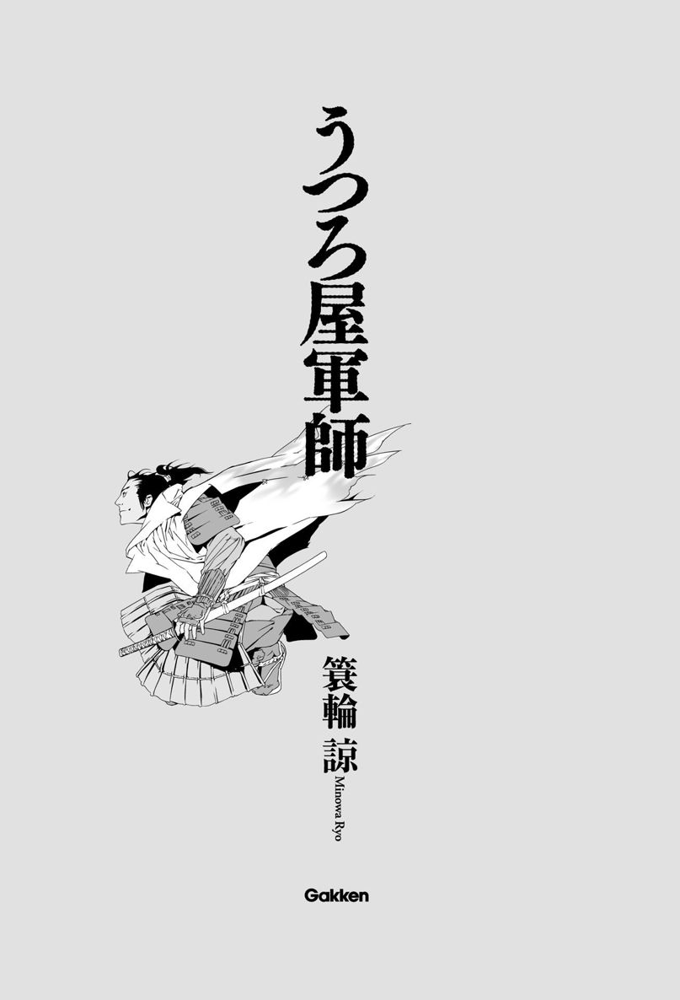
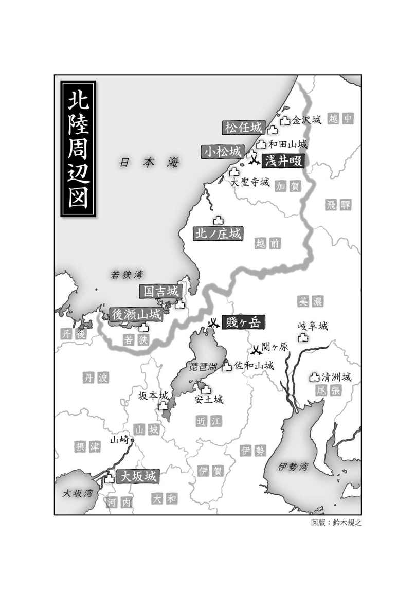
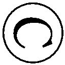

| うつろ屋軍師 | |
| 簑輪諒 | |
| (2014) | |

装画 森 美夏
装丁 齋藤視倭子

主な登場人物
◆丹羽家
江口正吉 丹羽長秀の家臣。「うつろ屋（空論家）」と呆れられる、突飛な奇想の持ち主。
丹羽長秀 織田信長の二番家老。「米のように欠かせぬ男」と評される、正吉の理想の主君。
丹羽長重 長秀の息子。城郭に並々ならぬ興味を持つ、温和な性格の若殿。
坂井与右衛門 丹羽家家老。「六条表の花槍」の異名で武勇を知られる、正吉の良き理解者。
◆羽柴家（豊臣家）
羽柴秀吉 丹羽長秀と同じく、織田家の家老を務める名物男。のちの豊臣秀吉。
大谷吉継 幼名「紀ノ介」。誠実さと底知れなさを併せ持つ、若き羽柴家家臣。
石田三成 幼名「佐吉」。吉継の朋輩であり親友。吏才に長ける。
◆その他
柴田勝家 織田家筆頭家老。信長亡き後の織田家を巡って秀吉と対立。
徳山五兵衛 柴田家の京奉行。政略に精通する策謀家。
渡辺勘兵衛 高名な武辺者。通称「槍の勘兵衛」。
前田利長 加賀百万石の大大名、前田家の聡明な二代目当主。
長九郎左衛門 利長から厚く信頼される、前田家随一の侍大将。
結城秀康 越前六十七万石、結城家の当主。徳川家康の次男で、将軍・秀忠の兄。
御宿勘兵衛 秀康の家臣。仕えた主家が必ず滅ぶため「厄神の勘兵衛」と呼ばれている。
一
初春の柔らかな日差しが、紀伊（和歌山県）の浜辺を照らしている。海原は穏やかで、草原のように広がる青々とした水面で無数の陽光が揺れている。
浜辺から北東に半里（約二キロ）ほどの地点に、小城がある。山が多いこの地域にしては珍しいほどに開けた平野であり、西方には紀伊水道を臨み、南方には紀ノ川という大河が横たわっている。
その城が、包囲されていた。それも、三万にも及ぶ兵によって。
「攻めあぐねておるなあ」
包囲軍のやや後方にある本陣の陣幕の傍らで、一人の若者が他人事のように言った。年齢は二十歳過ぎといったところだろうか。明らかに戦場で焼けた浅黒い肌、上背があり引き締まった身体は威風を感じさせるが、どこか気の抜けたような表情をしており、摑みどころがない。
「三右、吞気なことを申すな」
そう言って叱りつけた朋輩は、若者よりさらに大きい。顔も身体も、岩を重ねて削り出したように厳つく、いかにも豪傑の相である。年齢は若者より十は上だろうが、意気潑剌としており、遠目であればむしろこの朋輩の方が若々しく見えるだろう。
「三右よ、そのような覇気のないことでどうする。武士が攻めあぐねているなどと申すな」
「しかし、与右殿」
三右と呼ばれた若者は苦笑し、槍で城の方を指した。攻城軍は竹束や木盾に隠れながら恐るおそる近づいていく。しかし、一定の距離を超えると、そこに埋め火（地雷）でも敷いてあるかのようにばたばたと撃ち倒されていった。
「見よ。あれは攻めあぐねている。それは認めねばなるまい」
「そのようなことを申しておるのではない。武士ならば......」
与右と呼ばれた朋輩は若者から槍を奪い、えいっ！ と気声を上げ、敵を突く真似をした。
「このような城、丹羽家臣江口三郎右衛門正吉が、この槍ですぐに攻め落としてやろう！ とでも申すべきだ。攻めあぐねている、などとは武士の言葉ではない。攻め落とすと申せ」
「どうも、気はずかしい」
三右、いや江口正吉は、再び苦笑した。
正吉はこの大柄な朋輩、坂井与右衛門を慕っていたし、槍一つで丹羽家の家老にまで上りつめた武勇を尊敬もしていた。ただ、この源平の絵巻物から飛び出してきたような芝居がかった武者振りには、いささか照れ臭さを感じてしまうことがある。
「しかし、与右殿。攻め落としたとしても、兵をむやみに失うては意味があるまい？」
正吉がそう言うと、与右衛門は巨大な体軀を揺らし、豪快に大笑した。嘲笑しているつもりなのだろう。
「臆病な武者もおったものよ。三右、それほど鉄砲が怖いか？」
与右衛門は悪童のように唇を歪め、正吉を挑発した。その様子も、言葉ぶりも、いかにも子どもじみている。豪傑とは、ついに大人になりきれなかった子どもの別称なのだろう。
正吉はそんな与右衛門の「豪傑振り」に愛おしさを感じつつも、挑発など意にも介さない様子で、
「当たれば死ぬからな」
とうそぶき、微笑するばかりだった。
攻城軍の総大将は、織田信長という。
十数年前、尾張（愛知県西部）より身を起こし、瞬く間に近畿地方を中心とする日本の中枢を併吞し、現在も拡張を続けている戦国の覇王である。その勢力、権力の巨大さは天下に並ぶものがなく、もはや織田家は一大名家ではなく実質的な新政権といってよかった。
城に籠る敵軍、雑賀衆はそんな新政権に従わない勢力の一つであった。
いわゆる大名ではない。紀伊に割拠する地侍（地方の小領主）たちの連合勢力で、彼らは大名という支配者を持たず、いかなる権力の統制も受けずに暮らしてきた。
一方で、彼らは傭兵集団でもあった。それも鉄砲を大量に保有し、その扱いに日本一長けた集団であった。同じ鉄砲も雑賀衆が使えば、まるで別次元の兵器のようでさえあった。
天正五（１５７７）年、信長は十万もの大兵力を動員し、自らが軍団を率いて雑賀攻めに乗り出した。さらに先発する軍団を二つに分け、一方を浜手軍と称して瀬戸内海沿いに西側から、もう一方を山手軍として風吹峠を越えて東側から、それぞれ三万の兵力を与えて進軍させた。山手軍はそのまま雑賀衆の本城である雑賀城に向かい、正吉たちが属する浜手軍は海沿いの拠点である中野城を包囲した。しかし、彼らはこの城を落とせずにいる。
「我らに任せればよいのだ」
与右衛門は中野城を睨みながら、恨めしげにぼやいた。
「我が丹羽軍に先陣をさせてみろ。かような小城、すぐにでも攻め落としてみせるわ」
「ふむ......」
正吉も城を見つめたまま、肯定とも否定ともつかない曖昧な相槌を打った。
彼らは織田家幕下の丹羽家の家臣である。丹羽軍はこの中野城攻めでは後方の後詰（予備兵力）として配置されているが、先陣を務める軍団長たちが不利を認めようとせず、予備兵力の投入を頑なに拒んでおり、与右衛門や、彼の部隊の与力武将である正吉は後方で暇を持て余している。
与右衛門はそのことが気に入らぬのであろう。正吉も不満を感じてはいたが、その理由はずいぶんと違う。
（別に、後詰でも構わない）
と、正吉は緊張感のない顔つきの裏で密かに考えていた。
（先陣があの様子では、いずれ我らに救援を泣きついてこよう。そうなれば戦功は丹羽家の一手で独占できる。このまま後詰に甘んじて様子を見るのも、悪い選択ではない）
ただ、その場合は丹羽家の独力で、中野城の激しい抵抗に立ち向かうことになる。戦功を得ることはできるだろうが、馬鹿正直に突撃し兵力を消耗するというのは、やはり面白くない。要するに正吉は先陣や後詰といった部隊配置のことよりも、雑賀衆相手にただ力攻めを繰り返す戦略の稚拙さに不満を感じていた。
「――それよりも」
正吉は与右衛門の方に向き直り、懐から紙を取り出した。
地図である。正吉の自作らしく、端にわざわざ名前と花押が書かれている。中野城だけでなく、雑賀衆の拠点のほとんどが記されており、色までついていた。
「いつの間にこのような手のかかりそうなものを作った？ わざわざ陣中に絵の具まで持ち込んで......」
「いや、出陣前に描いた。伝聞だけで作ったから多少は違っているかもしれない」
「ほう！」
与右衛門は感嘆の声を上げた。地図はほぼ正確に雑賀領の地形を表しており、城や砦の位置も網羅している。伝聞だけで描けるものではない。もし事実だとすれば、途方もない想像力である。
正吉はそんな異能を特に誇る様子もなく、地図の一点を指差した。中野城である。指はそのまま、つつ......と南に移動した。
「ここに、付城を建てる」
「付城？」
「ああ。南方に紀ノ川がある。城を築き、川の支配権を抑えることで、雑賀衆の本拠である雑賀城との連携を断つ。そうすれば中野城には、鉄砲に不可欠な硝石を手に入れる術がなくなる。さらに、包囲軍には人夫を大勢雇い入れ、弾防ぎの築山を作らせ、徐々に包囲の輪を狭めていく。そのまま硝石か兵糧が尽きるまで待てば、自然と降伏してくるだろう」
「三右、空論を申すな」
与右衛門は苦りきった顔で言った。この場には、付城を建てる技術者も木材もなければ、築山を作る人夫もいない。第一、正吉の方法では被害は防げても時間がかかり過ぎる。
与右衛門はこの若者を評価している。武将としても、家臣としても、行く末、主家になくてはならない男になるだろうと、その能力と器量に期待していた。
（しかし惜しいかな、三右には悪癖がある）
それが、たった今見せた空論癖である。正吉はしばしばこのような空論を吐き、与右衛門や周囲を呆れさせた。中野城の攻城案といい、地図の件といい、想像力と空想力があり過ぎるのであろう。あるいは、戦が大きな視点で見え過ぎるというべきか。
思考と視点の俯瞰というのは武人にとって宝のような才能に違いない。しかし、俯瞰ができ過ぎるとき、その発想は否応なしに飛躍し、ついには空論に成り下がる。彼の頭の中で描かれるどんなに壮大な戦略も、口から出たときは妄想家の戯言に過ぎなかった。
「空論屋三右」
ふと、正吉たちの背後から穏やかな声がかかった。
「とは、よく言ったものだな。相変わらず面白いことを考える」
振り返ると、そこには妙に童じみた微笑を浮かべた、色白で丸顔の男が立っていた。
「な、長秀様！」
正吉は思わず頓狂な声を上げた。
丹羽長秀。通称は五郎左衛門。織田家の二番家老であり、信長の最も有力な配下の一人であり、なにより正吉と与右衛門の主であった。
「殿、これは、その......」
正吉は狼狽し、先ほどまで得意げに広げていた地図を慌てて丸め、その場に捨てた。だが、長秀は相変わらず微笑を浮かべたまま、
「恥じるな、正吉」
と言ってすぐにそれを拾い上げた。
「くだらぬ世の常に合わせて己を狭めるようでは、その世を打ち倒そうとする信長様の幕下は務まらぬぞ」
その言葉は、坊主がわけ知り顔で話すような説教や訓戒とは違う。丹羽長秀というこの男自身が、常識外れと評するほかない異様な経歴の持ち主であった。
織田家は急速な勢力拡大に伴い、単純な戦闘要員以外にも様々な技能を必要とするようになった。ところが、信長は新たな技能を必要としたとき、そのために人材を雇うということをしなかった。問題に直面したとき、この覇王はただ一言、決まった言葉を吐くだけである。
――五郎左（長秀）、お前に任せる。
この言葉により、長秀はときには経験もない城郭建築を任され、安土城という天下一の巨城を築かなければならなかったし、ときには琵琶湖で当代一の大船を製造しなければならなかった。かと思えば、戦場指揮官としての任務もあり、遊撃部隊の隊長として、四方八方の戦場に援軍として駆けつけなければならなかった。
驚くべきことに、長秀はそれらの理不尽ともいえる任務を常に成功させた。
いつしか長秀は「米のように欠かせぬ男」として「米五郎左」と呼ばれるようになった。
「わしも昔は鬼五郎左などと呼ばれ、槍先の功にばかり逸っていたものだ。己の使い道がどこにあるかなど、そう容易にはわからぬよ。ましてお前のような若い者が、自身の在り方を狭めるような真似をするべきではないぞ」
「は......」
正吉は羞恥と照れが入り混じった表情でうつむき、地図を懐にしまい込んだ。
その傍らで、与右衛門が不満げな視線を長秀に向けている。甘やかしては困るというのであろう。長秀は「わかっているから、そう睨むな」とでもいうように苦笑し、
「とはいえ、画餅では腹が満ちぬことも事実だ。ありあわせの材料でこの場を打開することも、ときに必用であろう」
「しかし、どうすれば......」
「だから材料を使うのだ。それとも、我ら丹羽軍は画餅の添え物か？」
その言葉に、正吉たちは思わず耳を疑った。長秀の言う「ありあわせの材料」が丹羽軍だとすれば、それを用いてこの場を打開するということは――
（抜け駆けではないか！）
言うまでもなく、重大な軍令違反である。しかし、丹羽軍が前線に投入されれば戦況は大きく変わってくるだろう。正吉は顔を伏せたまま、視線だけを恐るおそる長秀に向けた。この善人を絵に描いたような主君のどこにこれほどの大胆さが潜んでいるのか、不思議でならなかった。
「わかったようだな。されば......」
「お待ちください」
それまでうつむいていた正吉が、ぱっと顔を上げて言った。
「軍団が丸ごと抜け駆けとなれば、丹羽家は諸将の信を失い、のちの戦に支障が出ましょう」
「では、どうする。その配慮のために傍観を続けるのか」
正吉はかぶりを振った。
「一人の猪武者が突出し、その勢いについ引き摺られたとなれば、言い訳も立ちます」
長秀の顔から、笑みが消えた。この若者は、今もなお織田軍の屍を築き続けているあの弾雨の中を、ただ一人で突破すると言っているのだ。
（できるのか）
と言いかけて、やめた。覚悟を決めた臣に主がかけるべき言葉は別にあり、しかもそれはただ一つしかない。
「よくぞ申した。されば往け、正吉」
「承知」
小さくうなずくと、正吉はすぐに馬上の人となった。そして、中野城に向かって飛ぶように馬を駆けさせた。
多数の兵が竹束と木盾に隠れながら、恐るおそる進んでいく。その隙間を縫うようにして、正吉は駆けた。あれほど鉄砲の脅威を重く見ていた男が、そんなことは忘れたかのように躊躇なく敵城に迫っていく。
「なんじゃ、ありゃあ」
中野城に籠る雑賀衆も怪訝な目で、たった一騎で猛進してくる武者を見ていた。
「まさか、軍使か？」
軍使なら、一人で城に近づいてくるのもわかる。実際、織田軍では何度か降伏を勧める使者を中野城に出してきていた。
「いや、敵じゃろうて」
そう言ったのは、この城の守将・宮本兵部である。
「降伏を勧める軍使なら、それとわかる指物を背負っておるはずじゃ。奴はなにも背負っておらん。信じがたいが、敵兵じゃ」
兵部の判断が正しいとすれば、敵はよほどの勇者か、途方もない愚者であろう。いずれにせよ、敵が迫っているならば彼らが取る行動は一つであった。
「鉄砲衆、構えい！」
「応！」
兵部の命に従い、配下の兵士たちは即座に射撃体勢を作った。
「あの者の四肢と頭を砕いて、織田軍の肝を冷やしてやれ！」
銃弾は、動く的に当てることが一番難しいという。ましてや、当時の火縄銃は命中率と射程において、後世であれば欠陥品に属するほどに性能が低い。しかし、雑賀衆にとってはなんでもない技能である。的の遠近、大小、動止など、この鉄砲集団には砂粒ほどの違いでしかない。
銃兵たちは構えたまま無言でいる。まるで身体が木か石になったかのように固まり、息は聞こえぬほどに細い。
五十間（約九〇メートル）、三十間......と、敵はどんどん近づいてくる。やがて、敵が今にも城壁に触れそうな距離になってようやく、
すっ
と、葉から雨露が落ちるように、静かに引き金が引かれた。
五つの銃口から同時に、雷鳴のような銃声が轟いた。白い硝煙が銃口から吹き出し、その先で馬の嘶きが聞こえる。
「敵の屍はどうなっとる？」
兵部は、敵兵のことをすでに屍と呼んでいた。彼にとってみれば当たり前のことで、雑賀の銃声が鳴り響いたのちには、生きている敵兵は一人も残らないのである。それより、四肢と頭という兵部が指定した的を誰が最も見事に貫いたか、大将として確かめなければならない。
しかし、依然として煙は晴れない。火縄銃というより黒色火薬の欠点であり、撃った後はもうもうと硝煙が立ち込め、視界を塞いでしまう。
やがて、煙が晴れた。
「どうじゃ、見えるか？」
「おお、今たしかめ......」
城壁の鉄砲狭間を覗き込んだ兵士の言葉は、そこで途切れた。
突然、狭間から飛び出した槍の穂先が、兵士の目を突いたのである。兵士は声もなくその場に崩れ落ち、そのまま息絶えた。城内は騒然となった。
「何事じゃ！ なにが起こっておる！」
戸惑う兵部の言葉に、配下の者は誰も答えない。答えようもなかった。兵部は舌打ちし、自ら城壁の上に登った。そのとき、
びゅっ
と、兵部の首めがけて槍が襲った。すんでのところで躱し、慌てて刀を抜く。
「何者じゃ！」
槍の主は、にやりと不敵に笑い、
「江口三郎右衛門正吉、一番槍！」
と、大声で叫んだ。そこには、先ほどの単騎の武者が城壁に取り付いていた。
「なんという奴だ」
後方で一部始終を見ていた与右衛門は、正吉の働きに舌を巻いた。
本来なら馬上の正吉の身体には銃弾が食い込み、今ごろは中野城の前に骸を並べていたことだろう。ところが、銃撃の直前、正吉は身体の力を抜いた。そのまま馬から振り落とされ、銃弾は先ほどまで彼の身体があった場所を掠めていった。
雑賀衆の狙撃術は恐ろしく正確である。流れ弾、外れ弾というのはありえず、それゆえに正吉は躱すことができた。しかし、馬から落ちるのが遅過ぎても早過ぎてもならず、そもそも落馬自体が死因となりうる危険な行為である。
「そんな無茶を、ああも見事にやってのけるか」
若くして合戦の呼吸を知り尽くした働きぶり、十中八九は死ぬような無謀を平気でやってのける胆力、いずれも生半な能ではない。正吉には、戦場職人として天性のものが備わっているのだろう。
すでに城壁の上に登った正吉は、狭い足場をものともせず、巧みに槍を繰り出した。
「早う、こいつを撃ち殺せ！」
次々と繰り出される槍を刀で防ぎながら、宮本兵部が叫んだ。だが、彼の配下にその声は届いていなかった。その理由を、兵部はすぐに知った。
「頭！ 外を！」
配下の一人の言葉に城外を見ると、なんと、先ほどまで弾除けに隠れていた織田軍が、残らず突撃してきていた。それも一方からではない。中野城を包囲していた全ての織田軍が、竹束も木盾も放り捨て、ただ槍を手に一直線に向かってくる。
正吉の死を恐れぬ一騎駆けは、もはや勇気というより狂気に近い。その狂気は感染し、伝播し、やがて軍の形になった。織田軍、三万。まさしく雲霞のような軍勢が、吞み込むようにして中野城に迫っている。
「ここまでか」
兵部はぎりぎりと口惜しげに歯を鳴らした。
わずか千人の雑賀衆では、三万人を同時に射殺す術はない。千人殺そうが、二千人殺そうが、やがては人の波に抗しきれず、無惨に吞み込まれるだろう。すでに勝敗は決した。それでも、彼らは抵抗をやめるわけにいかなかった。
兵部は正吉に背を向け、城壁の内側に飛び降りた。
「あっ、逃げるか！」
「木端武者め」
相手にできるかとでも言いたげに、兵部は吐き捨てた。彼がこの期に及んですべきことは、江口某という蛮勇の将と槍合わせをすることではなかった。兵には兵の仕事があるように、大将には大将の仕事がある。兵部は梯子をかけ、城郭の屋根によじ登り、
「聞けや！ 織田の弱卒ども！」
と、瓦が震えるほどの大音声で叫んだ。
「我らは雑賀衆！ 何者にも従わず、何者にもまつろわず、己の技量一つで戦乱の世を渡ってきた！ その雑賀衆が、今さら信長に傅けるものか！」
屋根の上でそう叫び終わると、兵部はそこから配下に次々と下知を飛ばした。
敵味方が入り混じる激戦の中で、雑賀衆の鉄砲はいよいよ天を割らんばかりに鳴り響いた。断末魔と銃声の奇妙な重奏は、彼ら自身のための鎮魂歌だった。
雑賀衆は最後まで奮戦し、織田軍に多大な犠牲を出した。そして、中野城は落城した。
二
たとえば雨が上がった後の路上。足元は残らず濡れそぼりながらも、水たまりと地面には確かな境界がある。落城後の中野城周辺も、似たようなものだった。
血を流す者、傷を負った者、中には指や目、手足を失った者さえいたが、彼らは血に濡れながらも生きている。片や同じような外見でありながらすでに屍となった者たちも大勢地に伏している。
合戦もまた、一つの通り雨と変わらない。それが過ぎ去った後には、わずかな残り香と、確かな境界だけが置き去りにされていく。
新鮮な血の臭い、生温かい死体の臭い、焦げくさい硝煙の臭い、それらが潮風に乗って、辺りを包んでいる。合戦という通り雨の残り香は決して芳しいとはいえないが、境界の一方に立った織田軍の兵士たちにとっては、どれほどの馥郁たる香りにも代えがたいものだった。
正吉は、丹羽家の陣所に向かって歩いていた。
途中、死体に群がる雑兵を何人も見た。彼らは、自分たちの直属の上司から死体処理の命を受けているのだろう。戦場で死体を放置すれば当然ながら腐敗し、のちにその地を治めるときに難がある、というのが建前である。実際は、死体から鎧や刀を剝ぎ取らせることが主眼で、処理というのはついでに過ぎない。略奪の許可は雇用者の懐が痛まないうえに、兵たちの士気も上がるという一挙両得の法であり、どの軍でも当たり前に行われていた。しかし、
（やりきれぬ）
と、正吉は思うのである。
武士は誰かの命を奪って生きている。殺人がこの世で最も重い罪なら、これほど卑しく罪深い稼業はないであろう。だからこそ、武士はせめて生き様だけでも爽やかたらんとする。
（生き様まで卑しくなれば、いよいよ俺たちは餓鬼畜生の群れと変わらない）
死体漁りからなるべく目を逸らしながら、正吉は逃げるように歩いた。
「正吉！」
正吉が陣幕をくぐるやいなや、長秀は床几を立って駆け寄ってきた。
「よく生きて帰った」
長秀は正吉の手をとり、心から嬉しそうな様子で言った。笑うと笑窪が浮かび、もう四十を超えているというのに、いよいよ子どものように見えた。
「一番槍の功、見事であった。お主の武勇が画餅を実物に変えてしまったな」
正吉の突出は丹羽軍抜け駆けのための建前のはずだったが、あまりの勢いに織田全軍が引き摺られてしまった。ところが正吉は、
「いえ、それほどのことでもございません」
と言って、照れ臭そうに頭をかくばかりだった。戦場でどれほどの大功を立てても、はにかむばかりで強く主張しようとしない。この態度と性分は同時代の武将としてはよほど珍しい。
「だが、働きを見極め、報いるのがわしの仕事だ」
そう言うと、長秀は自らの脇差を正吉に与えた。正吉は膝をつき、かしこまってそれを受けた。
「目利きができるか？」
長秀は悪戯っぽい笑みを浮かべた。なにか含みがあるらしい。正吉は「失礼」と断り、脇差を抜いたが、不思議な刀風で、地肌や刃紋を眺めてみると様々な刀と似ているようなのだが、そのどれとも完全には一致しない。
「......わかりませぬ。備前か相州の刀工に似ておりますが」
「そうか、そう見たか」
長秀はくく、と堪えきれず苦笑を漏らした。
「いや、我ながら意地悪をしたな。それはな、冬廣よ」
「ああ、冬廣」
若狭住冬廣、または若州冬廣という。
もとは相模（神奈川県）の刀工だが、丹羽家の領国でもある若狭（福井県南部）に移り住んだ。相州伝といわれる相模刀工の作風を下地としながらも、備前伝といわれる備前（岡山県東南部）の刀工の技術を積極的に取り入れ、両流が入り混じったような独特の刀となっている。
「さて、正吉」
長秀は急に真面目な顔になり、正吉に向き直った。
「冬廣を、わしが与えた意図がわかるか？」
「私の働きの恩賞にと......」
「馬鹿な」
長秀は口元を少しだけ歪めて笑った。しかし、真面目な表情を崩さない。
「わしを、物の見えぬ大将にするつもりか。お主の働きの報いが、脇差一振で足りるものか」
「では、なにを」
「察せ」
冬廣の刀から、何事か推察しろということらしい。先ほどの目利きは戯れかもしれないが、冬廣そのものには別の真意があるという。それも、戦場で軽々しく伝えられないような大事らしい。
改めて脇差全体を眺めまわしてみる。鞘は蠟色、柄は鮫皮に黒糸巻き、飾り気もなにもない拵えだが、鍔だけはやけに豪奢で、風に吹かれる若椿が金象嵌で鮮やかに描かれている。
（椿といえば）
若狭国には、椿峠という交通の要所がある。ところが、その要所を押さえるべき拠点である国吉城には、現在ゆえあって城代がいない。
そこまで考え、正吉は息を吞んだ。
「まさか、国吉城を私に？」
恐るおそる尋ねたが、長秀は答えない。うなずく様子すら見せず、じっと押し黙っている。やがて、おもむろに口を開き、
「働きに報いることが、わしの仕事さ」
と言い、微笑した。
城代となれば家老に次ぐ、家中の政にも参画すべき立場であり、戦場では一隊を率いる将である。これほどの大抜擢を戦役の途中で軽々しく告げるわけにはいかない。そのため、長秀はこのような形で内示してみせた。
（この殿のためならば！）
命さえいらぬ、と正吉は思った。
己の働きを正しく評価する主というのはそれほどに得がたく、武士であれば誰もが正吉と同じ思いを抱くだろう。
そんな正吉の感動をよそに、長秀は相変わらず吞気に微笑みながら、
「正吉よ、もう一仕事せねばならぬ。お主も手伝え」
と言って本陣の隅を指差した。そこには、丹羽家の家紋が入った樫の箱がいくつも積み上げられている。無論、正吉はその箱の中身を知っていた。丹羽軍の軍資金である。
「あれをこれから兵たちに配るが、手が足りぬ。手伝え」
正吉は驚嘆の声を上げた。陣中で金を配るということがそもそもありえないし、その元手が軍資金というのもありうべかざることである。第一、兵卒の武功というのはよほど高名な武者の首でも取らない限りは、大将自ら報奨することなどない。長秀の宣言はどういう角度から見ても、常識から大きく逸脱している。
「言っただろう、正吉。わしの仕事は、働きに報いることだと」
長秀は相変わらず穏やかな微笑を絶やさなかったが、口ぶりに冗談めかしたところはない。冗談でも狂言でもないのなら、正吉は当然の疑問を吐かなければならない。
「なぜ、そのようなことを？」
「武士はなにゆえ、武士たりえると思う？」
長秀は正吉の質問に答えず、逆に問いかけた。
「武士とは見方によれば殺人者であり、掠奪者であり、侵略者である。その強欲は生きながらにして餓鬼道に堕つるが如くであり、その行いは畜生のそれとまるで変わらぬ。餓鬼畜生の徒輩と武士を分かつものがあるとすれば、それはなんだ？」
正吉は考えない。考えるまでもなかった。長秀の質問は、彼が常に思いを巡らし、自身に銘じ続けていることである。
正吉は静かに顔を上げ、口を開いた。
「生き様の爽やかさ、かと存じます。それがなくては、いよいよ我らは餓鬼畜生の群れと変わりませぬ」
長秀はじっと正吉を見ている。その目は睨んでいるようにも、驚いているようにも見える。やがて、この丸顔の主人は頰をほころばせて人の好い笑みを浮かべた。
「その通りだ。ゆえに、丹羽の兵には死体漁りのような卑しい真似はさせられぬ」
その言葉で、ようやく正吉も長秀の考えがわかった。死体の始末に伴う雑兵の行いは、軍規で禁止されながらも、実際は見逃されていた。長秀はその軍規を徹底させようというのであろう。ただ禁止するだけでは兵の不満が募り、士気が下がる。だから、きちんと軍規を守った兵には、具足や刀と同じ値の金を与えるのである。
（この殿は、単に良き主人というだけではない）
配下の働きを正しく見定める主君は、得がたいとはいえ長秀以外にもいるであろう。しかし、雑兵の働きに、わざわざ懐を痛めて報いようとする大将がほかにいるだろうか。それも、ただ武士の生き様を守るという、それだけのために。
（長秀様の志は、俺と同じだ）
五体が打ち震える。堪えようとするが、どうにもならない。心臓が波打つ。目頭が熱を帯びる。興奮と感動が全身を支配し、脈動を続けている。気がつくと、正吉は涙を零していた。
（いかん、殿の御前だ！）
自分を叱りつけ、溢れるものを必死に拭おうとするが、いつまでも涙は止まらず、ぼろぼろと零れた。
長秀ははじめ驚いた様子だったが、やがていつもの穏やかな微笑を浮かべ、金櫃を担いで陣を出ていった。
江口三郎右衛門正吉が、丹羽家に己の全てを懸けようと誓ったのはこのときからだった。
大袈裟にいえば彼のこの誓いが、のちの歴史を少し変えることになる。
一
水を見ていた。見渡す限りの広大な水を見ていた。
海と見紛うほどの巨大な湖。その湖畔には小さな山があり、さらにその上に城郭がある。城の名は近江（滋賀県）佐和山城、湖は琵琶湖である。江口正吉は、その城の物見櫓から湖面を見ていた。
「まるで、山が湖に浮かんでいるようだなあ」
そんなことを吞気に独りごちる。城郭という軍事要塞も、彼にとっては見晴らし台と変わらない。気の抜けた顔を隠そうともせず、日向で寝る猫のように呆けた様子で櫓下を観望していた。
そのとき、水面に一艘の船が浮かんでいるのが見えた。船は、どうやらこちらに近づいてきているらしい。
「賊か？」
一瞬そう考えたが、すぐに自ら打ち消した。賊がたった一艘で、白昼から城に攻めかかるなどありえない。なにより、船の外観が明らかに賊のそれではなかった。船体全面が派手な朱塗りで、あちこちに金で装飾が施してある。船の主はよほどの貴人か、大商人であろう。
「されば、客だな」
正吉は軽く身体を伸ばし、急ぐでもなくゆるゆると櫓を降り始めた。戦場では誰よりも機敏な男だが、平時はほとんど昼行灯に近い。まだ三十にもならないというのに年寄りのような足の重さで、正吉は本丸に向かった。
草色の肩衣に同色の袴、小袖は白。正吉は礼式通りの服装でゆったりと座り、書院で客人を待っていた。堅苦しさを嫌い、少し緩んでいる態度がかえって鷹揚に見え、妙な威厳を醸し出している。その姿はまさしく高禄の重臣に相応しい。もっとも、黙ってさえいればの話だが。
「それで、客人は誰かね？」
「それが......」
近習が口ごもっていると、ずたっずたっ、と妙に大きい無遠慮な足音が聞こえてきた。ただ、その足音は大きさの割に重量を感じない。
（小男かな）
正吉は居住まいを正し、客を待ち構えた。
果たして、足音の主は小男だった。書院に入ってきた客人は正吉の姿を見るや、城中に響くような大声で笑い出した。
「馬子にも衣装とはよく言うたものよ。どこの大名かと思ったぞ」
「あなた様は......」
正吉はこの小男を知っている。天下で並ぶ者がいないといわれる大声、そして「猿」と異称される奇妙な風貌は一度会ったなら忘れようがない。
「羽柴様......」
「うむ。久しいの、三右」
小男は小さな顔をはちきれさせるようにして笑った。
羽柴筑前守秀吉。草履取りから家老にまで成り上がった、織田家きっての名物男である。
秀吉は尻餅をつくようにその場に腰を下ろし、せわしなく扇子で顔を煽ぎ始めた。その振る舞いはまるで自分の家のように遠慮がない。
「しかし、三右。あまり大きな声でわしの名を呼ぶなよ。内密で来ておるからの」
「ご内密というのであれば、羽柴様に笑いを堪えていただかねばなりますまい。先ほどの笑い声で、羽柴様がいらっしゃったことは城中はおろか領内中に伝わりましたから」
「ああ、それもそうか」
秀吉はそう言うと、再びあの大声で笑った。この小男のどこにこれだけの声が詰まっているのか。正吉もつい釣り込まれて苦笑した。
「こうして直に言葉を交わすのはずいぶんと久し振りじゃのう」
「雑賀攻め以来になります」
「されば五年振りか」
秀吉はふと笑いを消し、遠くを見るような顔つきになった。その表情は昔を懐かしむというより、どこか悲痛に見えた。
「様々なことがあったな。思えばこの五年の間、我らは天と地が絶えず覆る中を歩いてきたようなものだ」
秀吉の言う通り、この五年間は様々なことがあった。あり過ぎたと言っていい。歴史はこの五年の間に変転し、時代はまったく姿を変えてしまった。
その最大の変化は、あれほど強大だった織田政権というものが、跡形もなく瓦解してしまったことである。
天正十（１５８２）年六月二日、信長は京に宿泊していた。
宿所は城ではなく寺である。京をはじめ畿内は織田政権の中心地であり、信長に逆らう者があろうはずがない。ゆえに信長は京に城や砦の類を一つも造らなかった。
しかし、叛逆者はいた。その夜、中国方面に援軍に向かうはずだったある軍団が途中で進路を変えた。この軍団の目的地の名前は、彼らの大将の言葉と共に、歴史の大事件として記録された。
「敵は、本能寺にあり！」
軍団の大将は、配下に向かってその劇的過ぎる言葉を吐いた。本能寺にいるのは誰か、軍団の一兵卒に至るまで皆知っていた。
前右大臣、織田信長。新政権の主であり、天下統一を目前に控えた戦国の覇者であり、なによりこの軍団の大将の主君だった。
大将の名前は惟任日向守、またの名を明智光秀という。
世に「本能寺の変」と呼ばれるこの歴史的叛逆によって信長は弑され、その政権と共に炎の中で果てた。
なにが光秀を反逆に踏みきらせたのか。その真相は今日に至るまで明らかになっていない。なぜなら、光秀は謀叛の存念を誰かに語る間も与えられず、事件からわずか十一日後には、胴から離れた首を刑場に晒していたからである。
（そうだ。この人がそれを成した）
正吉は唾を吞んだ。反逆者明智光秀を討ち取った張本人は、目の前で胡坐をかいている。
本能寺の変が起きたとき、羽柴秀吉は備中（岡山県西部）高松城を攻囲していた。
この男は陣中で変報を聞くやいなや、交戦中の敵と和睦を結び、全軍を率いて畿内に急行した。秀吉とその軍は「中国大返し」と呼ばれる驚異的な大強行軍により、わずか五日間で五十一里（約二〇〇キロ）を走破した。そして摂津（大阪府北部）に駐屯していた丹羽長秀ら諸将と合流し、摂津と山城（京都府）の国境にある山崎の地で明智軍を破った。
（さて、問題は）
正吉はちら、と秀吉の顔を窺った。先ほどの悲痛な顔はどこにもなく、すでに秀吉は笑みをたたえている。もともと真剣な表情を保ちにくい性質なのか、この笑顔も政治的な駆け引きの一つなのか、正吉には判断がつかない。
（ともあれ問題は、今や織田家の英雄たるこのお方が、なぜわざわざ内密にこの城にやって来たのか、だな）
「そういえば、五郎左（丹羽長秀）殿は息災か？」
「いえ、主は病が長引いておりまして......。本日もそのために羽柴様をお待たせしてしまい、申しわけなく存じます」
事実だった。長秀は数年前から腹部に腫瘍ができていた。このため、正吉は頻繁に長秀を見舞い、そのついでに城内の政務を手伝っていた。本来は長秀の居城である佐和山城に、国吉城代の正吉がいるのはそのためである。
そんなやり取りの最中、からりと襖が開いた。
「おお、五郎左殿！」
「遅くなり申しわけござらぬ、筑前殿」
そう言って少しよろめきながら秀吉の前に座った長秀は、五年前とはまるで違っていた。顔つきこそ相変わらず童のようだが、愛嬌のあった丸顔はずいぶんと頰がこけ、顔色もどこか青白い。
「して、用向きはなんでござろう」
「それは......」
秀吉はちらりと正吉を一瞥した。家来を挟んでいては話しづらいことらしい。正吉もそれを察し、席を立とうとした。
「待て、正吉」
長秀は病む前と変わらない威風のある声でぴしゃりと言った。正吉は反射的にひれ伏した。
「筑前殿、正吉は口が堅い。できれば同席させたいのだが......」
「いや、しかし......」
「もし話が漏れるようなことがあれば......」
戸惑う秀吉に、長秀は穏やかに笑いかけた。
「正吉を斬り、この五郎左の首も差し上げましょう。不足ですかな？」
態度が穏やかなだけに長秀の言葉には篤実な響きがあり、かえって迫力がある。この言葉に、秀吉ほどの男がたじろいだ。少しあたふたとしながら「よろしいでしょう」と答え、本来は同席の許されない正吉を密議に加えてしまった。
「正吉」
平然とした様子で、長秀は語りかけた。
「よい機会だ。お前も、政というものの裏を見ておくとよい」
そう言ってくすりと悪戯っぽく笑う姿は、五年前の雑賀の陣となにも変わっていなかった。
人払いが済むと、秀吉は懐からなにか取り出した。
「清洲からの手紙でござる」
声をひそめて、秀吉は言った。長秀は腕を組んだまま無言でいたが、やがて聞き取れぬほどの小声で何事か呟いた。
「やはり、このことか」
正吉には、長秀がそう言ったように聞こえた。
二
清洲城は、織田信長の草創期の居城である。尾張の中心部に位置し、複数の街道と隣接する交通の要所であった。
「存外、草深いところだ」
城下町を歩きながら、正吉はぼやいた。いや、城下町といえるだろうか。辻を見下ろすように聳える黒塗りの城郭の周りには、確かに民家や商店が多い。しかし、それらは城の周囲に計画的に作られたというよりは、すぐそばを通る街道が目当てで人が住み着いたようにしか思えない。町割の粗さに加えて、あちこちで伸び茂っている葦が余計に草深い印象を与える。この辺りの地勢は低湿地で、自然と葦も多い。
正吉は、この清洲城を実はよく知らない。彼が物心ついたころには、信長の本拠は美濃（岐阜県）の岐阜城であったし、二十歳を過ぎるころには近江の安土城に移っていた。尾張は信長発祥の地であったにせよ、隆盛期の政務の中心地ではなかった。
それでも、織田家にとって清洲城は神聖な城である。あの手紙の主が、京でも、岐阜でも、安土でもなく、信長発祥の清洲城を指定したのは、これから始まるであろう会議の内容を考えれば当然であったかもしれない。
「江口三郎右衛門、丹羽家の使いとして参上仕りました」
清洲城の書院で、正吉はひれ伏しながら言った。
城下と違い、邸内は意外なほどに手が行き届いていた。目立つ調度や意匠は見られないものの、まるで新造のように美しく保たれている。
「面を上げよ」
よく響く低い声に従い、正吉は上半身を起こした。
声の主は、上段で正吉を睥睨していた。
まず一見して身体つきが大きい。胸襟を開き、ゆったりと座っているものの、背筋は杉のように真っ直ぐ伸びており、ますますその影を大きく見せた。歳はそれなりに食っているらしく、目尻や口元には鑿で彫ったような深い皺が刻まれ、顔の下半分を覆う髭には白いものが混じっていた。しかしそれは男の威風を損なうものではなく、むしろ山奥で白毛の老猿を見たような、迫力というよりは神仙に近いものさえ感じさせた。
「ご苦労。すでに筑前（秀吉）ら諸将も集まっておるゆえ、五郎左も急ぎ登城するよう伝えよ」
上段の男、柴田勝家は眉間に皺を寄せたまま、厳めしい態度で言った。
織田家には、五大将と通称される家老がいた。
正吉の主人である丹羽長秀をはじめ、羽柴秀吉、明智光秀、滝川一益、そして柴田勝家の五人がそれであり、中でも勝家は筆頭の地位にあった。
（その柴田様が、なんのつもりで重臣を清洲城に呼び寄せたのか）
すでに、信長の仇である明智光秀は討ち取られた。信長の死によって起きた反乱の鎮圧や、四方の派遣軍の撤退もひとまずは完了し、織田軍の戦線は本能寺の混乱から立ち直りつつある。つまり、重臣との議題は合戦のことではありえない。とすれば、答えは一つである。
（どうやら、殿や羽柴様の仰る通りか）
正吉はかしこまって拝礼をし、書院から退室した。
その後、改めて長秀と共に登城し、広間に通された。室内には織田家の家臣が三十人ほど詰めていた。最奥には勝家がおり、そこからずいぶん席次を下げたところに秀吉の姿も見える。
「さて、どうやらお揃いのようだ」
上座の勝家は相変わらず威厳のある声でそう言い、諸将の顔を見回した。
「此度の議題だが、各々察しはついておられよう」
しん、と周囲が静まり返る。無論、この場にいる誰もが議題の見当はついていた。
――次の天下人を決める。
つまり織田家という、この巨大な政権の後継者を決めねばならない。
それは本来、信長の嫡男である信忠が継ぐべきであったが、彼は本能寺の変の直後、宿所を明智軍に包囲され、切腹している。であれば、新たに信長の子から継承者を立てなければならないだろう。
勝家は大きく咳払いをして注目を集めると、おもむろに口を開いた。
「わしは、信孝様こそ次なる天下人に相応しいかと存ずる」
長秀の傍らで話を聞いていた正吉はあっと息を吞んだ。
織田家三男・信孝。傑出したというほどではないにせよ信長の子の中ではそれなりに器量があり、年齢も二十五歳と後継としてはちょうどよく、世間の評判もとりあえずまずくない。確かに後継者として妥当な人選かもしれない。しかしそれは、ある一点を除けばの話である。
（信孝様の具足親は、柴田様ではないか！）
具足親というのは、武士が元服する際、はじめて甲冑を着せる役目である。つまるところ、勝家は信孝の後見人に近い立場であった。仮に信孝が後継者となれば、その下で権力を握るのはほかならぬ勝家になる。
結局のところ、勝家も無私ではない。織田家への忠誠は本物だろうが、同時に自身の栄達も望んでいる。しかしそれは別に不道徳ではなく、当時の武士としては当たり前といっていい野心だった。
「各々、如何であろう。ご異存があろうか」
言葉こそ穏やかだが、語気の端々に凄みがある。これだけ露骨な人選にもかかわらず、誰一人として反論しようとしない。座は勝家の威風に気圧され、しんと静まり返ってしまった。
「......異存はないようじゃな。然らば」
会議を締めようとした勝家を、とびきり大きな笑い声が遮った。笑い声の主はそれまで下座で沈黙していた羽柴秀吉である。
「筑前、如何した」
勝家は、ともすれば怒号しそうになるのを抑え、努めて落ち着いた声で言った。しかし、秀吉は両手を口に当て、足をばたばたさせながら「くふ、くふふ......」と、懸命に笑い堪える体でいる。その身振りがいかにも滑稽で道化じみており、つい、座の一人が噴き出した。するとそれにつられて笑い声が増えていき、ついには満座が笑いで溢れてしまった。
勝家は懸命に「黙れ！ 黙らぬか！」と喚くのだが、笑いというのはすぐに収まるものではない。
ようやく広間がもとの静けさを取り戻したころになって、秀吉は、
「いや、失礼致しました。あまりにおかしいものですから」
と、抜けぬけと言った。
全体が勝家になびいたままでは、秀吉がなにを言ったところで受け入れられはしない。秀吉がまずしなければならなかったのは、勝家に同調しかけた座の空気をぶち壊すことであった。
「サル！ なにがおかしい！」
勝家は苛立ちを隠そうともせず傲然と吼えた。
対する秀吉は、ぱっとその場に立ち上がり、涼しげな顔で扇子を開いた。その仕草はやはりどこか芝居じみている。
「なるほど、修理亮（勝家）殿の申されること、いちいちもっともでござる。しかし一つだけ、武家のお世継ぎに最も大事なことを、恐れながら失念しておられる」
「なんだと言うのだ！」
「筋目でござる」
勝家はますます苛立った。そんなことは百も承知である。だからこそ、信長の子である信孝を後継者に選んでいるのではないか。
「然らば、筑前は誰をお世継ぎに推すというのか！」
ほとんど怒号に近い勝家の質問に、秀吉はすぐには答えず、ただ微笑している。勝家は焦れ、さらに苛立った。すでに会議の主導権も空気も奪われてしまっていることに、この武人肌の筆頭家老は気づかない。
やがて、秀吉はずいと胸を張り、よく通る声でその名を座に告げた。
「三法師君こそ、新たなる天下人たるべし」
その意外な人物の名に、広間にいる誰もが思考を止め、ただ呆然とした。
「信長様の御嫡男は信忠様、そして三法師君は信忠様の御嫡男でござる。筋目から考えて、織田家を継ぐのは信長様の御嫡孫であらせられる三法師君をおいてほかにおられますまい」
「世迷言を抜かすな！」
勝家は再び吼えた。確かに、織田三法師なる信長の嫡孫が生存しており、秀吉の陣営にいることは勝家も知っていた。しかし、まさか秀吉がその三法師を後継者として推戴するなどとは考えもしなかった。
「三法師君は、まだ幼子ではないか！」
勝家の言う通り、この筋目正しき嫡孫は数えてわずか三歳の幼児に過ぎない。
「筋目も大事だが、やはりお年頃というものがある」
「では修理亮殿は筋目を軽んじておられるわけではないと？」
「無論じゃ。三法師君がもう十もお歳を経ておられるならともかく、かような幼君とあっては、わしは推しかねる」
「それならばお尋ねするが」
秀吉はにっと笑みを浮かべ、
「なぜ、次男の信雄様ではなく、わざわざ三男の信孝様を推されるのか」
とまくしたてた。
これには、勝家も言葉に詰まった。
次男の信雄は、いっそ愚者と言ってしまうのが適切であるほど器量に乏しい。軍を指揮する能力もなく、大局を見る器もなく、配下を慈しむ心もなく、政務を取り仕切る才もない。それゆえ信長在世時からたびたび失態を晒し、一時は勘当されかかったこともある。
しかし、仮にも主筋の若君である。まさか「信雄様は愚者ゆえ、天下人に値せず」などと口にするわけにもいかない。勝家は言葉に窮した。
もはや会議は秀吉の独壇場だった。しかし、この小男は政治の練達者だからこそ、この状況を決して甘く見てはいなかった。いくら理で勝っており、流れを握っていても、このまま正面から言い合っていれば、勝家は意地でも折れぬであろう。会議を制し、三法師を後継の座に据えるには新たな一手が必要だった。
突如、秀吉は笑みを消し、その場に跪いてうめき出した。勝家は驚いて目を剝き、それまで静まり返っていた諸将もざわめき出した。
「申しわけござらぬ、ちと虫気（腹痛）が......」
秀吉は脂汗をかきながら、荒い息を苦しげに吐いた。
「恐れながら、しばらく別室で休ませていただきたく存じます」
座の誰もが耳を疑った。秀吉は、この重大な会議の場を途中退出するというのである。勝家はにわかに信じられず「まことか」と何度も念を押した。問われるたびに、秀吉は青ざめた顔を縦に振り続けた。
「この筑前、もはや申すべきことは全て申しました。後は各々でご相談され、どうか良き御世継ぎを決めてくだされ」
そうして、茶坊主たちに支えられ、秀吉はよろよろと広間を出ていった。
勝家は呆然とした。目の前の出来事が、彼の政敵の浅はか過ぎる行動が、およそ現実のこととは思えなかった。秀吉がこの場で論じ続けなければ、その主張など朝露のように消えてしまうだろう。
だが、秀吉はただ席を外したわけではない。この小男は去り際に封じ手を残していった。それは、開かれれば盤上の戦況をひっくり返してしまう、鬼手ともいうべき練達の妙手だった。
「少し、よいかな」
封じ手の封は、吞気にさえ思えるほど穏やかな声によって開けられた。
「......なんじゃ、五郎左」
勝家は少し意外そうな顔をした。今までどちらの意見にも与せず、ただにこにこと微笑していた丹羽長秀が、急に議論に参加する姿勢をみせたのである。
長秀は相変わらず微笑を絶やさず、篤実そのものといった声音で、次のように言った。
「これはどうも、筑前の申すことの方に理があるように思う」
思いもしなかった言葉に、勝家はあからさまに狼狽した。長秀は信長在世時から控えめで自分の意見を主張しない男として知られている。その男が、中立を破ってわざわざ政敵に回るなどということは、勝家にとっては想定の外だった。
「なぜじゃ、五郎左」
「訳は筑前と同じよ」
そう言って、長秀はただ微笑している。論敵というより仲裁者のような態度で、勝家と議論をしようとしない。それでも勝家は何度も持論を主張したが、長秀はただ微笑しながら「そのことについては筑前が申した」「ああ、それは筑前と同じよ」などと言うばかりで、最後には「やはりわしは、筑前の申す方に理があると思う」と締めてしまう。こういう手合いには、議論を仕掛けた方が負けであろう。しかも、長秀の態度からは少しも老獪、狡猾といった印象を受けない。論じれば論じるほど、なにやら必死に持論に固執するようで、勝家の不利であった。
勝家が窮しきったとき、長秀はいかにも慈愛に満ちた優しげな声で、
「修理亮殿よ」
と声をかけた。
「本能寺の変の折、筑前は中国筋で大敵と対峙していながら、類稀なる大返しによって上方へと駆け戻り、即座に光秀を討ち果たした」
しかしお手前は、と長秀は続ける。
「筑前の倍の兵力を抱えながら、重い足取りで軍を進めたために、仇を討つことは叶わなかった」
「それは......」
勝家の泣きどころである。本能寺の折、勝家は越中（富山県）で上杉軍と対峙していた。変報を聞き、抑えを残して畿内に向かったものの、ようやく近江に入ったころにはすでに秀吉が明智光秀を討ち果たしてしまっていた。もっとも、長秀はここで、
――仇討ちに功もなき不覚者が、どの面を下げて織田家を仕切ろうとするのか。
などと勝家を厳しく責めたりはしない。ただ、笑みを絶やすことなく、
「筑前の功に報いてやりなされ」
と言うだけであった。
もはや、勝家に抗う術はなかった。ここに至ってなおも持論に固執すれば、いよいよ面目を失うことになる。勝家はしばらく無言でうなだれていたが、やがて本来の威風を取り戻し、
「五郎左の申す通りだ」
と、静かに言った。
「わしが間違っていた。筑前の申した通り、筋目を通し、三法師君を天下人として仰ぎ奉っていきたいと思う」
各々よろしいか、と勝家は広間の面々に確認した。異論を述べる者は一人もなく、混迷を極めた会議はようやく決着した。
「ああ、めでたきかな」
長秀はくすりと笑い、
「正吉」
と、傍らの江口正吉に声をかけた。
「羽柴殿を起こしにいってやれ」
正吉は小さくうなずき、席を立った。
秀吉は、座敷を遥かに隔てた「台子の間」という部屋で横になっているという。その部屋に繋がる廊下を渡りながら、正吉は必死に興奮を抑えていた。
（全て、殿と羽柴様の筋書き通りだ）
三法師推戴を持ち出すことも、秀吉が途中で退席することも、代わりに長秀が語ることも、全てがあの佐和山城での密議通りである。あの日の筋書き通りに会議は進み、筆頭家老柴田勝家は赤子の手を捻るようにたやすく謀られた。
（これが、政治というものか）
舞台裏を知っているだけに、正吉の驚きと興奮は一層深かった。正吉が今まで戦場で思い巡らしてきたものが策だとすれば、秀吉や長秀が描いたこの謀をなんと呼べばよいのか。
（まるで幻術や奇術を見るようだ）
台子の間のすぐ近くまで来ると、廊下にまで大いびきが聞こえていた。正吉が苦笑しながら襖を開けると、秀吉は涎を垂らしながら横臥していた。正吉は全ての裏を知っていてもなお、この猿顔の小男が謀略を描いた張本人とはとても信じられなかった。
「ひとまずは、上手くいったようだな」
清洲城での会議から数日後、居城に帰った長秀は正吉に語った。
遠からず、秀吉と勝家は政権を巡って戦に及ぶだろう。三法師という形式上の主を掌握した秀吉は、大義名分の点で勝家より遥かに有利になったといえた。
「......わかりませぬ」
なぜ、ここまで長秀が秀吉に肩入れするのか、正吉にはわからなかった。長秀さえその気になれば秀吉や勝家に対抗し、自ら天下人の座を狙うこともできるのではないか。
そのことを尋ねると、長秀は少し驚いた顔をしたが、その後はいつもの微笑に戻ってくすくすと笑うばかりだった。
「わしでは、少し足りぬわさ」
「なにが足りないと申されるのです」
武将としての能力で、長秀が秀吉や勝家に劣っているとは思えない。それは織田家二番家老としての数多くの功績が証明するところである。長秀は正吉の心中を察したのか、違う、とかぶりを振った。
「たとえば、お主は自身の野望のためにわしを殺せるか？」
「そんな！ 滅相もない！」
「筑前と修理はな、それができるのよ」
自身の野望を叶えるために、禁忌を犯すことができるか。それができなければ、ついに天下に望みは掛けられない。
「それを覚悟と呼ぶか、強欲と呼ぶか、適した言葉がないから難しいがな。将器、軍才、政才などがいくらあったところで、それがのうては、どうにもならぬ。わしは、己の野望のためだけに筑前や修理を殺すことすら恐ろしい。天下を望むなどとても無理さ。――しかし、この戦乱の世で、どっちつかずでいては自身が滅ぶだけだ。たまたま、筑前の方が早く来た。だから明智討伐で力を貸した。一度力を貸したのだから、今後も味方をする。それだけのことだ」
「では、先に来たのが羽柴様でよかったわけでございますな」
正吉の見るところ、勝家は早晩滅ぶ。いくらあの筆頭家老が歴戦の古兵といえど、政略の玄人の秀吉にかかれば、清洲会議のように軽々と手玉に取られるだけだろう。
ところが、長秀は再びかぶりを振った。
「別に修理に味方してもよかったのだ」
「まさか。それでは柴田家と共に滅びます」
「それでもいいのさ」
長秀は笑みを消し、真剣な顔つきになった。
「どうせ、己の天下を抱けないわしだ。修理亮の描く野望を援けて滅びるならそれもよい。それに、どちらが勝つかなどまだわからぬよ」
「しかし、柴田様では......」
「正吉！」
長秀は珍しく正吉を叱咤した。語気には明らかに怒気が籠っている。
「お前を佐和山の密議に加わらせたのは、武力への盲信を改めさせるためだ。それが、今度は政治を盲信してどうする」
見たことのない主人の形相に、正吉は恐れおののいた。額を畳にこすりつけ、申しわけございませぬ、と何度も詫びた。
長秀は大きなため息をつくと、再びいつもの穏やかな表情に戻った。
「武力は恐ろしい。政治は恐ろしい。しかし、最後に物事を決めるのは天の配剤なのだ」
本能寺のように、と長秀は付け加えた。あの信長でさえ、一人の家臣の謀叛で呆気なく滅びた。いくら武力を積み重ねようと、政略を張り巡らせようと、些細な巡り合わせのずれで簡単に吹き飛んでしまう。九割九分まで人事を尽くしたところで、最後の一分は人の手の届かないところにあるのだと。
三
清洲会議から二ヶ月後。
江口正吉は、紅葉を眺めていた。彼の座っている部屋のすぐ脇に縁側があり、その先に庭がある。広いが隅々までよく手入れされており、楓、錦木、銀杏などがところ狭しと植えられていた。その赤と黄が押し合うように詰め込まれた様はまるで庭が火事になっているようにも見え、雅や艶やかと評するには少々派手過ぎるように思えた。
（庭にも人柄が出るものかねえ）
もちろん、この庭の主は正吉ではない。彼の主人、長秀でもない。そもそもこの屋敷の場所は、丹羽家の領国の近江や若狭ではなかった。
「京はどうじゃ、三右」
廊下から入ってきた屋敷の主は、相変わらず大きな声で無遠慮に言った。秀吉である。
正吉はちらりと庭を見ると、
「田舎者ゆえ、京の趣向というものがわかりませぬ」
と言って苦笑した。秀吉はその言葉を聞くと、庭の葉が落ちるほどに大笑し、
「わしもわからぬ」
と言ってにんまりと両頰を吊り上げた。
庭は京好みでもなんでもなく、秀吉の生来の派手好みによってこしらえられたものであった。この成り上がり臭い趣向を恥じるどころか、いよいよ強調し、愛嬌にしてしまうあたりがいかにも秀吉らしい。
清洲会議では織田家の後継者と、諸将の領地配分が定められた。しかし、京というこの重要な権力の根源地は独占を避けるため、丹羽、柴田、羽柴の三家から「京奉行」なる者を選出し、共同で治めることになった。
羽柴家からは秀吉の義弟でもある浅野長政（長吉）、柴田家は外交に明るい徳山五兵衛、そして丹羽家では、戦場が本職であるはずの江口正吉が任命された。
正吉は「わたし如きには務まりませぬ。なにとぞ、ほかの者に御命じくださりますよう」と長秀に言ったのだが、彼の主人は悪戯っぽく笑い、「政は恐れるばかりではいかぬ。少し慣れてみるとよい」と、まるで見習いにでも出すように、この重要な役目を決めてしまった。
正吉は国吉城代の任を一時的に解かれ、京に常駐することになった。そしてこの日は、同役の浅野長政に挨拶をするために羽柴邸に来ていた。
ところが、浅野は不在であった。
「すまんのう。浅野はしばらく帰らぬわ」
秀吉は頭をかきながら言った。実は浅野長政はこのとき、越後（新潟県）に派遣されて上杉家と同盟交渉を行っていた。秀吉はこのような諸大名への工作を多方面で行っており、外交に長けた浅野も諸国を飛び回らなければならなかった。
「しかし、それではご不便でしょう」
「なに、代わりの者に留守を預からせてあるわ。これがなかなかの利け者でな」
ちょうど隣室にいるから会っていけ、と言い捨てると、秀吉はそそくさと退出した。
忙しいのは浅野長政だけではない。秀吉自身も工作のため、日夜めまぐるしく動いている。成り上がり者の秀吉には直接の家来というものが少なく、京奉行に任命した浅野を地方に派遣しなければならないのも、彼自身が工作に赴かなければならないのもそのためであった。
正吉は家人の案内に従い、別室に通された。
（これは......）
正吉は思わず目を瞠った。そこには、二人の男が座っていた。
一人は、色白で線が細い。目つきが鋭く、表情は良く言えば生真面目そうな、悪く言えば無愛想だった。いかにも怜悧で、優秀な能吏といった印象を受ける。
もう一人は、がっしりとした身体つきで、眉が太く目鼻も大きい。色は浅黒く、先ほどの男とは対照的にずいぶんと気さくそうに見えた。
雰囲気こそ正反対であったが、二人ともいかにも賢しげで、仕事ができそうに見える。それはよいのだが、一つだけ問題があった。
（こりゃあ若過ぎる）
正吉も丹羽家の重臣では年若な方だが、目の前の二人はそれ以上に若い。二十歳をそういくつも越えていないだろう。
そんな正吉の胸中を表情から察したのか、色白の若者は無愛想な顔をますます曇らせた。正吉は慌てて容儀を正し、
「丹羽家京奉行、江口三郎右衛門でござる。以後、お見知りおき願い申す」
と、形式通りの挨拶をした。
色黒の若者は「大谷紀之介です」と、朗らかに言った。ところが、色白の若者は無言のままそっぽを向いている。大谷が慌てて促したため、ようやく「石田佐吉だ」と無愛想に呟いた。
（よほど難儀な性格らしい）
正吉は呆れた。石田佐吉という若者は、この歳で重役に就くからにはよほど優れた才覚の持ち主なのだろう。だが、この横柄な性格では敵を増やすばかりであり、とても京奉行の代理が務まるとは思えない。
その後、少し世間話をしたが、喋ったのは大谷と正吉だけであり、石田はずっと無言でいた。ところが、なんとはなしに話題が途切れたとき、それまで黙っていた石田がふと、口を開いた。
「お主は、空論屋などと呼ばれているらしいな。三郎右衛門」
正吉はさすがにむっとしたが、顔には出さない。
「それがなにか？」
平然とした受け答えに、石田は不機嫌そうに鼻を鳴らし、
「地に足がつかぬようなつむりの男に、奉行が務まるのか？」
と、あからさまに挑発してきた。しかし、正吉は取り合わない。若造の罵倒にいちいち腹を立てるほど、彼は短気ではなかったし、自分の立場も弁えている。ところが、石田は知ってか知らずか、正吉の怒りの琴線に触れる唯一の言葉を吐いてしまった。
「このような男を奉行に任ずるとは、丹羽様も人を見る目がないな」
その言葉が終わるのを待たず、正吉は立ち上がっていた。すでに脇差の柄に手をかけている。血走った眼で石田を見下ろし、
「小僧、取り消せ」
と、低い声で言った。その剣幕に石田は少したじろいだが、すぐに平生を取り戻して冷笑を浮かべた。
「なぜ、取り消さねばならぬ？」
「俺のことはいい。だが、俺の殿への侮辱は許さぬ」
「俺があくまで取り消さぬと言うなら？」
「そのときは、これだ」
そう言うと、正吉はぐっと脇差を引き寄せた。後は白刃による決着しかないということだ。
石田は冷笑を崩さず立ち上がり、
「それも面白いかもしれん」
とうそぶいた。両者が今にも抜き合わせそうになったそのとき、
「佐吉、やめろ」
色黒の若者、大谷紀之介の静かな、しかし迫力の籠った声が響いた。
「江口殿が正しい。丹羽様は、当家の大事な同盟者だ。その丹羽様の名代である江口殿に暴言を吐いたとあっては、これは大事になるぞ」
外交問題になるというのであろう。石田は反論の言葉を探している様子だったが、なにも言えず口籠るばかりだった。
もっとも、と前置きして、大谷は正吉の方を向いた。
「そのときは江口殿にも腹を切ってもらわねばならなくなる。この石田もまた、我が殿の名代である。彼に吐いた暴言の数々、その責任を取るように丹羽家に持ち込めばどうなるか」
これには正吉も狼狽した。己の切腹だけで済めばよいが、次第によっては羽柴と丹羽の戦になりかねない。いずれにせよ、主君に迷惑がかかることだけは確実だった。
両者の顔色を順番に覗くと、大谷は朗らかな表情に戻り、
「だが、私としてはこんなことで、せっかくの丹羽家とのよい関係を壊したくない。佐吉には言葉を取り消させるゆえ、どうか穏便に矛を収めていただけないだろうか？」
と言った。
（これは敵わぬな）
正吉は小さくため息をつき、その場に腰を下ろした。さらに、争う意思がないことを示すため、脇差を大谷の方にぽんと投げた。
「佐吉、お前の番だ」
大谷はそう言って声をかけたが、石田は無言で顔をしかめている。
「佐吉！ 殿のご迷惑になるぞ！」
この言葉はさすがに堪えたらしい。石田はしぶしぶと座り直して姿勢を正し、
「......丹羽様を悪く言ったことを、取り消させてもらう」
と堂々と言った。それは謝罪や訂正というよりは、代官が民に何事か言いつけているようでもあり、正吉にはなにやらそれがおかしく、もはや怒る気は失せていた。
「どうやら丸く収まりましたな」
最初から何事もなかったかのように、大谷はにこにこと笑っている。
「そうそう、当屋敷には見事な茶室があるのです。よろしければ寄っていかれませぬか、江口殿」
大谷の誘いに、正吉は当惑した。
和解したとはいえ、つい先ほどまで剣を抜きかけた相手と共に、平然と茶を飲めるほど正吉は野放図な性分ではない。当然、辞退しようとしたが、
「俺は所用があるゆえ、失礼する」
と言って、石田が席を蹴るようにして退出してしまった。ここで自分まで断れば、なにやら羽柴家と喧嘩別れするようで外交上よろしくないだろう。また、石田はともかく、この大谷という若者となら話してみたい気持ちもあった。結局、正吉は誘いを受けた。
茶室は、広大な庭の隅にぽつんと建っていた。その一角だけは楓も銀杏もなく、青々とした竹林が小さな庵を囲んでいる。
正吉は小さな入り口から身体をにじり入れた。外観の印象以上に室内は狭苦しく、広さは四畳にも満たない。壁は藁を混ぜた土壁であり、質素というよりはいっそ粗末といってもいいほどに侘しい。
亭主として別の入り口から入ってきた大谷は、戸惑う正吉を見て苦笑した。
「気に入りませぬか？」
大谷の問いかけに正吉はどう答えるべきか迷っていたが、やがて苦笑し、
「よくわからない」
と、照れ臭そうに言った。正吉はもともと芸事や美術文化に暗く、茶会など数えるほどしか経験したことがない。
「茶の湯は作法もろくに知らぬゆえ、大谷殿に迷惑をかけるかもしれぬ。いっそ白湯でも出してくだされ」
「なに、教えて差し上げますよ」
大谷はくすくすと笑った。その態度は「田舎者に流行を教えてやろう」という傲慢さは微塵もなく、純粋な親切心が滲み出ていた。といって、大谷は別にやかましく作法や決まりを言い立てることはなく、ただ鮮やかな所作で茶を点て、正吉をもてなした。
「佐吉が、ご無礼仕った」
正吉が茶を飲み干すと、大谷はいきなりそう言った。
「丹羽様の名代たる貴殿に大変な迷惑をおかけした。申しわけござらぬ」
「......なるほど」
正吉は、大谷が茶室に招いたわけを理解した。
「あの場で詫びれば公事、しかし茶席ならば私事か」
謝罪する、ということは自らに非があることを公に認めてしまうことである。いくら丹羽と羽柴が同盟関係とはいえ、そのような外交上の不利はできる限り避けるべきであろう。しかし、詫びずに正吉を帰し、丹羽家の京奉行の心中にわだかまりを残すことも望ましくない。この難題を解決するのに、茶席ほど都合がよいものはなかった。
「大谷殿」
正吉は茶碗を置き、苦笑した。
「まったく、恐ろしい人だな、あんたは」
「なにが恐ろしいというのです」
「才覚だよ。あんたの政略の才だ。――たとえば、石田とやらはあの若さで羽柴様が重役を任せるほどだ。その才覚は傑出したものがあるのだろう。しかし、俺は石田をさほど怖いとは思わぬ。能吏の才がどれだけ優れていたといって、それを恐れる気にはなれぬ」
「それはどうでしょう。石田佐吉は五人分の働きを一人でやってのけるほどの男ですよ。私は十分恐るべき者だと思いますが」
「しかしそれは、並の男を五人揃えれば足りることだ。それよりも大谷殿のことよ。このような外交の駆け引きを瞬時に構想し、判断できるというのは傑出した才だ。凡夫を幾人ならべたところで、どうにもならぬ能だ」
「買い被り過ぎですよ」
大谷は眉尻を下げて、困ったような顔をしてみせた。
「私くらいの者なら、羽柴家にはいくらでもいる」
「とすれば、いよいよ天下は羽柴様のものになるな」
正吉は笑いながら冗談めかしく言ったが、半ば本気であった。いくら秀吉に代々の家来がいないとはいえ、大谷のような者を十人も配下に従えればそれだけで天下は揺るぎないであろう。
その後、他愛もない話を半刻ほど続け、正吉は羽柴邸を辞した。
丹羽家の京都別邸は、羽柴邸からそれほど遠くない。ただ、羽柴邸が京における政務の中心として新規かつ大規模に築かれたのに対して、丹羽邸は空き家を買い上げただけのものである。常駐軍などは申しわけ程度しかおらず、そもそも大軍を収容する規模もない。
「京奉行の住処としては、あまりにも小ぶりだな」
正吉は屋敷の門をくぐりながら、自嘲気味に独りごちた。
丹羽家としてはあくまで羽柴家を立て、その後援に回ることが方針である。京に大軍を置けば、秀吉は長秀の野心を疑い、たちまちこの同盟は崩壊するであろう。
そんな丹羽邸に、人が訪ねてきているという。
「はて、誰かな」
正吉は、来客を知らせてきた近習に尋ねた。丹羽家はその政治的立ち位置から世間で重要視されておらず、来客というのはよほど珍しい。
「それが、柴田家の使いであると......」
「柴田の？」
柴田勝家は現在、北陸で上杉軍と争っている。根っからの武人である勝家は、戦場から遠い京をさほど重要視していないらしく、奉行は置いたものの工作活動などの政治的な動きはまるで見られない。その柴田家が、今さら動き出したのか。
「病と称して、追い返しましょうか？」
「いや、会おう」
近習の提言はこの場の判断としては無難なものだろうが、見方によっては逃げを打つようでどうも性分に合わない。それに、柴田家の目論みがどのようなものであるか探るのも仕事といえなくはない。
正吉は、座敷で柴田家の使者と対面した。
「徳山五兵衛でございまする」
使者は、慇懃に頭を下げた。
（ああ、こいつが......）
柴田家の京奉行である。兵の指揮もできるが、それ以上に外交や政略工作で叩き上げられた男であり、その道では名の知られた玄人である。
（確かに、煮ても焼いても食えなそうな顔だ）
正吉は徳山の顔をまじまじと見た。肌の色がやけに黄色く、くすんでいる。顔は細長く、目は吊り上がり、大きな鉤鼻の脇から、深い皺が口元に伸びている。表情は一見して鈍く眠たげで、なにを考えているのかわからない、いかにも古狐といった風貌だった。騙し合いの世界で世を渡ってきた経歴が、その顔つきに滲み出ているようにすら思えた。
「して、徳山殿の御用向きは？」
「その前に」
徳山は鈍い表情で、細い目をきょろりと正吉に向けた。
「江口殿は外出されていたご様子。一体どちらへ？」
「ああ、私はほんの数日前に京に来たのでね。羽柴家へ挨拶に伺ったまでです」
「羽柴家の奉行に先に挨拶を？」
「丹羽家と羽柴家は親しいのでね」
「ほう、それは」
徳山はさっと顔色を変えて、
「よろしくない。そのような申しようでは、まるで柴田家と親しくする気がないように聞こえます」
と、声を荒げて言った。道理もなにもあったものではない、無茶な横車である。正吉は呆れた。
「左様なことは申しておらぬ」
「しかし、そう取れます」
「貴殿が取るからではないか」
「仮にも外交の役目を担う者が、そのような言葉を使うべきではない、そう申しているのです。それとも、丹羽様は柴田家と敵対する気なのですか？」
「まさか」
正吉は苦りきった。いつの間にか論題は、羽柴家に先に挨拶に行ったことに対する言いがかりから、正吉の失言への詰問にすり替わっている。
「敵対するつもりなどあろうはずがない。我が殿は、同じ織田家で争うことなど毛ほども考えておらぬ」
「では、柴田と親しくしていく気があると？」
「無論だ。共に、織田家の家老の家ではないか。わざわざ、いがみ合う必要などない」
「左様ですか」
徳山はふと眠たげな顔に戻り、唇だけで微かに笑った。
「その言葉を聞いて安心致しました。早速、主人に伝えたいと思います」
徳山は恭しく一礼し、すぐに帰り支度を始めた。正吉は少し拍子抜けしたが、止める理由はない。なにより、この古狐のような男の難癖に参りきっていた。
「また、いずれ」
去り際、徳山は唇の端をわずかに吊り上げて薄笑いを浮かべた。正吉もこわばった愛想笑いを作りながら、「二度と来るな」と腹の底で思っていた。
正吉が徳山の薄笑いの意味を知ったのは、翌日になってからだった。
「丹羽家は羽柴に協力する素振りを見せているが、実は柴田に心を寄せている」「江口三郎右衛門は、徳山五兵衛に『丹羽家は柴田に与したい』と密かに打ち明けた」などといった噂が京中に流れていたのである。
流言の散布、というのは古くから使われる調略の手である。実際には裏切る気などなくとも、風評のために同盟者や主従同士が疑心暗鬼になり、ついには本当に決裂することになってしまう。しかも、徳山五兵衛がやったように、捏造ではなく過大解釈で噂を流されるとますます誤解が解きがたい。
正吉は慌て、飛ぶようにして馬を駆けさせた。このままでは、自分の所為で丹羽家と羽柴家が決裂しかねない。
（羽柴様に弁解しなくては！）
この日、秀吉は京の羽柴邸にはおらず、山崎に築いた天王山城にいた。正吉は死にもの狂いで馬を駆けさせ、転がり込むようにして登城した。
「おお、三右、来たかえ」
気負う正吉に肩透かしを喰らわすように、秀吉は実に吞気な様子で対面した。袴は着けず、脇息に寄りかかってくつろいでいる。
「羽柴様、件の流言ですが......」
「ああ、よいよい」
秀吉は苦笑しつつ手を振り、
「なにも言わんでええて。おおかた、徳山五兵衛に言葉尻でも取られたんじゃろ」
と、いきなり言い当ててみせた。
「あいつは調略の玄人じゃ。お前とは年季が違う」
「しかし、乗せられたのは事実です」
そう言うと、正吉は膝の前に脇差を置いた。
「全てはこの三右の罪、首をお望みなら差し上げます。なにとぞ、我が殿のことはお許しください」
「たわけが」
秀吉は鼻で笑った。
「こういうときはな、誰かを罰したり、問い詰めたりするのはいかんわ。世間というのは意地の悪いもんでな、風評を必死に消そうとするとよ、余計に面白がって噂するもんだで」
「では、どうすれば......」
「笑ってやれ。徳山五兵衛の早とちりを、思いきり笑い飛ばしてやれ」
秀吉は、にいっと口の端を吊り上げた。それはいつもの陽気な笑みではない。瞳は異様にぎらつき、口は赤い裂け目のように見える。その表情に言い知れぬ不気味さを感じ、正吉は思わずたじろいだ。謀を考えるときだけは、この男も道化でいられなくなるようだ。
それからしばらくして、京の辻という辻に立て札が立った。どの札にも同じ歌が書かれており、どうやら落首（風刺歌）であるらしい。歌の内容はこうである。
「ゆめうつろ にわかに酔うた どぶ六郎 修理そこなうか 破れ徳利」
どぶろくは濁り酒であり、安酒である。また、柴田勝家の通称は権六郎といい、「どぶ六郎」というのはこれらに掛かっている。「にわか」とは丹羽であり、「徳利」は徳山、「修理」は勝家の官名の修理亮であろう。
要約すれば、「勝家は丹羽を味方につけるという空論に酔って得意げでいる。その勝家を酔わせて、道を誤らせているのは間抜けな徳山五兵衛だ」といった意味であろう。
あまり上手い歌ではないが、このようにあっけらかんと馬鹿にされては、老練な徳山五兵衛も引っ込まざるを得ない。
こうして、丹羽家離反の噂はあっという間に立ち消えた。
四
正吉の京奉行としての日常はおよそ退屈なものだった。京の治安維持と内政処理はほぼ羽柴家のみで行われ、彼がすることといえばたまに羽柴邸に行って様子を窺ったり、大谷紀之介と歓談したり、近江に帰って長秀の病状を見舞ったりするくらいだった。
この日もまた、退屈な職務を全うするため、羽柴邸を訪ねていた。
ところが正吉を出迎えたのは、大谷ではなく秀吉であった。
「よう来たの、三右。待っておったぞ」
「羽柴様が、私をですか？」
「お前以外に三右はおらんが」
秀吉はにやにやと笑いながら、困惑する正吉をせかすように室内に招き入れた。
例の火事場のように派手な庭を望む一室で、二人は向き合った。
「本日は、丹羽家京奉行としての御用命でしょうか？」
正吉はやや遠慮がちに、顔色を窺うようにして尋ねた。秀吉が自分を待つ理由など、ほかに考えられない。
「そう固くなるな」
秀吉は苦笑した。
「役目向きの話ではないわ。なに、ちょっと遊びの相手が欲しくての」
「遊び、ですか？」
意外な言葉に戸惑う正吉の前に、秀吉は小ぶりな桐箱を置いた。内から聞こえた音で、中身はすぐにわかった。箱は駒入れである。
「遊びとは将棋ですか」
「いや、もっと面白いものよ」
秀吉はどこか含みのある表情を浮かべ、部屋の奥から二畳はありそうな白紙を取り出し、目の前で広げた。そしてその上に、次々と駒を置いていく。
左端に、玉。その右に角、さらにその上には飛車といった具合に、次々と数えきれぬほどの駒を並べていく。
「わからぬか？」
箱の中の駒をあらかた並べ終わると、秀吉は正吉に問いかけた。
「はて......」
正吉もじっと身を乗り出して白紙の上の駒を眺めてみるが、わからない。大小の駒はただ、乱雑に並べられているようにしか見えなかった。
「では、こうだ」
秀吉は矢立を取り出し、右端の玉のそばに『京』と書き込んだ。その右隣の角行の辺りには『近江』、さらにその上の飛車の辺りに『越前』と書いた。
「もう少し書いておくか」
秀吉は鼻歌まじりに筆を走らせ、『紀伊』『美濃』『伊勢』と次々と国名を書き込んでいった。
（これは......）
正吉は息を吞んだ。
すでに紙は白紙ではない。それは近畿から東海までの便宜的な地図であった。
（では、駒は――）
「三右」
秀吉は何事か言いたげな正吉に視線を向け、
「なにを考えているか知らんが、これはただの遊びだ。わかるな？」
と言って、にやりと笑いかけてみせた。
地図上に並べられた駒は、明らかに将と城の位置を記している。このころ、将棋の駒は後世でいう兵棋として用いられることは珍しくなく、軍議には付き物であった。そして問題なのは、この場の駒の配置である。
（遊びどころではない......）
正吉の目の前に展開されているのは、明らかに秀吉と柴田勝家との決戦のための仮想戦場であった。
（羽柴様も、ずいぶんと危ないことを）
秀吉と勝家は、将来的に決戦に及ぶのは明らかであったが、表向きは対立せず、全ての軍備と工作は水面下で進められていた。そんなときに、丹羽家と羽柴家で勝家打倒の軍議をしているとなれば、敵方に絶好の大義名分を与えることになる。しかし、「遊び」と言い張る限りはただの紙と駒でしかない。
正吉は秀吉の大胆さに呆れる思いだったが、この非公式な軍議に興奮している自分にも気づいていた。空論屋と称されるほどのこの軍略好きが、こんな場面で自分を抑えられるわけがない。
「一つ違っておりますな」
と言っていきなり身を乗り出し、美濃にあった銀将の駒をすっと下に移動させた。
「この駒は、ここでござる」
駒が表している武将は、岡本宗憲。勝家の同盟者の一人、織田家三男信孝の筆頭家老であり、最近、峯城という前線の要所に派遣された。
「おお、そうか」
秀吉は嬉しそうに膝を叩いた。
「やはりお前を招いた甲斐があったわ。して、この戦をどう見る？」
「五分ですな」
一つ一つ数えるまでもなく、両陣営の駒の数は拮抗している。現実でも、勝家と秀吉の勢力はほぼ互角であった。
「しかし、今少し待てば」
正吉は顔を上げ、意味ありげに秀吉を見た。
「七分にも八分にも、こちらに勝機は傾きましょう」
「ふむ」
秀吉もうなずく。柴田方には羽柴方にはない、決定的な弱点があった。
柴田勝家は現在、北陸の戦線にある。
勝家の主な同盟者は美濃の岐阜城を領する織田（神戸）信孝、そして織田五大将の一人、滝川一益である。滝川は戦争職人とでもいうべき練達の指揮官で、現在は領国の伊勢（三重県）に大軍と共に蟠踞している。これら三将が連携し続ける限り、秀吉には手の出しようがない。
ところが、今少し時が過ぎ――つまり冬になり、雪が積もればどうなるか。言うまでもなく、勝家は北陸に閉じ込められてしまう。当然ながら冬の間は援軍も出せず、信孝と滝川は孤軍で秀吉の全勢力と戦わなければならなくなる。
「ではそのとき、お前ならどのように一手目を打つ？」
「一番手っ取り早いのは、この岐阜の駒（織田信孝）を落としてしまうことでしょうな」
「手っ取り早い？」
秀吉は訝しげに正吉を見た。
「妙なことを申すのう。その敵はなかなかに手強いゆえ、たやすくは落とせまい」
「打ち手が手強いのではなく、持ち駒が豊富なのです」
信孝がそれなりの器量人であることや、信長在世時から数々の戦場で活躍をしてきたことは正吉も知っている。しかしその戦功は全て、岡本宗憲ら有能な家臣団に支えられたからこそのものである。生まれついての貴君子である信孝自身の作戦能力は、殿様芸の域を出るものではない。
「下手というほどではないでしょうが、伊勢や北陸に陣取る名人からは数段落ちましょう。敵の弱いところから食い破るのが戦いの常道です」
「では、お前は岐阜から攻め入るのかね」
「いえ、まだ岐阜にはこちらの駒を進めませぬ」
正吉はふと、地図上に手を伸ばした。
（どの駒を動かすのか）
秀吉は興深げに見ていたが、正吉はいきなり敵の駒を取り、
ひゅっ
と、庭の外に放り捨ててしまった。秀吉は呆気にとられたが、正吉はさあらぬ体で、
「一手目は、先ほどの銀将を密かに捨ててしまいます」
と言った。
庭の紅葉の中に消えていった駒は、つい先ほど正吉が美濃から動かした銀将、岡本宗憲であった。老練な岡本さえ除いてしまえば、露骨に言えば信孝の軍勢など烏合の衆になる。踏みつぶすのはたやすいというのであろう。
除く、というのは岡本の守る峯城を攻めるということではない。――暗殺である。
「怖いことを言うのう」
秀吉はつい、顔をひきつらせた。
いくら敵味方に分かれているとはいえ、かつての織田家の同僚を、戦場ならまだしも騙し討ちで殺すなどとまっ先に思いつくのはどういうわけであろう。人殺しの術に上等も下等もないが、後ろめたさを感じるのが人情ではないか。
「迷いや、ためらいはないのか」
秀吉に問われて、ようやく正吉は事の重大さに気づいたらしい。狼狽したように視線を泳がせ、やがて目を伏せると、
「そうですな......」
と言って考え込んでしまった。だが、しばらくして顔を上げたときには再び迷いの失せた表情で、
「思うところもありますが、迷いはありませぬ。羽柴様の、ひいては我が殿のためになることであれば」
と、すらすらと言ってみせた。秀吉は、そんな正吉の顔をまじまじと見た。
「妙な男よ」
普通、思考の過程には道徳や感情など様々な制動があるものだが、正吉は違っていた。この男の場合、一度思考を始めると想像が制動を振りきって氾濫し、考えがまとまったころになってようやく感情や道徳について思い至るらしい。そうして生まれた構想のほとんどは現状から飛躍し過ぎ、ついには空論に成り果てるのだろう。
しかし、その想像の奔流がときに鬼策を生む。事実、岡本宗憲の暗殺は、道徳や感傷という点に目を瞑れば、最も有効で効率のよい手段だった。
「だが、三右」
秀吉は駒入れの底から別の銀将を見つけ、それを峯城の位置に置き直した。
「わしにはその手は使えぬ」
目的が単に勝家らを降すだけであれば、正吉の策は有効であろう。しかし、秀吉は派閥の盟主としてあらゆる人間を味方につける照り輝くような声望が必要であり、暗殺などという陰惨な手段はとても使えない。
「しかし、お前の目のつけどころは面白い。さすがは五郎左殿の見込んだ男よ。――では、ここからが本題だ」
秀吉は、それまでの座興じみた態度をひそめ、まるで今にも柴田方に攻め込むための軍議かのような真剣さで語り始めた。
「お前は待てば七分にも八分にもなると申したが、ことはそう甘くはあるまい」
「そうでしょうか」
「地理や敵の配置についてはお前の方が詳しいかもしれん。しかし、相手についてはわしの方が知っている。この相手は――」
地図上に手を伸ばす。その先には、越前（福井県北部）に陣取る飛車の駒がある。秀吉はその駒に手を置き、
「必ず、こうする」
と、そのまま下に動かした。意味するところは一つ。柴田勝家の、雪中強行軍である。
「まさか......」
正吉は啞然とした。北陸の根深い豪雪を、軍勢がかき分けて進めるとは思えない。それは雪中に埋もれて果てるだけの自死の所業でしかなく、できるとすれば人間業ではない。
「それができる男なのさ、あいつは」
秀吉は苦笑した。その口ぶりは恐れも崇敬もなく、ただ揺るがぬ確信に満ちていた。勝家が雪中の強行軍を成し遂げて近畿に達すれば、逆に秀吉は挟撃されることになる。
「さて、こうなれば戦況は五分五分の振り出し、いや、下手をすればこちらが不利だな。お前ならどうする？」
「敵が来るのがわかっているのなら、防備を固めるまでです」
「とろくさい手だがや」
秀吉は郷里言葉でにべもなく吐き捨てた。砦を築き、防備を固めるのは当然為すべき前提条件に過ぎず、その程度のことは策の範疇に入らない。そしてその程度で勝家が防げるのなら、最初から苦労はないのである。
「三右、中野城を思い出せ」
「中野城を？」
正吉は少し意外に思った。確かに、五年前の中野城攻略戦で名を上げたが、あの戦いは策もなにもない。狂気に近い先駆けを口火に大軍で力攻めしただけの戦ではないか。
そのことを言うと、秀吉は「たわけ」と呆れたように言った。
「あの陣中で、お前は空論を吐いただろう」
（――あっ！）
思い出した。確かに、陣中で愚にもつかぬ作戦を講じた覚えがある。まさか、そのことが秀吉の耳に入っており、しかも未だに覚えられていたなど思いもしなかった。
正吉は急に恥ずかしくなり、耳まで赤らめた。
「どうも、昔のことですので......」
「ならばその昔に戻れ。わしの知っている空論屋三右なら、もっとましな策を言うはずだ」
「は......」
正吉は、静かに目を閉じた。彼が策、というよりは空論を構想するときの癖である。
頭の中は黒くもない、白くもない、ただ広々とした、果ての見えない空間がぽっかりと浮かんでいる。そこに畳を十枚も二十枚も敷きつめたほどに大きな紙が広げられ、その紙に筆を走らせる。筆が通った後は高く盛りあがったり、へこんだり、水が張られたり、木が生えたりした。やがて、「地図」はできあがった。正吉はすでに草の匂いも水の音も人の息吹も感じることができた。
しばしの沈黙の後、正吉は目を開き、ゆっくりと顔を上げた。夢遊病者にも似た虚ろな目つきのまま地図を見つめ、右手を駒入れの中へ突っ込んだ。
そして、ぱちりと小気味のよい音を立てて、岐阜城の辺りに駒を一つ置いた。
「これで、勝てまする」
打った駒は、玉。そして同じ駒が京にもある。つまりこの駒は秀吉を表しており、地図上には秀吉が二人いることになる。
秀吉は目を大きく見開いた。しばらく正吉の顔をじっと見ていたが、やがて吹き出し、腹を抱えて笑い出した。
「三右、それよ。それが聞きたかった」
秀吉は必死に笑いを堪えながら言ったが、顔は引きつり、言葉の端々でつい苦笑が漏れた。
正吉は面白くない。眉の間に少し皺を寄せ、
「空論を、と仰られるのでその通りに致しましたのに、笑われるのは心外でございます」
と不貞腐れたような口ぶりで言った。
「しかし三右、わしは一人じゃ」
「喩えですよ。二つの戦場にほぼ同時に着陣できれば、柴田様も羽柴様を破れませぬ。もっとも、空論に過ぎませぬが」
正吉の言う通り、所詮は空論だった。勝家と秀吉の勢力圏境は近江長浜城だが、長浜城から岐阜城まで十六里（約六四キロ）以上ある。岐阜城攻めの最中、勝家の進軍を察して秀吉が慌てて駆けもどったとしても、そのころには近江はおろか京まで制圧されてしまう。
二つの戦場を同時に制圧するには兵力が足りず、距離も離れ過ぎている。この難事は、秀吉が二人になりでもしない限り打開できない。つまり正吉の考えたこの空論は、策というより戦略上好ましい状況という結果に過ぎず、式の存在しない解答でしかなかった。
「確かに空論だが、凡庸な者にはそれすら思いつかぬ。だが、三右」
秀吉はさっきまでの苦笑ではなく、不敵さに満ちた笑みを浮かべ、
「わしならその空論を、形にすることができる」
とうそぶいた。
「まさか」
「これくらいの常識に囚われて思案を止めるなどお前らしくもない。可不可はひとまず置け。為すにはどうすべきか考え続けよ。それが空論を空論でなくするコツだ」
秀吉はにやつきながら「まあ、仕上げを見ておけ」と言った。すでにこの小男の頭の中には、この愚にもつかない空論を実現させる構想ができあがりつつあった。
同年十二月、北陸の勝家が雪に閉ざされたとみるや、秀吉は軍事行動を開始した。迅速な行軍と入念な調略を駆使し、近江長浜城、伊勢峯城、さらには美濃岐阜城の織田信孝までもその月の内に降してしまった。
相次ぐ同盟者の陥落により、伊勢の滝川一益は完全な孤軍となってしまった。いかに滝川が名将でも、雪が解けるまで耐えることは不可能に近い。
常識で考えれば、すでに秀吉の勝利は揺るぎない。だが、彼の敵は常識の外に棲んでいた。
天正十一（１５８３）年二月二十八日、勝家は出陣した。この歴戦の筆頭家老は城壁の如く堆積した根雪の中を猛然と進み、決死の強行軍を見事に成功させた。
「だが、それすら羽柴様の読み筋だ」
正吉は、誰に言うともなくそう呟いた。物見櫓に立つ彼の視界には、海と見紛うほどの巨大な湖が広がり、その湖面にはおびただしい数の軍船が浮かんでいる。それらの帆にはいずれも十字を傾けたような奇妙な紋様 ――直違紋があしらわれている。
現在、柴田勝家は、琵琶湖北の山岳地帯の狭間で秀吉率いる羽柴軍と対峙している。いや、対峙させられているというべきであった。なぜなら、秀吉が無数の砦を設けて待ち構えるこの地帯以外の行路はことごとく、丹羽家の軍勢によって塞がれてしまっていたからである。
丹羽軍は琵琶湖南の坂本城を本営とし、この大湖に百隻は下らない数の軍船を浮かべて制水権を完全に掌握した。さらに、勝家が秀吉の軍勢を避けて京へ侵攻することを防ぐため、街道筋の敦賀に三千、湖港である塩津、海津に七千の軍勢を配備した。
いかに勝家が歴戦の勇者であろうとも、この強固に築かれた包囲網の中では身動き一つとれはしない。狩りに喩えれば羽柴軍が射手（狩人）であり、丹羽軍は勢子、そして勝家は追い込まれ、逃げ場をなくした羆であった。
（もはや、敵方に勝ちの目はない）
正吉は改めてそのことを確信していた。――その矢先、
「おや？」
一艘の小早が、眼下の船団をかき分けるようにして、慌ただしくこちらに向かってきている。帆にはほかの船と同様に直違紋が描かれ、船首には白黒段だらの幟が掲げられていた。丹羽家の物見（斥候）の旗である。
（どうも、妙だな）
言い知れぬ不安を感じながら、正吉はばたばたと櫓を降りだした。
味方の勝利は、疑いようもないはずだった。
丹羽、羽柴両軍の完全な包囲の中で、勝家はなにもできぬまま立ち枯れるだけのはずだった。
「その包囲が、破られました！」
物見頭の安養寺猪之助は、坂本城に駆け込むなり悲鳴のように告げた。
柴田勝家の来襲より以前、秀吉は岐阜城の織田信孝を降伏させた。ところが、勝家が湖北への進出を成功させると、一度は降伏したはずの信孝もこれに呼応して再び挙兵した。秀吉はやむなく一万五千の兵を割き、自ら率いて岐阜へ転進した。
その転進が、露見した。秀吉不在の報に柴田軍は勢いづき、勝家の甥である佐久間盛政を先鋒として進撃を開始した。先鋒隊は大岩山砦、岩崎山砦などの前線拠点を次々と攻め落とし、羽柴軍の防衛の要である賤ヶ岳砦も陥落寸前であるという。
（これが、武の恐ろしさか）
重臣たちが居並ぶ天守の間で、正吉は愕然とそのことを思った。政略では羽柴方が遥かに勝っていた。戦略でも完璧に近い包囲を成していた。だが、柴田勝家はその不利の中でわずかな機を逃さず、瞬く間に戦況をひっくり返した。
仮に賤ヶ岳砦に援軍を送ったところで、陥落前には間に合わないだろう。
そういう観測が、家中の大半を占めていた。正吉や与右衛門も同意見だったし、彼らの主人である丹羽長秀もその現状は認めていた。
ところが、長秀が命じた作戦は、その認識から導き出されるはずがないものだった。
「全軍で、賤ヶ岳救援に向かう」
にこにこと穏やかな笑いと共に呟かれた主人の言葉に、正吉は耳を疑った。
「馬鹿な！」
と思わず叫んだのは坂井与右衛門である。
「今さら賤ヶ岳に向かったところで間に合いますまい。それよりも街道の防備を固め、敵の来襲に備えるべきかと存じます」
重臣たちも口々に与右衛門の意見を推し、長秀に再考を促した。そこで長秀はふと視線を移し、
「正吉はどうじゃ」
と、水を向けた。
正吉はうつむきながら思案する。まず賤ヶ岳への援軍は間に合わない。また、丹羽軍は各地に軍勢を派遣しているため城内にはわずか三千足らずの兵しかおらず、十倍近い敵を相手にすることになる。危険ばかりが大きく、見返りはまるでない。悪手といえばこれほどの悪手はないだろう。
「正吉も同じか」
「......恐れながら」
長秀はそうか、と小さく呟き、深くため息をついた。
「戦玄人の悪癖じゃな」
「悪癖？」
「そうよ。お主らは戦を知り過ぎている。知り過ぎているから、軍略だけを下地に戦を測る」
そこが了見違いというものだ、と長秀はくすりと笑った。
「さあ、すぐに出陣の支度をせよ。城を空にしても構わぬ。ありったけの船を琵琶湖に浮かべ、賤ヶ岳に渡るぞ」
そう言って、長秀はすっくと立ち上がった。
慌てた重臣たちはなおも食い下がり、「なにとぞ、お考え直しください」と迫ったが、長秀は取り合わない。
『甫庵太閤記』によれば、長秀は次のように言った。
「弓矢取身の圖をはづし義を汚ば、必終わりが無物ぞ（武将たるものは志を汚し、義に背くならば、みじめな末路を遂げるものだ）」
この言葉こそ、丹羽長秀という男を象徴している。
別に長秀は秀吉に一片の恩もない。むしろ、秀吉の方こそ長秀には返しきれない恩があるはずである。しかし長秀は「志を汚さぬため」というだけの理由で、己が身も顧みず救援に行く。
さらに驚くべきことは、長秀のこの言葉を聞いた瞬間、丹羽家中の誰もが反論をやめたことである。武士と畜生を分かつものはなにか。丹羽の侍は、その答えを一人残らず理解していた。
直違の帆は琵琶湖を埋めんばかりにたなびき、賤ヶ岳に渡った。
湖畔から突如として現れた軍勢に、柴田軍は動転した。丹羽軍はその不意を衝いて敵を押し退け、辛うじて砦を確保した。これにより、陥落寸前だった賤ヶ岳砦はにわかに戦意を取り戻した。
「しかし、不利は変わりませぬな」
防壁の外に満ちる兵を見ながら、正吉はぼやいた。すでに日は暮れており、闇が濃い。賤ヶ岳周辺は柴田軍の先鋒隊によって大篝火が焚かれている。その揺らめく灯りの中を、数えきれぬほどの人間の群れが蠢いている。
「羽柴様が本当に二人おられれば、このような包囲はなんでもないのですがね」
正吉は気だるげな笑いを浮かべながら冗談めかしく言った。しかし、傍らで聞いていた長秀は眼を見開き、
「なんの話だ」
と、いつになく険しい様子で聞いてきた。
「戯れですよ。以前、この戦いについて軍略を問われ『羽柴様が二人いれば勝てる』と愚にもつかぬ空論を申しただけのことです」
「それで、筑前殿はなんと？」
「さあ、なんと申されたか......ああ、そうです。『わしにはその空論を形にできる』というようなことを......」
その言葉を聞いた瞬間、長秀は弾けるように笑い出した。その大笑はまるで秀吉のようであり、思わず正吉は耳を塞いだ。
「正吉！ 正吉！」
長秀は子どものような無邪気さで、何度も正吉の肩を叩いた。
「この戦、わしらの勝ちだ！」
その夜、賤ヶ岳の南方に、突如としてそれは現れた。
秀吉の率いた大軍勢が、十三里（約五二キロ）も離れた美濃の地から魔法のように出現したのである。
秀吉は、美濃で前線の砦の陥落を知ると、すぐさま反転を開始した。大谷紀之介と石田佐吉に事前に命じ、進軍路にはあらかじめ松明を焚き、要所要所で握り飯を用意させていた。そうして十三里もの距離を、一万五千の軍勢はわずか二刻半（五時間）で駆け抜けた。
明智光秀を討った際の中国大返しのような大強行軍を、今度は入念に準備をし、綿密な計算のうえで行ったのである。戦略的に見れば、二つの戦場に秀吉が同時に存在していたようなものだった。
これにより、柴田軍先鋒隊の軍事的優位は消失した。彼らは単に、敵陣深くで包囲された孤軍になった。未明、丹羽・羽柴両軍によって怒濤のような追撃が行われ、激戦の末、先鋒隊は壊滅した。
戦闘は未明から始められたが、すでに昼近くであり、日は高い。
戦いが去った湖畔は、地の色を塗り替えるほどの赤黒い残滓で溢れていた。そこに立つ江口正吉も、質実な桶川胴を周囲と同じ色に染めていた。正吉の追撃戦での働きは凄絶なもので、最前線を獣のように疾駆しては槍を突き入れ、血刀を振るい、ときには雑兵のように組みついて首を刈った。『丹羽歴代年譜』にもその戦功は特筆すべきものであったと記されている。
「正吉」
長秀が馬上から声をかけた。自慢の金花猫を象った兜も、銅張りの仏胴も別物のように返り血に塗れている。
「お味方は、大勝利でございますな」
主の許へ駆け寄り、喜色を満面に浮かべながら正吉は言った。しかし、長秀はただ、
「うむ」
と小さくうなずいただけで、これほどの大勝を前にしながら、微塵も浮き立つような様子がない。顔にはいつものように微笑をたたえているものの、どこか暗い影が差しているようにも見えた。
「修理亮は退いたようだな」
すでに、勝家は兵を退いた。即座に残存兵力を総反転させ、羽柴方の追撃を振り払いつつ、北へ向かって退却した。とすれば、勝家の肚は降伏でも玉砕でもありえない。本拠の越前で籠城し、あくまで羽柴方に抗うつもりである。
正吉には、それがどうにも解せない。もはや勝家の望みは潰えた。このうえ未練がましく無益な抵抗を続けることは、武将として恥ずべき振る舞いである。
「......というのに、まだ続ける気でしょうか」
「それができる男なのさ、あいつは」
長秀は天を仰ぎ、眩しそうに目を細めた。勝家は、蔑まれるだろう。将の道に外れた見苦しく卑しき賊として、あらゆる人間に嘲られ続けるだろう。
「だが、そんなことは修理亮にとって塵芥と同じだ。取るに足らないくだらぬものだ。将の道などという借り物の道義に、あの男が止められるものか」
その言葉は正吉にというより、自身に言い聞かせているようであった。長秀は中天を見つめながら、やがて傾き沈むであろう陽の輝きを羨むように、ますます目を細めた。
もはや滅びを免れぬ戦友を、この主は悼んでいるらしい。正吉は、長秀の様子からそのように推し測った。かつて、己の野望のために朋輩を殺せないと言った長秀である。その胸中の葛藤は察するに余りある。
「しかし、いとめでたきこと」
正吉はぐっと胸を張り、わざとらしく大真面目な顔をつくった。
「この勝利に我らが果たした貢献の大きさは計りしれませぬ。丹羽家は此度の戦功によって大領を得て、天下有数の大大名となりましょう。その武名は唐、天竺はおろか南蛮にまであまねく広がり、殿の将器を慕った異国の者どもが次々と仕官を求めて馳せ参じましょうぞ」
「空論屋め」
思わず噴き出した長秀の顔に、ようやく明るい色が浮かんだ。
「......そうだな、大大名も悪くはない。たとえ空論であったとしてもな」
そう言うと、長秀は軽く手綱を緩め、ゆっくりと騎馬を進め始めた。正吉も得たりとばかりに鞍の傍らに付き従い、残党の襲撃や狙撃に睨みを利かせる。主従の呼吸は、一つの生き物のように通じ合っていた。
しかし、ただ一つだけ、正吉は大きく読み違えていた。彼は間もなく思い知る。長秀が悼んでいたのは、勝家だけではなかったのだと。
一
無辺の青天を突くように、青竹の群れが高々と屹立している。風が吹けばそれらは一斉に身をこすり合わせ、合唱するようにさらさらと音を立てた。
「ようし、倒せ」
ごく穏やかな声が、竹林に響く。すると、まるでその言葉に従ったように、天を突く青竹の群れは次々とその身体を地に伏せた。
数百本の長大な竹稈が残らず頭を垂れ終えると、そこには巨大な影が現れた。天を突くどころか貫かんばかりの、巨きく壮麗な天守閣が聳え立っていた。
「これは......見事な」
江口正吉は、思わずため息をつきながら、先ほどまで竹林があった場所から天守を見上げていた。その様子を見て、傍らの丹羽長秀がこけた頰をほころばせた。
「ふふ、どうじゃ正吉」
「見事、と言うほかありません。この若狭後瀬山城ほど豪壮な山城は、日ノ本六十余州を探しても二つとありますまい」
「米五郎左の面目躍如、といったところかの」
城を特徴づけているのは、山頂の巨大な天守ばかりではない。山麓の至るところに城砦、城郭が築かれ、最下部には二重に水堀が切られている。それだけでも防御力は十分過ぎるほどだというのに、全ての城壁に長大で綿密な石垣を積み上げてあった。
山の上に城がある、というよりは山を丸々一つ城にしてしまったようであった。
「しかし」
ふと、正吉は表情を曇らせた。後瀬山城は無双の巨城である。だからこそ、彼には不安な予感があった。
「このような城を建てて、羽柴様はどう思われるでしょう」
羽柴秀吉は、柴田勝家をはじめ政敵をことごとく滅ぼし、織田政権を掌握した。
しかし、それは秀吉が織田家の代表者になったというだけで、旧織田家臣の主人になったわけではない。にわかに生まれつつある「羽柴政権」というべきものは、配下の武将のほとんどがかつての同僚であったという点で、依然としてその支配体制は不安定であった。
その微妙な時期である。
丹羽家は、賤ヶ岳の戦功により、若狭・越前・加賀（石川県）の三国にわたって、百二十三万石という途方もない大封を得た。
その丹羽家が、巨城を築いているとすれば世間はどう思うか。
―― さては、丹羽は秀吉から政権を奪い取る気だ。あの城は戦の準備をしているのだ。
そう誤解されても仕方がない。丹羽家の安泰を考えるなら疑いを持たれるような行いは慎むべきではないか。正吉はそのような意味のことを長秀に問うた。
長秀は少しうつむいたまま、沈黙している。口元に手を当てており、表情が読みとりにくい。しかし、それもわずかな間のことであった。すぐにいつもの笑顔に戻り、
「なあに、城づくりはわしの道楽だ。こればかりは羽柴殿にも許していただかねば困る」
とからっと言ってのけ、笑いながら天守に歩いていった。
（ああ、殿は）
去りゆく主人の、瘦せた後ろ姿を見ながら、正吉は寂しげな笑いを浮かべた。
長秀に、噓をつかれた。なぜか正吉にはそれがすぐわかった。しかし、その噓がなにを意味しているのかは、ついに最後までわからなかった。
いつの間にか、頭上の鮮やかな青空と白雲は濁りだし、黒い湿気を含み始めていた。
後瀬山城は山城としては同時代で日本最大のものであった。安土城の天主が焼失した以上、その認識は間違っていない。しかし、城郭として日本最大であったわけではない。
「これは......」
正吉は、身体を反らせんばかりに上方を仰ぎながら、目を丸くした。
巨大。豪壮。雄大。荘厳。
どれほどの言葉を使っても足りぬほどの、未曾有の平城がそこにはあった。
「......ふむ」
城のあまりの見事さに、長秀も珍しく鼻白んだ。
「これが、羽柴殿の大坂城か」
城郭の高さも規模も、安土城や後瀬山城の比ではない。複数の天守や郭の周囲には高い石垣と深い堀が築かれ、さらにその外側の城下町すら、ぐるりと城壁と堀で囲んでいる。しかも、装飾には金、漆、漆喰が惜しみなく使われ、その美しさと豪華さはとてもこの世のものとは思えない。
長秀の後瀬山城が山一つを丸々城郭にしてしまった大要塞だとするならば、秀吉はここ摂津大坂の地に、「大坂城」という名の大都市を造ってしまったようなものであった。
「どうじゃ五郎左殿。わしの城はよ」
天守の最上階で対面した秀吉は、いつにもまして上機嫌だった。室内は外観以上に広く、内装には万遍なく絵画、彫飾、黄金が施されている。どう見ても天下人の邸であった。
「大坂城の広壮さ、ただ驚くばかりでございます」
「安土を築いた米五郎左も兜を脱いだか」
「それがしなど、とても羽柴殿には及びませぬ」
そうかそうか、と秀吉は満足げに笑い、今度は正吉を見た。
「三右、どうじゃ。お前は軍略家じゃが、この大坂城を落とせるか」
「さあ」
正吉は首をひねった。
大坂城は、単に大きく豪華というだけではない。その立地も、戦術的に実に優れている。
総構えと呼ばれる城壁と堀の外側は多くの河川に囲まれて天然の堀の様相をなしており、しかも川の周辺は湿地帯であるために大軍を進めることが難しい。
「南方は川がないので兵を進めやすいですが、そういうところにはまず伏兵がおります。いっそ水軍で攻め上りたいところですが、それを見越して川の至るところに砦がある」
「丹羽百二十三万石が、たとえば六百万石ほどもあればどうじゃ」
「それならば力攻めで包囲もできましょうが、そこから落城させる算段がつきませぬ。せいぜい、大筒を気休めに撃ち込むくらいです」
「やはりお前は戦玄人じゃな」
褒められたと思い、正吉ははにかんだ。ところが、秀吉は興なさげに舌打ちし、
「たわけ。褒めとりゃあせんが」
と、にべもなく言った。
「軍略で頭が凝り固まって使い物にならんちゅうとるのよ。空論屋の名が泣くで、三右」
「は......」
正吉は、赤面して顔を伏せた。しかし、これほどの巨城を相手にどのような攻略法があるというのであろう。秀吉は「丹羽家が六百万石もあれば」などとなぞらえたが、仮にそれが千万石、二十万人ほどの大兵団を抱えていたとしても、城方は耐え凌ぐのではないだろうか。
「さて」
再び、秀吉は自慢げな笑みを浮かべた。
「本当なら城の隅々まで案内してやりたいところじゃが、これだけでかい城ではそうもいかん。せめて茶室を見ていけ」
「茶室とはあの黄金の......」
ぱっと顔を上げた正吉の目には子どものような好奇が現れている。秀吉が豪華絢爛な黄金の茶室を造ったという噂は、丹羽家の領国にも届いていた。
「若狭にも聞こえておるか。あれもよいが、近ごろ、茶頭の千利休に山里郭っちゅう侘びた室を造らせたでな。五郎左殿はどちらが好みじゃ」
「されば、山里郭を所望したく存じます」
「うむ。わしも近ごろはそちらの方が好みじゃ。黄金の茶室はどうも茶を飲むのには落ち着かなくてな。もっぱら、田舎者を恐れ入らせるためだけに使っておる」
秀吉はにやりと笑って正吉の顔を見た。田舎者の烙印を押された正吉は、落胆と羞恥を同時に感じながら再び顔を伏せた。
「正吉」
うつむいた頭上に、長秀が声をかけた。
「お前は席を外しなさい」
その声色はいつもと同じ穏やかなものだったが、どこか有無を言わせぬ迫力があった。
「後学のためだ。大坂城を見物させていただくとよい」
（まただ）
正吉の脳裏に、先日の後瀬山城での光景が浮かぶ。目の前の主人の様子は、普段となに一つ違わない。しかし、微かで、それでいて決して拭いさることのできない違和を覚えた。正吉は何事か言いかけたが、言葉が見つからず、結局はそのまま退出した。
山里郭と呼ばれる一角は、郭と呼ぶにはあまりに小ぶりなものだった。絢爛たる大坂城内にあって、この建物だけは漆も漆喰も黄金も用いられず、作庭も含めてごく自然に整えられている。その郭の中でも、とりわけ質素な茶室の中で秀吉と長秀は対面した。
「どうも、五郎左殿には心苦しいな」
茶碗を長秀の前に置きながら、秀吉は言った。
「政の都合とはいえ、貴殿から近江の領地を取り上げ、三右の京奉行の任も解いた。まったく、忘恩の徒とはこの秀吉のことだ。わしは己が恥ずかしい」
「なにを仰せられます。その代わり、百二十三万石などという過分な領国をいただきました」
「領国といえば」
秀吉の声色が変わった。長秀ははっとしてその顔を見た。目の前の小男は笑っているものの、その瞳の底にはするど過ぎるほどの光が宿っている。
「貴殿の領国の後瀬山城は、なかなか立派な城らしいな」
「大坂城には及びませぬ」
「とはいえ、百二十三万石でさえ過ぎたるほどの巨城だと聞いている」
小男は、笑みを消した。
「どういうつもりだ、五郎左殿」
秀吉は、低い声で質した。長秀は微笑を崩さない。ただ、少し間を置いた後、
「申しわけございません」
と言って平伏した。
「城づくりは、それがしの道楽です。羽柴殿に咎められるとわかっていながら、己の思いを抑えることができませんでした」
「あの米五郎左殿が、そのような浅はかなことをするかね」
「処罰なら、なんなりと」
「それだ」
秀吉は、刺すように言った。
「あのような浅慮極まる所業は、まるで処罰してくれと言っているようなものだと思っていた。お主の魂胆は、つまりそれか」
長秀は沈黙している。ひれ伏しているため、秀吉からはいかなる表情も読みとれない。やがて、ゆっくりと身体を起こした。
長秀は笑っていなかった。
その表情は、今まで秀吉が見たことのない、恐らく誰にも見せたことのないものだった。険しい双眸が、真っ直ぐに秀吉を見ている。しかし、そこには怒りは感じられない。
長秀は背筋を伸ばし、このやつれた身体のどこから出るのか、朗々とした声ではっきりと存念を語り出した。
「その通りです。願わくば、この丹羽五郎左衛門長秀、所領百二十三万石の一切を羽柴殿にお返ししたく存じます」
（馬鹿な！）
秀吉は口から出かかった言葉を奥歯ですり潰し、苦りきった顔をした。
そんなことができるはずがない。羽柴政権の構成者は全てかつての同僚か上役であり、秀吉は彼らの主君ではなく、派閥の代表者であるだけに過ぎない。その脆弱な支配体制の中、丹羽長秀ほどの有力大名が改易（取り潰し）されたとなればどうなるか。今は秀吉に従っている者も明日は我が身と怯え、秀吉は人望と支持を失い、政権は瓦解するであろう。
「無茶な言い分であることは、わかっておるだろう」
「そのための後瀬山城です」
「わしに改易の大義名分を与えたわけか。そこまでするわけはなんだ」
秀吉は、長秀をぎょろりと睨んだ。正面にいるやつれた男は、表情こそ険しいが、その顔色は徐々に青ざめ始めていた。やがて、唾を吞む音がした。それが合図であったかのように、長秀は再びひれ伏し、
「百二十三万石と引き換えに、我が子の命だけはお助けいただきたく......」
と、絞り出すように言った。
秀吉は、今までにないほど狼狽した。
（五郎左は、視え過ぎている）
長秀は、一大名としてではなく、天下人としての視点で、今後の政情を見越していた。
丹羽家の領国は権力の根源地である京と隣接している。その上、百二十三万石という途方もない大封である。現在は政権が安定していないことや、長秀への遠慮もあって改易などはできないが、将来的には確実に滅ぼさなければならなくなる。
しかし、秀吉は長秀への恩賞を渋るわけにはいかなかった。派閥の代表者に過ぎない彼を支持する者たちの根拠は「秀吉についていけば立身できる」ということだけなのである。功ある者、恩ある者には気前が良過ぎるほどに恩賞を与えなければならず、長秀ほどの功労者にとって百二十三万石は決して過分ではなかった。
（その、誰もが己の欲だけで蠢く中で、天下人の眼で世を見通すかよ）
秀吉は必死で動揺を押し隠しながら、いつものように大袈裟に大笑しようとした。だが、喉のあたりで息がつかえ、どうにも上手く笑い声が出ない。
「どうも、五郎左殿は考え違いをされているようだ」
ひきつった笑いを浮かべながら、長秀の手を摑んだ。
「わしが丹羽家を滅ぼしたりするわけがなかろう。言わば、五郎左殿はこの秀吉の恩人だ。たかだか百二十三万石では、その恩に報いきれぬとさえ思っていた」
噓でも世辞でもなかった。長秀は羽柴政権樹立までの政略・戦闘の最大の功労者である。さらに旧織田政権時代から、長秀は成り上がり者の秀吉を決して無下には扱わず、急速な出世を妬むどころか我がことのように喜び、不思議なほど親切に接してきた。その頃からの恩義は、とても数えきれるものではない。
「五郎左殿を大坂に呼んだのは、後瀬山城の件を問い質すためではない。わしは恩に報いたいのだ」
「......とは？」
「官位を差し上げたい」
これが、秀吉の新政権安定のための策だった。
織田家の同僚に過ぎない長秀ら諸将を、官位という朝廷の階級に組み込んでしまう。そして、秀吉が最も高い官位を受けることで、彼らに命令し、支配する名分をも得ることになる。
「五郎左殿は北陸の太守ゆえ、『越前守』を差し上げたい。受けていただけるな？」
秀吉は、長秀の手を離した。握ったままでいれば、震えているのに気づかれてしまう。
武士にとって、官位を受けるということは得がたき名誉の一つである。
（しかし、五郎左はそれを喜ばない）
ということを、秀吉はよく知っている。かつて、織田家の重臣たちに官位が与えられることが決まった際、長秀だけは、「官位を受けるということは、形ばかりとはいえ朝臣になることです。我が主は信長様お一人ゆえ、それがしは生涯、ただの五郎左で結構にござる」と、温和なこの男にしては珍しく、頑なに任官を拒否している。
（果たして、受けるか）
汗が一筋、秀吉の横顔をつたった。受けなければ、いよいよ両家は戦をしなければならなくなるだろう。
長秀は岩のように押し黙っている。その視線は鋭く秀吉を睨んでいるようでもあり、どこか空の一点を見つめているようでもある。
その顔が、ふっと緩んだ。気がつけば、長秀はいつもの微笑に戻っている。
「ありがたく頂戴致します。羽柴様」
そう言って、深々と礼をした。
長秀はこの官位を受けることの意味を知っていた。しかし、彼には秀吉と戦って天下を争う気もなければ、それほどの野望を持つこともできない。長秀にとって最大の幸福と不幸は、冷静に己や世情を客観視でき過ぎたことであった。
秀吉は大袈裟過ぎるほどに笑い、泣き、長秀に抱きつかんばかりにすり寄った。
「五郎左殿、いや越前守殿、安心めされよ。丹羽家は子々孫々に至るまで、この秀吉がお守り致す」
それが丸きりの噓でないことは、長秀も感じていた。恐らくこの天下人は、今後も苦しみ、悩み、丹羽家を滅ぼさずに政権を存続させる方法を模索するだろう。そして、それが空論に過ぎないことを何度も思い知らされ、ついには全ての言葉を欺瞞にせざるを得なくなるということも、長秀には容易に予見できた。
長秀は、視え過ぎた。そのことは悲劇を通り越していっそ喜劇的ですらあった。
二
織田信長という戦国の覇王は、尾張から興った。信長は尾張を統一し、隣国の美濃を併吞すると、権力の根源地である京を目指して西方に拡張を続けた。
一方で、東方には英雄豪傑が多い。特に甲斐（山梨県）の武田家はその精強さから、戦国屈指の武士団としてしばしば評される。信長は、勢力と領土を西に拡張する間、武田家の侵攻をただ一人の同盟者に防がせていた。
それが、徳川家康である。
信長が本能寺で明智光秀に討たれ、さらにその光秀を秀吉が討ち取ってから二年が経過しようとしている。この間、家康は政治的に沈黙していた。新たに中央で誕生しつつある秀吉の新政権に対して、敵対も臣従もしようとしなかった。
では、なにをしていたのか。――拡張である。本能寺の変によって空白地帯となった東方の織田領を、家康は庭の草でも刈り取るかのように切り従え、三河、駿河（静岡県東部）、遠江（静岡県西部）、甲斐、信濃（長野県）の五ヶ国を領有する太守にまでのし上がった。
これほどの一大勢力を築いておきながら、家康の態度は相変わらずであった。秀吉に、敵対も臣従もしない。天下取りに乗り出す気配もない。ただ巨大な影として、東国に臥せ続けた。
その家康が、動いた。
きっかけは織田家次男、信雄の反乱である。かつて「愚物ゆえ天下人に値せず」との諸将の共通認識で後継から漏れたこの貴公子は、「羽柴方に与していただければ、三法師君の後見役、すなわち天下の実権は信雄様にお任せしたい」と秀吉に煽てられ、嬉々として柴田方と戦った。
ところが、柴田勝家が滅んだ後の秀吉はまるで自らが天下の主であるかのように振る舞い、ほかの諸将もそれを当たり前であるかのように受け入れている。愚物と世間で称される信雄は、ようやく秀吉が自分に天下を譲る気がないことを知った。
信雄が天下人になるには、秀吉を倒し、その座を力で奪い取るしかない。そして秀吉に対抗し得る兵力を持った織田家関係者はただ一人しかいなかった。
「承知致しました」
二年ものあいだ沈黙を守っていた家康は、意外なほどあっさりと信雄の同盟要請を受けた。つまりは、家康も秀吉から天下を奪い取る力――大義名分を待ち望んでいたのだ。
「織田家の大恩を忘れ、天下を簒奪した羽柴めは許しがたい。海道五州の総兵を挙げ、この家康の全てを尽くして信雄様の義戦をお援け致しましょう」
この言葉に、信雄は小躍りせんばかりに狂喜した。この愚人は情けないことに――あるいは幸福なことに、自分の操縦者が代わっただけだということに、少しも気づいていなかった。
天正十二（１５８４）年三月、徳川家康は挙兵した。
江口正吉は日の昇りきらぬうちから馬を駆り、後瀬山に急行した。城持ちの丹羽家臣の中で、最も後瀬山城に近いのは国吉城代のこの男である。
「これは、三郎右様」
明け方、急に城門前に現れた重臣に、番士はひどく驚いた。
与右衛門らには三右、三右と気安く呼ばれているが、丹羽家の下級武士からすればこの若き城代は雲の上のような存在である。三右、などというあだ名じみた通称は正吉と同格以上の者しか用いず、それ以外からは三郎右衛門、もしくは正しい略称である三郎右に敬称をつけて呼ばれるのが常だった。
「殿は城中におわすか？」
「は、しかし殿様はご病状が......」
「だから俺が来ているのだ。通るぞ」
そう言って番士を振りきり、正吉は本丸に向かった。
重臣の急な来訪を知った長秀は、別に拒むようなこともなく、正吉を通すように家人に命じた。ただし、面会の場は長秀の寝室だった。
「寝屋？」
正吉は、少し意外だった。長秀は家臣相手でも礼を欠かさない男で、ちょっとした報告のときでもわざわざ袴と肩衣をつけるほどだった。寝屋で対面するなどということは他家なら知らず、丹羽家では行われたことがない。
寝室の前に案内され、正吉は襖を開けた。
「......っ」
息が詰まった。思わず目を見開き、そして伏せた。
（殿は、生きておられるのか？）
そんなことを思ってしまうほどに、目の前の長秀の生命はか細いものだった。顔や身体は以前よりひどくやつれ、ほとんど骨と皮しかないように見える。肌の色は不気味なほどに白く、吐息は耳を澄まさねばわからぬほど弱々しい。その長秀が、目の前に横たわっている。
「ああ、正吉、来たか。お前はいつも早いな」
長秀は力なく笑い、かすれた声で言った。
正吉は自分の胸が握りつぶされそうになるのを感じた。目の前の長秀の風貌は、かつてとはまるで違う。しかし、その穏やかな笑顔だけは、紛れもなく長秀だった。そのことが、正吉にはなおさら辛かった。
「徳川様が、信雄公と手を組み、決起したようです」
「そのようだな」
「丹羽家は......」
「援けぬわけにはいくまい、羽柴様を」
さらに言葉を続けようとしたところで、長秀は激しくうめきだした。腹を両腕で抱え、苦悶の表情を浮かべている。
「殿！」
「まいっ......たなあ、正吉」
長秀はひきつった笑みを作った。
「わしはこの様だ。とても、戦になど出られぬ。しかし、丹羽が動かぬわけにはいかぬ。動かなければそれだけで、羽柴様の天下を脅かすことになる」
「殿、もうお休みください！」
「聞け、聞いてくれ、正吉」
その声は言葉というより喘ぎであった。
「陣代には、倅を立てる。しかし、なにぶんまだ十四の童じゃ。お前が輔けてやってくれ......」
頼む、頼む、と長秀は声にならないほどの声で何度も言い、折れそうなほど細い腕ですがりついた。
正吉はその手を両手で包み、
「......なにもご心配召されまするな」
と、呟くような、しかし確かに力の籠った声で言った。
「長秀様のご嫡男は、そして丹羽家は、この正吉がお守りいたします」
その言葉に、長秀は一瞬驚いたようだった。だが、すぐにいつものように穏やかな微笑を浮かべ、「頼んだぞ」と小さく言った。無論、正吉は知る由もない。自身の言葉や態度が、大坂城で長秀に「丹羽家を守る」と言った秀吉と酷似していたことなど。
（......長秀様のご嫡男、たしか鍋丸様と申されたか）
すでに後瀬山城内の郭の一つで、その若君は正吉を待っているのだという。
鍋丸という齢十四の丹羽家の嫡子について、正吉の記憶の中には、これといった印象がない。何度か顔を見たことはあるが、直に言葉を交わしたことはなかった。
なぜなら、鍋丸は普段、後瀬山城や正吉の国吉城から遠く離れた越前の府中城で養育されていた。
「万が一、病がうつっては困る」
という長秀の配慮によるものである。このたびは事情が事情だけに急きょ呼び寄せたが、それでも長秀は心配らしく、自分のいる本丸には登らないようきつく厳命してあるのだという。
その鍋丸が在す郭を、正吉は登っている。
階段を上り、廊下を歩き、一番奥の間を目指す。そこに彼が守るべき若君が待っているはずだった。
近習の手によって、襖が開く。正吉は部屋に入り、ひれ伏した。
「江口三郎右衛門正吉にございます」
「面を上げてくだ......」
そこまで言いかけて、上座にいるはずの鍋丸は、大きく咳払いした。
「面を上げよ」
声変わりして間もない声を、ことさら低く作ろうとしているらしい。正吉は恐るおそる顔を上げた。
正吉は、目を疑った。
目の前の鍋丸は、長秀と瓜二つだった。
十四歳の貴人は、藤色の羽織に身を包み、穏やかな笑みを浮かべていた。
無論、長秀とは歳が違う。輪郭も丸顔の長秀に比べてやや面長ではあるのだが、その柔らかく童臭漂う顔つきと、穏やかで人の好さげな微笑、落ち着きながらも威風のある居住まいは父とあまりに似通っていた。
「私が、鍋丸。いえ、少し早く元服を済ませたので、今は父と同じ『五郎左衛門』。丹羽五郎左衛門、長重です。江口殿、はじめまして」
鍋丸、いや丹羽長重はそう言ってくすりと笑った。その笑い方も、長秀とそっくりだった。
「それで、江口殿、いや、父のように『正吉』と呼ぶべきかな。それとも、家中で通っている『三右』という名の方がよいですか？」
「それは......」
正吉はすっかり狼狽した。もうじき三十にもなるが、今までこういう主を見たことがない。直接ではないとはいえ家来筋にあたる自分に、まるで叔父や兄に対するように馴れなれしく、しかも敬慕をもって丁寧に接してくるのである。
「その、長重様の御随意に......」
「ああ、されば正吉殿、いや正吉。この長重の許にやって来た用向きはなんでしょう？」
「は......」
正吉は容儀を正し、改めて長重に向き直った。
「東海の徳川が挙兵致しました。間もなく丹羽家にも陣触れがあるかと思われます。しかし、此度の戦では長重様に陣代を務めていただきます」
「私が？」
長重はきょとんとした顔で正吉を見た。
「ご冗談でしょう？ そのような大戦に私のような小僧が？」
「ほかにおりませぬ」
「父は......」
正吉ははっとした。気がつけば、長重は目頭に涙を溜めている。
「父は、それほど悪いのですか？ 正吉」
（ああ、このお方は）
知らないのだ、長秀様の病状を。そのことに気づいたとき、正吉はようやく、長秀が長重を本丸に登らせないわけを知った。長秀は、弱りきった自分の姿を子に見せたくなかったのだ。
（いっそ、本当のことを言うべきか）
正吉は迷った。気休めでこの場を取り繕ったところで、長重は後々もっと辛い思いをすることになるだろう。しかし、本当のことを言えば、長秀の気持ちを踏みにじることになる。
「いえ、長秀様に後瀬山をお守りいただくというのは、羽柴様の案です。ゆえに、丹羽の本軍は長重様が率いられる運びになっただけで、長秀様の体調は関わりありません」
結局、正吉は柄にもない噓をついた。
長重はぱっと華やぐような笑顔を浮かべ、
「ああ、よかった」
と、心から安堵した様子で息をついた。正吉は少し心苦しかった。
「長重様、それがしは陣代が決まった由を伝えに、大坂城に出向かねばなりませぬ」
「大坂城！」
その言葉を聞いた途端、長重は目を輝かせた。
「正吉は、大坂城を見たことがあるのですか？」
「はい、何度か」
「どのような城ですか？」
「どのようなと申されましても、まあ、まず大きいですな」
「石垣は？」
意外な言葉に、正吉は目を丸くした。普通、十四の少年が石垣のことなどを聞くだろうか。そんな困惑を気にも留めない様子で、長重はせっつくように尋ねてくる。
「石垣は何積みでしたか？」
「何積みと申されましても......ええと、この後瀬山のように、切り出したものを隙間なく......」
「全てですか！」
「いえ、全てを見たわけではないのですが、恐らくは」
長重は大きく口を開けて感嘆の声を漏らした。
「大坂城ほどの規模の城が、全て切込接ぎの布積みとは、一体どれほどの......」
そこでようやく、自分が興奮し過ぎていることに気がついたらしい。長重は、軽く咳払いして息を整え、
「これは、失礼しました」
と、照れ臭そうに言った。
「私も父のような立派な将になりたいと思い、その事績に倣おうとしているのですが、中でも城郭が面白くて......」
「ははあ」
正吉は、呆れたとも感心したともとれるような声を上げた。長重はその風貌や振る舞いこそ父に似ているが、中身はずいぶんと違っているらしい。それとも、あの長秀も幼いころはこのような少年だったのだろうか。
ただ、この若君は変わっているには違いないが、どこか好感をもたらすことも事実だった。
「迷惑でなければ、これからも私の許を訪ねていただけないでしょうか。父の戦や政、それに各地の城の話を聞きたいのです」
長重が遠慮がちに紡ぐ言葉に、正吉は満面の笑みで返した。
長重の郭を辞し、正吉は石畳の上を早足で歩いた。早く大坂へ行き、丹羽家の意向を秀吉に伝えなければならない。ところが、正門をくぐろうとしたところで、背後から声をかけられた。
「おや、どこへ行かれるのかな、江口殿」
その独特の粘ついた声に、正吉は聞き覚えがあった。あからさまに顔をしかめ、声のする方に振り返る。黄色くくすんだ肌、細長い顔に吊り上がった目、大きな鉤鼻。
「......なんの用だ、五兵衛」
「今は五兵衛ではなく、秀現という名です」
僧形の中年男は剃りあげた頭を、わざとらしくつるりと撫でた。
徳山秀現。かつて五兵衛と呼ばれ、柴田勝家の配下として京奉行を務めていた男である。賤ヶ岳の戦いにも加わっていたが、敗色が濃厚となると配下の兵を置き捨てて逃亡した。その後、高野山で頭を丸めて謹慎していたが、やがて許され、丹羽家に仕官した。
「それで、どこへ行かれるのですか」
「なぜ、あんたにそんなことを教えなければならない」
「やましいことがなければ答えられるはずでしょう。それとも言いにくいことなのかな」
（相変わらず理屈をこねる奴だ）
正吉はどうもこの徳山が好きではない。性格が合わないということもあるが、そもそも、ほんの二年前まで彼らは政敵同士だったのである。そのときの確執は簡単に消えるものではない。
「......丹羽家は陣触れがあり次第、徳川征伐に出陣する。ただし、陣代は長重様だ。それを大坂に伝えにいく」
「おお、お痛わしい」
徳山は口元を扇子で覆い、大袈裟過ぎるほどに嘆いてみせた。
「長秀様の病は出陣できぬほど悪いのですか。この秀現も身を裂かれる思いです」
（なにを抜かしやがる）
正吉は、ぎょろりと目を剝いた。その長秀をかつて流言で陥れようとしたのは、ほかでもない徳山ではないか。
「しかし、江口殿」
徳山は、口元の扇子をぱちりと閉じた。
「大坂に行くのはよした方がよいな」
「なぜだ」
「貴殿は、長秀様から命じられて、正式の使者として行くわけではないのでしょう。天下人への正使としては、貴殿の身分は低過ぎる」
その通りだった。以前の丹羽家と羽柴家は対等な同盟関係だったが、今や秀吉は天下人であり、長秀はその配下大名である。丹羽家から羽柴家に送る正使は、少なくとも家老以上の身分であるべきだった。
「貴殿が行かずとも、筆頭家老の村上殿か、二番家老の成田殿に命が下るでしょう。それまで待つべきではありませんか」
「しかし、一刻も早く羽柴様に伝え、丹羽の旗色を明らかにするのが肝要であろう。もたついている間に謀叛を疑われてはかなわぬ」
村上は加賀小松城主、成田は越前勝山城主にそれぞれ任じられている。いずれも後瀬山城には遠く、到着は早くとも明日になるだろう。
「そう、丹羽家の謀叛を疑われてはかなわない。しかし、貴殿の謀叛を疑われてもかなわないでしょう？」
「なにを馬鹿な」
「主君が死にそうなときに、天下人の居城に勝手に出入りする男。たとえば、そんな男が我が身可愛さに主家を売ろうとしているといわれても、誰も驚きはしないでしょうねえ」
「愚弄するか、五兵衛！」
正吉は激昂し、刀を引きつけた。だが徳山は少しも動じず、嫌味な冷笑を浮かべている。
「秀現、ですよ。私は親切心で言っているのです。その心を汲んでいただけないのは悲しいですな」
（こいつ）
いっそ斬るか、とさえ正吉は思ったが、重臣同士の争いは改易の原因になりかねない。同僚となった徳山は、ある意味で政敵であったころよりもやりにくい相手であった。小さく舌打ちをし、正吉は刀から手を離した。
「......ご忠告感謝する。しかし、俺は行く。俺のためではない、丹羽家のためだ」
そう言い捨てると、振り返りもせずに、駆けるようにして正門を後にした。その後ろ姿を見ながら、徳山は肩をひくつかせて忍び笑いを漏らした。
「なんの用だ」
大坂城で謁見した秀吉は不機嫌そうに言った。
機嫌が良かろうはずもない。ようやく織田家中の実権を握ったかと思えば、その織田家から叛逆者が出た。さらには東海の覇王である徳川家康までもが反乱に与し、生まれたばかりの秀吉の政権は、早くも存亡の危機に立たされている。
「徳川征伐における、丹羽家の陣代をお伝えに参りました」
「陣代？」
秀吉は、下座でかしこまっている正吉を睨みつけた。
「越前守（長秀）は出陣しないのか」
「主は、病が重く......」
「それがどうした。あやつはわしに背くつもりか」
「滅相もない。ただ病のため、恐れながら出陣は叶わず、此度は嫡男の長重様が陣代として丹羽軍を率いられます」
「あいつを領国に置いておくわけにはいかぬのだ。そのことがわからぬか」
秀吉はかつてないほど苛ついている。
家康は、紀伊の雑賀衆、四国の長宗我部家、越中の佐々成政らと連携し、秀吉を四方から包囲しようとしている。この時期に長秀が北陸に引き籠っていれば、世間はどう思うか。丹羽家には存念があり、密かに秀吉への謀叛を計画していると疑うであろう。そうなれば、もともと寄せ集めの政権などあっという間に崩れてしまう。
秀吉は、しばらくうつむいて考え込んでいたが、やがて顔を上げた。
「わかった。陣代を立てることは許す。ただし、お前と越前守は大坂に来い」
「馬鹿な！」
正吉は飛び上るほどに驚いた。長秀は出陣できないどころか、ほとんど城で寝たきりになっているのである。それを、わざわざ大坂に来いというのは、正吉も含めて謀叛人を監視下に置くと言っているようなものではないか。
「私は、長重様をお輔けするよう殿から仰せつかっております！」
「越前守の命令は、わしよりも重いと申すか。面白い、それは丹羽家の宣戦か？」
秀吉は笑みの一つも浮かべず、刺すような視線でこちらを見ている。正吉は言葉に窮した。所詮、丹羽家は秀吉の幕下に過ぎず、自身はさらにその家臣に過ぎない。しかし、このままでは「長重を輔けろ」という主君の頼みすら果たせない。
「......長重を輔けるよう、命じられたと申したな」
頭上からかけられた言葉に、正吉ははっと顔を上げた。先ほどまで上段に座していた秀吉が、正吉のすぐ隣に立ち、見下ろしている。
「輔ける、というのはなにも、戦場で付き添うことばかりではあるまい。――空論屋三右、軍略を聞かせろ」
「軍略？」
「家康が来る。天下無双の軍団を従え、瞭然たる大義を掲げてやって来る。どう防ぐ？ どう破る？ お前の軍略を聞かせろ」
「羽柴様は......」
どう考えているのか、そう尋ねようとした言葉を遮り、秀吉は鼻で笑った。
「無論、わしの胸中に答えはあるさ。それを言い当ててみせろ」
「外せば？」
「知れたことだ」
秀吉は脇差を鞘ぐるみで腰から抜き、正吉の首筋を軽く叩いた。
「お前のここを刎ねる」
正吉は唾を吞み込んだ。
秀吉の顔をちらりと見る。二つの目玉が、瞬きもせずにこちらを見ている。伊達や酔狂ではない。正吉がしくじれば、この天下人は躊躇なくその宣言を実行に移すだろう。
「お前が主家を誤らせかねん、物の見えない男ならば、ここで殺しておかなければならない」
「戦場に行かずに、戦に勝てと？」
「そうだ。戦場に着かなければ戦に勝てぬようでは、わしに言わせれば能無しだ。そういう無能は害しかない」
（無茶だ）
内心そう思ったが、口にするわけにもいかない。目の前の男は天下人である。どのような無茶であろうとも、秀吉がそれを欲するならば、正吉は答えなければならなかった。
考える。思考する。またいつものように脳内に地図を広げる。
家康は東からやって来る。両陣営の勢力の境は尾張だから、戦場はその辺りになるだろう。周辺で要害といえば、犬山城か小牧山城辺りだ。そこを中心に砦を多く築き、堅く守ればどうか。
（いや、駄目だ）
それだけでは、家康が完成させつつある包囲網に、じわじわと政権を蝕まれるだけであろう。
（守りを固めるのは重要だが、それだけでは勝てん）
では、攻めてはどうか。家康は全兵力を動員し、本国を空にしてやって来るだろう。その空の本国を別働隊で奇襲すれば、徳川軍は泡を食って撤退する。その背後を追撃すれば、敵を殲滅することも可能であろう。
（一見、上策だが......これも違う）
あの古兵の家康が、その程度のことを警戒していないわけがない。奇襲軍が通るような進路には諜者を油断なく撒いているだろう。奇襲を察知され、敗ければ、家康はその勝ちを大きく宣伝する。
家康にとってみれば、秀吉の全軍を殲滅する必要はない。自軍が負けず、相手の声望に細かい傷をいくつも付け、その影響力を徐々に低下させていけば政権は自然に崩壊するのである。
（しかし、攻めても守っても駄目では、どうにもならぬ）
正吉は頭を抱えた。もはやどういう軍略を以てしても、この状況を打開できる策が思いつかない。
「わしを守るつもりで考えるな」
苦悶する正吉に、秀吉がおもむろに声をかけた。
「総大将が越前守だと思え。越前守を守り抜くにはどうしたらよい」
そのとき、ある言葉が脳裏に浮かんだ。
――戦玄人の悪癖じゃな。
（長秀様......）
――お主らは戦を知り過ぎている。知り過ぎているから、軍略だけを下地に戦を測る。
賤ヶ岳砦に救援に向かう折、長秀はそんなことを言った。あのとき、正吉はその言葉を「戦況の有利不利にかかわらず、生き様の爽やかさのために行動するべきだ」という意味だと解していた。
（それが間違っているとは思わない。......しかし、それだけだろうか）
思えば、秀吉も同じようなことを言っていた。
正吉は考える。思考する。だが、それは今までのような地図を辿る旅ではない。過去を、遡ろうとしていた。
雑賀で、山崎で、清洲で、賤ヶ岳で、その他数多の数えきれぬほどの戦いの日々の中で、自分がなにを見てきたのか。その全てを一つ一つ思い出し、正吉は頭の中の戦場で再び戦っていた。
深く、長く、沈黙する。目を瞑ったまま、息をするのも忘れ、ただ脳髄だけを活発に躍動させる。やがて、正吉はおもむろに口を開いた。
「政、です」
秀吉は、正吉の方を見ない。そっぽを向きながら、脇差の鞘尻で自らの肩を叩き、
「戦の話をしているのではなかったか？」
と、冷えきった声で言った。
正吉は動じなかった。秀吉の顔を真っ直ぐ見つめ、はっきりとした声で続ける。
「戦も、政も同じです。軍略も、政略も同じものなのです。戦いのための技術であり、勝利への手段に過ぎません。今、そのことに気づきました」
戦略だけでは限界がある。政略だけでも同じである。しかし、戦略を下地に政略を立て、その政略を下地に戦略を立てる、というように両方を共に用い、折り重ねるようにして組み立てれば、策というものに果てはない。思えば、秀吉の戦は全てそのように組み立てられていた。この男が政権の継承戦に勝利できたのは、そのことを知っていたからなのだろう。
「なるほど、それでどうする？」
「徳川は、大義名分を得て天下取りに乗り出しました」
「それで？」
「その大義名分を、取り上げます」
「政でか？」
「ええ、政で」
秀吉は沈黙している。その表情は重々しく、眉一つ動かさない。
正吉は目を瞑った。覚悟はできている。これで駄目なら、手の施しようがない。自分の空論と共に果てるなら、空論屋三右の最期としては悪くないだろう。
やがて、背後に気配を感じた。秀吉が立っているのだろう。そして、それから間を置かずに、なにかが振り下ろされるのも、確かに感じた。
そしてそれは、首に達した。
「げっ！」
正吉は思わず声を上げ、前方に倒れかかった。背後から凄まじい張り手が、首筋に襲いかかったのである。張り手を喰らわせた当人は、腹を抱えて盛大に笑い転げている。
「当たりだ！ それでこそ空論屋三右だ！」
秀吉は苦しげに笑いを堪えながら、改めて上段に座り、正吉に向き直った。
「越前守は大坂に来なくてはならぬ。それは変えられん。しかし、お前は来なくてよい」
「それでは......」
「だが、戦場にも行くな」
面喰らった顔をする正吉を、秀吉はにやつきながら見ている。
「お前はすでに戦に勝っている。戦場で働く必要はない。長重を輔けろという命令は十分果たしている」
「では、私はなにを......」
「後瀬山城を預ける」
あっ、と正吉は驚嘆の声を漏らしかけた。それは、長秀不在の間、正吉に丹羽家を預からせることと同義ではないか。
正吉を丹羽領に置いたままにすることは、諸将に多少の動揺を招くだろう。しかし、長秀さえ監視下に置いてあれば、その動揺は大きくはならない。少なくとも、政権の存続を揺るがすものではない、と秀吉は踏んだ。
なにより、正吉は物の見えない男ではないことが、先ほどまでのやりとりで証明された。この男が守る限り、丹羽領に残る士卒は唆されたり独走したりすることはないだろうし、仮にそのような不測の事態が起こっても十分に対応し得るであろう。
「まあ、領国でゆっくり聞いておれ。お前の画餅のような空論を、わしが手ずからこねる報せを」
秀吉はそう言ってまた高笑いをし、無遠慮な足音と共に部屋を出ていった。
正吉と同じことは、秀吉も考えついていた。ただ、今回の戦は柴田勝家のとき以上に不安な部分が多いため、この策を用いて勝てるか確信がなかった。
だが、正吉も同じ答えに至った。悩み、考え、同じことを思いついた人間がもう一人いる。ただそれだけのことだが、そのことが秀吉の背中を押した。
もっとも、天下人の背中を押した当人は、自分の命が助かったことに安堵することで精いっぱいだった。正吉は秀吉が去ったのを確認すると、その場で仰向けになり、
「助かった......」
と、力の抜けた顔で言った。
三
天正十二年三月二十八日、羽柴・徳川両軍は尾張の小牧山付近で対峙した。
この戦いはどれだけ多くの兵を倒すかの戦いではなく、いかに相手の声望を傷つけるかにかかっていた。勝つためには長陣に焦れて動いたところを殴りつけ、それを宣伝するだけでよかった。
そのことを秀吉も家康も理解している。両陣営は膠着し、自らは手を出さず、守りを固めて相手の出方を窺った。
ところが、その膠着は唐突に破られた。起因となったのは、池田恒興という秀吉の配下大名の献策だった。
――別働隊で、家康の領国に奇襲を仕掛ける。
池田は、開戦前に正吉が切り捨てた下策を揚々と語り、その奇襲軍の先鋒を承りたいと秀吉に申し出た。秀吉は思い止まるよう説いたが、気分を害され家康の陣営に奔られても困るため強くは出られない。結局、池田は頑として譲らず、秀吉が折れざるを得なかった。
結論からいえば、この奇襲は失敗した。危惧した通り、家康は素早く別働隊の動きを察知し、逆に奇襲を仕掛けた。混乱した別働隊はろくに抵抗もできずに壊滅し、池田をはじめ名のある武将は軒並み戦死した。
その後、再び膠着状態が続いた。両軍は共に兵を引き上げたものの、家康は本領には帰らず、尾張の清洲城に籠って秀吉の天下を圧迫している。その間にも、越中の佐々成政などの家康の同盟者が妨害を続けており、戦況は秀吉に不利に見えた。
しかし、そうではなかった。大坂に籠っていた秀吉はにわかに兵を挙げ、再び進軍を行った。だが、その攻撃目標は家康ではない。伊勢の織田信雄だった。
思わぬ急襲に信雄は後手後手に回り、次々とその拠点を落とされた。ところが、秀吉軍はほとんど敵の喉首にまで迫ってから、
――ここまでで良し。
と、急に進撃を止め、わずかな抑えを残して撤退してしまった。
意図がわからない行動だった。家康も、その同盟者たちも、秀吉の配下でさえ首をひねった。この意図を理解していたのは、恐らく日本中で二人しかいない。一人は秀吉自身、そしてもう一人は――。
「ついに、やったか」
後瀬山城の一室で報せを受けた正吉は、瞑目し、嚙みしめるように呟いた。
「やった、とはなんのことでしょう？」
戦況を報告した近習は、不思議そうにこの若き重臣に尋ねた。
正吉はうっすらと目を開け、
「勝ったということさ。羽柴様が......」
と、微笑まじりに言った。
近習は首をひねった。勝ったもなにも、まだ戦の真っ最中である。なるほど、信雄は追いつめられたかもしれないが降参してはおらず、徳川家康にいたっては無傷で尾張に居座っている。
「――では、ございませんか」
と、近習は再び疑問を口にしたが、正吉は微笑を浮かべるばかりで答えない。秀吉の策はまだ見世物でいえば仕込みの最中であり、幕が上がる前に種が漏れてしまってはまずい。
「すぐにわかる」
とだけ、正吉は言った。近習は腑に落ちない様子であったが、それ以上は食い下がらずに退出した。「聞いたところで江口様のことだ。また空論だろう」とでも思ったのかもしれない。
一人になった正吉は再び瞑目し、この戦について思案した。
秀吉は織田信雄を追いつめたが、殺しては意味がない。殺せば、家康は嬉々として、
――見よや！ 羽柴は織田に弓する謀叛人なるぞ！
と称して、秀吉を討ち取りにかかるだろう。
（それは下策でしょう。そうではありますまい。あなたのこねようとしている画餅の形は、きっとこうであるはずだ）
瞼の裏に秀吉を映しながら、正吉はなにもない畳の上で駒を打つ真似をしてみた。
――織田信雄、秀吉と和睦す。
という報せほど世間を、そして徳川家康を驚かせたものはなかった。
信雄の拠点を根こそぎ奪い取って以来、秀吉は調略を続けていた。ときにはなだめすかし、ときには「従わねば攻め滅ぼすぞ」と脅しをかけ、工作は根気強く三ヶ月にわたって行われた。
やがて信雄は観念し、十一月十一日、家康に一言の相談もせずに単独で和睦を受け入れた。
家康の手元にあった大義名分は、煙のように消え失せてしまった。
戦況では家康が勝っていた。しかし、戦略と政略を巧みに用いて、秀吉は不利を軽々とひっくり返した。やむなく家康は兵を引き、秀吉と和睦を結んだ。
こうして、半年以上にわたる戦いは終結した。
四
視界の先にあるのは、滲んだ天井だけ。部屋の中にあるのは、枯れ木のような身体だけ。
「......よくもまあ、まだ生きているものだ」
丹羽長秀は、独り寝室に横たわっていた。
ときに天正十三（１５８５）年四月。大坂から領国への帰還は許されたが、家康が挙兵してからの一年間で病はさらに悪化し、ほとんど寝たきりで日々を過ごしている。
（せめて死ぬ前に、後瀬山城をもう一度見たかったものだが......）
長秀は今、かつて柴田勝家の居城でもあった越前北ノ庄城にいる。彼は領国に帰るなり、一年ぶりに領内の様子を検分しようとした。今の体力では難しいことはわかっていたが、それでも統治者として、なにもかもを家臣任せにしておくことはできなかった。
そして、北ノ庄に入ったところで病状が悪化し、そのまま籠るはめになった。
外では、初夏の雨が降っている。昨晩から降り続いている長雨で、もう昼過ぎだというのにその音は弱まる気配がない。
（城下は、大丈夫だろうか）
長秀はふと心配になり、身体を起こそうとした。
「ぐっ......うお......」
腹を鑿で内から抉られるような鈍痛が走る。長秀は苦痛に顔を歪め、背を丸めてうめいた。
「は、はは......」
荒い息とうめきの狭間で、かすれた自嘲を漏らす。大封の主になろうが、巨城を築こうが、小指ほどもない痼にこうも苦しめられている。その滑稽さを嗤ったのである。
長秀は、再び仰向けになった。雨はいよいよ強く城の瓦を叩いている。
そのとき、妙に大きい、雨音をかき消すような無遠慮な足音が聞こえてきた。しかし、その足音は大きさの割に重量を感じない。
（まさか）
からりと音を立てて、襖が開いた。そこに立っていたのは、長秀が想像した通りの男だった。
「羽柴......様......」
長秀は眼を丸くして驚いた。秀吉は現在、紀伊の雑賀衆を潰すために自ら陣頭に立って指揮しているはずだった。
「そのままでよい」
身体を起こそうとした長秀を、秀吉は押し止めた。そうして、すとんとその場に腰を下ろし、部屋を見回した。
「立派な城だな」
「それはもう、あの修理亮（勝家）殿が、腕に縒りをかけた城ですので」
「しかし、お主の後瀬山城には及ぶまい。それに番士の配置がよくないな。これでは乱破（忍者）に入られるぞ」
長秀は思わず噴き出しそうになった。
秀吉の恰好は、大坂城で会うときのような絢爛な羽織ではない。濃紺の野袴に同色の筒袖という、あからさまな忍装束である。しかも、その肩が濡れている。
恐らく、秀吉は風雨に紛れ、警備の隙を巧みに衝き、気づかれぬようにこの部屋までやって来たのだろう。織田家に仕える以前、盗賊働きや乱破まがいの仕事をしていたという噂があったが、どうやらそれは事実であったらしい。
「確かに、世にはずいぶん腕利きの乱破もいるようですな」
「おお、警備を見直した方がよいぞ」
そう言って秀吉はからっと笑った。つい長秀も釣り込まれ、くすくすと苦笑を漏らした。
「越前守」
秀吉は笑いを止め、長秀に向き直った。
「お前、死ぬのか」
世間話のように言う。その声がやけに無機質なのは、感情を必死に押し殺そうとしているからなのだろう。
長秀は一瞬目を伏せ、申しわけなさそうに頰をかきながら、
「そのようです」
と言った。
その手を、秀吉がいきなり握った。長秀の枯れ木のような細い腕が折れそうになるほど、小さな両手は強い力で握りしめている。
「死ぬな、死ぬなよ越前守。わしの天下はまだ途中だ。お前の援けがいるのだ」
涙をいっぱいに溜めながら、秀吉は欺瞞に満ちた本音を語った。素の感情に満ちた大噓を吐いた。言葉は口から出ると万力に変わり、小男の心臓をぎりぎりと絞め上げる。秀吉はうつむき、嗚咽を堪えながら、ますます握る手に力を込めた。
その手を、長秀の冷たい掌が撫でた。
「嬉しいことを申される」
「......真じゃ、わしは」
「よいのですよ、筑前殿」
長秀は、まるで織田家が在ったころと同じような口ぶりで、かつてと変わらぬ呼び名と微笑で呼びかけた。
「あなたは天下人なのです。こんな病人のことなどお気になさらず、思うがままに天下をお描きください」
（――五郎左様！）
秀吉は、ひれ伏しそうになる衝動を懸命に抑えた。握った手を離し、同じ手で顔をしきりにこすった。やがてこね上げるようにして天下人の顔に戻り、
「......越前守」
と、大坂城で会ったときと同じ、威厳のある態度で言った。
「なんでしょう？」
「三右を、わしに寄越せ」
「それはまた、どうして？」
「わしは天下人だ。ほしいものは全て手に入れる。それがたとえ、人であってもだ」
「噓ですな」
長秀はくすくすと笑った。
「あなたは、正吉に殺されたいのでしょう。これから己がすることを、誰かに裁いてほしいのではないですか」
秀吉は眼を丸くした。やがて不機嫌そうに眉をひそめ、
「やはり、お前は視え過ぎているな」
とぼやくように言った。長秀は相変わらず微笑して、
「どうも身体が弱ると、このような勘ばかり鋭くなるようで......」
そう言うと、顔をこわばらせながら、よろよろと上体を持ち上げた。青い顔にひきつった笑みを浮かべながら、震える両手で秀吉の肩を摑む。
「お悩みなされるな。天運というものがあるとすれば、それはどうやらあなたの許にあるのだから」
秀吉は能面のように無表情でいる。胸中に入り乱れる様々な思いを、この天下人は必死に処理しようとしているようだった。やがて立ち上がり、
「......さらばだ、五郎左」
と、死にゆく恩人を古い名で呼び、背を向けた。
「ええ、御達者で。筑前殿」
長秀も眼を細め、天下を背負っている小さな背中に声をかけた。
「ぐっ......」
秀吉が去った後、再び長秀の臓腑で劫火が躍り出す。内から焦がされるような苦痛は、死がそこまで近づいていることをなによりも雄弁に物語っている。
「正吉を、呼ばなくては......」
居城で報せを受けた正吉は、すぐに馬を駆けさせた。雨と泥に汚れた衣服を替える間も惜しみ、ほとんど丸一日駆け続け、北ノ庄城下に入るなり、飛ぶようにして本丸に登った。
「はは、お前はいつも早いな」
息を切らせて寝室に入ってきた正吉に、長秀はいつもと同じ微笑を浮かべた。その床の周りに御典医たちが侍っている。病状はいよいよ予断を許さないところまできているらしい。
「正吉、見ての通りだ。わしはそろそろ死ぬ」
「そんな......弱気なことを申されますな！ 殿！」
「こればかりはどうしようもないさ。人間五十年、滅せぬものなどない。あの信長様ですらそうだったように」
その声も、微笑も、いよいよ透き通るようだった。
「死ぬ前に、お前に言っておかなければならないことがある」
長秀は弱々しい声を精いっぱい引き締め、力を込めて言った。
「丹羽家を出る気はないか？」
「馬鹿な！ なにを仰います！」
正吉は慌てて否定した。長秀はその様子を見てため息をつこうとしたらしいが、代わりに激しく咳込みながら、
「ときがないから繕わず言うぞ。わしの死後、丹羽家は没落する」
と、容易ならぬことを言った。本来なら人払いをして伝えるほどの大事だが、その余裕もないらしい。正吉は愕然とした。
「なにを、馬鹿な......」
「わしが天下人でもそうせざるを得ない。よくて大減封、悪ければ改易だ」
「そんな、そんなことは......」
ありえない、あっていいはずがないと、正吉はほとんど祈るように思ったが、その豊か過ぎる想像力は、すでに全てを理解してしまっていた。長秀の言葉が決して空論ではないことも、大きくなり過ぎた丹羽家を秀吉が警戒しているのは、先の戦での扱いから明らかであることも。
「......それでも」
正吉は歯を食いしばり、涙の滲んだ目を長秀に向けた。今さら他家に仕えることなど、考えられない。丹羽長秀は、正吉にとって主人以上の男だった。
「たとえ天下を敵に回そうと、この正吉が丹羽家を守ります。そのために屍を晒すことになろうと、むしろ望むところです。私は一命を賭して、この先も丹羽家に尽くしたいのです」
「正吉、それはわしのためか？」
長秀の意外な問いに、正吉は狼狽えた。
「え？ ええ......」
と、うわずった声で答える。その答えを聞いた長秀は、床上で眼だけを動かして正吉を睨みつけた。
「ならば、ますます丹羽家を出てもらわなければ困るな」
「なぜ―― ！」
正吉はすがりつくようにして主君に迫ったが、長秀は刺すような視線を少しも緩めない。
「わしは生きている間はお前の主人だ。だが、死ねばただの五郎左だ。言わば、お前は死人に仕え続けることになる。それは己で考え生きることを放棄することだ。自身も死人になってしまうことだ」
「しかし......」
「丹羽家に仕えるのは構わぬ。しかし、わしのために仕えることは許さぬ。自分の生き方も、居場所も、主君も、自分自身で見極めることだ」
長秀は、今度は咳込まずにため息をつき、また微笑を浮かべた。
「どうも、我ながら口煩いことを言った。顎が疲れたよ」
そう言って、震える手を差し伸べた。正吉は両手でそれを受け、包むようにして握った。
「正吉」
「は......」
「また会おう」
光が射すような満面の笑みを浮かべ、そのまま長秀は瞼を閉じた。
「......長秀様？」
つい、声をかけてしまった。答えはない。あるはずがない。先ほどまで丹羽長秀だった目の前のそれは、すでに違うものになってしまっている。
長秀はまるで眠るように、穏やかな顔で死んでいた。
一
質素な木壁に穿たれた、小さな窓から薄青い秋空が透ける。
空の下には紅葉した山の峰が、さらにその先には若狭湾が青々と広がっている。国吉城は古びた小さな山城であったが、景勝という点では領内でも屈指のものであった。
しかし、この城郭の主はそんな景色を見ようともせず、むしろ窓から目を背けるようにして、本丸の一室でただ沈黙していた。
丹羽長秀の死から半年、江口正吉は居城に籠り続けていた。人をほとんど寄せ付けず、来る日も来る日もただ自室の隅で押し黙っている。家臣も、丹羽家の重臣たちもその様子を気味悪がり、腫れものに触れるようにして扱った。
薄暗い部屋の中の一番暗い場所を探すように、あるいは意味もなくただ目玉を転がすように、生気のない視線は定まることなく彷徨っている。
そんなとき、からりと音を立てて襖が開いた。
「よう、三右」
鴨居にぶつからぬように頭を傾けながら、見知った巨漢が部屋に入ってきた。正吉は視線を眠たげに起こし、
「......与右殿、なんの用だ」
と、ぶっきらぼうに言った。
「なんの用だとはつれぬことを言う。用がなくてはお主に会えぬのか？」
坂井与右衛門は別に腹を立てる様子もなく、微笑を浮かべながら腰を下ろした。
「と言ってみたが、まあ用がないでもないな」
「なんだ」
「なに、ちょっと聞いておこうと思うてな」
そう言うと、与右衛門は笑みを消し、正吉の目を真っ直ぐ見た。
「三右、なにを考えている？」
正吉は思わず目を丸くした。
なぜ籠っている。なぜ出仕してこない。
そのような理由を問われるとばかり思っていた。しかしどうやら、与右衛門には見透かされていた。空論屋と呼ばれるほどに想像力が豊か過ぎる正吉が、ただ悲しみにくれて塞ぎ込み続けているなどありえない。籠っている理由など、その性分に照らせばおよそ一つしかないのだと。
「敵わぬなあ、与右殿」
正吉は久しぶりに、はにかむように笑みを浮かべた。
「いやいや、お主がわかりやすぎるのよ」
そう言って与右衛門も苦笑した。
「それで、なにを考えていた？」
「......丹羽家の行く末だ」
正吉は再びうつむいた。
長秀が死んでから半年の間、正吉は寝る間も惜しんで脳髄を働かせ、ただ考え続けてきた。
――わしの死後、丹羽家は没落する。
長秀は、今際にそう言った。その理屈は正吉にもわかるが、もし秀吉が丹羽家を滅ぼそうとするのなら、それはどのように行われるのか。
「いかに羽柴様の権力が大きいとはいえ、滅ぼすには名目がいるはずだ。いくら考えてもそれがわからない」
「名目などなくとも、戦で攻め滅ぼせばよいのではないか。俺ならばそうする」
「それは薄いな」
「ほう、なぜじゃな」
「時勢だよ、与右殿。羽柴様は徳川を退けた後、四国・紀伊を次々に制圧し、中国地方の覇王である毛利家をも臣従させた。つまり西国をほとんど手中に収められたわけだが、九州だけは手つかずだ。知っているか、九州の様子を」
「引き籠っていたお主よりはな」
与右衛門は苦笑混じりに言った。
九州地方では当初、肥前（佐賀県）の龍造寺家、豊後（大分県）の大友家、薩摩（鹿児島県）の島津家の三大勢力があたかも三国志の如く鎬を削っていたが、このうち最も小さかった島津家が、数年前よりにわかに快進撃を始め、今では九州をほとんど席巻している。
「そうして島津に追われて泣きついてきた大友を、羽柴様は援けると約束した。九州への出兵が遅れて大友が滅びれば、天下人の信用と威信に関わる。丹羽家と戦い余計なときをかけるよりも、明白な罪状で領地を召し上げようとするはずだ」
「なるほどな」
うなずきながら、与右衛門は内心舌を巻いた。
ほんの数年前までは戦場で槍を振るうか、愚にもつかぬ軍略を夢想するしか能のなかった男が、今では的確に世情を捉え、見通しを立てている。
（俺よりも三右の方がよほど家老らしいわ）
別に卑下するつもりはないが、単純に自分にはできない芸だと思った。ともあれ、二人は思案しなければならない。
「後瀬山城の件ではないか？」
与右衛門は思い出したように言った。若狭という京の隣国に堂々と聳える巨城は、秀吉の政権からすれば不遜にも取れる。改易にするには恰好の理由である。
ところが、正吉はかぶりを振った。
「いや、あれは長秀様の築いた城だ。罪科の遡りは降伏して配下となった者たちに不安を抱かせ、大乱を招きかねん。そういう悪手をあの方は打つまい」
「では、そうだな。長重様を、幼君ゆえに器量が足らぬとねじ込んで領地を奪うというのは？」
「さすがは与右殿、よき見通しだ」
だが、それもないだろう、と正吉は再びかぶりを振った。
「なにせ羽柴様自身が、幼君である三法師君を担いで天下を得たお方だ。そんなことで丹羽を滅ぼせば、自分の首を絞めることになる」
他家なら知らず、羽柴家でその名目は絶対に使えない。そんなことを口にすれば、大袈裟に言えば政権が根底から崩れかねない。
その後も半刻ばかり彼らは思案し、意見を述べ合ったが、はかばかしい答えは得られなかった。
「これだけ考えてわからぬとなれば、やはり戦ではないか。九州を制した後、改めて丹羽家を攻め滅ぼす」
「あるいは、そうかもしれん」
「それならばありがたい」
「ありがたい？」
意外そうな顔をする正吉を尻目に、与右衛門は不敵に笑った。
「わかりやすくて結構ではないか。戦に負ければ滅び、勝てば天下人だ。もし長重様が戦うと仰せなら、俺は灰になるまで槍を振るうだけだ」
「家老の言葉ではないな。それは木端武者の意地だ」
その言葉に怒るどころか、与右衛門はいよいよ痛快がって大笑した。
「いかにも、この坂井与右衛門直政は木端武者の器だ。百人や二百人の頭がせいぜいの男だ。百二十三万石の行く末など、とんとわからぬ」
どうもこの無骨な合戦屋は、正吉に何事か諭そうとしているらしい。
「そもそも丹羽家が真に滅ぶと決まったわけではない。存外、お主は故事のように天の崩落を憂いているのかもしれんぞ」
「俺にはそうは思えん」
「だとしても、難しゅう考えることはないさ。戦になれば戦う、それでよいではないか」
「だが、それでは！」
正吉はつい立ち上がりかけた。しかし、ふと思い直し、半ば浮いた腰を下ろした。
（与右殿の言う通りかもしれない）
杞憂の故事ではないが、天が崩れることをどれだけ憂いたところでしようがない。いっそ、与右衛門のように開き直っていた方が、よほど覚悟があって清々しい心持ちであるといえるだろう。
覚悟を決めて滅びを待つか。徒労と知りながら方策を講じ続けるか。
（いや、もう一つある）
正吉は、一瞬脳裏を過ったそれに驚き、慌てて打ち消そうとした。だが、考えまいとすればするほど、その影は頭の中でどんどん広がっていく。
本当はあるのだ。天が落ちようと、地が覆ろうと、押し潰されずに済む確実な方法が。しかし、それは正吉にとって口にするどころか、考えることも憚られる究極の禁忌だった。
（......ありえぬことだ）
正吉は奥歯を強く嚙んだ。愚にもつかないその虚言を必死に嚙み殺そうとした。ありえない。そう何度も自らに言い聞かす。
（俺が、丹羽家を捨てるなど）
二
それは、あたかも神々が住まう高天原のようであった。敷きつめられた白砂は雲のようであり、その上に浮かぶようにいくつもの黄金の城郭が聳えている。その中でもとりわけ大きく、壮麗な装飾が施された郭の中に、この城 ―― 大坂城の主はいた。
主は神ではなかったが、それにも似た巨大な力の持ち主であった。この日も、神が霆を落とす先を決めるように、自身の力の矛先を思い巡らしていた。
「殿、これで......」
「殿下、だ」
主は不機嫌そうに鼻をならし、傍らに控える色白の若者を睨みつけた。
「予が関白であるように、お前も今や『治部少輔』だ。予の天下を支える一人となったからには、いつまでも小姓の気でいられては困るぞ、治部」
「......申しわけありませんでした。関白殿下、藤原秀吉様」
「治部」は深く頭を下げた。
主と若者、関白と治部の有り様は、天下人羽柴秀吉と、かつて京奉行の代理を務めていた石田佐吉であった。
この頃、秀吉の権力はいよいよ隆盛を極めた。名目上は日本の最高権力機関である朝廷さえも彼の意のままであり、ついには人臣の最高位である関白に就任した。それに伴い、秀吉の配下武将や子飼いの者たちにも官位が与えられた。かつて石田佐吉と名乗っていた若者も、今や石田治部少輔三成と呼ばれる政権の立派な構成員となっている。
「しかし、真にめでたきこと。これであの目障りな丹羽家は滅び、かの領地は殿下の庭となるも同じ」
「庭、ニワか......」
秀吉は少しだけ唇を緩めた。自身の天下統一事業について、この男は「天下を我が庭としてみたい」という表現で常々口にしている。石田はその表現を借りただけなのだが、無意識に「丹羽」と「庭」で掛かっている。諧謔の好きな秀吉には、そのことがおかしかったらしい。
「なるほど。しかし土地が予のものになったとて、予の庭になったとは言えぬな」
「と、申されますと？」
「あの庭は、豺の棲む庭だ。草陰に潜む獣をどうにかしなければ、予は自分の庭にも入れぬ」
丹羽家が滅んだところで、その家臣たちは残る。彼らが改易を恨み、復讐を誓って野に下ればいよいよ手がつけられない。
「中国の毛利家が、攻め滅ぼした尼子家の旧臣たちに散々にかき回されたのは知っておろう。ああいう手合いはある意味では大勢力より厄介だ。失うものがないからな」
「その豺どもを、殺せと？」
「治部、悪い癖だ」
殺気立つ石田を、秀吉は苦笑まじりにたしなめた。
「一匹殺せば、十や二十の豺が一斉に牙を剝く。それに釣られて予に飼いならされたほかの犬どもも豺の昔に戻る。そうなれば庭どころではない。大坂城下は桔梗（明智光秀の定紋）の代わりに直違の旗で埋まるだろう」
「では、どうすれば......」
「よい機会だ。予が直々に見せてやろう。豺の庭の均し方というやつを」
そう言うと、秀吉は久しぶりに大きく高笑いをした。その笑い声はどこか自嘲や自棄に似た、乾いた響きを持っていた。
三
大坂城などと比べて、後瀬山城の内装は実に地味である。しかし、決して荒く造ってあるわけではなく、柱や梁に用いられた木材や畳、襖紙などは最良のものが使われていたし、意匠にしても東山文化を踏襲した質素ながら格調高い造りとなっている。
その後瀬山城天守の一室で、丹羽家の重臣たちが一堂に会していた。家老はじめ城代、祐筆、奉行などその数はおよそ二十人ほどである。ほとんどが、長秀の若いころに引き立てられ、丹羽家を支えてきた歴戦の武士であった。
「おお、坂井殿、三右、来たかえ」
入ってきた正吉と与右衛門の姿に気づき、上座にいる男が声をかけた。歳は四十絡み、松葉のような鋭い髭を口元に蓄えている。年齢に似合わず身体は固く引き締まっており、半生を野戦や海戦に費やした肌はまるで墨を塗ったように黒い。丹羽家の筆頭家老、村上頼勝である。
「村上殿、遅れて申しわけない」
「急な召集だ。詮方なきことよ」
正吉と与右衛門が座ったことを確認し、村上は改めて一同の顔を見回した。
「然らば、会議を始めたいと思うが、宜しいか」
「その前に、いいか」
手を挙げて遮ったのは与右衛門である。村上は腰を折られたが別に不機嫌そうな様子も見せず、
「なにかな、坂井殿」
と、筆頭家老らしい余裕のある態度で言った。
「二つ、尋ねたいことがある」
そう言って、与右衛門は指を折りながら質問をし始めた。一つは、この急な重臣会議の理由。いま一つは、この場にいるべきはずの人間が二人足りないこと。
「足りない人間とは？」
「知れたこと。我らが殿、長重様と二番家老の成田弥左衛門殿だ」
二つとも当然の疑問だった。与右衛門以外に尋ねる声が上がらなかったところをみると、すでに正吉たちが来る前に説明されていたことなのだろう。
「では、二つ目の問いから答えよう」
村上はただでさえ重々しげな態度を、ことさら重く、というよりは暗くした。睨みつけるほどに真剣な眼差しで与右衛門を見据え、
「二番家老の成田殿は、城内でその身を拘束してある」
と、容易ではないことを言った。正吉はつい身分の上下を忘れて身を乗り出した。
「なにゆえでございます、村上様！」
「落ち着け、三右」
村上は、撥ねつけるように言った。だが、落ち着けるはずがない。二番家老を拘束しなければならない事態など、よほどのことである。
さらに村上が語ったところでは、長重は「今回の事態については、自分が口を出すよりも、重臣同士で忌憚なく話し合ってほしい」との意図から欠席しているのだという。
「ですから、その事態とは何事なのです」
「それが一つ目の問いの答えだ」
村上は沈痛な面持ちになった。両手で頭を抱え、苦しげに顔を歪ませる。
「......関白殿下（秀吉）から、使者が来たのだ。『成田弥左衛門に謀叛の疑いあり、丹羽家は速やかに申し開きせよ』とな。成田殿が越中の佐々成政に内通し、丹羽家に謀叛を唆せようとしたというのが、殿下のお言葉だ」
「馬鹿な」
正吉はうめいた。丹羽家の二番家老が単独で謀叛を企てるなど、ありえることではない。しかし、その感情とは別の、思考の端ではごく冷静にこの事態を分析していた。
（はめられたか）
秀吉に、である。事態の運びによっては罪は成田だけでは済まず、丹羽家にまで及ぶ。長秀が没した途端にこのようなことが起こるなど、改易のための謀略としか思えない。
「それで、成田様はなんと？」
「いや、とりあえず拘束してあるだけだ。詳しいことはまだ......」
（呆けたことを抜かすな！）
正吉は許されるならそう罵ってやりたかった。辛うじて激する感情を抑えつけ、無表情を装う。
「事は一刻を争います。悠長に会議などするよりも、まずは事実を確かめ、すぐに申し開きを」
「それはどうでしょうなあ、江口殿」
そう言って脇から粘ついた声を挟んできたのは、徳山秀現だった。
「そのように動揺してあたふたと動けば、『丹羽家に叛意があるのではないか』とかえって疑いを招くものです。当方にやましいことがないのなら、毅然としているべきでしょう」
徳山は、この重大な会議に及んでも、嫌味な薄笑いをにやにやと浮かべている。正吉はこの僧形の古狐を睨みつけ、
「それはもはや通らぬ」
と、吐き捨てるように言った。
「叛意というのが噂の段であればともかく、もはや成田弥左衛門という名が出て、天下人からの使者がこうして来ておるのだ。この期に及んで我らにできることは速やかに申し開きをすることだけだ」
「なるほど、道理ですな」
徳山はわざとらしく感心した様子で、頭をつるりと撫でた。
「村上様、これはどうやら江口殿が正しいようです。如何でしょうかな」
「ふむ......」
村上は少し考え込み、
「然らば三右の申す通り、事実が認められ次第、申し開きをすることにしたい。各々、どうであろう」
と言って、諸将を見回した。ところが、
「話になりませぬ！」
と叫ぶように否定したのは、なんと正吉であった。正吉は立ち上がり、重臣たちを睨み回した。どこか間の抜けていることの多い普段とは、まるで別人のような激しい剣幕である。
「もはや、そのような悠長なことを申している場合ではございませぬ。今すぐ成田様を尋問、いや、ことによっては拷問を以てしても問い質すべきです」
もはや暴言とさえいえるこの意見に、重臣たちは激しく反発し、ある者は「士を遇する道を知らぬか、空論屋！」などと罵った。
古来、身分の高い武士は罪人や敗将でも名誉が尊重される。成田弥左衛門も、拘束されているとはいえ縄や轡をはめられているわけではなく、座敷に軟禁され、見張りを数人つけられているだけである。しかし、正吉はこの慣習を鼻で笑い、
「奸臣をも手厚く遇するのが士の道か」
と冷ややかに言った。
「疑いが晴れぬ限りは、家老だろうが足軽だろうが奸臣だ。そのつもりで臨まなければ、家が滅びるだけだ」
この不遜な物言いに重臣のうち何人かは立ち上がり、脇差に手をかけた。正吉もそれに応じるが如く、ぐっと腰を落とした。双方、睨み合う。空気が張り詰め、今にもどちらかが抜刀しそうになった。
「まあ、待てよ。三右」
そう言って間に入ったのは、与右衛門だった。
「まず、座れ」
「しかし、与右殿」
「座れと言っている」
与右衛門は正吉の肩に右手を置き、そのままぐっと力を込めた。
「うげっ」
間抜けな声を上げながら、正吉はその場で尻餅をついた。
「お前らもだ。座れ」
背中越しにぎょろりと重臣たちを睨みつける。「六条表の花槍」という異名で武勇を天下に知られる男に凄まれては、丹羽家の猛者たちも怯まざるを得ない。しばらくは抵抗する姿勢を見せていたが、やがてばつが悪そうに次々と座った。
「さて」
与右衛門は改めて重臣たちに向き直った。
「しばらく皆の話を聞いていたが、三右の申すことにも一理あると思う。我らに猶予はなく、丹羽家の行く末のためには手段は選んでおられぬ」
「しかし」
「まあ、聞けよ」
そう言って反論を抑え、
「皆の気持ちもわかる。成田殿は丹羽家の最古参であり、ここにいる誰もにとって、共に戦場を駆けた戦友垣だ。俺もそうだが、あの老武者を容赦なく問い質せる者はおらぬ」
だから、と与右衛門はさらに続ける。
「成田殿については、三右に任せてはどうだろうか。御家のためにはこれが一番だと思うが」
重臣たちは、互いに顔を見合わせている。先ほどと違って、誰かがはっきりと反対を示す様子はない。彼らも気づいている。理屈が通っているのは正吉の方であり、そのことを阻害しているのは単に道徳と感情の問題でしかない。
「異論はないようじゃな。どうする、三右」
与右衛門はちらりと目配せした。正吉は膝を滑らせ、やや前に出た。そして、重臣たちをぐるりと見回した後、村上頼勝に視線を向けた。
「成田様の件、願わくばこの江口三郎右衛門にお任せください」
村上はしばらく沈黙していたが、やがて重々しくうなずきながら、
「いいだろう」
と言った。
「皆も異論はなさそうだ。筆頭家老の権により、許可する」
正吉は深々とひれ伏して謝辞を示したが、ふと、
「村上様」
と言って顔を上げた。
「念を押すようですが、この件に関する成田殿の取り扱い、その全てを任せていただけるのですか」
村上は真っ黒い顔をしかめた。許可をしたそばからこんなことを言われれば、気分を害するのも無理はない。しかし、そこは筆頭家老である。すぐに常の重厚な態度に戻り、
「そうだ」
と威厳を込めて言った。正吉はその言葉を聞いて満足げに笑い、再び深く頭を下げた。
「かしこまりました。丹羽家のため、必ずやり遂げてみせます」
後瀬山城のある郭の一室に、その男は座していた。
恰幅のよい上体を軽く反らせ、いかにも古武士らしい貫禄をもって座っている。髪や眉には白いものが多く、とりわけ口元と顎に豊かに蓄えられた髭は総白といっても差し支えがない。その堂々とした態度は、この男が内通の容疑で囚われているなどとはとても感じさせない。成田弥左衛門は、時折自らの髭を弄びながら、見ようによっては退屈そうにも思慮深げにも取れる様子で座っていた。
成田の戦歴は古い。元来、一騎駆けどころか馬も持たない徒武者であったが、勇猛で膂力に優れ、合戦で数えきれない戦功を立ててきた。主君である長秀の栄達とともにこの男も累進し、今では二番家老として二万七千石もの高禄を食んでいる。
その成田が、不意に片眉を上げて目を剝いた。
「なんじゃあ、うぬは？」
視線の先にはしまりのない顔をした男がいる。男は自分が開けた戸を後ろ手で閉め、軽薄な愛想笑いを浮かべながら成田の前に座った。
「国吉城代、江口三郎右衛門にございます」
「ああ、空論屋の小僧か。そういえばかような間抜けた顔をしておったかのう」
成田はほとんど罵倒のような調子で言ったが、他意はないだろう。口の汚さは現場の一兵卒から成り上がったこの男の癖のようなものであったし、同じ丹羽家でも正吉とはまるで身分が違う。
「して、わしに何用じゃ」
あくまで傲岸な成田に対し、正吉は相変わらず愛想笑いを浮かべながら、
「筆頭家老村上頼勝様、及び全重臣の合意により、それがしが成田様の詮議役を承ることに相成りました」
と、歯切れよく言った。
「詮議？」
成田は数度まばたきし、不審そうに正吉を見た。
「詮議とはどういうことじゃ。まるで罪人を取り調べるようではないか！」
色めき立ったがなり声を、正吉は貼りついたような笑みで受け止め、
「はい。その通りでございます」
と、抜けぬけと言った。
「馬鹿な。なんの権があって、二番家老のわしに詮議など」
「あなたより上役の家老にお許しを仰せつかっております」
「そういう問題ではない。よいか、士を遇する道とはな......」
「見苦しいぞ、弥左衛門」
正吉の声色が、変わった。
成田の目前にある顔に浮かんでいるのは、先ほどの薄っぺらい愛想笑いではない。嘲り。侮蔑。怒り。あるいは、もっと激しく深い――殺意。暗がりのような瞳の向こうに、計り知れないほどの鋭い感情を蔵したまま、正吉は口元だけで微かに笑った。
「おわかりになりませんか？ 今この場においては、あなたは罪人なのです。それも長秀様が築き上げた丹羽家を滅ぼす、とびきりの大罪人だ」
淡々とした、驚くほど冷えきった声音で、正吉は言った。その刃のような凄みに、戦場では不覚をとったことがない成田もつい怯んだ。
「証拠は、あるのか？」
老武者は、しばしの沈黙の後、ようやくその一言を絞り出した。
「なんのことでしょう？」
「わしが佐々に内通したという証拠だ！ まさか証拠もなしに、わしをこのような扱いにしているのではあるまいな！」
「成田様は考え違いをなさっておられます。関白殿下が、わざわざあなたを名指しして、申し開きをしろと密使ではなく正使を寄越しているのです。噂や風説ではこのような扱いをするはずもなく、向こうには謀叛の確たる証があると見るべきでしょう。つまり、証拠を用意しなければならないのは我々ではなくあなたなのですよ。濡れ衣だと言うならそれを証明してください」
二つの冷たい目玉が、ただの暗い穴のように老武者の顔を覗き込む。その視線から顔を背けることも睨み返すこともできずに、成田はますます狼狽を強めた。
「う、空論屋よ」
「なんでしょうか」
「仮に、あくまで仮にだ。わしが佐々と通じていたとしよう」
成田は目を伏せ、ごくりと唾を吞んだ。そして、意を決したように正吉を睨み、おもむろに口を開いた。
「それの、なにが悪い」
「なに？」
正吉はぎょろりと目を剝いた。しかし、成田は怯まない。いよいよ傲然とした態度で、
「真の罪人は、謀叛人は秀吉ではないか！ 織田家の天下を簒奪し、今や己が天下人を気取っておる！ それに世間では、長秀様はあのサルを恨み、織田の天下を奪う片棒を担いでしまったことを悔やんで自ら腹を召されたと申しておる！」
と、獣が吼えるように怒鳴り散らした。
成田の言う「長秀の死の真相」は、長秀の早過ぎる死を怪しんだ人々によってあれこれ噂されるうちにできあがったもので、特に反秀吉勢力の間では半ば事実として信じられていた。しかし、実情は正吉が看取った通りであった。
丹羽長秀は確かに信長に深い恩義と敬慕を感じていたが、かといって、自らの選択を棚に上げ、責任を一方的に秀吉に押しつけるほど恥知らずな人間ではない。そのことは成田ほどの古株ならわかりそうなものだが、「織田家の片翼たる丹羽家が、秀吉如きの下風に立たされた」という口惜しさが、この老武者の頭に靄をかけてしまっていた。
「空論屋、よく考えよ。確かに佐々は屈したが、まだサルめに抗う芽は枯れておらぬ」
成田の言う通りだった。秀吉は新政権の主であり、その勢力と権力の大きさは並ぶ者はないが、未だ天下統一を成し遂げたわけではなかった。東海の徳川家康は和睦こそ結んだものの臣従はしておらず、九州には島津家もいる。また、東国はまったくの手つかずであり、関東や東北には数多の大名がひしめいている。
「奴らと手を結び、サルを包み殺せば、丹羽家が天下を取ることも夢ではない」
成田は老いた眦に皺を寄せ、媚びるような笑みを浮かべた。
正吉は無言でいる。じっと押し黙ったまま、居眠りでもするようにうつむいている。やがて、静かに口を開き、
「なるほど、よくわかりましたよ」
と呟きながら立ち上がった。
「なに？」
「ですから、わかったのです。あなたが、世の流れを見抜けぬばかりか、己が妄念に取り憑かれて主家を滅ぼす奸臣であることがね」
正吉はふと、重心を落とした。
腰元から光が跳ねる。
そう認識したときには、成田の視界には天井が映っていた。
「きさまっ......」
老武者は、自分の状態に気づくのに時間を要した。
ほんの一瞬。そう表現するよりない間に、成田の老軀は正吉に組み敷かれてしまっていた。彼の脂の厚い首筋には、抜き身の脇差が押し当てられている。若州冬廣。正吉にとって先主の形見となったその刃は、窓から射す陽を受けて眩く光っている。
「まったく、真面目な愚物ほど手に負えない。そう思いませんか、元二番家老殿」
「おい、やめろ！ やめぬか！ いくら詮議役とはいえ、こんなことが許されるはずがない！」
青い顔で怯えながら未だ虚勢を保とうとする成田を、正吉は侮蔑を通り越し、憐れむように見下ろした。
「許されるのですよ。私は村上様に、この件に関するあなたの取り扱い、その全てを任されておりますから」
方便である。村上頼勝は、まさか生殺与奪の権を許したつもりはなく、正吉の意図的な誇大解釈であった。
「しかし、首になっていただく前に、もう一つ聞いておかなければなりませんな」
そう言って、刃をわずかに食い込ませると、うっすらと血と脂が滲み、刃紋の上でぬらぬらと光る。
「成田様、この謀、片棒を担いだ者がもう一人いるでしょう。その名をお聞かせ願えますか？」
「空論――」
成田はかすれた声で、うめくように言った。
「でもないでしょう。そもそも、成田様お一人でこの謀は企みようがない。佐々に繫がる伝手を持たないあなたは内通など思いつくはずもないからです。成田様が己の妄念に酔うたということは、それを実際にできると思わせた者、つまり同志がいたはずです」
そう言って、正吉はさらに刃に肉を食ませた。成田は皺ばんだ顔を苦痛と恐怖に歪ませながらも、歯を食いしばって正吉を睨みつけた。
「......言えぬ」
「この期に及んで、なぜ」
「名を出すことは、同志を売ることになる。武士として、そのような真似ができるか」
正吉はちっ、と忌々しげに舌打ちした。
「うつけたことを申すな。お前は仲間を売れぬから、主家を売ると言うのか？ それこそ武士として恥ずべき真似ではないか」
「主家を売るつもりなどない。あくまで成田弥左衛門としての意地だ」
「同じことだ。お前の妄念が、丹羽家を滅ぼすのだ」
「なんと言われようと名は明かせぬ」
（愚物め......）
苛立ちに、正吉はつい歯嚙みした。
成田弥左衛門は、一兵卒のときと同じ気分で生きている。意地と暴勇だけが価値観の全てであり、この世でそれのみが正しいと信仰しているのだ。とても一家の舵取りに参画できるような器ではなく、長秀もそのことは理解していただろう。ただ、老い先短いこの最古参の家臣の、長きにわたる労に報いるため、名誉職の意味も込めて家老の座を与えてやったに過ぎない。
「くくっ、くくく......」
正吉は嗤うしかなかった。なんと馬鹿馬鹿しいことだろう。
成田が家中の政治に参加する資格も持たない下級武士であれば、ここまで事態は大きくならなかった。長秀らしくもない、しかし一方ではとても長秀らしくも思える温情のために、この愚にもつかない老人を家老になどしてしまった。そのために、とうとう丹羽家は滅びの淵に立たねばならなくなった。温情が巡り巡って家を潰すなど、こんな皮肉な話はない。
「運がよかったな」
正吉は自嘲気味に唇を歪め、成田を見据えた。
「本来なら何日でも責め苦を負わせて吐かせてやるところだが、ときがない。お前のおかげで今や丹羽家は一刻過ぎれば一里、二刻過ぎれば二里、滅びへと近づくような有り様だ」
そう言って、右手に力を込める。
丹羽家が滅びを免れる道があるとすれば、一刻も早く長重自身が、成田の首を携えて大坂城で申し開きをするしかない。たとえ家老であろうと謀叛人は即座に処断する姿を見せ、叛意のないことを示さねばならない。
「おい、よせ......」
成田は逃れようとした。だが、若いころは剛力で知られたその体軀は、どれだけ命じても力が籠らず、正吉の下で微動だにしない。彼の信仰の本尊は、遥か昔にどこかに去ってしまっていた。成田はようやくそのことに気づいたが、それはあまりにも遅過ぎた。
「泉下で、長秀様に詫びてこい」
一尺三寸の刃が一閃する。先ほどまで二番家老だった男の首が、鈍い音とともに転がった。
うすら寒いほど美しい、金箔と漆と絵画彫刻に彩られた覇王の間。
それ一枚で城が買えるほどの絢爛な襖や屛風も、大坂城にあっては消耗品に過ぎない。来るたびに様変わりする天守の彩りに恐ろしささえ感じながら、正吉は長重と与右衛門と共に座し、この城の主を待っていた。
しばらくすると、足音が聞こえてきた。あのわざとらしいほど大きく、重さのない足音が。
正吉たちは平伏した。足音はどんどん大きくなり、やがて止まった。
「面を上げよ」
恐るおそる顔を上げる。
従一位関白。藤原朝臣。この国で最も高貴な位と巨大な権力を持つ、初老の小男が上段に座っていた。
「大体のことは書面で読んだ。それに首もな」
秀吉は脇息に肘を置き、頰杖をつきながら言った。
「長重」
上段から声をかけられ、長重は再びひれ伏した。
「成田の謀叛は許しがたいことじゃが、お主の手際良き処断と申し開きは褒めねばいかぬな」
「勿体なきお言葉にございます」
「そう謙遜するな。若くしてこのように断を下せる者は、なかなかおらぬぞ」
秀吉は目を細め、ほんの少し笑みを見せた。
丹羽家の対応は、あの時点で行える最善のものであったと言っていい。
「さて、丹羽家の扱いだが」
秀吉の顔から、笑みが消えた。しかし、ひれ伏している長重たちはそのことに気づかない。少し間を置き、彼らの命運を握っている覇王は再び口を開いた。
「越前と加賀の領地を召し上げ、若狭一国のみ安堵と致す」
「殿下 ―― ！」
正吉は思わず身を乗り出しかけた。しかし、上体に凄まじい圧力がかかり、浮きかけた身体は無理やり押し伏せられた。傍らから伸びた丸太のような腕が、正吉の左肩を握っている。
（......与右殿！）
正吉は腕の主を睨んだが、当の与右衛門も顔を伏せながら、凄まじい表情で歯を食いしばっている。
「おや、不満か。三右」
秀吉が不興そうな声をかける。
正吉は慌てて、額を畳にこすりつけた。しかし、伏せた顔の奥では与右衛門と同じように激しく奥歯を嚙み、苦悶に表情を歪めていた。若狭は小国である。その総石高はせいぜい十五万石程度に過ぎず、現在の領地の十分の一でしかない。
（無法ではないか！）
そう叫びそうになる衝動を辛うじて抑える。身体をわなわなと震わせながら、正吉は歯を食いしばって必死に怒りに耐えつつ返答した。
「......滅相も、ないことでございます」
「そうであろう。本来なら家中不行き届きの廉で改易、当主は切腹とするべきところを、長重の忠誠に免じ、特別に一国は安堵とするのだ。それとも、予の温情はお前には通じぬか？」
温情が通じないなら、かけてやる必要もない。本来の処分を断行するだけだということであろう。正吉は胸中にとめどなく湧き出る様々な感情を必死で押し殺し、
「そのようなこと、あろうはずがございませぬ」
と震える声で言った。
「長重はどうじゃ？」
秀吉は、次はこの若き当主に水を向けた。長重はゆったりと上体を起こした。
「殿下の御心の大海が如き広さに、ただただ感じ入るばかりでございます。子々孫々の末に至るまで、この御恩は決して忘れませぬ」
その顔は、ただ穏やかに笑っている。異常な態度だった。いくら若年とはいえ、物事がまるでわからない歳でもない。こんなときに平気で笑う者がいるとすれば、よほどの馬鹿か善人しかいない。この不可解な反応に、言葉をかけた秀吉も当惑したのか、怪訝な目つきで長重をじろじろと眺めた。
「......宜しい。長重、早う領国に帰ってその喜びを家臣にも伝えてやれ」
「ははっ」
童じみた微笑を浮かべた若き当主は、再び深く拝礼した。
四
長重が後瀬山城へ帰った後、再び重臣会議が開かれることになった。顔ぶれは前回とほぼ変わらず、筆頭家老の村上頼勝が議長を務めていることも同じだった。
「無念ではあるが、丹羽家は減封となった」
村上は、いつもに増して重々しい顔で、居並ぶ諸将に伝えた。
「しかし、仮にも謀叛人が出たというのに改易を免れたというのは、むしろ喜ぶべきことである。これもひとえに、長重様の御誠意と、関白殿下の御好意のおかげにほかならない」
そう言って、正吉を見やり、
「三右、お前もよくやってくれた」
と、皆の前で一連の労をねぎらった。もっとも、当の正吉は浮かぬ顔で、
「はあ」
と気のない返事をしただけである。胸中がもやついている。もちろん、減封を防げなかったことへの悔しさのためでもあるが、それ以上に、
（どうも、あっさりとし過ぎていないか）
という、釈然としない気持ちの方が強い。これほどの苛烈な処分に遭いながら、広間の重臣どもは落ち着き過ぎている。事態に取り乱す者もいなければ、口惜しさに涙を流す者もいない。皆、不気味なほどに冷静な態度で、この大減封を粛々と受け入れている。
「さて、そこで我らの身の振り方だが」
村上はふと、新たな話題を持ち出した。
「なにせ石高が十分の一になったのだ。これまで通りの知行では、とうてい丹羽家は立ちゆかない」
たかだか十五万石では家老衆の知行さえまかなえない。減封を受け入れるからには、それぞれの禄高も減らし、支出を調整しなければならないだろう。
（仕方のないことだ）
正吉は苦い顔をしたが、異を唱えるつもりはない。口惜しさがないわけではないが、丹羽家の今後のためにはやむを得ないことである。
ところが、村上がさらに口にした言葉は、正吉の想像とはまるで違っていた。
「よって、高禄の者は、自ら御家を退去する、というのは如何だろう」
（なんだと！）
正吉は気色ばみ、思わず立ち上がった。
「村上様、なにを仰せられるのです！」
「......三右よ」
村上はあくまで冷静に、黒い顔に乗った目玉だけを正吉に向けた。
「ではほかに、良案があるのか？」
「知れたこと！ 各々の知行を減らせばよいだけです！」
「それでは、武士は立ちゆかぬ。そのことも説かねばならないか？」
正吉は、言葉に詰まった。
知行とは給与である以前に、武士の名誉の表れである。いかに戦功を立てたか、いかに主人から評価されたか、禄の高下はそれらを如実に表し、世に示す物差しなのである。
彼らの矜持に照らせば、知行を減らすことなど受け入れられるはずがない。世間ではそれを主家への忠義のための自己犠牲などとは評価せず、今日明日の飢えを凌ぐために少禄で飼われる卑しき者と蔑まれるだけである。
「では、村上様！ あなたは、丹羽家の恩よりも武士の矜持を取ると申されるのか！」
「恩？」
村上は不思議な生き物でも見るかのように、まじまじと正吉の顔を見た。
「恩とは家から授かるものではなく、人から授かるものだ。お主は、長秀様の恩のために丹羽家に仕え続けるつもりか？ それは死者に仕える道だ。長秀様にも長重様にも最も醜い侮辱だ。違うか」
この理屈に、正吉は返す言葉がなかった。村上の言うことは武士としての根源に則したものであり、正吉もまた武士である限りはこの意見を覆しようがない。不満をありありと顔に浮かべながらも、引き下がるしかなかった。
「ほかに、わしの意見に反対する者はいるか」
村上は、満座を見回した。重臣たちは相変わらず落ち着いており、誰一人、反対しようとする者はいない。口惜しげに睨みつけてくる正吉や、腕を組んで無言でいる与右衛門などはいかにも不満げだったが、反論というほどの意見は持ち合わせていそうになかった。
「では、決まりだ。丹羽家を去る者はのちほど纏めるとして、ひとまず会議は仕舞いとしよう」
こうして、二度目の会議は幕を閉じた。
（くそっ......）
重臣たちが去った後で、正吉は独り畳を殴った。
（俺には、なにもできぬのか！）
大坂城での釈明でも、この会議でも、自分にはまったく為す術がなかった。言葉では言い表せない無力感が、正吉に何度も拳を振るわせ、その表皮に血を纏わせた。
しかし、これより数日後、彼はさらに無力を思い知らされることになる。
後瀬山城の本丸に、慌ただしい足音が響く。足音は階下から凄まじい勢いで駆け上がり、丹羽長重の部屋に飛び込んできた。
「長重様！」
「おや、正吉。どうしました」
使者も通さず、息を切らせながら飛び込んできた重臣に、長重は目をしばたたかせた。
「どうしたもなにもありません！ どうかしているのは連中の方です！」
正吉は怒鳴った。いつになく動転した様子で、それを取り繕う余裕もないらしい。
重臣会議から数日が経過している。そしてつい先日、村上頼勝の手によって、丹羽家を退去する重臣が纏められ、領内に流布された。
書状や高札には、次のような名が挙げられていた。
『村上頼勝、寺西正勝、寺西是成、太田一吉、青山宗勝、戸田勝成、奥山盛昭、溝口定勝、大島光義、太田牛一、長束正家、上田重安、青木重直、青木一重、赤田隼人、尾藤勝鋭、白井政胤』
顔ぶれを見て、正吉は心臓が飛び出るほどに驚いた。そこには、あの後瀬山の重臣会議に参加した面々の、ほぼ全員の名が記されていた。
さらに驚いたことに、彼らの次の仕官先は大名ではなかった。
仕官先は、羽柴秀吉。石高はほとんどが一万石以上。つまり、丹羽家を去る重臣たち十数名は、その大半が大名になることが決まっていた。
「こんな馬鹿なことがあってよいのですか！」
正吉は吼えた。このときになって、会議中に重臣たちがあんなにも落ち着いていた理由がようやくわかった。彼らは、秀吉の調略を受けていたのだ。
「奴らは、最初から丹羽家を裏切る気でいたのです！」
「憶測でものを言ってはなりませんよ」
激昂する正吉を、長重は穏やかな様子でなだめた。
「村上が言うことも筋が通っている。私は彼らに旧来の禄は出せませんし、下げろと言われても吞めないということもわかります。それに、より己を評価し、働き場を与えてくれる主人を求めるというのも当然です」
「しかし、それは理屈です！ ただの理屈ではないですか！ 丹羽家から受けた恩を思えば、その重さは比べようもないはずだ！」
「それは父が与えた恩です。私は彼らになにもしていないし、なにもできなくなった」
長重はそう言って、少し寂しそうに笑った。
「それで、本当に宜しいのですか......」
「宜しいもなにも、これは決まったことなのです」
長重は背を向け、窓に近づいて目を細めた。
窓の外には、後瀬山を彩る木々と堅牢な郭、そして城下町が広がっている。そこから見えるものだけが、今の彼に残されたものだった。そのことについて長重がどう感じているか、正吉には窺い知れなかった。
「正吉」
振り返りつつ、長重は口を開いた。
「あなたも、私が主として不足だと思うのなら、いつでも丹羽家を出てよいのですよ。父も、あなたを縛りつけるようなことは望んでいないでしょう」
「不足などと！」
「不足のはずです。少なくとも父に比べれば」
正吉は絶句した。
そのようなことはない、と言うことは簡単であった。しかし、それが浮ついた欺瞞であることは、正吉も長重もわかり過ぎるほどにわかっていた。その言葉を口にすれば、いよいよ彼らはその主従関係すらも欺瞞にしてしまうことになる。
「どうも、意地悪を言ってしまったようですね」
長重は心から申しわけなさそうに言った。
「正吉、私は少し出かけます。もはや彼らに禄は出せないが、せめて門出を祝う宴くらいは用意してやりたい。与右衛門と、その支度をする約束をしているのです」
若い主君はそう言うと、呆然とする重臣の脇をすり抜けるようにして去っていった。正吉がすれ違い様に見た横顔は、相変わらず人の好さそうな微笑を浮かべていた。
（俺は、どうすれば......）
主人がいなくなった部屋で、独り自問する。
秀吉の許に奔った重臣たちが正しいとは思えない。しかし、あの善良過ぎる若き主君に仕え続けることが本当に正しいことなのか、正吉にはもはや自信が持てなくなっていた。
翌日、後瀬山城で予定通り祝宴が取り行われた。重臣たちは残らず広間に集まり、坂井与右衛門の肝煎りで宴はつつがなく進められた。しかし、その広間に正吉の姿はない。正吉は気分が悪いと称して早々に退出し、別室で休息していた。
「......くそっ」
誰もいない部屋で、独り毒づく。裏切り者どもの居並ぶ中でにこやかに盃を交わせるほど、正吉は芝居っ気のある男ではない。広間にいた時間は四半刻（三〇分）にも満たないが、刀を抜きそうになるのを堪えるので精いっぱいだった。
「ずいぶんと、心持ちが優れないご様子ですな」
襖が開く。正吉は視線を声の方へ向けた。もっとも、入ってきたのが誰であるかは顔を見なくてもわかっていた。こんな慇懃無礼な物言いをする男は、丹羽家には一人しかいない。
「こんなときに上機嫌な奴がいれば、是非ともお目にかかりたい。その世にも珍しき不忠者の皮を剝いで、床の間の飾りにでもしてやるところだ」
「口がお上手になられた。京にいたころとは見違えるようだ。呉下の阿蒙に非ず、ですな」
徳山秀現はいつものように扇子で口元を隠しながら笑い、正吉の前に座った。
「お褒めに与り光栄だが、あんたには及ばないさ」
「いえいえ、私など」
「謙遜するなよ。全く敵わない。重臣を唆せて謀叛に奔らせるような真似は、俺にはできそうにないからな」
正吉は口元に皮肉めいた微笑を浮かべながら、僧形の同僚を鋭く睨みつけた。徳山はぱちりと扇子を閉じ、珍しく薄笑いを消して睨み返してくる。
「どういう意味ですかな」
「佐々成政という男は、柴田勝家の配下だった。柴田が関白殿下との決戦に及ぶに当たって、後方の抑えとして佐々は領国に残された」
やがて柴田は滅んだが、越中に取り残された佐々は屈さず、徳川家康と織田信雄が蜂起したと聞けばそれに連合し、彼らが和睦しても独力で反抗を続けた。
「さて、そんな佐々に内通をするとして、渡りをつけられるのはどんな男か」
佐々がいくら窮していたとはいえ、いや、窮していたからこそ、内通するには信用がいる。どんな人間かわからない相手に、進退は預けられない。
ところが、丹羽家臣の多くは先代からの生え抜きである。出仕して以来ほとんど他家に出入りしたことがない彼らは、佐々成政の名や顔は知っていても面識や親交というほどのものはない。
「いないんだよ。丹羽家中で佐々に通じることのできる重臣は」
佐々と面識すらない人間が内通計画を持ちかけてきたとしても、成田弥左衛門は恐らく乗らなかっただろう。実際に内通する必要はなくとも、計画の実現性は信じさせなければならない。
つまり、丹羽家中に成田を乗せられる人間はいない。
「柴田家の配下だった徳山秀現以外にはな」
正吉は笑うのをやめ、脇差の柄頭をこつこつと叩いた。
「......くくっ」
徳山は唇を歪め、嘲るような薄笑いを浮かべた。
「さすがは、空論屋三右。面白いことを考えますねえ」
しかし、とこの古狐はにやつきながら言葉を紡ぐ。
「所詮は空論、詰めが甘い」
「どういうことだ？」
「もう一人いるではありませんか。様々な大名家と交流のある、丹羽家きっての名物男が」
徳山はわざとらしく手で笑いを抑えながら、上目遣いで正吉を見やった。
「ねえ。元京奉行、江口三郎右衛門殿？」
正吉は、思わず息を吞んだ。
他家に知られ、交流があるという点で、正吉ほど顔の広い人間は丹羽家にいない。元京奉行の肩書は成田弥左衛門を乗せるには十分過ぎるだろう。徳山秀現を疑う理由は、そのまま正吉にも当てはまる。
「おわかりになったでしょう。あなたの言うことは全て空論、人を追いつめる力を持つものではありません」
冷たく嘲笑する徳山に、正吉は返す言葉もない。ただ苦い顔で、この嫌味っぽい中年の同僚を睨みつけることしかできなかった。
「しかし、どうでしょう。仮に、あなたの空論の通り、私が成田殿を唆した張本人であるとして、それがいけないことでしょうか」
「なんだと！」
正吉は気色ばみ、傍らにあった佩刀を摑んだ。
「戯れるな！ お前が成田を唆した所為で、丹羽家は今やこの様ではないか！」
「あははははっ」
今にも抜刀しそうな正吉を前に動じることもなく、徳山は腹を抱えて大袈裟に哄笑した。
「それが空論だと言うのですよ。では、成田殿の件がなければ丹羽家は安泰であったと？ 百二十三万石は末代まで続いたと言うのですか？」
「詭弁だ！ お前は、己の欲ゆえの不忠を肯うために理をすり替えている」
「不忠ねえ。まるで忠義が尊いかのような言い草だ」
徳山は見せびらかすように、自身の経歴を象徴する坊主頭を撫でた。
「忠義のために、誰かのために戦うなんてことはねえ、私は死んでも御免です。そんなものは、戦い、殺し、奪う理由を、誰かに押しつけているだけのこと。しかし、それでは主人にも家臣にも都合が悪いから、誰か賢い人が忠義なんて言葉を考えたのでしょう」
「お前は、武士の道を非するのか！」
「忠義など武士の本質となんら関係ない、ただの言い訳ですよ。主も己で決められない半端者が、自身の惰性と不明を肯い、歪んだ関係を保つためだけのね」
「なにを抜かしやがる！」
足軽の様な口汚さで喚き、正吉はついに抜刀した。
「俺は、自分で主人を定めたのだ」
切っ先を、徳山の鼻先に突きつける。ところが、徳山はどういう肝をしているのか、まるで動じる気配を見せない。あるいは、丹羽家に責が及ぶのを恐れて斬れないと高をくくっているのかもしれない。眉ひとつ動かさず、口元には冷たい薄笑いを浮かべたまま、徳山はいつも通りの声音ですらすらと喋り出す。
「あなたはなに一つ決めずに、なにもかも決めた気でいるだけ......いえ、なにもかもを長秀様に決めてもらってきただけなのでしょう。今だって長秀様が許すと一言いってくだされば、丹羽家を捨てたくて仕方がないはずだ」
「五兵衛！」
正吉は立ち上がり、刀を構えた。そして、そのくすんだ首筋に向かって思いきり振り下ろした。裂帛の気合と共に、刃が肉に吸い込まれていく。しかし、
「――っ！」
腕が止まった。慣性に従って首を刎ねているべき刃は、柄を握る手と共に震えながら直前で止まっていた。
徳山は別に驚いた様子もなく、正吉を真っ直ぐ見据えたまま鼻で笑った。
「......そう、あなたは斬れません。ここで斬れないのが、今のあなたなのですよ」
刀を片手で押し退け、徳山は立ち上がり、入り口に向かってゆるゆると歩いていった。
「待て、逃げるのか！」
「逃げているのはあなたの方でしょう」
もはや振り返りもせずに徳山は襖を開け、廊下に出た。正吉は追おうとした。それを見透かしたかのように、襖の向こうから粘ついた声がする。
「追いかけてきたって、どうせなにもできませんよ。これ以上見苦しくなりたくなければ、せいぜい同じ場所に止まりじっとしていることです。あなたのような人はね」
（あの野郎！）
斬ってやる。正吉の本能は命じている。追って斬れ、すぐに殺せと確かに叫んでいる。しかし、足が動かない。頭が煮え立つほどに怒りに満ちているというのに、身体が動こうとしない。
結局、正吉は気づいている。追いかけたところで、決して斬ることなどできないことに。
「......くそっ！」
抜き身の太刀を、床に叩きつける。金属の音が数度反響する中、正吉はただうなだれていた。
三州にまたがる大封土、老巧練達の重臣たち、先代長秀のころから築き上げてきたそれらを、丹羽家は一夜にして失った。
だが、秀吉はなおも手を緩めない。
これよりおよそ二年後の天正十五（１５８７）年、この天下人は丹羽家に対し、さらに過酷で理不尽な処分を下した。
―― 先の戦において丹羽家の働き、先代に似ず。甚だ不甲斐なし。その見苦しさたるや、我が軍の武威を辱め、声望に泥をなするものにほかならず。
後瀬山城に遣わされた秀吉の使者は、そのような口上を朗々と読み上げた。
先の戦とは、昨年の七月からこの年の四月にかけて行われた、九州征伐（島津征伐）のことである。敵である島津家は苛烈なまでの抵抗をみせたが、秀吉軍の圧倒的な兵力差には抗いきれず、ついには降伏した。
その九州征伐で、丹羽家にはこれといった戦功はなかった。ただしそれは、小大名ゆえに兵力が少ないことから、常に前線ではなく後方の予備兵力として配備されたためである。戦闘機会を与えられなかった丹羽家を「不甲斐なし」などと責めるのは筋違いであった。
口上はさらに続く。
――丹羽家は不始末の償いとして、若狭の領地を全て差し出し、加賀松任に移るべし。
「これは、一体どういうことなのです！」
報を受けた正吉は、すぐに後瀬山城に向かい、長重に詰め寄った。
「あの大減封から、まだ二年と経っておりませぬ。にもかかわらず、再び減封とはどういうことです」
「私に聞かれても困りますよ。関白殿下よりそうお達しがあったのです」
上段に座っている長重は、困った困ったと吞気に言いながら、相変わらず人の好い微笑を浮かべている。
「名目だって荒唐無稽だ！ なにゆえ、こんな言いがかりを吞まねばならないのです！」
謀叛人を出したわけでもなく、戦場で不覚を取ったわけでもない。第一、若狭の地は先代の長秀が信長から賜った領地である。それを寄越せというのは、言わば強盗の理屈であった。
また、移封先が加賀松任というのも、人を馬鹿にしているとしか思えない。
「あれは、五兵衛の城ではないですか！」
正吉は思いきり畳を殴った。
松任は、もともと丹羽家の領地であり、徳山秀現が城代を務めていた。しかし、二年前の大減封で没収され、羽柴家の公領となった。ところが、城代がなかなか決まらなかったため、暫定的処置としてそれまで通り徳山が城を守り、租税は大坂に納めるということになっていた。
その徳山が、つい数ヶ月前に丹羽家を退去し、加賀金沢の前田家に仕えることになった。丹羽家は、その空き城に入れというのである。まるで徳山は政権と通じており、空領を作るためにわざわざ退去したようではないか。
「ここまで虚仮にされて、それでも耐え続けなければならないのですか！」
「逆らえば戦です。いや、戦にもならない。あっという間に、十五万石が消し炭になるだけ、私もお前も犬死ですよ」
長重は立ち上がり、部屋を出ようとした。
「長重様！」
「下がりなさい、正吉。私は、殿下と謁見するために支度をせねばなりません」
若き主人はくるりと背中を向けて歩き出した。正吉は、追おうとした。
――追いかけてきたって、どうせなにもできませんよ。
立ち上がろうとしたその瞬間に、脳裏に声が浮かんだ。
――これ以上見苦しくなりたくなければ、せいぜい同じ場所に止まりじっとしていることです。あなたのような人はね。
言葉が重なる。無力感が波のように押し寄せ、巌を削るようになにかを奪っていく。
（......そうだ、どうせなにもできない）
身体から力が抜けてゆく。二年前のあのときと同じように、正吉はその場にうなだれた。足音が離れていく。長重は襖を開け、部屋を出ようとしていた。
「それでよいのか！」
気がつけば、正吉は叫んでいた。戦場で鍛えた喉で、城中に響くほどの大音声を張り上げて、うなだれたまま叫び散らしていた。
「長重様、本当にそれで宜しいのですか！」
正吉は長重の傍らに駆け寄り、真っ直ぐに目を見据えて言った。
「私があなたのお父上に仕えていたころ、こんな気持ちになったことはなかった」
身体を震わせながら、絞り出すように喋る。涙腺が決壊したようにぼろぼろと両目から液体が零れたが、それを拭おうともせずに正吉は言葉を重ね続けた。
「長秀様はこんな乱世でも、武士の誇りと、生き様の爽やかさを失わなかった。あの方は、主人である以上に、我らにとって武士そのものでした。丹羽家の侍はみな長秀様のような武士になりたくて、あの背を追いかけて、今日まで戦ってきたのです」
追いかけるべき手本がなくなった以上、丹羽家が瓦解してしまったのも当然だった。出身も経歴も性分もまるで違う彼らは、丹羽長秀という標があればこそ、累代の家臣も及ばぬような纏まりを顕してきた。
「長重様、悔しくはないのですか！ 悔しいと言ってください！ こんなに虚仮にされても、あなたがなにも感じない人なら、私は、私はもう......」
正吉はうつむき、嗚咽を堪え、迷子がすがるように言った。事実、今の彼は帰る場所を失くした迷子のようなものだった。
長重は沈黙している。いつものように微笑を浮かべるでもなく、かといってほかの感情を表すでもなく、ただ静かに佇んでいる。
そんな静寂がどれほど続いただろうか。
「私が本当に、悔しくないなどと思っているのか」
ふと、雨露が落ちるほどにさりげなく、静かに、長重は呟いた。
正吉ははっとして顔を上げた。
泣いていた。彼の若き主人は、目に涙をいっぱいに溜め、それまで見たことのない表情で正吉を睨んでいた。
「悔しいに決まっているだろう！」
常日頃の穏やかな様子が噓のように、長重は激しく叫んだ。別人のような主人の態度に、正吉は目を瞠った。
「武士として、男として生まれて、ここまで虚仮にされたのだぞ！ 私がどんな思いでいたか、お前にわかるものか！」
だが、と震える声で、長重はさらに続ける。
「......だがな、正吉。私は起たない」
それは正吉にというよりは、自分に言い聞かせているような口調だった。
「私や、お前が手本としてきたあの真の武士は、ここで自棄になって、恨みや憎しみに任せて、全てを戦火で粉々に砕けば満足するような、そんな器の小さな方ではなかったはずだ。――だから、謀叛など起こさぬ。誰も憎まぬ。秀吉も、徳山も、成田も、村上も、誰一人憎んでなんかやるものか。私は『丹羽五郎左』だから、真の武士を継いだ人間だからだ」
「......長重様」
正吉はようやく知った。彼の主人は、臆病者でも、底抜けの善人でも、愚か者でもなかった。
丹羽長重という若者は、耐えていたのだ。自分の中にあるなにものかを守るために、人知れず、想像を絶するほどの屈辱を、たった一人で耐え忍んでいた。
「正吉、私は恰好悪いなあ」
長重は涙を拭い、いつも通りの人の好い笑顔を、どこか照れたような様子で浮かべた。
「これまで、自分の思いをあんなに堪えてきたのに、お前の所為で洗いざらい漏らしてしまった。やはり父にはまだまだ及ばぬ」
正吉は呆然としていたが、やがて狂ったように笑い出した。
きょとんとする長重を尻目にひとしきり笑い尽くすと、数度咳払いをして息を整え、正吉は顔を向けた。
「その通りですよ、長重様。あなたはまだまだお父上には、少しも並べておりませぬ」
「お前......私は仮にも主人だぞ」
「いえいえ、諫言は真っ直ぐ申してこそ忠臣というもの」
正吉は少しおどけてみせ、
「あなたは長秀様に遠く及ばない。私もそうです。あのお方は我らが武士としての標、そうたやすく届くようでは困ります。しかし、これでようやくわかった」
そう言って、容儀を正した。
「恐れ多いやもしれませんが、我らは同志です。あなたがやろうとしていること、あなたが創ろうとしている家、それはきっと私と同じものです。禄高も忠義も関係ない。そんなものがなくたって、私があなたに仕え、輔けたいと思うわけを、どうやら確かにわかってしまった」
「......ならば」
長重も改めて正吉に向き直り、主人らしい威厳のある態度で相対した。しかしその顔は紅潮し、手は明らかに震えている。
「私の言うことが聞けるか」
「臣下は主人の言うことを聞くものです。意見はするやもしれませんが」
「されば、誰も恨まぬと誓えるか」
長重はしっかりと正吉の顔を見た。今まで、この男は丹羽家を裏切ってきた者、陥れてきた者に対して激しい怒りを露わにしてきた。それだけに、このことを承諾するかどうか気がかりでもあった。
ところが、意外にも正吉は顔色一つ変えず、
「誓います」
と即座に応じた。
「関白殿下や徳山秀現もだぞ」
「直違の旗に懸けて、誓いを違えませぬ」
念を押されても、前言を翻す様子はない。正吉は決意に満ちた顔つきで、じっとその場に控えている。
「......わかった」
長重は表情を緩め、にっこりと笑った。
「江口三郎右衛門正吉、お主を丹羽五郎左衛門長重が臣下たることを許す。これまで通りよく仕え、私を輔けよ」
「ははっ」
正吉はその場にひれ伏した。
「これからもお供致します」
「うん。ついてきなさい」
長重は父親譲りの柔らかい笑みを浮かべた。
その後、丹羽家は加賀松任の地に移った。領地はおよそ四万石。ほんの二年ほど前まで百二十三万石を領していたことを思えば、目も当てられないほどの没落ぶりである。
しかし、正吉も長重も一言の不満も漏らすことなく、粛々と処分を受け入れた。崩れかけた家と大それた理想を共に背負いながら、彼らは密かに動き始めた。
一
薄墨をぶちまけたような暗い雲が、冬空を丸ごと覆い尽くしている。冷たく乾ききった風は獣のように唸り、木々は羽ばたくほどに激しく揺れている。
そんな鈍色の風景の中で、異質な集団が蠢いている。彼らはまるで寒さなど感じていないかのようにもろ肌を脱ぎ、蟻が巣に餌を運ぶように列をなして石を担いでいた。
「よし、そのまま左じゃ！ お主は右へ！」
列の傍らにある真新しい櫓の上から、大柄な男が次々と下知を飛ばす。その声に従い、石はみるみる積み上げられ、反り立つ壁を形作っていった。
「やってるなあ、与右殿」
大男――坂井与右衛門の背後から、間の抜けたような声がかかった。与右衛門は振り返ると、まるで十年来の知己と再会したような喜色を浮かべた。
「おお、三右！ よくぞ戻った！」
「十日やそこら空けたくらいで『よくぞ戻った』もないだろう」
正吉はしまらない顔で苦笑を漏らした。
「ところで、普請は順調かね」
「見てわからぬか？」
与右衛門は小鼻を膨らませ、いかにも得意げに胸を反らした。
「この俺が普請奉行をしているのだ。当然、抜かりなく進んでおるわ」
「ほう、ではあれはなんだ」
そう言って正吉が指差した先には、まるで熊か鬼が寝転がっているような、途方もない大岩があった。
「おう、あの大岩か」
与右衛門はますます得意げになり、
「見事なものだろう。切り出したのではないぞ。あの形のまま石場に転がっていたのを、俺が自ら曳いてきたのだ」
と、上機嫌で言った。
「......与右殿」
正吉は大きくため息をつき、呆れた様子で朋輩の顔を見た。
「あんたは石垣でも作るつもりか。石堤に、あんな大岩はいらないだろう」
「それはそうだが......」
与右衛門は急に顔を曇らせ、口ごもった。
目下、彼らが築いているのは川の氾濫を防ぐための堤防である。石垣を作るつもりで高々と石を積めば、かえって破堤の危険を招きかねない。
「普請の邪魔になる。さっさと砕いて片づけてくれ」
与右衛門はしばらく考え込み、名残惜しそうな様子で何度も大岩の方を見たが、やがて観念したように肩を落とした。
「わかったよ」
大柄な普請奉行は自ら槌を担ぎ、重い足取りで櫓を降りていった。その後ろ姿を見届けながら、正吉は密かに、
（まったく、面倒な仕事を請け負ったものだ）
と心中でぼやいた。
天正十七（１５８９）年、十一月。丹羽家が加賀松任の地に転封を命じられてから二年が経過していた。
「なんだこれは」
二年前、新たな領地に移ってきた丹羽長重が、最初に口にした言葉がそれだった。どんなときでも穏やかな笑顔を絶やさないこの若殿が、珍しく顔をしかめていた。
「これが、本当に城か」
長重は、思わず傍らの正吉や与右衛門に尋ねた。彼らの目の前には、古ぼけた荒れ寺と見紛うほどに粗末な建造物が設けられていた。
「たしかに、これが松任城でございます」
と、正吉は言いきった。もともと松任は減封前の丹羽領であり、正吉は何度か政務のためにこの地に赴いたことがある。しかし長重はまだ信じられぬらしく、目を何度もしばたたかせた。
松任城はかつてこの地方の有力者であった鏑木氏の館が戦国期に改修され、城砦化したものである。もっとも、城砦といってもその防備は、小規模な郭の四方を木壁で囲んで総構えとし、わずかに空堀や柵などをしつらえただけの素朴すぎるものであった。石垣はなく、水堀すらない。天守閣などあろうはずもない。
「どうも、悪しき城だな」
本丸に入った長重は、大きなため息をつきながら腰を下ろした。
「それだけ、後瀬山城がご立派だったのです。あれほどの城と比べては、世の城は全て悪しき城に過ぎませぬ」
正吉は励ますように言ったが、長重は少し困ったような顔をしながら、
「いや、そういうことではないのだ」
と言って苦笑した。
「松任がどういう城かは聞いていた。小城であることも、時代遅れの田舎城であることも知っていた。悪しき城だと言ったのは、まるで改善しようとした跡が見られないというところだ」
長重は城郭には並々ならぬ思い入れと知識がある。一目見ただけで、この城に違和感を覚えていたのだろう。防衛機能も政務機能もろくに整備されていないこの建物は、確かに城とは呼べないかもしれない。
「では、殿」
そう言ってずい、と身を進めたのは与右衛門だった。
「今こそ、この城を再建し、殿の御力を世に示すときですな」
（ほう......）
正吉は少し感心した。松任城再建は丹羽家の再興案として有用であろう。
秀吉という天下人の特徴に、大規模建築を好むところがある。たとえば大坂城などはその好例だが、秀吉の異質さは治世のみならず戦略においても大いに建築を利用したことであった。
ところが、石垣などの建築術はごく一部の地域のみに伝わっている特殊技能である。秀吉も大坂城を築くにあたって優れた石工や木工を大量に召し抱えたが、今後さらに拡大していく天下統一を支えるにはそれでも足りなかった。そこで、丹羽家が松任城を再建してみせ、技術の高さを世に示し、秀吉に売り込むのである。丹羽家には長秀が遺した職人集団が健在であり、彼らの技術と長重の知識を合わせれば、天下に鳴り響く名城を築くことも不可能ではない。
これらのことを、与右衛門は意気揚々と説明し、
「如何でござろう」
と、長重に迫った。ところが、若殿は妙に歯切れが悪く、「なるほど」「もっともだな」などと与右衛門の理には同調するものの、
「では、やろう」
という決断を下そうとしない。いくら説いてもそのような態度でいるので、与右衛門は焦れ、
「なにかご不満がおありか！」
と、ほとんど怒鳴るように言った。
「不満というほどではないのだが......」
「如何なることでも構いませぬゆえ、どうぞ仰せあれ。我らは主従なれば、遠慮はいり申さぬ」
与右衛門は主従と言ったが、傍から見れば二人の様子は厳格な叔父と甥のようであった。正吉にはなにやらそのことがおかしく、つい噴き出しかけた。
「では、申すが......」
そう言って、長重がおずおずと語り始めたのは、
「我らは、他所者ではないか」
ということであった。
「ついこの間まで、松任の地は徳山秀現の治世下にあったのだ。他所から来た我々は前任の者と比べられる立場にある。それが、いきなり城づくりなど始めれば民はどう思う。前の領主の方がよかったなどと思われれば、治世など上手くいかぬのではないか......」
ところどころつかえながら、長重はそのような意味のことを語った。
「それは違う！」
与右衛門はなおも食い下がる。
「松任はもともと丹羽家のもの、我らはかつての領地を取り戻したのです！ ほんの一時、徳山が治めたとはいえ、なんの遠慮がありましょうや！」
「いやいや、与右殿」
唾を飛ばし激昂する与右衛門の横から、正吉が口を挟んだ。
「城を直す直さぬはともかく、あんたのそれはどうも甘いな」
「なんのことだ」
「松任は我らの領地」
正吉はくすりと笑い、
「それは武士の理屈だ。ほんの数年でも、民にとって殿様は殿様だ」
「知った風な口をきくな！」
「知っているからこういう口をきくのだ。俺がいずこの城代をしていたか、忘れたわけではあるまい」
与右衛門は、はっとした。
国吉城。かつて丹羽家のものだったその城に、正吉が城代として任じられるまでの曲折を思い出したからだ。
丹羽家に若狭が与えられる以前、この城は粟屋勝久という男の居城であった。優れた武将であり民政家だった粟屋に領民の敬慕は厚く、それだけに丹羽家から派遣される城代に対しては「我らは粟屋様の民じゃ。国吉のことは粟屋様にしかわからぬ」と言って、ことごとく反抗した。
やむを得ず、丹羽家はすでに城代の任を解かれていた粟屋勝久を呼び戻し、再び国吉城を任せた。粟屋は喜び、まずは戦に追われ、整備する暇もなかった城下町について、抜本的な区画改造を行おうとした。
ところが、この計画は失敗した。あれほど粟屋を信奉していた城下の民が、計画に猛反発したのである。彼らはこの城の英雄を口々に非難し、「これなら前の城代の方がましであった」とさえこぼした。城下整備は早々に中止され、ほどなくして粟屋は城代を自ら辞した。
後任として城に入った正吉はさらに大変で、城代となってから一年あまりを民からの信頼を得ることに費やし、城下整備に着手するにはもう一年を説得に費やさなければならなかった。
「わかるだろう、与右殿。一度でも他人が治めれば、もう他所の領地だ。何代か前の殿様だろうが関係ない。領民は自分の生活を脅かされないか、不安と疑いを抱えて我らを見ている」
長期的に見れば民のためになる、などというのはまさしく統治者――武士の側の理屈であろう。国吉城での城下整理に反抗したように、城の再建が国を守るために必要だと説いたところで領民は受け入れまい。
「反発するだけならよいが、それがもとで一揆でも起これば改易もありえる。与右殿の案が間違っているとは言わないが、やるならそういう覚悟がいるだろうな」
一揆、改易という危険を冒してなお、今すぐに再建をするべきなのか。与右衛門は沈黙した。しかし、それは長い時間ではない。
「......わかったよ」
「ほう、なにがかな」
正吉は意地悪く笑い、与右衛門の顔を覗き込んだ。
与右衛門は羞恥に身を震わせ、顔を紅潮させながら、
「わかったと言っておるのだ！ 今は城を造り直す機ではないと！」
と、柱や壁がきしむほどの大声で怒鳴り散らした。
（ああ、やはりいい人だな）
微笑をたたえたまま、正吉はそんなことを思った。
坂井与右衛門という歴戦の武者は戦場では頑固そのものだが、それ以外の話では存外物わかりがいい。彼は自分という男の能力と使い道をよく知っている。
「では、正吉よ」
長重はそう言って水を向けた。
「お前の案も聞かせてもらおう。大方なにか考えているのだろう？」
「空論でござるぞ？」
正吉は不敵に笑ってみせた。
「その空論が聞きたい。申してみよ」
されば、と前置きして、正吉は懐から地図を取り出した。松任城とその周辺が色付きで詳細まで描かれており、端には彼の名前と花押が記してある。
「またこんなものを作ってきたのか」
与右衛門は呆れた。十年以上前の紀伊中野城攻めの際にも見せた、この空論屋の特技である。さらに正吉は十年前と同じように地図上に指を走らせ、
「ここに川がござる」
と、やはりかつてと同じような口ぶりで言うものだから、与右衛門はますます呆れた。
この男の空論癖は十年前から治まるどころか、いよいよ酷くなっているのではないか。
もっとも、長重はそんなことは知らない。ただ興味深そうに地図を見ながら、
「ふむ、手取川だな」
と真面目な口ぶりで言った。
松任城の南方を流れる手取川は、暴流として知られる。特に織田家では、「手取川の戦い」という合戦において散々に敗北し、退却の際に急流に巻き込まれて溺死者が続出したという過去から、その流れの激しさはある種の畏怖を伴い語り継がれてきた。
「その手取川を治めたとすれば、どうでしょう？」
正吉はにやりと笑い、長重の顔を見た。若い君主は目を丸くし、言葉を失くしている。
できるとすれば、松任城の再建どころではない。丹羽家の名は一躍、天下に轟くであろう。しかも、治水事業は城郭などと違って民の生活に直結しているため反発も起きない。
「空論が過ぎるぞ、三右」
傍らで聞いていた与右衛門が苦りきった顔で言った。
「手取川のような大河に堤を築いて治めるとすれば、四万石の丹羽家ではとても足りぬ。これは言わば天下人の普請じゃ」
「誰も、手取川に堤を築くとは言っておらぬ」
正吉は矢立を取り出し、地図の上に何事か書き込み始めた。線である。無数の線が、手取川から北へ伸び、そこからさらに枝分かれして絡まってゆく。
与右衛門は息を吞んだ。もはや、その線の正体は誰の目にも明らかだった。
「支流か」
矢立の線は、松任城下に幾筋も流れ込む、手取川の支流を表していた。実際に氾濫し、城下の民を苦しめるのは、やや離れた位置にある本流ではなく、これらの支流である。
「これらの川に残らず堤を築き、治めてみせれば、手取川を治めたと言えませぬか？」
正吉は再び不敵に笑った。種を明かせば単純なことだが、丹羽家の財力でも実現可能で、技術力を世間に宣伝することもできる妙案である。
「わからぬな」
そう言って首をひねったのは長重である。
「これのどこが空論だ」
「それは、ですな......」
正吉は急にばつが悪い顔になり、頭をかき始めた。実は、この治水には大きな穴がある。
「絵図を描く者がいないのですよ」
つまり、設計者の不在である。これほど多岐にわたり、複雑に絡まり合った、しかも急流の河川を治めるとなると、単に丈夫な堤を築くだけでは成しえない。川の流れを綿密に計算し、洪水のときには上手くその力を逸らすようにしなければならないが、正吉や与右衛門にそこまでの知識はなく、丹羽家に仕える技術者たちも同様であった。
「ゆえに空論、絵に描いた堤でござる」
正吉は自嘲するように言った。
ところが、長重はこの話を聞いて落ち込むどころか、声を上げて笑い出した。
「あははははっ」
長重は常に微笑を絶やさないが、こんな風に笑うところは見たことがない。正吉も与右衛門も思わずお互いの顔を見合わせた。
「正吉、空論屋のお主らしくもない。一つ、見落としておるぞ」
長重は苦しげに笑いを堪えながら、呆然とする重臣に向かって語り始めた。
「よいか、城と申すものはな、単に大きな建物のことをいうのではないのだ。周囲の地質、地形、風土、城下、人心、そして天然の堀にも水路にもなる川。これらを全て解し、均し、築くことではじめて一つの城が建ったといえるのだ」
「まさか......」
「まさかとはなんだ。普請の名手・丹羽五郎左の名を継いだ私が、よもや治水のことを知らぬと思っていたのか」
正吉は顔に羞恥を滲ませ、その場にひれ伏した。その姿を見て、長重は再び腹を抱えて笑った。
こうして、丹羽家の再興を懸けた治水事業が決まった。
しかし、この事業を実行に移すにはもう一つ決めなければならないことがあった。正吉が構想し、長重が設計する堤の普請を取り仕切る奉行である。
「是非、それがしに！」
真っ先に名乗りを上げたのは、与右衛門であった。長重も正吉も否やはない。ただ、戦場が本職の合戦屋であることになによりも誇りを持っているこの男が、自ら普請奉行を願い出たことは少し意外だった。長重がそのことを問うと、
「わしが奉行を務める代わりに、三右には別の仕事をやらせたいのです」
そう答え、今度は正吉の方を見た。
「三右」
「うん？」
正吉は、自分の話すことは終わったとばかりに緩みきっていた。地図を開いて空論を吐いていたときとは別人のようにしまらない表情で、眠たげな目を時折こすっている。
「お主に、仕事を頼みたい。もっとも、このことは殿のご同意をいただかねばならないが」
「はあ。なんだね、それは」
まるで欠伸でもするような調子で問い返す。しかしその答えは、正吉の眠気を一瞬で吹き飛ばすものだった。
「丹羽家の、筆頭家老だ」
「おお、正吉か。よく戻った」
二年前とまるで変わらない松任城の本丸では、少し背の伸びた主君が変わらない微笑みをたたえていた。
（なるほど、主従だ）
長重も与右衛門と同じことを言う。正吉は呆れたとも困惑したともつかない表情で、下座に控え、拝礼した。
「本来なら家中総出で出迎えるべきだが、知っての通り普請作業でみな多忙だ。非礼を許してくれ、筆頭家老殿」
「からかわないでくださいよ」
上体を起こし、正吉は苦笑した。
「柄でもないことは、己でわかっておりますよ」
筆頭家老といえば、家中の政治・軍事の一切を取り仕切る、ある意味では大名以上に責任が重い役目である。順序からいえば正吉などよりも、丹羽家減封前から家老を務めていた与右衛門が就任するべきであっただろう。しかし、正吉はこともあろうにその与右衛門の再興案を論破し、有効な対案まで披露してしまった。
「仕事の方はどうだ」
「たやすくはありませんな。ただでさえ慣れぬ仕事のうえ、あちこちへ駆け回らなければならない」
丹羽家が減封処置で失ったのは、単に領地や兵力だけではない。彼らにとって最も痛手だったのは、家中の重臣が軒並み引き抜かれてしまったことである。それは政治・軍事における指揮系統の空洞化、組織機能の破綻にほかならない。
今の丹羽家は、ただでさえ傾いた家からほとんどの柱が抜け、残った数本でなんとか屋根だけを支えているようなものだった。
ところが、この窮地にあって、正吉が発案したのは拍子抜けするほど単純なことであった。
「前任者に教わればよいのです」
つまり、村上頼勝ら丹羽家の旧臣に、わからぬことを教わりにいく。彼らが行わなかった職務の引き継ぎを、こちらから押しかけてやってしまおうというのである。旧臣たちは、半ば裏切るような形で丹羽家を出たことに後ろめたさを感じており、訪ねていけば大抵は親切に教えてくれた。
もっとも、実際に引き継ぎを行う正吉は大変だった。軍事のことであればまだしも、算用や内政のことになると、まったくの畑違いである。田舎小城の城代としての経験しかない正吉にとってこの仕事は難渋を極め、家老や奉行を務めていた者のところへ何度も足を運ばなければならなかった。
「よくもまあ、こんな面倒な仕事を引き受けたものだと思いましたよ」
「では、やめるか？」
「まさか」
おどけるように、正吉は首をすくめた。
「難しさを知ってしまっただけに、いよいよ他人には任せられませぬ。確かに難儀で面倒な仕事ですが、なかなかに面白くもある」
いかにも上機嫌で、正吉は笑った。その顔は画題に出会った絵師や、獲物を見つけた猟師などより、遊びに夢中になっている子どもに似ていた。
「ああ、ところで」
長重はふと思い出したように、
「もう一つの用事の方は、どうであった？」
と尋ねた。
「ほぼ、間違いないかと思われます」
急に生真面目な顔つきになり、正吉は声をひそめた。
「上方に集まってくる各地の商人たちによれば、諸国の、中でも東海道の米が騰がっているようです」
「噂になるほどか」
「ええ。噂になるほど急速な、誰の目にもわかる高騰です。密やかに進める段階は、どうやら過ぎつつあるようです」
「されば、いよいよ始まるな」
長重はいつになく深刻な面持ちで、慮るように視線を落とした。
「ときはあまりなさそうだ。急いだ方がよいかもしれんな」
「しかし、宜しいのですか？」
不安げに、正吉が尋ねる。
「この策は、一歩間違えれば御家を滅ぼしかねません。策を立てた私が言うべきではないやもしれませんが、やはり危う過ぎるかと......」
「寂しいことを言ってくれるな、正吉」
顔を上げ、長重がいつもの微笑を浮かべた。
「創るのだろう？ 我らが目指す、理想の武士団を。衰退しきった丹羽家の再興は、尋常の手段ではままならぬ。お前の空論には、その命運を懸けるだけの価値があるのだ」
正吉は、思わず背筋を伸ばした。雷に打たれたような情動を、全身で感じていた。
かつてこれほどまで、自分の能力が必要とされたことがあっただろうか。いや、必要どころではない。丹羽家が滅ぶか栄えるかは、空論屋といわれた己の策にかかっているのだ。
「失礼致しました。急ぎ、備えを進めます」
言葉以上に慌ただしく、正吉は部屋を出た。恐ろしいほどの不安と、おびただしいまでの興奮が、血流を追い越して四肢の先まで駆け巡っている。
「......やってやるさ」
誰に言うともなく、筆頭家老は呟いた。
二
この都に、何度訪れたことだろう。
荒神橋を渡って鴨川を越え、碁盤の目のような町並みを歩くたびに、正吉は同じ感慨を覚えた。かつては京奉行として、今は丹羽家の筆頭家老として、幾度となく京と領国を往還してきた。懐かしい記憶も、生々しい痛みも、この都には残り過ぎている。
（町並みの方は、こんなに変わってしまったのにな）
苦笑しつつ、顔を上げる。そこには、一面に黄金色の雲を漂わせたような輝きを放つ、この世のものとは思えない大宮廷が聳え立っていた。
――それらは疑いもなく壮大かつ華麗で、見事に建築されており、木造建築としてはこれ以上望めないように思われた。
京の中心に築かれた、大坂城に代わる秀吉の新たな政庁「聚楽第」について、宣教師ルイス・フロイスはそのように記録している。
その前に立つ正吉の感想もまったく同様で、規模といい、大坂城以上にふんだんに使われた黄金の眩さといい、これほど豪奢な建造物は地上に二つと存在しまいと思った。
秀吉はこの聚楽第を中枢として戦乱で荒れ果てた京を再建し、西国を平定した功と合わせて、朝廷から「豊臣」という新たな姓を賜った。その権力はもはや絶頂といっていい。
豊臣家の繁栄を象徴するこの黄金の都に、かつて己が京奉行を務めていたころの面影を見出すことは難しい。それでも京を訪れるたびに、正吉は思い出してしまう。どれだけ歳月が流れようと、外観が様変わりしようと、あの鮮烈な日々は褪せることなく、自身の内側に棲み続けるだろう。
（では、あの男にとっては、どうだろう）
訪ねるべき相手の屋敷に向かって歩きつつ、正吉は考えを巡らせる。だが、すぐにやめた。考えたところでわかるものではないし、わかったところで正吉のすべきことは変わらない。
「江口殿、よくぞ参られた」
約束もなく、いきなり来訪した正吉を、亭主は嫌な顔一つせずに出迎えた。それどころか、自ら茶を点て、松風という流行の菓子まで振る舞った。もてなしの手厚さといい、塵一つなく清涼に保たれた茶室といい、まるであらかじめ来訪を知っていたかのように行き届いている。この男の抜かりなさは、正吉が京に在った八年前から変わっていない。
「突然おしかけてしまって申しわけない。京の町を歩いていたら、なんだか懐かしくなってしまってな。久々にあんたに会いたくなった」
そこで、正吉は思い出したように襟を正し、
「いや失礼、もはやかような軽々しい口はきけませぬな。数年前ならいざ知らず、今や貴殿は立派な大名で、私は陪臣に過ぎぬのですから。そうでしょう、越前敦賀城主、大谷刑部殿」
「貴殿に言われると、どうもからかわれているようですな。今まで通りの言葉遣いで構いませんよ」
大谷刑部少輔吉継 ――かつて大谷紀之介と名乗り、石田三成と共に羽柴家の京奉行代理を務めていた青年は、宗匠頭巾の上から頭をかきつつ、むずがゆそうに言った。現在は、越前敦賀で五万石を領する大名である一方で、従来通り石田と共に秀吉の吏僚としても活躍している。
「しかし、関白殿下の側近であり、また一個の大名でもあるというのはなかなかに難儀だろう。領国や上方はおろか、役目柄、九州や東国への派遣も少なくないはずだ」
「確かに、病める身には少々こたえますな」
大谷吉継が、数年前から業病に侵されているという噂は、正吉も耳にしていた。
「一見する限りは変わりないようだが」
「上手く隠してありますからね。実のところ、この頭巾の下の髪は残らず抜け、視力は衰えてほとんど見えず、衣服の下の皮膚は剝がれ落ち......」
「そんな！」
まさか、それほど悪いとは思わなかった。狼狽する正吉の目の前で、吉継はおもむろに袖をまくって素肌を晒した。
「......ということになるらしいですよ。いずれはね」
その腕は、かつてと変わらない、たくましく浅黒いものだった。
謀られたことに気づいた正吉の顔が恥辱に赤くなる。吉継は柔らかく微笑みながら、そしらぬ様子で二杯目の薄茶を点てている。
「いや、申しわけない。どうも、江口殿と向き合っていると私も懐かしくなってしまいましてね。つい出来心で、京奉行のころのように、少し悪戯をしてしまいました」
正吉はすっかり苦りきった。吉継への怒りよりも、かつてと同じように軽々と手玉に取られた己が恥ずかしくて仕方なかった。気まずさを誤魔化すように、自分の前に置かれた器を慌てて口に運ぶ。その茶が、急いで飲むのにちょうどいい温さであることに気づき、さらに愕然とした。
（やはりとんでもないな、この男は）
しかし正吉は、その吉継を相手に、これから肚の探り合いをしなければならないのだ。
「ところで、大谷殿」
何気ない世間話を装いつつ、正吉は意を決して切り出した。
「なんでしょう」
「長束は、今どこにいるのかね」
元丹羽家蔵奉行、長束正家。まだ三十にも満たない若年ながら、当代きっての算用の達人として知られ、現在はその特技を買われて、豊臣家で検地や兵糧運搬などを取り仕切っている。
「さあ、わかりませぬな」
吉継は静かにかぶりを振った。
「わからぬということはないだろう。あんたの同僚じゃないか」
「同僚とはいえ、一挙手一投足まで把握しているわけではありませんよ。江口殿は、坂井与右衛門殿の昨日の夕餉を答えられますか？」
「それもそうだな」
正吉はへらへらと軽薄な笑みを浮かべてみせた。
「大谷殿なら知っているかと思ったが、そう上手くはいかないか。実は、京に上ったのは長束に会うためでね」
「というと、例の引き継ぎですか」
「それもあるが、少し尋ねたいことがあってな。ところが、肝心のあの男はどこぞへ姿をくらませてしまった。それも、どうやら一日二日のことではなく、半月ほど前から帰っていないらしい」
「ははあ、確かに妙ですな。して、尋ねたいこととは？」
「なに、大したことではないんだが......」
正吉は急に笑みを消しさり、ささやくように声をひそめた。
「東海の米が、軒並み騰がっているらしい。その訳を知らないか、とな」
長束は言わば豊臣家の財務長官であり、政権の勢力圏内だけでなく、日本全国の流通経済を把握している。米価高騰について尋ねる相手としてはこれ以上の人選はない。
「しかし、そんなことを知ってどうするのです」
「知る必要はあるだろうさ。俺は丹羽家の筆頭家老として、戦に備えなければならん」
「戦......」
吉継は朗らかな態度を崩さなかったが、声だけがわずかにこわばった。
「江口殿は、これから戦が起こるとお考えなのですか」
「戦ならもう始まっているよ。大胆に、大規模に、それでいて誰にも知られぬほど密やかに、たった今だって進められている」
「空論ですな」
「ほう、なにがかね」
「なにもかもですよ」
「それはおかしいな。たとえ俺の言葉がなにもかも空論だったとしても、騰がった米の値だけは空論ではありえない。それだけは、あんたにだって打ち消せない、動かしようのない事実じゃないか。さて、大谷殿、なぜこんなことが起こったんだろうな。飢饉でもないのに、東海道一帯の米が一斉に高騰するなんて、空論のような出来事はどうして起こったのだと思うね」
吉継は、無言でいる。答えようがなかった。子どもでもわかるような問いかけに、わざと正解から外れたことを言えば、どうあっても不自然になってしまう。
「長束たち奉行衆が、兵糧を買い占めて回っているんだろう？」
「......参りましたな」
正吉の言う通り、長束らは秀吉の命により二十万石もの兵糧を全国からかき集めている。特に東海道の米価が騰がっているのは、敵も同じく水面下で兵糧を集めており、両者の勢力圏の境で出回る財が極端に減ってしまっているためである。
「つまり、敵は東海道沿いを領している。そこで、豊臣家に敵対するであろう勢力など一つしかない」
「いかにも」吉継は、すでに抵抗を諦めたらしく、あっさりと正吉に同意した。「江口殿が考えておられる通りです。間もなく、全国の諸大名に陣触れがかかり、北条家との大戦が始まるでしょう」
北条家とは、相模小田原を本拠とする一大勢力である。戦乱の世に忽然と現れたこの大名家は、瞬く間に四方を切り取り、二百四十万石の版図を支配する関東の覇者となった。
秀吉の天下統一にとって、東国最大の大名である北条家こそが、最後の障壁であるといえた。
「しかし妙ですね。これまでの話によれば江口殿は、北条家との開戦が間近であることを、半ば断じておられた」
「それがなにか？」
大谷は微笑を浮かべたまま、両目だけを剃刀のように鋭く細めた。
「ではなぜ、開戦前で出費を抑えねばならぬ時分に、川堤の普請などしておられるのですか？」
今度は、正吉が黙る番だった。動揺で目がくらみそうになる。言い逃れのしようがない。気づかぬうちに、正吉は再び手玉に取られていた。
開戦時期を知っていながら、その直前にわざわざ少なくない資金を費やし、城下普請をするなど明らかに不自然だった。手取川がいかに暴れ川であろうと、雨季からほど遠い十一月に、急いで堤の工事を進める理由などない。あの普請にはそれでも行わなければならない意図があるのだと、正吉は白状したも同然だった。
「......訳は言えない」
思いつめたように眉間に皺を寄せ、正吉は言った。
「ただ、決して豊臣家の迷惑になるようなことはしない。それだけは、直違の旗に誓って確かだ」
「なら、聞きませんよ」
思わず自分の耳を疑いそうになるほど、吉継は即座に、軽々しく言った。
「豊臣家に害のない話であれば、もう肚の探り合いは終わりです。今、この茶室にいるのは来客と、それをもてなす亭主だけですよ」
「......敵わぬな、あんたには」
正吉は苦笑をこぼし、器の底に残った薄茶を一気に飲み干した。
三
――北条家を征伐せよ。
という陣触れが発せられたのは翌月、天正十七年十二月のことであった。
豊臣家は二十二万という途方もない大軍勢を動員し、東海道、東山道（中山道）、海路の三行路に分かれて東征を開始した。このうち東海道を進む本軍は翌年三月、箱根西麓の黄瀬川に陣を敷いた。
「まず、箱根を抜く」
秀吉は本陣に諸将を集め、戦略を語った。箱根峠は、その険しさから東海道随一の難所として古くから知られ、北条家から見れば敵を塞ぎ止める最前線の拠点にほかならない。北条家は周辺の韮山城、足柄城、そして街道を吞み込むように聳える山中城に兵を籠め、豊臣軍を迎え撃とうとしている。
「この箱根峠を突破し、敵に防戦のゆとりを与えず小田原城を囲む。本拠である小田原との繋ぎさえ絶てば、孤立した方々の支城は放っておいても落ちるだろう」
秀吉の作戦は理に適っている。しかしそれを実現するには、一つだけ不合理な行動をしなくてはならない。
「山中城を、一日で落とす」
つまり、力攻めである。山中城が街道を分断している以上、一刻も早くこの城を落とさなければ小田原には辿り着けない。だが、それには損害を度外視した、不合理なまでの強行戦が必要であった。
「ここに居並ぶ者はいずれも天下に名立たる兵である。貴殿らが忠と武を尽くさば、かような小城はたやすく落ちよう」
秀吉は笑いながら言ったが、「一日で落ちないようでは、お主らの忠義も武勇も怪しいものだ」という底意を含んでいる。こう言われてしまっては、諸将らは自家を守るために必死に働くしかない。
三月二十九日、未明。豊臣軍は山中城への総攻撃を開始した。割り当てられた攻城兵力は七万、これに対し城に籠る北条軍はわずか四千あまりに過ぎなかった。
だが、これだけの圧倒的な兵力差にもかかわらず、開戦から二刻（四時間）あまりが過ぎても、攻城軍は郭を落とすどころか城壁さえ越えられていない。
「攻めあぐねておるなあ」
正吉は、馬上で戦場を遠望しながら、他人事のように独りごちた。
事実、半ば他人事ではある。なぜなら、この攻城軍の主力は豊臣家の譜代大名たちで、外様で小身の丹羽家は後詰に回されている。冷遇は今に始まったことではないが、此度の戦では譜代の者たちに優先して戦功を立てさせようという、豊臣家の意図があるらしい。
しかし、城は落ちない。それどころか、これまで数多の群雄を手もなく攻め滅ぼしてきた豊臣の兵たちは、水すら張られていない粗末な空堀を、ろくに乗り越えられずにいた。
「見事な縄張りだ」
長重が、正吉の傍らに鞍を寄せながら言った。
「まず、堀が面白い」
と、この城好きの若殿が語るように、山中城の堀は特殊な構造をしていた。畝と呼ばれる土塁によって堀内が何重にも仕切られ、碁盤の目のようになっている。
いくら大軍で攻め掛かったところで、堀の畝によって数列に区切られてしまう。しかも堀底の土壌は粘度が強いため、滑る、足を取られるなどして満足に進退できない。そこを、城方は撃つ。将棋倒しでもするように弓矢や鉄砲で次々と撃ち倒していく。
「地勢の選び方も、よく考えられている。渓谷の底を通る街道を、ただ塞ぎ止めるばかりではなく、街道上に布陣する攻城軍を断崖の高所から見下ろし、ぐるりと取り囲むように郭を配している。攻城というより、これでは登攀だ。堀をなんとか踏み越えたとしても、遥か頭上の城壁まではあまりに遠い」
正吉は兜の下の目を丸くした。長重はろくに戦場で指揮をしたこともないはずだが、その口ぶりはまるで歴戦の古兵のようで、しかも指摘はいちいち的確だった。
「私には、これしかないからなあ」
正吉の驚きを察したらしく、長重は照れ臭そうに言った。彼には正吉のような軍略も、与右衛門のような武勇もない。だからこそ、唯一の特技である城郭への知識を磨き、少しでも役立てようとしている。相変わらず威厳とはほど遠い、子どもっぽい微笑を浮かべてはいたものの、その強い決意だけは、確かに正吉にも伝わってきた。
「確か、敵の侍大将には間宮豊前殿がいたな」
「ご存じで？」
「北条家きっての築城名人だ。あれほど老巧な城構え、味方の苦戦もうなずける」
「しかし、攻めあぐねている原因は、それだけではありません」
正吉は、眼前の戦場を指差した。
苛烈、という言葉でさえ生温いほど、城方の抵抗は激しく凄惨なものだった。堀を越え、断崖をよじ登ろうとする攻城軍にはありったけの矢玉、投石、さらには煮えたぎった油や糞尿まで用いて、そのことごとくを晩夏の蟬のように打ち落した。豊臣方が怯んだと見れば、即座に小部隊を繰り出して強襲し、味方の死体さえ容赦なく踏み越えて狂奔した。
堀底は瞬く間に屍で溢れ、幾百幾千と折り重なるその参列には、とうとう大名の一柳直末まで加わる始末だった。
「敵は強い。これほどの兵力差、滅びを避け得ぬことはわかっているでしょうに、怯むどころか嵩に懸かって攻めかかってくる。命知らずというかなんというか、坂東武者の勇猛さというのは噂に聞く以上ですな」
関東の武士のことをそのように呼ぶ。坂東武者は、『戦場に臨んで命を棄つる事、塵芥よりもなお軽くす』などと称されるように、単に勇猛という言葉では足りないほどの狂気じみた荒々しさによって、武士の興りのころより世に知られている。
城方は、手強い。城内の兵力が、せめて一万ほどもあったとすれば、少なくとも半年は箱根を塞ぎ続けただろう。しかし、現実として、山中城に籠っているのは、わずか四千の寡兵に過ぎない。それは、北条家がこの城の重要性に気づいていないからではない。本拠である小田原城の守りを薄くしてまで、前線を強化するという決断を下せなかったのだ。
（当主が及び腰なのか、家老衆がまとまらないのか、いずれにせよ不甲斐ないことだ）
正吉は、腹立たしかった。紛れもない勇者である城兵たちは、主家の臆病の代償として、この山中で残らず捨て殺されるだろう。
自分の思いが矛盾しているのはわかっている。北条家首脳陣の無能と固陋こそが、丹羽家を含む豊臣軍にとっての付け目であり、なによりの幸運であるはずだった。しかし、正吉はやりきれない。
「我らも、巡り合わせによっては、この城と同じ運命を辿っていたかもしれぬな」
その言葉に驚き、思わず振り向いた。声の主である長重は、口を固く結んだまま、じっと城外の激戦を見据えている。
（ああ、そうか）
自身の苛立ちの理由が、長重の言葉でようやくわかった。
正吉たちも、秀吉に逆らう機会は幾度となくあった。それでも、丹羽家は起つことなく、天下の軍勢によって滅ぼされることもなく、こうして生き残っている。長重が屈辱に耐え、家を残すことを選んだからである。
長重と出会えなかったとすれば、正吉もこの山中城の将士たちと変わらず、意地と武勇を示すことだけに全てを注ぎ、激しい抵抗の末に戦死していたことだろう。
「正吉よ、なんとか、彼らに降伏を勧めることはできないだろうか。くだらぬ感傷だとはわかっている。しかし私は、できることならこの城を、あの見事な武士たちを滅ぼしたくない」
「無駄ですよ」
正吉はあえてはっきりと、強い語調で否定した。
「降伏など受け入れるようなら、はじめからこんなところに籠ったりはしません。彼らが自らの命を顧みないことは、この場にいる誰もがわかっているはずです」
「......そうだな」
長重は、小さくうつむいた。
「お前の言う通りだ。私が、間違っていた」
「そうではありません。長重様の優しさは尊い。人として否定されるべきものではなく、間違っているとすれば、それはこの乱世の方なのでしょう」
しかし、と正吉はさらに言葉を続ける。
「長重様がこの先も、その生来の優しさを持ち続けるのなら、この戦のように、あるいはそれ以上に、現実との狭間で苦しむことになる。......長重様、その覚悟がおありですか」
「ある」
片時も迷うことなく、長重は返答した。正吉は満足そうに、頰を吊り上げて微笑した。
「それこそが、武士と畜生を分かつものです。......では、私もそろそろ動きましょう。どうやら、活きのいいのが釣れたらしい」
段だらの旗を指した物見の者がこちらに駆けてきた。正吉はその報告を聞き終わると、戦闘が展開されている前線とはまるで違う方向へ、素早く駒を駆けさせた。
渡辺勘兵衛、という武将がいる。
豊臣軍に属する大名・中村式部少輔の家臣であり、「槍の勘兵衛」の異名を取る若くして高名な猛将である。当然ながらこの山中城攻めにも従軍していたが、彼の姿は街道に展開する攻城軍の中にはない。街道側を郭の表とするならば、この男は裏側にその身を潜めていた。
「......ふうむ」
南蛮鉄の具足に身を固め、羽毛半月の馬標を背に指した渡辺勘兵衛は、木陰に隠れながら、岱崎出丸と呼ばれる街道沿いの郭を見上げた。
数多の戦場を渡り歩いた勘兵衛の目から見ても、実に見事な城郭である。しかし、その岱崎出丸にも隙がある。それがこの裏側、すなわち出丸の東だった。
街道沿いの西側は深く広い堀と反り立つ山壁によって守られているが、東側の備えは改修の暇がなかったのか目に見えて甘く、辛うじて小さな堀がある程度だった。もっとも、そのことは城方にとってさほどの懸念ではなかった。東側の城壁近くには細い間道があるだけで、すぐ後ろは急な峡谷である。しかも山肌には杉や檜が生い茂っており、大軍の配置も進退も不可能だった。
しかし、勘兵衛が見たところ、岱崎出丸に収容できる人数はせいぜい二百人である。そしていかに多勢を入れたところで、出丸の構造上、実際に戦働きができるのは百人程度であろう。あれほど見事な働きをする城方が、無駄な人数を入れるとは思えない。
（恐らく、出丸の中には百人かそこらしかおらん。寡兵で東側より奇襲を仕掛け、次々と人数を送り込めば、こないな出丸はすぐに落ちる）
勘兵衛はそう見立てた。その観測を主人の中村式部少輔にも提言した。ところが彼の主は「抜け駆けは他家に恨まれる」と言って、その考えを撥ねのけた。
「ふうむ」
勘兵衛は濃い髭の生えた顎を撫で、再び唸った。
（やはり、わしがやるか）
今、引き連れている手勢で落とすしかない。出丸を勘兵衛が落としたとなれば、彼の主もさすがに援軍を送るだろう。とはいえ、勘兵衛の本来の任務は斥候であり、同行させている兵は三十人に満たない。百人はいると思われる岱崎出丸を落とすのは無謀であった。
「しかし、やるしかないな」
「なにをやるって？」
その声に勘兵衛は、はっとして振り返った。そこには、妙にしまらない顔をした長身の武者が立っていた。
「なんやお前はァ！」
勘兵衛は槍を手に取り、腰を低くして構えた。
「そういきり立つなよ。俺も攻城軍だ」
そう言って、武者はこんこんと自分の胴丸を叩いた。鉄錆地の無骨な胴丸には、白い直違の合い印が描かれている。かつて陪臣とはいえ織田軍に属していた勘兵衛は、この風変わりな紋のことを知っていた。
「......丹羽家のモンか」
勘兵衛は小さく舌打ちし、槍を収めた。
「槍の勘兵衛殿とお見受けする」
「だったらなんや」
「あんたの抜け駆けを手伝いたい」
「なに？」
勘兵衛は目の前の武者を睨みつけた。
「われ、何者や」
武者はくっくと低く笑い、「丹羽家臣、坂井兵右衛門」と名乗った。
無論、そんな男は丹羽家にはいない。有り様は江口正吉である。
正吉は昨年の十一月、大谷吉継を訪ね、北条家征討の確信を得たときから行動を開始していた。箱根周辺の城や砦の情報を隈なく集め、さらには長重の見解を仰ぎ、城の縄張りを予想した。三月に黄瀬川に布陣してからは高所から何度も山中城を検分し、予想通り東側の防備が甘いことを知った。
しかし、正吉はその情報によって丹羽軍自ら奇襲をしようとは考えなかった。下手に単独で抜け駆けをして諸将に恨まれ、秀吉に讒言でもされてはたまらない。
そこで一計を巡らした。黄瀬川の諸将の陣に、「山中城の出丸は東側が脆い」と噂を流したのである。情報で抜け駆けを誘発し、他家の人間を共犯者として巻き込んでしまおうという作戦だった。
（しかし、まさか「槍の勘兵衛」が釣れるとはついている）
坂井兵右衛門、いや正吉はほくそ笑みそうになるのを必死で堪えた。
「......隠しごとは好かん」
勘兵衛はあっさりと、自分が主命を無視して抜け駆けをしようとしている旨を明かした。その潔さに、
（まだこういう男がいたのか）
と、正吉は目の覚める思いだった。それだけに名を偽っている自分が心苦しかったが、空論屋三右の名を出せば勘兵衛は信用しないだろう。
「では、共に攻めようぞ渡辺殿。我が手勢は三十ばかりだが、力を合わせれば落とせぬことはあるまい」
「こんなことはあまり言いたくないが」
勘兵衛はこの不審な友軍武将を一瞥し、
「わしの手柄を横取りするつもりやないやろな」
と、凄みのある声で言った。己の身一つで世を渡ってきた男だけに、世間ずれしていて猜疑心が強い。
「もっともなことだ」
そう言って正吉は、木陰に伏せていた配下の一人を呼んだ。配下は旗と漆塗りの長柄を担いで出てきた。旗には胴丸と同じ直違の紋があしらわれ、長柄の先には茜色の弓袋がついている。
「丹羽家の旗と、俺の馬標だ」
正吉はにやりと笑い、
「あんたに預ける。俺は二番槍で構わない」
と言った。このことは、武士にとって命を預けたことと同義である。勘兵衛はうなずいたが、旗と馬標は受け取らなかった。
「これを受け取ってしまえば、わしの男に関わるわい」
そう言ってからっと笑った。
勘兵衛は「大黒」と名付けた愛用の巨馬に跨り、どっ、と突風のように駆けた。そして堀を飛び越えながら馬を乗り捨て、瞬く間に城壁に取り付いた。
城壁をよじ登ると、城兵が街道側に向かって散々に鉄砲や弓矢を撃ち掛けているのが見えた。あらかじめ見立てた通り、その人数は百人に満たない。
勘兵衛はすうっと息を吸い込み、
「中村式部少輔家来、渡辺勘兵衛推参なり！ 一槍仕り候わん！」
と大音声で吼えた。
忽然と現れた敵兵に、城兵たちは呆気にとられた。その隙を勘兵衛は見逃さず、一瞬の内に距離を詰め、電光のように槍を振るった。たちまち二、三人を突き殺し、「渡辺勘兵衛、一番槍！」と、街道側の味方に向かって喚いた。
正吉らも続々と城壁を越え、戦闘に加わった。城兵たちはまさか敵が六十人程度とは思わず、虚を衝かれたこともあり、意外なほど呆気なく崩れ去った。あれほど堅牢だった岱崎出丸は、たった六十人の奇襲部隊によって制圧された。
「渡辺殿」
正吉は勘兵衛に声をかけた。
「出丸は落とした。ここで援軍を待つか」
「まさか」
勘兵衛は、せせら笑った。
「せっかく切り開いた戦功の種を、麓の能無しどもに奪われては詮がない。この先の三の丸も攻め落とし、本丸まで攻め上るわい」
「よくぞ申した」
正吉も、からからと笑った。浅ましさと爽やかさが同居したような勘兵衛の挙止は、共に戦う者の心を躍らせるなにかがあった。
「されば、参ろうか」
二人は笑い合い、すぐに三の丸へ向かって駆け出した。
出丸から追われた兵と何度か槍を合わせながら、正吉たちは駆けた。やがて、三の丸らしき城門が見えてきたが、門までの道は身の丈ほどの逆茂木によって阻まれていた。
「よくぞ参った、上方の木端武者どもよ！」
しわがれた叫び声が通路に響く。よくよく見ると、三の丸門の前には骨董品のような大鎧を着込んだ、瘦せた老武者が一人で立ち塞がっている。
「上方者にしては腰が据わっていると見えるが、猿関白に尾を振るようではその程度も知れたものよ。悪いことは言わぬ、坂東武者の荒槍にかかる前に帰るがよい」
「なにを！」
勘兵衛配下の吉田某という者が、思わず逆茂木によじ登った。
「逸るな！ 伏兵がおるかもしれんぞ！」
勘兵衛は叫んだが、興奮している吉田は聞き入れない。ほかにも三人ほどが後に続き、次々と逆茂木に取りついた。
銃声。
耳をつんざく轟音が響き、四人の配下は血を噴き散らしながら倒れた。見ると、三の丸の郭の上で十人ほどの鉄砲足軽が銃を構えている。
（やってくれる）
騙し討ちに怒るよりも、正吉はこの巧緻な仕掛けに舌を巻いた。逆茂木などその気になればよじ登れるが、その間は無防備になり、絶好の的になる。城方は侵入を防ぐためではなく、侵入者を残らず討ち取るためにこの障害物を置いた。
（だが）
不意に、正吉は駆けた。逆茂木に取り付くと、ほとんど飛び越えるようにして登った。
「放てえっ！」
老武者が叫び、郭の上から一発の銃弾が放たれる。逆茂木の上にいた正吉は前のめりに倒れ込んだ。
「見事......」
老武者が褒めたのは、配下の鉄砲のことではない。正吉はよろよろと立ち上がり、槍を構えた。銃弾は、兜の前立てを吹き飛ばしただけに過ぎない。
「雑賀衆じゃああるまいし、動く的はそう当てられないだろう」
正吉は歯を見せて笑った。逆茂木の仕組みは見事だが、この障害物の存在は同時に、動く敵を狙撃する難しさを如実に表している。ましてや、身体のほとんどが具足で覆われている武士の急所を狙うことなど容易ではない。
「わかっていても、できるものではない。鉄砲で狙われれば誰でも恐ろしいからな」
老武者の言う通り、逆茂木の隙が明らかになっても、誰も正吉の後に続こうとしない。――ただ一人を除いて。
再び、一発の銃声が響く。黒い影が一つ、転げ落ちるようにして逆茂木を越えた。
「坂井殿、手柄を横取りせぬと誓ったのは噓かえ」
勘兵衛は苦笑まじりに言い、老武者を見据えながら槍をしごいた。銃弾はわずかに、具足の草摺を掠めただけだった。
老武者は目を瞠った。そして、老いた顔をさらにしわくちゃにしながら、歓喜に満ちた高笑いを上げた。殺人狂は他人の命を征服することに興奮を覚えるが、戦闘狂は自分の命に踏み込んでくる者こそを渇望する。この老武者は紛れもなく後者の、度しがたいほどの戦狂いだった。
「者ども！」
老武者は、配下の鉄砲隊に叫んだ。
「こやつらはわしが相手をする。お主らは逆茂木周りの敵だけを狙え」
そう言って正吉たちに向き直ると、「やあやあ我こそは......」と、まるで古の源平武者のような口上を叫び始めた。
「権現山の合戦に先駆けし坂東の勇士、間宮新左衛門信冬が後裔、間宮豊前守康俊なり！ いざ尋常に勝負致せ！」
間宮豊前は皺ばんだ顔を歪ませ、心底嬉しそうな笑みを浮かべた。
飢えた獣。三の丸の門前で槍を構える間宮豊前を見て、そんな月並みな印象を正吉は覚えた。しかし、すぐに頭に浮かんだそれを打ち消す。本当に獣であればどれだけたやすいか。
目の前にいるのは、武士だ。飢えを満たすために戦うのではなく、生命を守るために戦うのでもなく、ただ戦うためだけに戦う。獣などよりよほど度しがたい、理性のままに狂気を弄ぶ人間がそこにいる。
「坂井殿」
爛々と輝く瞳で間宮を見据えたまま、渡辺勘兵衛が嬉しそうに声をかけてきた。
「一番槍はわしに譲る、そういう約定やったな？」
「まあ、そうだな」
「では、お先に」
言いきるが早いか、勘兵衛は地を蹴って駆けた。野犬のような敏捷さで間宮との距離を詰めると、
「槍の勘兵衛、参る！」
と叫びながら、鋭く槍を突き出した。その異名に違わぬ、目にも止まらぬ練達の突きが老いた瘦せ腹に一直線に迫る。
だが、その見事な突きが老武者を貫くことはなかった。
「かあああっ―― ！」
間宮豊前は、その瘦せ細った身体から出たとは思えない凄まじい気合と共に、己が槍で勘兵衛の突きを叩き落とした。勘兵衛が呆気に取られていると、
ぐわっ
と、右足を高々と上げ、踏み込むと同時に凄まじい刺突を繰り出した。勘兵衛は胴を突かれ、三間近くも撥ね飛ばされた。
「どうした、槍の勘兵衛とやら。そんなものか」
うずくまる勘兵衛を見据えながら、間宮は言った。幸い、勘兵衛の具足は南蛮鉄でできた頑丈なもので貫通はしていなかったが、
（これほどの男が、こんな片田舎に眠っとったのか......）
愕然とする思いで、勘兵衛は間宮を見た。槍の達人であるだけに、一合わせしただけで目の前の老武者の実力がありありとわかった。そして、吞まれた。彼の戦意は、ただ一突きで貫かれてしまった。
「どうした、首を取ってしまうぞ」
言うなり、間宮は飛ぶように勘兵衛との距離を詰めた。
「勘兵衛！」
正吉は間宮の側面に回り込み、槍を繰り出した。だが、間宮はその槍を避けようともしない。立ち止まろうとさえせず、駆けながら左手で太刀を抜き放った。
「――っ！」
正吉は驚愕した。切り落とされたのだ。己が繰り出した槍が、枝でも切るように。
ようやくそう認識したときには、
びゅおっ
と風を巻きながら間宮の槍が旋回し、正吉の胴を横殴りに打ち据えていた。悲鳴でもうめきでもなく、ただ肺の空気が無理やり押し出された音が漏れる。骨に響く激痛と共に、正吉の長身は弾き飛ばされた。
間宮は一瞥もくれない。蝿を払ったほどの頓着も見せず平然と駆け、勘兵衛に襲いかかった。勘兵衛は慌てて跳ね起き、二、三度は間宮の攻撃を防いだが、やがて身体ごと地面に叩き伏せられた。
うつ伏せに倒れる勘兵衛を見下ろしながら、間宮はその首筋に穂先を突きつけた。しかし、急に槍を引き、
「手ぬるい」
と、にべもなく言った。
「逆茂木を越えたときはもしやと思ったが、所詮は上方の侍じゃな。お主らでは相手にならぬゆえ、三の丸を落としたくば、もそっと大軍を引き連れて参れ」
そう言って、間宮は背を向けた。温情などではなく、この老武者は自分の末期の相手が思いのほか未熟であることに心から落胆したらしい。
勘兵衛は、憤慨した。初陣以来槍働きで一度も不覚を取ったことのないこの男は、かつてない屈辱に腸が煮える思いだった。だが、それ以上に許せないことがある。
（怯えていやがる）
背が冷たいのだ。間欠泉のように汗が噴き出し、勘兵衛の背中を容赦なく濡らしている。挑みかかれば、間違いなく死ぬ。そのことを思考以上に本能で理解してしまっていた。
（くそ、早う立たんか！ わしを誰やと思うとる！）
そう己を叱りつけるが、もはや勘兵衛には立ち上がることさえできなかった。背中の冷たさは四肢に移り、まるで木石のように微動だにしない。
「勘兵衛！」
不意にかけられた大声に、我に返った。見ると正吉がよろよろと立ち上がり、抜刀していた。
「一番槍は譲ったゆえ、二番槍は貰うぞ。援けよ」
剣先を間宮に向け、正吉は口の端を吊り上げて笑った。死ぬことの恐怖など忘れてしまったかのように、ただ笑いながら剣を撫す。強い日射しが中天から照りつけ、影になった顔の中で二つの瞳が不気味なほどぎらついている。
気がつくと、勘兵衛の汗はひいていた。身体は沸き立つほどの熱を帯び始めている。四肢は痛いくらいに熱く、血を送る音が聞こえる気さえする。勘兵衛はゆらめくように立ち上がった。
（こいつはわしだ）
狂気に憑かれたかのような正吉の振る舞いを見ながら、勘兵衛はようやく己が何者かを思い出した。
「よかろう、槍の勘兵衛が馳走つかわす」
「頼りにするぞ」
正吉は笑みを消し、地を蹴った。左から回り込むようにして、間宮に襲いかかる。
「小僧がぁっ！」
しわがれ声で叫ぶと、間宮は振り向き様に凄まじい刺突を繰り出した。風を捻じ曲げるような勢いで槍が襲う。錆一つない鋼の穂先は、正吉の身体に吸い込まれるように突き刺さった。
だが、正吉は死んではいない。
「とったぞ」
顔をひきつらせながら、なおも正吉は不敵に笑った。左肩に深々と突き刺さった槍を、彼は両手で握りしめていた。
（こいつ、狂人か！）
間宮は戦いた。躱すでもなく、防ぐでもなく、自ら槍に向かって突っ込んでくるなど、狂人か自殺者の所業である。
「今ぞ、勘兵衛！」
その言葉に、間宮ははっと気づいた。己の右側から、渡辺勘兵衛が槍を引き絞って迫っていた。左手に持った刀では勘兵衛に届かない。右手の槍は目の前の正吉が握りしめて放そうとしない。しかし迂闊に槍から手を放せば、柄で足や胴を打たれるだろう。
勘兵衛の突きを防ぐには、その突きを槍ごと斬り落とすしかない。
そう決意したのとほぼ同時に、勘兵衛は間宮の真横に回り込み、刺し違えるほどの踏み込みで槍を繰り出してきた。
（斬り落とす！）
三尺の刃が弧を描く。
間宮の一太刀は見事に勘兵衛の槍を斬った。ただ、誤算だったのは、槍の勘兵衛の異名を取るこの若武者の捨て身の突きが、あまりに速く、鋭かったことである。
「うぐ......」
唇の隙間から苦悶のうめきが漏れる。柄から斬り離された槍先が、老武者の胸を具足ごと貫き通していた。
「見事......」
槍がまるで質量を持った光のように、瞬く間に突き刺さった。暗くなっていく視界の中で、その残像だけがはっきりと間宮の網膜に焼きついた。
呼吸と呼ぶにはあまりにか細い、隙間風のような息を二、三度つくと、間宮の老いた体軀は重心を失って前のめりに傾いた。すでに意識は恍惚に近く、死がそこまでやって来ている。
だが、老武者はなおも己に倒れることを許さなかった。朦朧とする意識の中で刀を地面に突き刺し、片膝を立てて踏みとどまった。
間宮豊前は、そのまま倒れることなく息絶えた。
「坂井殿、大将首やな」
正吉の肩の手当てをしながら、勘兵衛が言った。
「討ったのはあんたじゃないか」
「わしは二番槍を手伝っただけや」
そう言って勘兵衛はぷい、と顔を背けた。手当たり次第に戦功を欲しているというのではなく、彼なりの流儀があるらしい。
「なら、貰っておくか」
正吉はふらつきながら立ち上がり、間宮の屍に近づこうとした。
そのとき、三の丸の門が開いた。同時に十数人の将士たちがわっと飛び出し、刀槍を携えて一斉に襲いかかってきた。正吉と勘兵衛は慌てて武器を取り、配下の者たちも逆茂木を乗り越えて応戦した。城方の将士たちも勇戦したが、多勢に無勢であり間もなく全滅した。
戦闘が終わってみると、妙なことに気づいた。一つは間宮の死体から首が消えていたことである。恐らく大将の首を敵に渡さぬため、間宮の配下の者がどさくさに紛れて持ち去ったのだろう。
そしてもう一つは、三の丸内にはほかの将士はおろか、矢も弾丸も一つとして残っていなかったことである。未明から続く激しい防戦によって、この郭ではそれらを使いきってしまったらしい。
間宮はたった六発の銃弾と己の武勇一つで十分過ぎるほど時間を稼いだ。三の丸の兵力はほぼ無傷で退却し、正吉たちは六十人の配下を抱えながら見事に足止めされた。
「まずいことになりよった」
勘兵衛は、腹立たしさを隠さずに言った。三の丸の兵がそのまま撤退したとなれば、本丸の兵力はまず一千に達する。いくら強襲を仕掛けたとしても、手勢六十では突き崩せまい。
「援軍を待つしかない」
不本意ながら、勘兵衛はそう決断したようだ。ほぼ単独で岱崎出丸や三の丸を落としただけでも戦功は十分過ぎるように思えるが、この男はそれでも悔しくて仕方がないらしく、ぎりぎりと歯を鳴らしている。
「なら、あんたは援軍を待つがいいさ」
苦笑しつつ、正吉は身を翻した。
「お、おい、坂井殿！ どうするつもりや！」
「総大将の首級を取りに行く」
この言葉には、怖いもの知らずの勘兵衛も仰天した。まさか、たった三十やそこらの配下を率いて、本丸に奇襲でも仕掛けるつもりか。
「無茶や！」
「いや、違うな」
正吉はにやりと不敵に笑った。
「これは無茶じゃない。ただの空論さ」
正吉は三の丸で手に入れた馬に跨り、配下数名のみを引き連れて城外を駆けた。
間宮豊前は、見事に戦った。だが、あまりに見事過ぎた。
――飛び道具を失った三の丸の兵力を、せめて無傷で後退させる。そのために己の身一つで敵を斬り防ぐ。
一見、理屈が通っているように思えなくもないが、空論屋の異名をとるほど想像力が豊か過ぎる正吉には、微かな違和感を無視することができなかった。
（なぜ、兵を本丸に退かせたのか）
矢玉が底を尽きようとも、あくまで三の丸を防衛し、本丸に敵を向かわせぬために最後の一兵まで抵抗するという目的は変わらないはずだった。間宮の配下が全軍、死を決して抗ったとすれば、こうもたやすく三の丸は落ちなかったに違いない。
理由は単純である。三の丸の防備を極端に薄くしてまで兵を本丸に送ったのは、本丸で兵力が必要となったからにほかならない。自分の命を的にしてまで、間宮は本丸にあるなにものかを守ろうとしたのだ。
（だとすれば......）
しばらく馬を駆けさせていると、城の後方から北方へ向かう、三、四十騎ほどの騎馬武者の集団が見えた。
「紛れもない！ あれこそ北条氏勝の軍勢だ！」
どうだ、俺の読み通りだっただろう。渡辺勘兵衛がそばにいれば、そう誇ってやりたいところだった。
間宮豊前が、己の武勇と命の全てを懸けて、最期に守ろうとしたもの。それが、北条氏勝である。北条家の分家筋である玉縄北条家の当主であり、絶望的な山中城の防衛戦を自らかって出た総大将であり、そしてあの老武者が死ぬまで奉じ続けた主であった。
岱崎出丸を落とされた時点で、山中城の陥落は決定的となった。城内への侵入路を確保されたことで、あれほど堅固だった堀や城壁はなんの意味もなさなくなった。
落城寸前となった城から、家臣たちが総大将を落ちのびさせようとすることは珍しくない。だが、総勢七万の豊臣軍の追撃を防ぎ止めるとなれば、おびただしい兵力がいる。それこそ、三の丸を空にして、各郭の兵力を一ヶ所にかき集めなければならないほどの。
それが、間宮の異常なまでの奮戦から正吉が導き出した答えだった。
「弓を出せ」と、正吉は配下の一人に命じた。
「無謀な」
別の配下は慌ててこの筆頭家老を諫めた。敵将までの距離は三十間（約五四メートル）以上ある。的当てならともかく、動く敵を、馬上で、しかも手負いで射抜けるような距離ではない。
「大将首の一つもなしに帰れるかよ。それに俺も弓は不得手ではないわ」
正吉がまだ元服したてのころ、当代屈指の弓名人・大島光義が丹羽家に仕えており、家中に調練を行っていた。正吉は同年代では最も筋がよく、大島から印可代わりに弓袋を譲られ、それを馬標にしているほどである。
正吉は改めて弓を構えた。
「うっ......」
左肩の痛みに、思わずうめく。間宮との戦いで負った傷は決して浅くない。腱こそ切れていないものの、左腕はろくに上がらず、それでも上げようとすれば肉を引き裂くような激痛が走った。
（負けるかよ！）
無理やり上げた左肩の痛みに何度か気絶しそうになったが、歯を食いしばりながらなんとか耐えた。北条氏勝らしき朽ち葉色の陣羽織を着た男に狙いを定め、きりきりと右手で弦を絞っていく。
（今こそ！）
ひょうっ、と放たれた矢はわずかに弧を描き、氏勝らしき男の首筋めがけて飛んでいった。
ところが、急に突風が吹いた。矢は横に流れ、氏勝の傍らにいた赤具足の武者の頰に刺さった。
「しくじったか！」
正吉は再び矢を射ようとしたが、肩の痛みに体勢を崩して馬から転げ落ちた。その間に敵は遠く逃げおおせてしまい、この追撃は失敗した。
その後、本丸が激戦の末に陥落し、山中城の戦いは終結した。要害を謳われたこの最前線の城塞は、七万もの大軍によってわずか一日で落城した。とはいえ攻城軍の被害は決して少なくなく、死傷者は二千とも三千ともいわれる。特にその中に大名が含まれていたことは異例であり、城方の抵抗の激しさを如実に物語っている。
その夜、秀吉は密かに正吉を本陣に呼び出した。
「なぜ呼ばれたか、わかっておるな？」
秀吉はそう言って凄んだが、正吉はへらへらと気の抜けた笑いを浮かべている。
「はて、なんのことでございましょう」
「とぼけるな。その腕はなんだ」
正吉は晒で左腕を吊っている。後方に配置された丹羽軍でそんな傷を負うはずがない。
「渡辺勘兵衛から全て聞いたわ」
山中城落城後、秀吉は一番槍の功を上げた渡辺勘兵衛に興味を持ち本陣に招いた。ところが彼は、
「一番槍はともかく、岱崎出丸や三の丸を落としたのは手前だけの功ではありませぬ」
と言って、坂井兵右衛門なる奇妙な丹羽家家臣の活躍について語り出した。秀吉はすぐに正吉と直感し、風貌などを勘兵衛に尋ねてみると果たしてその通りだった。
「なんにせよ、褒美をくれてやらねばならぬな」
秀吉は、きょろきょろと本陣の中を見回した。領地や金子など正式な褒賞は後で与えるにせよ、ここはひとまず手近な刀や羽織などで名誉を形にしてやろうと思った。
しかし、正吉は「恐れながら」と言って、褒賞を辞退した。
「それがしは一つの首も持ちかえっておりませぬ。褒美など恐れ多くていただけませぬ」
というのがその理由だった。
「もしお許し願えるならば、代わりにお願いしたき儀がございます」
「申してみよ」
「されば」
正吉は急に声を落とし、
「小田原の付城のお手伝いを承りたく......」
と、ささやくように言った。
秀吉はさっと血相を変え、刀の柄に手をかけた。
「誰に聞いた」
なるほど、そういう作戦はある。秀吉は小田原城に対する壮大な付城を築き、北条家を威圧する計画を立てていた。しかしそれは、豊臣家でも一部の人間しか知らない極秘の作戦だった。
「滅相もない。ただの当て推量、空論でございます」
正吉の語るところによれば、秀吉の率いる豊臣軍本隊の陣容を見ると、木工・石工と思しき者たちが大勢従軍している。秀吉は水攻めなどを好んで用いるからこういった連中が従軍すること自体は珍しくないが、その数があまりにも多く、しかも調べてみると石工の割合が妙に高い。石垣......つまり付城、またその規模から見ても支城ではなく本城である小田原に対して建設しようとしているのではないかと推察したわけである。
「......なるほどな。しかし、手伝いといってもなにをしようというのだ」
「石垣のお手伝いをさせていただきたく存じます」
「空論屋め」
秀吉は哄笑した。丹羽家の国許ならともかく、ここは陣中である。石垣を積む石工などいないではないか。
「ところが、これだけは空論ではございませぬ」
正吉はにやりと笑った。
「丹羽家は御触れに従い、七百の人数で参陣致しました。しかし、その内訳までは問われておりませぬゆえ、当家の陣法に基づいてご用意致しました」
正吉は、悪びれもせず明かした。現在、丹羽軍七百人のうち百人は木工と石工である。しかも怪しまれぬようにわざわざ足軽の恰好をさせ、槍まで持たせて従軍させていた。
「三右、よくも抜けぬけと......」
秀吉はじろりと正吉を睨みつけた。
当時、工兵などという兵科思想はまだなく、これらの技術者は武士ではなく人夫の延長とされ、兵数には計上しないのが常識だった。兵数を偽ったとなれば重大な軍令違反である。ところが、当の正吉は平然とした様子で、
「他家では存じませぬが、丹羽家では彼の者らを兵として遇し、禄をもって召し抱えております。それに戦となれば彼らが鉄砲や騎馬武者に劣らぬ役割を担うことは、殿下が一番ご存じかと」
と言ってのけた。
確かに、この戦乱で誰よりもこれらの技術者を効果的に運用してきたのはほかでもない秀吉である。正吉の言うことにもまるで理がないわけではない。
秀吉は、今回の付城には工期短縮のため、「野面積み」という自然石をそのままの形で積み上げる石垣を用いるつもりだった。しかし、現在石垣造りは「切込み接ぎ」や「打込み接ぎ」など石を加工して積み上げる方法が主流となっており、野面積みの技術を受け継いでいる石工が少なくなっていた。
だが、丹羽家の石工はそれができる。というのも、彼らが近ごろ松任城下に築いた石堤というのが、この野面積みの技術を応用したものだった。
秀吉はしばらく思案をし、
「此度だけぞ」
と、拗ねたような調子で言った。正吉は満面の笑みを浮かべ、「ありがたき幸せにございます」と言って恭しく拝礼した。
（なんという強かさだ）
ひれ伏す正吉を見下ろしながら、秀吉は改めて驚嘆する思いがした。
山中城での正吉の奮戦は、それによって褒賞を得ることが目的ではなかった。たかだか六、七百の兵力で大きな功など立てられるはずもなく、かといって一番槍に固執すれば他家から恨みを買いかねない。正吉の目的は戦功そのものではなく、それに値するほどの活躍をして秀吉の興味を引くことだった。つまりこうして本陣に招かれることこそが、正吉の真の目的であり最重要の作戦だったのだ。
「妙なことばかり考える男よ。空論屋と呼ばれるだけはある」
秀吉はつい苦笑を漏らした。どの大名もいかに戦功を立てるか張り合っている中で、この男だけはまるで違う視点でこの合戦を見ているらしい。
「それがしばかり変人のように言われるのは心外ですな」
正吉は顔を上げ、苦笑混じりに首筋をかいた。
「その空論屋を筆頭家老に据える主こそ、妙なお方と呼ぶべきでしょう。つまり妙な主従ということで」
「なるほど、確かに妙じゃな」
秀吉はにやりと笑った。「妙」という言葉には変わっているというほかに優れているという意味もある。正吉の言葉は、その二つをかけた諧謔である。
――では、お前たちはどちらだ？
と問い質すほど、秀吉は野暮ではない。己の役に立つならば、それはどちらでも構わない。
「大儀であった。小田原では存分に働くよう、妙な主に伝えておけ」
「御意のままに」
妙な男は再び平伏し、本陣を後にした。
山中城を突破した豊臣軍は四月六日には小田原に到着し、水軍と合流して十四万の大軍で包囲した。北条家は城に籠ったままなにもできず、各地の支城は次々と落城していった。
そして合戦開始から三ヶ月後。豊臣軍は本陣を敷いていた笠懸山の木々を一斉に伐り倒した。そこには、見事な石垣が積まれ、一面に漆喰が塗り施された巨城が聳えていた。
小田原城では、まるで突如として城が現れたように錯覚し（実際、約八十日という驚異的な速さで築かれた城だった）、とうとう降伏を決意したという。
天正十八（１５９０）年七月五日、五代にわたって栄華を誇った北条家は滅亡した。
戦場で獅子奮迅の働きを見せた渡辺勘兵衛は晩年「水庵」と号し、合戦での活躍を纏めた「渡辺水庵覚書」という書物を残している。山中城の戦いについても詳しく綴っているが、文中には中村家の侍帳に名前のない「坂井兵右衛門」なる人物が何度か登場している。この男の素性については書き残しておらず、彼が何者であるかは現在もわかっていない。
丹羽家はこの戦をきっかけに豊臣家の普請に携わるようになり、伏見城の月見櫓や名護屋城の三階鐘楼など様々な建造物を築いた。その後、松任に加えて新たに加賀小松を与えられ十二万五千石に加増されたが、世間では「丹羽家にそれほどの戦功があっただろうか」と不思議がったという。
北条家の滅亡は、秀吉による天下統一の完遂を意味していた。以降、東国にはこの巨大な政権に逆らおうという大名は現れず、彼らは先を争うようにして臣従し、秀吉は間もなく天下を平定させた。
しかし、その天下が飴細工のように脆いものであることに、気づいていた者はいなかった。
一
耳鳴りがしている。頭の中でなにかが次々と砕け散るような不快な耳鳴りがしている。
喉がやけに渇いている。息はずっと詰まっている。視界も思考も靄に包まれて、ぐにゃりぐにゃりと歪んでぼやける。不快だった。彼が苦痛と朦朧の中で辛うじてまだ自我を保っていられたのは、己に対しての不快感のためであった。
（みじめなものだ......）
丸い石を積み上げるような纏まらない思考の中で、秀吉は自嘲した。天下を平定したころの面影はもはやどこにもない。そこにいるのはただ、居城で臥せて死を待つだけの枯れ細った老人でしかなかった。
（これが天下人か）
秀吉は再び己のみじめさを嘲笑った。この命はもうじき尽きる。そして、一度は手に入れたこの国の全てを漏れなく失うことになるのだ。
豊臣家。戦乱の時代に忽然と、幻燈のような輝きを持って生まれたこの政権には実質的な後継者がいない。子はいる。のちに豊臣秀頼と名乗るわずか六歳の幼童が唯一の形式的な後継候補であった。
秀吉はこの実子を溺愛した。なんとしても秀頼に政権を継がせたいと考え、ほかの後継候補はみな枝を間引くように相続権を剝奪した。結果、継承の座にはただ一人、なんら主体性をもたない幼君が就くという、信長の死後と瓜二つの状態になった。
老いて耄碌したのか、子への妄執に囚われたためか、いずれにせよ秀吉は見落とし、失策した。そして死に瀕している今になって、ようやくそのことを思い知り愕然としていた。
自分が織田家にしたことを――幼君を大義名分として担いだ政権の簒奪を、今度は別の誰かがやるに違いない。犬の如く飼いならされた群雄たちは、主が死ねば再び豺に戻るだろう。
（みじめなものだ。全てを手に入れたわしは、今やその全てを奪われるためだけに生きている）
滑稽だった。高笑いの一つもしたいほどにおかしかったが、その声すら出すことができない。
瞼を閉じる。すでに目を開け続ける力もなくなっていた。頭の中の靄はどんどん濃さを増していき、海中にいるような息苦しい闇が身体の内を侵していく。
瞼の裏の闇の中で、見知った顔が浮かび上がる。今の自分と同じように、死を目前にして、抗いようもない現実に全てを奪われようとしていたあの男が、相変わらず童臭の抜けない、穏やかな笑みを浮かべている。
お前ならどうする、と秀吉は声もなく問いかける。お前が同じ立場なら、遺した我が子を生かすために、天下さえ自ら捨てられるのか。あの日、百二十三万石もの大封を、全て返すと言ってみせたように。
「......五郎左、わしは」
秀吉は薄れゆく意識の中で、その一言だけをうめくように漏らした。声に気づいた御典医たちが慌てて駆け寄る。しかし、すでに言葉の続きは彼の生命と共に霧散してしまっていた。
慶長三（１５９８）年八月十八日、豊臣秀吉という名の奇傑が生涯を終えた。そしてその肉体の死と共に、この巨大な政権もまた呼吸を失い、生命を持たないただの肉塊になった。北条征伐から八年後のことである。
二
「どういうつもりだ、あの男は」
坂井与右衛門は、松任城に代わり新たに丹羽家の本城となった加賀小松城の一室で、怒りを込めて呟いた。
「あの老人は天下人にでもなったつもりか」
「なったつもり、というわけではないだろうさ」
与右衛門の正面に座る江口正吉が、ゆったりとした調子で言った。
「実際に天下人になろうとしているのだ。徳川様は、これからな」
徳川家康。かつて秀吉の天下に公然と立ち塞がり、窮地にまで追いつめた男。その後は豺が飼い犬と化したかのように、いかなるときでも律儀かつ従順な姿勢を貫いてきた、豊臣政権下第一の大名。
だが、秀吉という飼い主の死により、老将は豺の本性に立ち戻りつつある。
「多少なりとも政に敏い人間なら、徳川の野心に気づいていよう。まして、あのこすっからい伊達や、食わせ者の蜂須賀にわからぬはずがない」
「黒田もか」
「さあ、倅はどうかな。ただ、御隠居の方は当然わかっていよう。肚は見せまいがね」
秀吉は生前、大名たちが私的な婚姻や同盟によって派閥を作ることを禁じた。ところが、家康はこの法令を、秀吉が死んで半年と経たないうちに公然と破り始めた。伊達、蜂須賀、黒田など複数の大名家と婚姻関係を結ぼうとしたのである。
秀吉が健在なら、即座に攻め滅ぼされるに相違ない、白昼堂々の叛逆である。しかし現在の豊臣家は家康の力を恐れて強い態度に出ることができず、結局は全て不問となった。この一事を見ても、政権としての豊臣家が限界にあることがわかる。
「簒奪だな」
与右衛門は苛立たしげに唸った。家康は婚姻によって露骨に勢力を広げ、豊臣政権の要所を押さえようとしている。そして婚姻を結んだ大名たちも、ほとんどが家康の野心を知ったうえで与しているに違いない。
「気に食わぬ顔だな、与右殿」
「まあな。徳川のやり口も、大名どもの賢しらぶりも、俺は好かぬ。天下が欲しくば、正面から堂々と兵を挙げればよいのだ」
「あんたらしい」
与右衛門は豊臣家のために怒っているのではなく、彼自身の美意識に照らして、徳川方のやり方があまりに浅ましいと憤慨しているのだろう。正吉は、この朋輩の単純明快な豪傑振りが大好きだった。
「だが、与右殿、俺たちには家老として丹羽家の舵を取る責がある。たとえ好かぬことであっても、吞み込んでもらわなくては困るぞ」
「わかっておるわ。して、これからどうなる」
「さあねえ」
正吉はとぼけるように言った。
「どうなるかなど、当の徳川にもわかるまい。投げられた賽の目を知るには、壺が開くのを待つしかあるまいよ」
「では聞き方を変えよう。天下を取るために、お前が徳川ならどう動く？」
「敵を斃す」
はじめから用意していた言葉を取り出すように、正吉は即座に口を開いた。
「天下取りなどというと大層だが、突きつめてしまえばそれだけのことだ。与する味方は厚く遇し、壁となる敵はことごとく攻め滅ぼす。それこそ、どんな言いがかりをつけてでもな」
「徳川の、敵となり得る大名か」
となれば、限られている。徳川家康は、関東に二百五十万石を領する天下一の大大名である。しかも家康自身が百戦錬磨の古兵であり、配下の三河武士団の類稀なる精強さは世に鳴り響いている。その徳川家の政敵になり得るほどの勢力を持った大名など、天下広しといえども数えるほどしかいない。与右衛門は指を折りながら、一つ一つ名前を挙げ始めた。
「会津の上杉家、中国の毛利家、それに北陸の前田家......」
「まあ、まずそんなところだろう。大大名の中ではな」
「うん？」
含みのある正吉の物言いに、与右衛門は目をしばたたかせた。まるで、大大名以外に、徳川に対抗し得る者がいるような口ぶりだった。
「それが、いるのさ」
正吉はにやりと笑ってみせた。
「少なくとも一人、俺は知っている。必ず、あの男は起ち上がることになるだろう。それどころか、あの男の働き次第では、徳川は眼前の天下をとりこぼすかもしれない」
正吉の脳裏に、見知った一人の男の面影が浮かんでいる。あの権謀術数の化身のような、それでいて誰よりも誠実な稀代の策謀家は、すでに動き始めているに違いない。今にも砕け散る飴細工のような天下の、その脆さを誰よりも知っていながら、それでも見捨てることなどできはしないのだろう。正吉が、今もこうして丹羽家を支え続けているように。
一人の男が文机の前で、途方にくれたように頭を抱えていた。机の上には真っ白な半紙が一枚、硯と共に据え置かれている。
男は奇妙な装いをしていた。白い頭巾を頭からすっぽりと被り、さらに顔を同色の布で覆い隠している。彼は、業病を患っていた。数年前から皮膚が崩れ、頭髪が抜け、さらには目もほとんど見えぬほどに病んでしまっていた。
この病によって、武将としての彼の生涯は半ば閉じたといっていい。
「......やはり、どうにもならぬ」
越前敦賀城主、大谷刑部少輔吉継は、居城の自室で力なく呟いた。
だがその言葉は、己の病を嘆いたものではない。むしろ吉継は、このような状況に陥っても決して絶望したり捨て鉢になるということがなかった。大名を隠居することもなく、輿や駕籠に乗って領国と上方を往復し、豊臣政権の補佐を精力的に続けた。
吉継が絶望を感じるとすれば、その理由は一つしかない。
「もはや、豊臣の世も終わりか」
再び呟く。もはや豊臣家は、天下の権を失いつつある。秀吉という頭を失い、中央政権としての権威も衰えきったこの家が、徳川家康による簒奪を防ぐことなどできるはずがない。
曇った古鏡を覗くような、判然としない視界の中に、天を焦がしながら燃え落ちる大坂城が浮かび上がる。
（それでも、佐吉は起つのだろうな）
吉継が佐吉と呼ぶ石田治部少輔三成、豊臣家の奉行として辣腕を振るってきたあの親友だけは、徳川の非を高々と鳴らし、その天下に立ち塞がろうとするだろう。そして項羽が劉邦に敗れたように、石田の才智は家康の持つ兵力と声望と時勢の前に粉微塵と砕かれるに違いない。
そのときこそ、豊臣家は本当に終わりを迎えることだろう。
「......いや、まだ終わらぬ」
脳裏によぎった言葉をすぐに撤回する。終わっただの負けただのという贅沢な言葉を味わうのは、あらゆる手を尽くし、それでもなお敗れて頸を討たれてからでいい。たとえ結末が火を見るより明らかだとしても、吉継はそれをたやすく受け入れる気にはどうしてもなれなかった。
（わかりきった結末に、抗ってはならんという決まりもあるまい）
そう思い顔を上げた瞬間から、大谷刑部という稀代の策謀家の抵抗は始まった。彼はすぐに祐筆を呼び、一枚の書状をしたためさせた。
「宛名はそうだな、うつろや殿、とでもしておくがよい」
霞んだ目の中に浮かぶ大坂城下では、石田三成が生前と変わらぬ不機嫌そうな顔つきのまま、逆賊として首級を晒されている。まったく、いやなものばかりよく見える目玉だ、と吉継は覆面の奥で苦笑した。彼は誰よりも豊臣家の滅びを正確に予見しながら、実にいきいきと主家を、そして親友を泥濘に沈めぬために動き始めた。
まだ豊臣家には、大谷吉継がいる。あの男は必ず、徳川の天下を阻もうと決起するだろう。正吉はらしくもなく真剣な口ぶりで語ったが、与右衛門は素直に賛同しかねているようだった。無理もないことで、吉継との面識がさほどない与右衛門にしてみれば、豊臣家の吏僚を兼ねる小大名としての印象しかないのだろう。
「たかが五万石の分際でなにができる」
「さあ、なにができるのか、なにをする気なのか、どうもあの男だけは計り知れない。いずれにせよ、大谷殿がいる限り、豊臣家を侮ることはできんよ」
そう言うと、正吉はおもむろに立ち上がり、部屋の窓から首を伸ばした。
「それゆえ、俺たちはこうして守りを固めているのだ。砕け散る天下の中で、生き残るためにな」
与右衛門も、正吉の脇から顔を出す。彼らの眼下では、丹羽家の番匠や、普請のために雇われた人夫たちが、堀を穿ち、土塁を盛り、石垣を積み上げ、城壁や郭を着々と築き、整備を進めている。
その中心には、自ら声を上げて下知を飛ばす、彼らの主君の姿があった。
「考えてみれば、はじめてのことだな」与右衛門が、神妙な顔つきで言う。「長重様が、自ら縄張りをお考えになり、城構えの改修を行われるのは」
「不安かね？」
「ではないが......」
「殿の顔を見てみろよ、与右殿」
そう正吉が言ったのとほぼ同時に、長重がこちらに気づいたらしく、顔を上げて軽く手を振った。その表情は、いつも以上に童じみた、顔いっぱいに喜びが満ち溢れているような笑顔だった。
「あの方は楽しんでおられる。ああいう顔をした人の造るものが、つまらぬものであるはずがない」
「相変わらず空論を抜かすわ」
理も非もあったものではない。与右衛門は苦笑したが、その横顔にもはや神妙さや不安の色は見られなかった。
「ああ、空論と言えば」
正吉はふと、含むような顔つきを作った。
「大筒はきちんと揃いそうかね」
「おう、あれか」
与右衛門もにやりと悪童のように笑う。
「そちらは、まずまずよ。だが、贅沢をいえばもっと玉薬（火薬）が欲しいところだな」
「玉薬か......」
少しうつむき、正吉は考え込む。玉薬はその材料の一つである硝石がほとんど国内で産出されないことから、明や南蛮からの輸入に頼るところが大きい。つまりは、金で買う以外に手に入れる方法がないのだが、今の丹羽家に余分な予算などない。だが――、
「一つあるな」
「なにがじゃ、三右」
「金がなくとも玉薬を得る方法だよ」
「そうか。ならば任せた」
与右衛門があまりにあっさりとそう言ったので、正吉は拍子抜けしてしまった。
「なんだよ、もう少し驚いてくれてもいいじゃないか」
「今さら驚くか、空論屋め。まったく、何年経ってもその癖だけは変わらぬな」
与右衛門は丸太のような腕を組み、懐かしむように目を細めた。そして、天井の隅や窓の外になんとはなしに視線を漂わせながら、おもむろに口を開いた。
「しかし、変わらぬものばかりではない。加賀小松、十二万五千石......百二十三万石を領していたころからすれば、目も当てられぬほどすり減ったものよな。今にも天下が割れ、大乱が起こらんとするこの時勢では、打つ手を一つ間違えれば、丹羽家の如き小大名は跡形もなく消し飛んでしまおう」
だがな、と与右衛門は言葉を続ける。
「三右、わしは憂いてなどおらぬ」
「そりゃそうだろう」
天が崩れようと地が覆ろうと関係ない。周りがどうなろうと、そこに己がいる限りは、灰になるまで槍を振るうのが与右衛門の流儀のはずだった。
「違う」
与右衛門は、そんな正吉の考えを察したらしく、激しく頭を横に振って否定を示した。
「確かに丹羽家は小大名、その石高はわずかに十二万五千石、世間の誰もがこの衰え様を嘲笑うやもしれぬ。しかし、一時は四万石まで削られたこの家を、ここまで立て直したのは誰だ。崩れかけた丹羽家が、それでも崩れずにいられたのは誰の力だ」
与右衛門は、真っ直ぐに正吉を見つめた。揺らぐことのない双眸は、老いや衰えとはほど遠いぎらついた輝きを宿している。まるで怜悧な刃のようでさえあった。
「三右よ、お前は紛れもなくこの家の柱石だ。信用し、行く先を託すに足る、代わる者のいない筆頭家老だ。それゆえ、わしはなに一つ憂いておらぬ。お前が考え抜いた策であれば、たとえどれほど奇異な空論であろうと、任せる価値のあるものだろう。ゆえに、驚く必要もない」
どこまでも真っ直ぐなその言葉に、正吉は思わず顔を伏せそうになった。なぜ、この朋輩はこんなことを正面から、少しも照れずに言えるのだろう。気恥ずかしさを誤魔化すように、正吉はことさらに渋面を作った。
「前から聞こうと思っていたんだが、あんた自分の言葉に恥ずかしくなったりしないのか」
「くだらぬことを。己の言動を恥じるのは、それが偽りだからだ」
そんなことを聞きたかったわけではないのだが、目の前で闊達に笑う与右衛門にはどれほど言葉を尽くしたところで無駄であろう。苦笑しつつ、正吉は立ち上がった。
「では、俺がこれからどこに行くと言っても、与右殿は驚かぬというわけだな」
「なんじゃ、出かけるのか」
「というほど、遠いところではない。まず、今日中には行って戻れる場所さ。もっとも、誰が敵か味方もわからぬこの時勢だ。他所の大名の城である以上は、必ず生きて帰れるとも言いきれないがな」
そこで、与右衛門ははっとした。この小松城からそれほど近い他大名の城など、ただ一つしかない。
「三右、まさかお前の行き先は......」
「和田山城さ」
その言葉を口にした途端、正吉は自身の胸中に苦いものが広がるのを感じた。和田山城は丹羽家と封土を隣接する大名家、加賀金沢で百万石を領する北陸の太守、前田家の城である。
その城代を、正吉はよく知っている。いや、知っているどころか、その男は正吉だけでなく、丹羽家にとって因縁のあり過ぎる人間だった。
「まったく、面白いことだ」
和田山の城代を務めるその男は、薄い唇を冷笑に歪め、本丸から城外に広がる水田を遠望しながら呟いた。
この城には「前田の飛び石」という別名がある。丹羽家の領土の真ん中にぽつんと孤立して築かれていることから、庭（丹羽）の中に置かれた飛び石に喩えてそう呼ばれていた。
大名領の飛び地自体は、さほど珍しいことではない。ただ、前田家としては、こういう特殊な立地である以上、人選の配慮が必要だった。それゆえ、家中で最も丹羽家の事情に通じた重臣であるこの男が、城代として任命された。
「まったく、面白い」
和田山城代、徳山秀現はこみ上げる笑いに身体を震わせながら、再び呟いた。まさか己が、家中を内部から散々にかき乱し、重臣たちを離反させ、謀叛という大減封のための恰好の大義名分さえこしらえた、丹羽家衰退の張本人だとは、前田家は夢にも思うまい。
真実を知ればどう思うだろう、と徳山は美酒をじっくりと味わうように想像を脳裏に巡らせる。元丹羽家臣の徳山を城代として置くことで、言わば丹羽家に好意を示してやったつもりが、それがまったくの裏目であったことを知れば、前田家の当主や人選に携わった重臣たちはどう思うことだろう。
（決まっている）
徳山は、ほくそ笑んだ。考えるまでもない。彼らは、徳山を蔑むだろう。自らの思慮の浅さを棚に上げ、問題を道徳倫理に転嫁し、責任を押しつけようとする。悪いのは全て一人の奸臣であったと、徳山の人格と生き様を蔑み、憎み、否定することで、自分たちの判断の誤りをなかったことにする。
（蔑むがよかろう。俺は確かに奸臣だ。しかし無能な奸臣ではなかったはずだ）
自負する通り、徳山は有能だった。彼の歴代の主人たちは、この男を信用ならぬと思いながらその才を必要とし、頼らざるを得なかった。
（乱世を渡るのに必要なのは善悪などではなく、力だ。己の無能を棚に上げて俺を蔑みたい者は、そのようにすればよかろうよ）
道徳は無能者のための拠り所である。この男はそう頭から決めつけていた。
そんな上機嫌な冷笑に水を差すように、近習が来客を知らせた。
「小松宰相様の？」
丹羽長重の異名である。長重が従三位参議（宰相）兼加賀守という官位であることと、小松城主であることからそう呼ばれている。
その丹羽家から、使者が来ているという。恐らくは、前田家の意向を探りにきたのであろう。
小大名に過ぎない丹羽家は、いまにも天下が覆ろうとしている情勢下で、隣接する大勢力である前田家に従う以外、生き残る道はない。
（もっとも、その前田家とてどうなるかわからぬがな）
意地の悪い嗜虐心が鎌首をもたげる。会ってやろう、と徳山は決めた。会って、前田家に従っておけばなにもかも安心だと思い込ませてやろう。
（そうして、共に沈むがよい）
間もなく、徳山の前にその使者は現れた。
「ずいぶんと久しゅうございますなあ、徳山殿」
その顔は徳山のよく見知ったものだった。厳密にいえば彼が知っているころより幾分か老けてはいたが、気の抜けたような独特の表情は忘れようもない。
「誰かと思えば......」
徳山は露骨に眉をしかめた。
「あなたでしたか、江口三郎右衛門殿」
「おいおい、そんな顔をするなよ。旧知が、実に十二年ぶりに訪ねてきたというのに」
正吉は、かつてと変わらずへらへらと締まらない顔で笑っている。
「それに、今は三郎右衛門じゃない。近ごろ、俺も官位というやつを賜ってね。これからは江口石見守と呼んでもらおうか」
「......これは失礼致しました」
胃の底から言い知れぬ不快感がせり上がる。徳山にとって、この江口正吉ほど腹立たしい男はいない。かつて互いに京奉行であったころ、徳山は外交や調略といった自分の特技を喜ばない柴田勝家という上役を持ったために、地位を確立するのにどれほどの苦渋を味わってきたことか。
一方、正吉はたまたま丹羽長秀という理想の主と出会い、気に入られたために重用され、なんの苦労もせずに出世を重ねてきたうえ、いまは筆頭家老の地位にあるという。さしたる思惑もなく、手を汚し泥に塗れる覚悟もなく、ただ幸運だけで吞気に世を渡っているその様は、徳山にとって反吐が出るほど不快なものであった。
「それで、ご用件はなんですか」
「玉薬をもらいにきた」正吉は、声をひそめた。「この城のありったけの玉薬、ついでに矢玉と兵糧も丹羽家にくれ。どうせ、お前には不要のものだろう」
「空論屋三右」
軽蔑を隠しもせず、徳山は嘲笑した。
「などと呼ばれていた時分から、少しはお変わりになったのではないかと思っておりましたが、いや恐れ入りますな、江口殿。十二年ぶりというのに、あなたはいつまでもあのころのままだ」
「相変わらずといえば」
徳山の皮肉に眉一つ動かさず、正吉は涼しい顔で語り出した。
「俺の空論癖と同じく、お前の癖もずいぶん根が深いようだな」
「なに？」
「先日、領内の関所でおかしな旅人が引っかかった。その男、変装はしていたものの明らかに武士の風体、しかも妙な書状を持っていてねえ」
徳山は表情を変えない。だが、饒舌だった軽口はぴたりと止まった。その変化をゆっくりと確認し、正吉は再び口を開いた。
「いや、中身を見て俺もひっくり返ったよ。差し出し人はわからないが、前田家の重臣が、自ら主家を売ろうとしているようなんだ。重臣同士の不和を煽り、防戦もままならぬほど家中を散々にかき乱した揚句、世間には前田家謀叛との流言を撒いて征伐の大義名分を与える......書状には、その工作の進み具合が事細かに記されていたよ」
そこまで言い終えたときには、さすがの徳山も真っ青になっていた。
「もちろん、丹羽家としてもこんな一大事は無視できんさ。一刻も早く前田家に報せ、この裏切り者を見つけ出すために、筆跡をよく知る重臣たちにも書状を見てもらわなくてはならない。だから、一番手近な城主であるお前に伝えにきたんだ。よかったなあ、徳山殿。危うくお前の主家は、とんでもない奸計に巻き込まれるところだったぞ」
「え、江口、お前よくも......！」
「丹羽領はただの通り道、そう侮ったのは、お前らしくもない手抜かりだったな。化け狐も老いたか、五兵衛よ」
まったく、この男も老いた。ぶるぶると小刻みに身を震わす徳山を見ながら、正吉は思った。それとも、丹羽家を侮るあまり、自慢の政略眼が曇っているのだろうか。まさか正吉が自分を謀っているとは、露ほども考えていないらしい。
正吉は、徳山の書状など一枚も押さえていない。だが、この男のやり口を彼は知り過ぎているし、和田山城から徳川家へ密使を送るなら、当然、丹羽領を通過せざるを得ない。
つまり全ては空論、想像力の限りを働かせて披露したはったりに過ぎない。しかし、正吉は確信していた。このような緊迫した情勢下になれば、徳山秀現という男がどう動くのかを。
（わかっていたことだが、こうも想像通りとはな。やり口も昔と相変わらず、同じ場所から動けずにいるのはどっちだか）
軽蔑と憐れみの混じった視線を、うなだれる徳山に向ける。かつて長重にこの男を「憎むな」と命じられたものだが、今の正吉には憎しみすら湧いてきそうになかった。
「なにが望みだ、江口」
徳山はようやく顔を持ち上げ、恨みがましい目つきを正吉に向けた。
「だから玉薬だよ。どうせ徳川に逃げ込むお前には不要のものだろう。素直に寄越せば、書状のことは黙っておいてやる」
「そうではない。お前は、なにを始めるつもりなのだ」
正吉は金品ではなく、軍備だけを要求した。それも槍や騎馬などは望まず、飛び道具と兵糧だけを指定した。まるで、籠城の準備であった。
「十二年前と同じさ」
正吉は笑みを消し、射るような目つきで徳山を見据えた。
「丹羽家を守る。今度はあのときのようにはいかぬぞ、五兵衛」
その後、徳山秀現の工作により、前田家には謀叛の疑いがかけられた。徳川家康はこれを大義名分とし、諸大名に征伐令を発し、陣割りまでも公示した。
しかし、前田家はこの謀略にかからなかった。当主の生母を人質として徳川家に送りつけ、即座に降伏してしまったのである。家康は、拳を振り下ろす名目を失った。
それは同時に、加賀百万石の太守である前田家が、そのまま徳川家の傘下に入ったことも意味していた。
「されば、まず我らがすべきことは一つだな」
小松城で報せを受けた長重は、正吉を招きよせてひそやかに言った。正吉も、静かにうなずく。前田家が徳川家に与したというのなら、隣国である丹羽家もそれに対して動かなければならない。
「では、行って参ります。前田家に、降伏をしにね」
正吉のその一言が、この主従が仕組んだ最大の空論の始まりだった。
一
「絶景というべきか、壮観というべきか」
正吉は、呆れと感心を同じだけ混ぜたような声音で独りごちた。世に景勝の地は数多くあれど、彼がたったいま小松城の物見櫓から見渡す城外ほど鮮烈な景色はあるまい。
視界の端から端に至るまで、無数の将兵によって埋め尽くされている。城外城下の野も山も全て、敵軍の旗のたなびかぬところはない。
小松城は、包囲されていた。それも、数万に及ぶ兵によって。
「ご家老よ、前田の軍勢は幾人おろうかい」
男が一人、正吉の横から身を乗り出しつつ、品のない胴間声で言った。年の頃は五十絡み、口元に無精髭を生やし、髪を高々と茶筅髷に結い上げている様はまるで無頼漢のようだったが、服装にはずいぶんとこだわりがあるらしく、緋色の天鵞絨で仕立てた南蛮風の陣羽織を纏い、襟元には金鎖の首飾りをかけていた。異装といっていい。
「二万五千、連中はそう触れながら進軍しているそうだ」
正吉は気だるげに答えた。城外の大軍勢をいちいち数えたわけではないが、ほぼ実数と見ていいだろう。加賀金沢百万石という途方もない大封を領する前田家なら、それほどの兵力を優に動員できる。片や、小松城に籠る丹羽軍などは三千余りに過ぎない。
「北陸の大名は災難じゃな」
異装の男が他人事のような口ぶりで言う。
慶長五（１６００）年七月十七日、大谷吉継と石田三成は、諸大名を糾合し、反徳川連合（西軍）を組織し、大坂城で挙兵した。すでに徳川家の傘下となっていた前田家は、この西軍の本営を攻めるべく、同月二十六日、大坂城を目指して南進を開始した。
「その通り道にあるというだけで、北陸の大名らは――もちろん丹羽家も、あの大軍に攻められ、踏み潰され、残らず滅ぼされるというんじゃろう」
「降伏すればいい」
正吉は平然と言った。
「たかが数千の兵力であのような大軍に歯向かおうとすれば、そりゃあ攻め滅ぼされるだろうさ。それを知りながらあえて戦を挑むなど、狂気の沙汰だ。もとより、俺たちのとるべき道は決まりきっている」
すでに正吉は手を打ってある。彼の目的は、あくまで丹羽家を守ることにあり、そのために手段を問うつもりなど毛頭なかった。
――開戦前、江口正吉が小松城より出向き、前田家の重臣たちと交渉を行った。
という意味の記述が、『袂草』『山口軍記』などに残されている。そこで彼が「交渉」した内容とは、
――密かに、我らは東軍（徳川方）へ内通したい。
というものであった。
前田領以南の北陸道（南加賀、越前、若狭）は、大谷刑部の恐るべき暗躍と調略によって、九割九分まで西軍に取り込まれてしまった。そのような情勢の中で、丹羽家も西軍に与せざるを得なかった。
しかし丹羽家の領地は東軍である前田家と隣接しており、開戦すれば真っ先に攻略されてしまうのは明白だった。このためすぐにでも東軍に入りたいが、あからさまに寝返りをすれば今度は西軍諸大名に攻め立てられてしまう。
――かくなるうえは、一応は抵抗したという面目が立つように空鉄砲を撃ち合い、一日二日なりゆるゆると戦ったふりをし、そのうえで前田家に降伏したい。
正吉の申し出を、前田家はすぐに受け入れた。この提案は決して突飛なものではなく、両家の力の差を比べれば当然の判断といえた。前田家としても潰す城が一つでも減るに越したことはなく、降伏した丹羽家に先陣を命じれば、自軍の消耗を多少防ぐこともできる。
その前田軍が、小松城を三方から取り囲み、無数の銃口をずらりとこちらに揃え、今にも斉射を行おうとしている。ただし、正吉と事前に約した通り、それらは全て鉛弾の代わりに紙を詰めた空砲だった。
「放てえっ！」
鉄砲頭が采を振るうと同時に、数千の銃口が火を噴いた。それに応じるように、城方からも射撃がなされる。全ては茶番、戦の形を模しただけの狂言である。
しかし、変事が起こった。
丹羽軍の発砲音と共に、前田軍のうち数十人が、血をまき散らしながら次々と倒れたのである。
「そう、とるべき道は決まりきっている」
櫓で戦況を見下ろしながら、正吉は微かに口元を歪めた。
それは宣戦だった。わずか三千の兵力で前田軍二万五千に歯向かうという、狂気すら孕んだ無謀の確かな通牒だった。正吉は平然と密約を破り、実弾を込めて応射させたのである。
「武士の噓は武略、とはよく言ったものじゃな」
異装の男が痛快そうに言う。
「そして仏の噓は方便か」
正吉も答える。僧侶の噓が、ときに仏道を説くための方便として許されるように、戦乱の世を生きる武士にとって、戦場での敵への謀略、騙し討ちは武略として当然のように肯定される。
（しかし、前田家は恨むだろうな）
だからこそ、正吉は内通を申し出た際、主君である長重の名を一度として出さなかった。全ては、筆頭家老江口石見守の独断であると、いざというとき言い逃れる余地を残すためである。彼は、この戦によって撥ね散る全ての泥を、残らず己が被ると決めていた。
「しかし、ご家老よ、お主のは武略でも方便でもなかろう」
異装の男は愉快そうに、正吉の肩を強く叩いた。
「お主のは空論じゃ。愚にもつかぬ絵空事ゆえ、真に受けた者が馬鹿を見るのは当然のことよ」
「ひどい言われようだ」
正吉は肩をさすりながら苦りきった。この男は戦場では頼りになるのだが、ずけずけとものを言い過ぎる。
「だが、正しい。然らば気の毒ではあるが、前田軍二万五千には揃って馬鹿を見てもらおうか」
そう言って采配を手に取り、
「弓衆、構え」
と、城の東側、掛橋口の防備についている部隊に命じた。
小松城は、周辺を囲むように流れる川を水堀として縄張りに組み込んでいる。ところが、正吉の守る掛橋口だけは、すぐ近くの川から水を引かず、空堀のまま晒してある。わずかに堀底が土塁で仕切られているなどの工夫が見られるが、前田家の金沢城のような巨城に比べれば実に貧相な備えである。
眼下では烈火の如く怒った前田軍が群がるように堀へ飛び込み、猛然と城壁に向かってきている。
（さもあろう）
前田家ほどの大大名が、丹羽家如きに謀られたとあっては恥辱の極みであろう。その怒りこそ、正吉が求めたものだった。
「射掛けよ」
命と同時に、次々と矢が放たれる。堀の中で何十人かは倒れたが、よほど深く刺さるか急所にでも達しない限りそうそう死ぬものではない。前田軍は怯まず、むしろさらに勢いを増して堀底を進んでくる。ところが、一つの悲鳴によってその勇進は急に鈍った。
「武田鏃じゃ！」
そう叫んだ一人の兵から、恐怖が全軍に広がっていく。その怯みを衝くように、城方はさらに矢の雨を降らせた。
武田鏃は、甲斐の武田家が好んで用いたことからそう呼ばれる。原理はいたって単純で、矢の鏃の部分だけが弛めてある。ゆえに矢を抜いても鏃は抜けず、傷を膿ませ、肉を腐らせ、敵兵を必ず死に至らしめる。そのあまりの惨たらしさから、武田家滅亡以降、どの大名もこの武装を採用しなかった。
「退けえっ！」
前田軍の武将たちは、慌てて配下に後退を命じた。だが、逃げられない。堀底ではまるで沼にいるように足が取られ、滑り、後退などままならなかった。
それは、十年前の北条征伐の際に豊臣軍を散々苦しめた、あの箱根の山中城と同じ畝堀であった。山中城が山岳地帯特有の粘土質を利用していたように、小松城もその土壌の特質を防備に組み込んだ。
――安宅川ノ岸迄ハ七八町モ有リヌベキ泥地ナリ。......浅井ト云ル在所マデ深田ニ続テ湖水ノ如シ。
と『小松軍記』にもあるように、この城の周囲は川から浸み出した水気によって見渡す限りの湿地帯となっているのである。堀の中を進めば進むほど、泥濘が足枷のように絡みつき身体の自由を奪う。まして大軍が入り乱れ無統制に陥れば、後退などおよそ不可能に近い。
「嘗められたものだな」
采配を振るう正吉の口から、自然とそんな言葉が漏れた。
前田方でも、小松城周辺がひどい湿地帯であることくらいは知っていたはずである。おおまかな縄張りについても、出陣前に斥候を放って調べさせていたことだろう。しかし、彼らは逃げ惑う背中に矢の雨を降り注がれる瞬間まで、この城を障壁として捉えることができなかった。彼らの傲慢と先入観が、二万五千組の目玉をことごとく節穴に変えてしまった。
（たとえば、あの男のように）
頭の中で空想が走り出す。一月ほど前、小松城を訪れたあの男のように、前田家が丹羽家を見通すことができていたとすれば、戦況は違ったものになっていたかもしれない。
あの日、小松城を訪れた大谷刑部少輔吉継は、視力がほとんど利かないため、湯浅五助という近臣に介添えをさせていた。もっとも、彼は湯浅に手を引かれるというよりむしろ自分が先導するかの如く、城門をくぐり、廊下を渡り、ほとんど一度も立ち止まることなく城内の最奥に位置する茶室に入った。
「よくぞ参られた、大谷殿」
通常より広めに造られた四畳の草庵の奥に、正吉は座っていた。
「江口殿、お久しゅうございます」
吉継は、陪臣相手には丁寧過ぎるほどに深々と頭を下げた。
「互いに歳をとりましたが、お声を聞く限りは昔とお変わりなき様子。いや、若々しくて羨ましゅうござる」
「はは、子どもっぽさが四十を過ぎても抜けなくてね。実のところ、二番家老の坂井にいつも怒られてばかりいるのだよ」
正吉は微笑し、
「茶の湯好きの大谷殿を如何にもてなしたものかと考えたが、俺にはどうも数寄心というのが乏しいらしい。いっそ開き直り、今日は料理をご用意した」
言うなり、手を叩いて家人に合図した。襖が開き、吉継たちの前に膳が運ばれる。微かに鼻腔をくすぐる独特の香りに、吉継は覚えがあった。
「鯉ですな」
膳の上に乗っているのは湯漬け、香の物、そして鯉の洗いである。
「大谷殿に精をつけてもらおうと思ってな。脂がきつくならぬよう冷水で締め、骨も抜いてある」
「これは痛み入る」
吉継は目が見えないとは思えない器用な箸使いで鯉の身を口に運んだ。花弁のような薄桃色の身を口に含むと、まず酢味噌の爽やかな風味が広がり、口の中には新鮮な旨味と心地よい食感が残る。
「うん、美味い」
吉継は皿上の鯉を残らず平らげ、湯漬けは三杯も食べた。
「口に合ったようでなによりだ。大谷殿は近江の出身と聞いていたから、熟れ鮨というのも考えたのだが......」
魚と米を発酵させた日本古来の食品である。小松をはじめ北陸の漁村地域でよく作られているが、近江でも非常に盛んであり、鮒を発酵させた鮒鮨は名物となっている。
「ああ、それは助かりました。実は私はあれが苦手でしてね。殿下の小姓として近江にいたころは、めでたいことがあるとすぐ鮒鮨が出て閉口したものです」
「はは、そりゃ災難だ。あれは臭いがきついからな」
「佐吉などは、ああ見えて鮒鮨に目がないのですがね。幼いころ、出されれば私の分まで食べていましたよ」
「へえ、それは意外だ。あの石田にそんなところがあったとは」
「今でこそ倹約のために我慢しているようですが、たまに上方の祝いの席などで出るとそれはもう......」
「はは、それは見てみたいな」
楽しげに談笑をする吉継の傍らで、湯浅五助はもどかしがっているようだった。焦れもするだろうな、と正吉は少々意地悪くこの近臣の様子を横目で見ている。彼らが小松に来たのは、そのような雑談をするためではなかったはずである。
「さて」
そんな湯浅の思いを察したかのように、吉継は急に笑いを止めた。瞼を薄っすらと持ち上げ、
「売った茶器はなにに換えたのですかな、江口殿」
と、見えない両眼で覗き込むように言った。
正吉は黙った。顔つきは少しも変えぬまま、腹の底で吐き出すべき言葉を練り上げる。やがて、おもむろに口を開き、
「今日の鯉、あとは米だよ」
と、にこりともせずに言った。
「米は何俵、いや何千石ほど？」
吉継は声音こそ穏やかだったが、ほとんど畳み掛けるような勢いで言った。
正吉は再び沈黙したが、やがて観念したように、
「......敵わぬな、あんたには」
と苦笑しながら足を崩した。
「料理を出すなら書院に通すべきでしたな」
「それはそれで、いかにも茶室が使えぬ理由があるようではないか。俺如きには、とても大谷刑部は欺けぬよ」
茶室に招いておきながら、料理だけで済ますようなもてなしはありえない。いかに正吉が茶の湯に疎くとも、筆頭家老としてその程度の作法は十分に心得ているはずである。吉継はその不自然さから即座に推察し、看破した。
「で、起つのか、あんたと石田は」
正吉は胡坐のまま少し上体を傾け、声をひそめて言った。こんな時期に吉継がわざわざ小松城に来る理由など、ほかに思いつかない。正吉は彼らが決起し、上方に乱が起こることを予想し、早くから様々な手を用いて兵糧、矢玉、弾薬などをかき集めていた。
「ええ、起ちます」
吉継は取り繕いもせず、あっさりとこの密謀を明かした。
「味方は？」
「上杉、宇喜多、佐竹、小西、それに......」
吉継は覆面の中でくすりと笑い、
「安芸中納言......毛利輝元」
と悪戯の相談でもするようにささやいた。中国地方に百二十万石の大封を持つ毛利家の当主である。分家や家臣と合わせればその石高は百六十万を超え、兵力は四万人にも及ぶ。
「なるほど、さすがは大谷殿。まさか毛利家を引っ張り出すとは」
「なんの、私は大したことはしていませんよ。とにかく、これでようやく徳川と戦い得る兵力が手に入りました」
「ああ、日ノ本の大名は真っ二つに割れるだろうな」
すでに毛利、上杉という天下で五指に入る大大名が味方についており、かつ大坂で挙兵するとなれば豊臣家当主である豊臣秀頼をも手中にできる。この兵力と大義名分があれば、吉継たちに与する大名もよほど多くなるだろう。
「是非、丹羽家には我が方に加わっていただきたい」
「勝てるのか？」
「勝つか負けるかは、丹羽家がどちらに付くかにかかっております」
「たかが十二万五千石だぞ」
「しかし、空論屋三右がいる」
「そう買い被るものではないよ。俺など大谷刑部に比べれば赤子のようなものだ」
謙遜ではなく、心からそう思っていた。正吉は吉継のような超人的な権謀能力も、徳川家康のような大兵力も持っていない。あるとすれば空論屋と呼ばれる所以の想像力だが、それがこのような大戦にどれほど役に立つのか。
「まあ、そうだな。仮に味方するとしても条件がある。それを吞むというなら、殿に進言してもいい」
「聞かせていただきましょう」
「まず、加賀半国」
正吉は指折り数え始めた。
「次に若狭、越前も貰っておこうか。近江佐和山も欲しいところだが、あれは石田の城だからな。勝ってから取り上げるのも可哀想だ」
暴論である。褒賞としてそれらを寄越せというのなら、強欲どころの話ではない。大谷の傍らで話を聞いていた湯浅は耐えきれず戦慄した。
「それでは、現在の石高の十倍ではないですか！」
「そうさ」
悲鳴にも似た湯浅の叫びを、正吉は鼻で笑い飛ばした。
「丹羽家の旧領、北陸百二十三万石。これを味方勝利の際に回復してくれるというなら、我らは死力を尽くして前田軍を食い止めよう」
丹羽家と領土を隣する前田家は、すでに家康に人質を差し出しており、徳川方に与するのは明らかである。この大軍勢の上方への侵攻を防ぐことができるというのなら、確かに百二十三万石もの褒賞も過大ではない。
しかし、丹羽家はたった十二万五千石の身上に過ぎない。その程度の規模で、天下有数の大名である前田家を斬り防ぐというのは、轟々と流れ落ちる滝を茶碗で受け止めるようなものである。空論という語ですら不足なほど、その言葉は現実離れしている。
ところが正吉は、
（大谷殿なら吞むはずだ）
と、微塵も疑うことなく確信していた。
大谷吉継の領する敦賀五万石、加えて彼の与力や親族衆、豊臣家の直轄領を抜かせば、前田領以南の北陸道は六十万石ほどの石高になる。そのうち二十六万八千石、半分近くの大名が丹羽家の親族や旧臣などの関係者であった。
正吉は減封後、丹羽家を立て直すために旧臣の間を駆け回った。つまり、彼らと丹羽家は未だに繋がりがある。そのような糸口のあるなしで、調略の結果はまるで違ってくる。
糸口さえあれば、腰の定まらない小大名たちを引き込むことなど、吉継ほどの男にとって造作もない。そして半分近い大名が西軍となれば、後は勢いというものであろう。もう半分の連中もたやすく引き込める。丹羽家の石高はわずか十二万五千石だが、実際には六十万石ほどの価値を持った大名というわけであった。
六十万石で百万石を堰き止める。賭けには違いないが、もはや空論などではない。上方に集結する味方の軍勢を加味すれば、勝機はさらに現実味を帯びてくる。
「いいでしょう」
吉継は平然と、微笑さえ交えながら言った。その態度は、まるではじめから正吉の要求を予想していたかのようであった。
「恩賞のこと、必ず石田に守らせます」
「決まりだな」
正吉は、くっくと低く笑った。
大谷刑部と丹羽家の一ヶ月前の密約。小松城下で激しい攻防を繰り広げている前田軍の中に、それを知る者はいない。まんまと怒りのまま引き込まれ、矢の斉射を受けた掛橋口の軍はもちろんのこと、城の西方にあたる安宅口でも同様であった。
この方面の防備は掛橋口とは対照的にいかにも堅牢で、広く深い堀には川から引いた水がなみなみと貯められていた。郭では、総大将である丹羽長重が自ら陣頭に立ち、守りを固めている。
戦況は膠着している。両軍、弓矢や鉄砲を遠間に撃ち続けているだけでさしたる戦果も被害もない。
（そろそろ、動かしてやるか）
とでも思ったのだろうか。それまでじっと押し黙り、瞬きすらせず敵軍を見つめていた長重は、右手に握られた軍配を高々と掲げた。
「大筒用意！」
外見の印象通りに柔らかく、しかし意外にもよく通る声で、長重はそう叫んだ。
その声は彼の配下の兵だけでなく、堀の向こうで攻囲を続ける前田軍にも届いていた。
――聞き違いか？
前田軍の将士たちは、誰もが己の耳を疑った。大筒が、小松城にあるはずはない。その価値は小城の二つ三つなら優に買えるほどであり、丹羽家程度の小大名が持ち得るものではない。
そんな前田軍の冷静かつ常識的な観測はすぐに打ち砕かれた。
大きな音を立てながら、城壁の際になにかが曳かれてくる。六人がかりで運ばれる、黒々とした逞しい円筒――それはまさしく大筒だった。それも一門ではない。城壁に次々と据え付けられた大筒は全部で七門だった。
「放てえっ！」
長重は叫び、軍配を振り下ろした。唸りにも咆哮にも似た爆発音が地を揺るがし、七つの砲門から盛大に硝煙が噴き出した。その煙を突き破り、人間の頭ほどの大きさの砲弾が次々と降り注ぐ。砲弾は着弾と同時に炸裂し、雲霞のような攻囲軍を散り散りに吹き飛ばした。
――なぜ、丹羽家にあれほどの大筒が？
などと考える余裕は兵士たちにはない。また考えても仕方がないことであった。現にその兵器は彼らの眼前にずらりと並び、砲弾を容赦なく吐き出してきているのである。蜘蛛の子を散らすようにして、前田軍は退却した。
「順調なようですな」
硝煙が立ち込める中から、正吉がひょっこりと顔を出した。
「正吉、掛橋口の方はよいのか？」
「武田鏃に怯えてろくに近づいてきませんからね。......しかし、よくもまあ大筒などと」
「用意したのはお前じゃないか」
長重は呆れとも苦笑ともつかない曖昧な表情を浮かべた。
丹羽家に大筒など手に入れられるはずがない。七門の大筒の有り様は、ただ丸太を削り出して形をしつらえ、鉄具によって補強し、墨で黒く塗っただけのはりぼてである。
丸太は中身を刳り抜いてあり、そこに砲身が割れない程度の玉薬と、紙や木屑でこしらえた空包を詰めて点火する。砲門から噴き出した硝煙の後ろから焙烙玉（陶器に玉薬を詰めた兵器）を投擲すれば、遠目には大筒を発射したように見えなくもない。それが七門も向けられたとなれば、撃ち込まれる以前に、前田軍の兵たちの大半は腰砕けとなってしまうだろう。
策自体は稚拙なほど単純である。そもそも大筒の砲弾というものは、焙烙玉と違って炸裂したりしない。少し勘の冴えた者なら、この違和感にすぐ気づくだろう。
（しかし、それを伝える手立てはない）
兵の恐慌と、焙烙玉の爆発音で、軍中の意思の疎通はほぼ不可能になる。軍勢は単なる群衆に成り下がり、結局は逃げる味方に引きずられる。
「さて、頃合いですな」
散り散りに逃げていく敵軍を眺めながら、正吉は意味ありげに微笑した。
「そろそろ、この空論も仕上げと参りましょう」
安宅口の前田軍は、ただの焙烙玉を大筒と思い込んで動揺し、逃げるように退却した。彼らは大筒の射程距離から離れようとする一心で、城の南方・浅井口になだれ込んだ。
それが、正吉の言う「仕上げ」の始まりだった。
――なんだあれは。
兵士の一人が思わず指差した。小松城内から、一筋の細く長い煙がするすると天に昇っていく。
――狼煙だ。
彼らが煙の正体に気づいたのとほぼ同時に、後方で喚声が上がった。五百人ほどの部隊が木陰から飛び出し、背後から猛然と突っ込んできたのである。
「どけえっ！ 坂井与右衛門が押し通る！」
先頭を駆ける牛角兜の大将が吼えた名に、前田軍は戦慄した。
六条表の花槍、坂井与右衛門。その武名の高さは丹羽家でも随一であり、その働きの凄まじさは天下に隠れもない。
与右衛門は自ら馬上で槍を振るい、配下と共に颶風となって敵を薙ぎ倒しながら道を切り開いた。
配下は一様に足半を履いている。踵のない草履ともいうべき履物で、漁民や鵜飼いが用い、古くは武士も愛用した。長距離の進軍には向かないが、水中や泥中においても抵抗が少なく、足を取られずに敏捷に行動できる。
彼らは剽悍に戦場を駆け、雲霞のような軍勢の真っただ中を突き進んだ。
「開門！」
包囲軍を突っ切り、堀に架けられた跳橋を踏み越えると、与右衛門は城門の前で怒鳴った。門は重々しく軋みながら開き、彼らは敵を嘲るように悠々とその中に入っていく。
前田軍は激昂した。彼らは明らかになぶられていた。
「逃がすな！」
数千数万の大軍が蠢動する。我先にと橋の上で押し合いながら、城門に向かって疾駆する。
そのとき、雷鳴のような凄まじい轟音が上空から降り注ぎ、橋の上を駆けていた兵たちは一人残らずその場に倒れ伏した。
なにが起こったのか、前田軍の将兵は誰一人として理解できないまま、混乱と恐怖の入り混じった眼差しを上方へ一斉に向けた。城門の上には、血と硝煙の臭いが溶け込んだ風に吹かれながら、真っ赤な大幟旗が高々と掲げられている。
旗に染め抜かれた意匠は、三本脚の八咫烏。
それは、上代においては帝を助けた太陽神の化身であり、この乱世においては鉄砲の化身を表す、最強の傭兵集団の旗印だった。
「放てえい！」
大幟の前に傲然と立つ、緋色の南蛮羽織を纏った異装の男が大音声で命じると、再びおびただしい銃声が鳴り響き、音と同数の屍が築かれた。流れ弾は一つもない。こんな技能を持つ集団は、この世にただ一つしかない。
「我は雑賀衆の宮本兵部なり！ 雑賀の鉄砲の前に立ち、生きておれると思うたか！」
異装の男は瓦が震えるほどの大声で吼え叫び、からからと豪放に笑った。
元・紀伊中野城守将、宮本兵部。
この男は二十三年前の雑賀征伐で織田軍に敗れた。しかし、死んではいなかった。
逃亡も自害もせず落城寸前まで指揮を続けた兵部は、織田軍に捕らえられ捕虜となった。本来は晒し首となるはずだったが、間もなく織田家と雑賀衆が和睦したために解放されたのである。やがて秀吉の天下統一により傭兵集団としての雑賀衆が滅ぶと、兵部は各地を放浪した。
その後、丹羽家に招かれ、他家の水準を遥かに超える鉄砲隊を練り上げた。
――あの若殿は、俺のような男の扱いを知っている。
丹羽家の招きに応じた理由を人に問われると、兵部は決まってそのように言った。俺のような男、というのはどうやら技術者、技能者、職人ということらしく、長重が木工や石工といった城郭建築のための技術者たちを士として手厚く遇しているというところに、鉄砲の技術一つで世を渡ってきた兵部はなにか感じ入るものがあったらしい。
もっとも、その身分はこの男たっての希望で「客将」ということにされ、給与も米や土地ではなく金で支給された。つまり、宮本兵部はたった一人の雑賀衆として、丹羽家に仕えているのではなく雇われているのである。
家中では雑賀ノ兵部、あるいは雑賀兵部と呼ばれ、『長家譜』『大領村藤右衛門家伝書』など諸史料にもこの名で記録されている。
前田軍はこの浅井口でさらに痛手を負った。全ては丹羽家の、そして江口正吉の策略である。偽りの内通で相手を怒らせ、冷静さを失わせる。東の掛橋口では引き込んで逃げまどわせ、西の安宅口では追い払って川に沿って誘導する。そうして南の浅井口に集まった兵を後方から伏兵で奇襲し、鉄砲の射程範囲まで押し込め、一斉射撃を喰らわせる。
東に声して西より撃つ。陽動によって敵を誘導し突き崩すという、兵法で言うところの声東撃西の計である。まさか、丹羽家が二万五千もの大軍を相手に戦うはずがない。そう思い込んだ前田軍はまんまと策にはまった。
しかし、目論み通りにいったのはそこまでだった。
「三右！ どういうことじゃ！」
声を荒げ、与右衛門は正吉が守備する郭に駆け込んできた。前田軍は兵を纏め、北方に撤退を開始させていた。
「こちらの狙いに気づかれたかね」
正吉は面白くなさそうに言った。
丹羽軍は前田軍にそれなりに痛手を負わせはしたが、二万五千という敵の膨大な規模から見れば小競り合いの域を出ない。前田軍が撤退しているのは、被害が甚大で戦闘続行が不可能だからでも恐れをなしたからでもない。――転進である。小松城には抑えを置き、本来の任務である上方への進軍を続行するつもりであろう。眼前の撤退行動が、小松の北方にある前田家の拠点、三道山城に兵を収め、全軍の再編と軍議を行うためだとしても不自然ではない。
「加賀中納言は敏いと聞くからな。なにせ、徳川の横車をひょいと躱すような男だ」
前田家当主、前田利長。加賀中納言という通称で知られるこの百万石の総帥は、聡明さや判断力においては、名将と名高い父・利家以上とさえ世間ではいわれている。
「前田家が、徳川から謀叛などと言いがかりをつけられたとき、加賀中納言は自分の母親を人質として送りつけ、さっさと降伏してしまったそうだ。俺たちの敵は、そんな常人離れした方策を即座に思いつき、平然と行える大将というわけだ」
正吉は事前にあらゆる手を尽くして状況を望む形に導こうと策を立てるが、前田利長は起こった状況に対して瞬時に適切な方策を判断するような能力に長けているらしい。才能の違いだけでなく、失ったものを取り戻すために策を用いてきた正吉と、父の代で築かれた百万石を守るために知恵を尽くしてきた利長との環境の違いであるかもしれない。
「敵に感心しておる場合か！」
「確かに、敵でなくてもそんな場合ではないな」
鼻息を荒くする与右衛門をなだめつつ、正吉は思案する。
前田軍が小松城を放置するとすれば、丹羽軍では手も足も出ない。丹羽軍はこの堅城に拠ればこそ、八倍以上の相手と互角に近い戦いを演じられているが、迂闊に野戦で挑めばあっという間に粉砕されてしまうだろう。
「どうする」
与右衛門が不安げに尋ねる。正吉は顎をさすりながら何度か唸り、
「......まあ、いま少し怒らせてみるか。与右殿、兵部に伝令を頼む」
と言った。
――前田家の臆病を罵ってやれ。中野城のときのように。
与右衛門からそう伝えられた兵部は、つい渋面を作った。
「古い話を持ち出すのう」
二十年以上も前の話を今さら持ち出されるのは、なにやら若気の至りを指摘されるようで気分がよいものではない。まして、中野城の戦いは兵部にとって、圧倒的な兵力差でありながら十分過ぎる抵抗をみせたとはいえ、思い出したくもない負け戦だった。
「わしは戦のために雇われたんじゃがな......」
「そう腐るな。これも戦のうちだ」
与右衛門はそう言って、からっと笑いかけた。この歴戦の将は、味方の戦意を焚きつける呼吸を熟知している。正吉が同じことを言っても、兵部は恐らく承知しないだろう。
「やれやれ、仕方がない。仕事に手を抜けば雑賀衆の名折れだ」
兵部はやや大袈裟に肩を回し、首を揉み、気だるげな足取りで物見櫓を登っていった。そうして櫓上で大きく息を吸い込み、
「やい、前田の腰抜けども！」
と、耳をつんざくほどの大音声で叫び散らした。
「加賀百万石、二万五千の軍とはいうが、武士は一人もおらぬと見える！ 案山子を何千何万引き連れようと、戦には勝てぬぞよ！ 父祖の威光を汚したくなくば、おとなしく金沢に引き籠っておることじゃな！」
元来、紀州者は口が悪い。この土地では不思議なことに敬語がほとんど発達せず、勝手気ままな地侍たちが割拠する雑賀荘は特にその傾向が強かった。まして、それを兵部の大声で聞かされてはたまらない。前田軍は怒りと恥辱に身を震わせ、今にも小松城に向かって駆け出そうとする者さえいた。
（もう一押しか）
兵部が再び息を吸い、罵声を浴びせようとしたそのとき、群衆をかき分けるようにして一人の武者が城に向かって歩いてきた。
武者は僧形である。弁慶のような白麻の袈裟で顔を包み、裳付と呼ばれる黒い僧服を具足の上から纏い、肩から大数珠を提げている。右手に槍を握っているものの、その足取りに怒りのまま駆けてくるような猛々しさはなく、ただ悠然と、それこそ修験の道を往く山伏のように歩いてくる。
やがて、武者は止まった。場所は掛橋口の堀のすぐ近く、武田鏃の射程間際である。武者はその場で大きく上体を捻り、
ずおっ――
と、風を切り裂き、凄まじい力で槍を投げた。
豪胆な兵部でさえ、思わず息を吞んだ。兵部だけでなく正吉も、丹羽軍も前田軍も、この場の誰もが驚愕に言葉を失った。
繰り出された槍は矢のようにきりきりと飛び、堀も城壁も軽く越え、物見櫓の屋根に突き刺さったのである。
――お前たちなど、いつでも殺せる。
どんな言葉よりも雄弁に、一本の槍がそう語っていた。投げ槍で敵を討ち取ることは、「犬槍」と呼ばれて卑しい行為とされており、戦功には数えられないことになっている。
――だから、殺さぬだけだ。しかしその気になれば、いつでもやれる。
ただ一つの投げ槍が、それを証明した。このことにより、前田軍の撤退も転進も肯定された。恐れて小松城を避けるのではなく、そもそも恐れる理由がないことを誰の目にもわかるように表したのである。武者は己の腕力一つで二万五千人を救った。
「あれが前田の夜叉坊主、長九郎左衛門か」
向かってきたときと同じ、悠然とした歩みで自軍に戻っていく僧形の武者の背を、正吉は固唾を吞んで見つめていた。
二
三道山城へ撤退した前田軍は態勢を整えるために三日ほど留まった。そして四日目の八月一日、三道山城に抑えを残し、小松城を放置して進軍を開始した。
丹羽家では対策を講ずるため、小松城の本丸、主殿の間と呼ばれる一室に重臣たちが集められた。
最奥には丹羽長重が座り、その傍らには坂井与右衛門、雑賀兵部などが控えている。ほかに主だった者は、槍一筋で諸家を渡り歩いた武辺者の南部無右衛門、軍配者の永原松雲、先代以来の老臣である大谷与兵衛、安養寺猪之助、種橋宗兵衛、長重の叔父にあたる丹羽九兵衛などである。彼らは室内で輪になるように座り、その中心には小松周辺の地図がある。
「戻ったか、正吉」
長重は顔を上げて言った。江口正吉が、慌ただしく駆け込んできたのである。
「どうであった」
「うまくないですな」
正吉は苦い顔をして言った。
彼は木場潟という街道沿いの潟湖に船を浮かべ、湖上より銃撃を仕掛けて前田軍の進軍を妨害した。しかし、敵が三倍以上の鉄砲隊で応射してきたため、為す術もなく撤退してきたのである。
「やはり数が違い過ぎる。情けないことを言うようですが、野戦で止めるのはよほど難しい」
「いっそ」
それまで黙然として地図を眺めていた兵部が、不意に口を開き、
「大聖寺城を見捨てればよいのではないか」
と言った。
「兵部、お主......」
与右衛門がじろりと睨みを飛ばす。
大聖寺城は、小松城の南方に位置している街道沿いの拠点である。この地を領する山口玄蕃という大名は、丹羽家と共に西軍に属していた。
前田家が北陸街道を南下するなら、次の攻撃目標は大聖寺城になるだろう。山口家の石高はわずか六万石、しかも二年前に取り立てられたばかりの、言わばにわか大名であった。防戦の備えはおろか、組織の統制もろくにとれてはいまい。当然、独力での拠点防衛などできるはずもなく、丹羽家など周囲の大名家が援軍を出さなければならない。
その大聖寺城を、兵部は見捨てろと言う。
「我らを卑怯者にするつもりか！」
立ち上がって叫んだのは、武辺者の南部無右衛門である。この男は歴戦の兵部を競争相手とみなしているらしく、日ごろからなにかにつけて食ってかかる。このときも摑みかからんばかりの剣幕で詰め寄ったが、兵部は平然とした態度で、
「愚か者になるよりは、ましじゃろうが」
と、冷ややかに言い放った。地図上に、兵棋として将棋の駒がいくつか置いてある。兵部はその一つをひょいとつまみ上げると、
「大聖寺などというのは、つまり歩じゃ。この歩を救うために」
と言って、ほかの駒も次から次へと摑みとり、山盛りになったそれらをじゃらりと掌の上で鳴らしてみせた。
「金や銀、ついには玉まで差し出すつもりか？ お主らが申すのはそういうことよ。まさか、こんな愚策を正気で採る気かえ」
大聖寺城は所詮、戦略的な重要度は将棋でいう歩に過ぎない。そもそも援軍を出したところで城を救えるわけでもなく、野外に身を晒した丹羽軍が返り討ちに遭うだけのことだ、というのだ。
重臣たちはこの理屈になにも言えず、ただ唸りやうめきを漏らしながら兵部を睨みつけた。
与右衛門のみはなおも譲らず、
「我が身可愛さに大聖寺を見捨て、どうして弓矢の面目が立とう」
と、重臣たちの意見を代表するように、静かながら迫力の籠った声で言った。
「兵部よ。それとも、武士の誇りはいらぬと申すか」
「いらぬとは言わん。じゃが、誇りのために家を滅ぼすような愚には付き合いきれんわ。端武者なら名誉のために戦うのもよかろうが、将たる者はそうではあるまい」
「おのれ、端武者と抜かしたか！」
重臣たちは激昂し、南部無右衛門などは今にも兵部に跳びかかりそうになった。
「やめろやめろ、馬鹿ばかしい」
そう言って間に入ったのは正吉である。
「与右殿や無右衛門は武士の矜持について語っておる。兵部は兵部で、戦の話だけをしている。このようなずれた議論は百年続けても嚙み合わず、お互いを不和にするだけでなんの益もない」
「ではお前はどうすべきだというのだ、石見守よ」
与右衛門は三右という常の通称ではなく、あえて官名で呼んだ。空論屋三右ではなく筆頭家老としての考えを示せというのであろう。
「まず、策で言えば兵部の申すことに理がある。大聖寺に兵を出したとて城を救えるとも限らず、危険ばかりが大きい。悪手と言えばこれほどの悪手はないな」
そう言いながら正吉は兵部のそばに近づき、掌の上の駒をひょいと取り上げた。
「だが、その悪手を打たねばならぬ」
それは与右衛門たちの言う矜持のためではない。正吉が言いたいのはそのような感情や観念の話ではなく、もっと実際的な戦略上の問題のことであった。
「ここで大聖寺を捨て殺しにすれば、北陸の構えは崩壊する」
盤上の戦いとの最も大きな違いであろう。駒ならばいくら取られようが玉さえ守れば負けぬものだが、人が寄り集まった現実の戦場ではそうはいかない。丹羽家が援軍も出さずに、ただ大聖寺城を見殺しにすればどうなるか。北陸の西軍諸大名は丹羽家に不信感を抱き、ただでさえ脆弱な防衛線は決壊してしまうに違いない。
「では、援軍を出すべきというのか」
「それを決めるのは俺たちではない」
そう言って、正吉は部屋の最奥に視線をやった。そこには、彼らの主君が善良そうな微笑を浮かべている。
「正直なところを申そうか」
長重はいつものように人の好さが滲み出たような笑みをたたえながら言った。もう三十に手が届く歳だというのに、笑うと幼少のころより童じみた顔になる。
「私は、大聖寺城を救ってやりたい。この点では与右衛門らと同じだ」
しかし、とさらに言葉を紡ぎ、
「兵部の申すことも正しい。この援軍はあまりに無謀で、無益ですらある。だから、援軍には私自身がゆく」
と、この深刻な決断を、相変わらず微笑まじりに言った。
「もとより、私が決めた戦いだ。お前たちにばかり苦労を押しつけられぬ」
長重はこういう場で冗談をさらりと言えるほど洒脱な人間ではない。すでに彼は、この無謀な作戦のために屍を晒す覚悟を決めていた。丹羽家の侍たちは、その悲壮な決意に言葉を失った。
「殿、困りますな」
やや間の抜けた声で、苦笑いを浮かべながら正吉が言った。
「殿はただ往け、と命じられるだけで宜しいのです。駆けるのは我ら臣下の役目なれば、それを奪われてはいよいよ面目が立ち申さぬ」
正吉は珍しく顔つきを引き締め、「援軍には、この正吉が参りましょう」と言った。その一言の後は、またすぐにしまりのない顔に戻り、
「もとより、この戦の軍略を立てたのは私です。もう若くないとは申せ、自分の尻はまだ拭ける歳ですよ」
と、笑いながら語った。
「わかった」
長重は拒まなかった。かつてなら、正吉の申し出を許さなかっただろう。自分の身代わりに家臣を死地に放り込むなど、この若い主君にとって容易に受け入れられることではない。
しかし、今は違う。彼はこの重臣を信頼していた。といっても、正吉ならこの難事を乗り越えて大聖寺城を救うであろうといった、無知で無邪気で一方的な期待をかけていたわけではない。彼が正吉について信じていたのは、その奇抜な発想力や軍事能力以上に、十年もの間、筆頭家老として丹羽家を支えてきた判断力だった。その意味では信頼より理解の方が適切であったかもしれない。
「大聖寺城救援の件、石見守に任す」
「承り申した」
正吉はかしこまって拝礼した。
軍議が終わり、重臣たちが次々と退出していく。主殿の間には、長重と正吉だけが残った。
「嫌な役目を押しつけるな」
襖の向こうに誰もいないことを確認すると、長重は笑みを消し、浮かない顔で言った。
長重はこの重臣を理解していた。正吉が、本気で大聖寺城を救おうとするはずがない。そのような無益な戦力の損失を、この筆頭家老は決して選ばないだろう。
つまり、正吉は大聖寺城を見捨てる。丹羽家の面目を立たせ、諸大名の信頼も失わず、前田軍にも大聖寺城の軍にも援軍を本気で信じ込ませながら見捨てる気でいるのだ。この惨いまでの悪謀を迷わず実行できるのは、正吉をおいてほかにいない。
敵に対する謀は武略である。しかし味方に対する詭計は、いかに戦乱の世であっても、悪徳以外のなにものでもない。
「確かに、汚い役目ですがね」
正吉は苦笑した。
「しかし、嫌な役目ではありませんよ。主人が押しつけられ甲斐のある方ですからね」
「お前一人の悪謀と思わないでくれ。これは、私が背負うべきものだ」
「困りますな」
正吉は眉尻を下げ、
「生憎、悪謀を背負うのはこの正吉の役目ゆえ、殿といえども譲れませんよ。これは筆頭家老の特権ですからな」
と言ってにやりと笑った。
あらゆる組織の崩壊は大将への不信から始まる。ゆえに、長重の代わりに手を汚し、全ての怨恨と悪徳を引き受けるのは己の役目であると、正吉は決意していた。
数刻後、正吉は出陣した。「三道山城に敵軍の抑えがいるため、小松城からむやみに大軍を出せない」という建前により、率いている人数はわずか五百であった。
「兵部」
進軍中、正吉は馬上の雑賀兵部に鞍を寄せた。この援軍の内訳は半分が正吉の手勢、もう半分は兵部が率いる鉄砲隊である。
「先ほど伝えた通りだ。頼んだぞ」
すでに、正吉は兵部にだけ作戦を打ち明けていた。
援軍は見せかけで、大聖寺城を救うつもりはない。斥候を小まめに放ちながらゆるゆると進軍し、間に合えば遠巻きに鉄砲や弓矢を放って牽制するだけに止め、到着前に落城したのならすぐに引き返すよう言い含めてある。
兵部はこの悪謀を聞いても特に文句は言わなかった。傭兵集団雑賀衆としての彼の矜持は、与右衛門や南部無右衛門のような主持ちの侍とは違う。仕事を確実にこなすこと、己の技量一つで世に立っていることだけがこの男の唯一の誇りだった。
ただ、そんな兵部にも一つだけ気になることがあった。
「なんの用があるんじゃ、あのような荒れ寺に」
正吉はこの後、兵部に軍を任せて自身は密かに抜け出し、街道からやや外れた寺院に行く手はずになっていた。寺の名は、那谷寺。奈良時代より続く由緒ある寺院だが、このころは戦乱の影響で兵部が言うように荒れ果てている。
「人が待っている」
正吉は、ぽつりと口にした。そのすぐ後で自分の言葉に首をひねり、
「いや、人というより兵器だな」
と言い直した。
「大筒などより遥かに恐ろしい、この戦の有り様を一気に覆す切り札だ」
「ほう、誰じゃな」
正吉は兵部の耳元に口を寄せ、声をひそめてその名を告げた。
「――大谷刑部」
前田軍が大聖寺城に辿り着いたのは、小松城を置き捨てて出陣した翌日、八月二日のことである。利長はすぐ近くの松山城を本営とし、大聖寺城の山口玄蕃に降伏を勧告する使者を遣わした。
（所詮は年老いた、文官上がりのにわか大名だ。すぐにでも降伏するだろう）
利長だけでなく前田軍の誰もがそう考えていた。ところが、その見解は大きく外れた。
山口玄蕃は前田軍の先鋒を務めること自体は不本意ではないとしつつ、丹羽家を差し置いて先鋒を務めることは「武士の本意に非ず」と、暗に「なぜ丹羽家すら降せない前田軍に従わねばならないのか」という底意を込めて伝え、降伏勧告を撥ねのけた。
そして、この老城主は強烈な言葉で宣戦をした。
――此上は所詮御人数を引請、討死致より外無御座候（『山口軍記』）
翌日、前田軍は大聖寺城を遠巻きに包囲し、間もなく攻城を開始した。先鋒隊は東方から進軍し、城下の川に架かる架橋を渡ろうとした。
そのとき、横合いから銃弾が、次いで矢の雨が降り注いだ。伏撃であった。狭い橋上で側面を急襲されてはたまったものではなく、先鋒隊は散々に突き崩された。
「そうか」
本陣で報告を受けた利長は、さして動じた様子も見せず、後詰の投入と先鋒隊の救援を手短に命じた後、顎に手を当てて深く沈黙した。貴種らしく色白で上品な、しかし目元だけは武辺者だった父に似て異様に鋭い、その顔つきの裏で静かに思索を巡らせる。
戦況は、予測の域を出ていない。大聖寺城主山口玄蕃は文官上がりとはいえ、もとを正せば甲賀乱破の一族であり、そのお家芸である伏撃や奇襲によって先鋒が多少かき乱されることもあるだろうが、大局への影響は皆無に近い。
また山口は、あの宣戦と激しい抗戦を見る限り、よほど誇り高い男らしい。力に屈さず、死しても意地を貫く。その矜持と勇気は敵ながら見事だが、驚嘆に値するほどではない。
全ては掌上を運っている。驕りではなく冷厳な事実として、利長は戦況をそう規定した。
しかし、ただ一つ、解せないことがある。それは、大聖寺城に籠る兵たちのことである。これほど敗亡の明らかな、圧倒的な敵勢の前に晒されれば、城主の士気が衰えずとも、配下の兵たちは怯え竦み、下手をすれば半日足らずで逃げ散ってしまう。少なくとも、にわか大名の山口玄蕃にそれを繋ぎとめる術はない。
だが、利長の許に続々と報じられる戦況をどう眺めてみても、士気の衰えを見出すことはできない。それどころか、城方はいよいよ戦意を強め、奇襲隊を次々と繰り出し、将兵一体となって前田軍に抵抗を続けた。
――この城を守り続ければ、丹羽軍が援けにくる。
彼らがそう信じて戦っていたことを利長が知ったのは、奇襲隊を繰り出す隙間もないほどに城下が前田軍で埋め尽くされたころだった。
――筆頭家老の江口石見守殿が、援軍を率いてすぐそこまで来ている。
それがまったくの欺瞞であり、虚言であり、空論に過ぎないことに彼らはいつ気づいたのだろう。あるいは、最期まで気づかなかったかもしれない。
城下の制圧から間もなくして、二万近い大軍が怒濤のように城内になだれ込み、全ての命をあまさず刈り取った。大聖寺城は一日で落城した。
その後、前田軍は南下を続け、八月五日には加賀を越えて越前に差し掛かった。大聖寺落城の報はすでにこの地にも届いているだろう。北陸の西軍諸大名は震え上がっているに違いない。進軍は全て順調だった。
その前田軍が、突如として総反転した。あの聡明で落ち着きはらった利長が顔を蒼白にし、
「反転せよ！ ええい、急がぬか！」
と、唾を飛ばして全軍を叱咤した。前田軍二万は、砂煙を巻くような慌ただしさで街道を北上し始めた。
――大谷刑部少輔吉継、兵四万を率いて越前に入る。
という急報が前田軍にもたらされたのだ。
大谷軍四万のうち、一万は街道の防備に充てられる。そして、もう三万は......。
――海路より、前田家の本拠、金沢を衝く。
これより四日前、八月一日の夜半。
正吉は大谷吉継に会うために、那谷寺の境内を歩いていた。
朽ちかけた石灯籠に灯った火が、辺りをわずかに照らしている。闇の中に浮かび上がるのは、屹立する石山と、染まりはじめの紅葉、そして、荒れ果てた本殿である。
「荒れ寺と聞いていたが、なかなか雰囲気があるじゃないか」
傾きかけた戸を開き、正吉は本殿に身を入れた。
「あんたがそこに座っているからかな、大谷殿」
「化生にでも見えましたか」
吉継は薄明かりの中で笑った。
堂内を照らすのは一本の灯台だけである。その火影が揺れるたびに、白い覆面に包まれた人影も揺らめいた。場所が場所だけに、吉継が自称するような化生に見えなくもないし、あるいはもっと神秘的なものを感じなくもない。
（いっそ本当に化生なら、どんなにたやすいだろう）
目の前の男は人間である。人間でありながら、化生と紛うような芸当を平気でやってみせる。だからこそ、この男は恐ろしい。正吉はそんなことを考えながら、吉継の前に座った。
「前田軍は、大聖寺城に向かったそうですよ」
「知っている......」
どころではない。正吉は本来、その城を救うために援軍に向かっているはずだった。
「大聖寺城方は丹羽家の援軍を信じ、死力を尽くして戦うだろう。士気は下がらず、途中で降伏もするまい」
普通ならすぐに降伏するか、兵が逃げ散って半日すらもたないところを、まず丸一日はもつ。前田軍の兵も矢玉も糧秣も、その分だけ余計に消費される。
「そしてその後は皆殺し」
正吉は気だるげに自嘲を浮かべた。
「つまりは、俺やあんたの望み通りになる」
全ては、この二人の謀将の筋書きだった。小松での戦闘があまりに長引けば、前田軍が城を捨て置いて南下することは十分に考えられた。さすがにたった一日で戦闘をやめられてしまったのは計算外だったが、とるべき方策が変わるわけではない。正吉と吉継は、あの小松城での密談であらかじめ、偽りの援軍で大聖寺城の士気を保たせ、城兵の全滅と引き換えに落城を少しでも遅らせることを示し合わせた。彼らが謀った通り、大聖寺城は二日後に一人残らず玉砕することになる。
「とんだ悪人ですね。江口殿も、私も」
「まったくだ。だがな、大谷殿」
正吉はうつむき、
「俺はあんたと悪謀の罪を分かつつもりはないし、山口殿に謝るつもりもない。この罪は俺だけのものだ。大聖寺城を謀り、死に追いやるのは、紛れもなくこの江口石見だ」
と、努めて感情を抑えて言ったが、言葉の端は震えていた。謝るということは、許しを乞うことだ。正吉は自分にそんな資格があるとは思っていなかったし、許しを乞うなら最初から謀などするべきではないことも理解していた。
吉継はなにか言葉をかけようとしたが、やめた。どういう言葉を選んだところで、すでに背負うと決めている罪を肩代わりすることはできない。それに、彼らには己の行いを悔いている猶予などなかった。こうしている間にも、前田軍の南下侵攻は続いている。
「正直なところ、厳しいですね」
吉継は包み隠さずに上方の情勢を伝えた。戦況自体は悪くない。徳川家臣が守る伏見城を石田三成が攻め落とすなど戦闘は順調であったし、諸大名の取り込みも進んでいる。
しかし、主戦力であり名目上の総大将でもある毛利家の動きが鈍く、大坂の防備や海上の封鎖などには協力するのだが、それ以外の出兵には常に消極的であった。このため吉継が動かせるのは自前の兵だけであり、その数はわずか二千にも満たない。
「北陸が灰になるまで抗ったところで、この兵数ではとても......」
「本当にそう思うか？」
正吉は含みのある笑みを浮かべた。
「とは？」
「前田軍は、どうあっても止められぬと思うか？」
正吉は懐から紙を取り出し、床に広げた。北陸道の地図である。いつもの通り自作のものだが、絵の具は売って矢玉に変えてしまったため色は付いていない。
「少し、手を貸してくれ」
そう言って、正吉は吉継の右手を取り、地図の上に置いた。
「この手が前田軍だ」
吉継は目がほとんど見えないため、このようにして説明するのが一番手っ取り早い。
「兵力は二万五千、いや、小松の抑えに数千は残したようだし、戦闘での消耗を考えれば二万ほどか」
そう言って、正吉は吉継の左手も摑んだ。
「こちらは水軍」
「水軍？」
「この水軍を、こうするのだ」
左手をぐいと引っ張る。吉継は危うく体勢を崩しかけた。地図上の左手 ―― 水軍は、海路を大廻りに進み、再び陸地に上陸した。
すでに、吉継の脳裏にも地図がある。左手が辿り着いた場所がどこかはすぐにわかった。前田家の本拠、金沢城である。
「面白い」
両手を解放された吉継は姿勢を正し、感心するというよりはおかしがった様子で言った。
「さしもの前田軍も、泡を食って引き返しましょう。それだけで十日は稼げますな」
「それだけではない」
正吉の軍略は、まだ終わっていない。彼の構想は、単に前田軍を追い返して時間稼ぎをするだけに止まらなかった。
「その前田軍を叩くのだ。金沢へと逃げ戻る背中を、逃げ場のない場所で、思いきり殴りつける」
戦は九割まで数で決まるが、例外もある。要害に拠ったとき、虚を衝いたとき、そして退却中の軍を追撃したときだけは兵の多寡は関係ない。正吉はその三つを全てやり、前田軍がしばらく挙兵できないほどの損害を与えるつもりでいた。
「慧眼」
吉継はそういう言葉でこの軍略家を褒めた。この策が実行されれば、北陸の戦況は一気にひっくり返るだろう。
「しかし、残念ながら空論ですな」
正吉の策は妙案ではあったが、その実現は不可能に近い。なぜなら、この策の要である水軍が足りない。
毛利家の村上水軍は瀬戸内海と大坂湾、石田三成の近江湖軍は琵琶湖の封鎖でそれぞれ手一杯であった。唯一、吉継配下の敦賀水軍のみは手が空いていたが、せいぜい三百人程度の小部隊でしかなく、金沢を襲撃するにはまるで足りない。結局、正吉の策は机上の空論に過ぎない。吉継はそのことを気の毒そうに説明した。
「大谷殿」
正吉は、まるではじめて会ったように吉継の顔をまじまじと見た。
「あんたはいい人だな」
「は？」
「いや、あんたは凄まじい策謀家だが、どこか性根が素直だということさ。変に捻じ曲がったり、ひねくれたりしていない」
正吉は、落胆していなかった。彼は口の端を大きく歪め、不敵な笑みを形作った。
「あんたでさえそうだ。前田家の連中は、もっと素直だと思わないか」
「一体、なんの話をしておられるのですか」
「亡者船だよ。――大谷殿、水軍を借りる必要なんて最初からないのさ。大坂からはありったけの兵力を出してもらうが、生きた兵は一人もいらない」
吉継は少し考え込んだ。そして、この稀代の政略家はすぐにある答えにいきつき、息を吞んだ。
「江口殿、あなたは......」
「わかっただろう？」
正吉は、袂から将棋の駒を取り出した。小松城での軍議の際、雑賀兵部から取り上げたものである。駒は金将。それを地図上の、先ほどまで吉継の左手があった場所に置き、裏返した。
「空論の水軍で、金沢を衝く」
金将の裏は無地である。顔のない駒が、金沢城を睨んでいる。実際に兵を動かす必要などない。流言と謀略によって幻の水軍を仕立て、前田軍を陥れればいい。
「だが、このままではそれこそ空論だ」
正吉は駒を持ち上げ、吉継に握らせた。
「俺にはあんたのような謀才はない。聡明な加賀中納言はとても騙せぬだろう。この策が空論で終わるか、捲土重来の鬼策と成るかは、大谷殿に懸かっている」
吉継は、少しうつむいて考え込んだ。その思案の内容は、返答の如何ではない。彼がこのとき考えていたのは、前田利長をどう騙し、謀り、陥れるかということだけだった。
「いいでしょう」
吉継はそう言って微笑し、掌の中の駒を強く握りしめた。
「この大谷刑部の名に懸け、必ずや前田軍を謀ってみせます」
三
八月八日、夜は半ばを過ぎ、未明に差しかかっている。
すでに前田家の本軍は、丹羽家の勢力圏を抜け、金沢城へ向かっていた。その間、丹羽家からの出兵を牽制するため、小松城から南方一里（約四キロ）の古城、御幸塚城に抑えの部隊が残された。同時に、この部隊は最後尾で追撃を防ぐ殿軍という役目も担っている。
この部隊の大将を任されたのは、前田家筆頭家老、太田但馬である。太田は、家中で兵を纏めるのが最も上手い男であり、戦の中でも最も困難とされる殿軍の指揮をこなすのに、これほどの適任者はいない。
そして、その太田隊も御幸塚城を発つときがきた。
死人の肌のような青白い月が、ぼんやりと夜空に浮かんでいる。そのあまりに頼りない薄明かりだけが、地上の闇に浸み出している。やがて、その光も絶えた。間もなく、低く重い墨色の雲が空を覆い尽くし、車軸を流すような豪雨を降らせ始めた。彼らは消え入りそうなわずかな松明の火をかばいながら進み、浅井畷と呼ばれる地域に差しかかった。
畷とは、縄のように細い道のことである。周辺は桑畑に囲まれ、その間を縫うように細い畔道が通っている。悪路である。少なくとも、数千からなる大軍が通るのに適した道ではない。
しかし、小松城下に敷かれた北陸街道を通れば丹羽軍は攻撃を仕掛けてくるやもしれず、無用な交戦で本軍への合流を遅らせるわけにはいかない以上、この道を使わざるをえなかった。
そんな悪条件の中、太田但馬は主君の期待に応え、兵をよく励まし、乱さず、油断なく行軍を続けた。激しい雨に具足を打たれながら、彼らは浅井畷を半ばまで通り過ぎた。
そのとき、一発の銃声が鳴った。
「どうした！」
そう太田但馬が声を上げるよりも早く、細い畔道に伸びきった彼の部隊は次々と横倒しに薙ぎ倒された。
万雷の拍手のように地を叩く雨の中、それをかき消すほどの銃声が鳴り響く。
のちに北陸の関ヶ原と呼ばれる「浅井畷の戦い」の幕が、おびただしい銃弾の斉射によって上がった。
彼らは、豺の庭に踏み込んだ。
滝のように落ちる土砂降りの雨を、鉛の雨が真横に引き裂き、前田軍に向かって降りかかる。銃声が響く。豪雨が地を叩く。それよりさらに大きな多重の叫喚が、浅井畷に反響した。
「狼狽えるな！ 固まらず、散りながら畷を抜けよ！」
兵を指揮する太田の声は、味方の悲鳴に虚しくかき消された。そもそも、一人、二人が通るのがやっとの幅しかない畔道では進退などままならず、雨で泥沼のようになった畑地に足を踏み込めばそれこそ鉄砲の的だった。
（なぜ、敵は鉄砲が使える？）
太田は歴戦の将だけあって、混乱の渦中にいながらそのような疑問を持つ冷静さがあった。雨中で火縄銃は使えない。玉薬も火縄もほんの少しの水気で使い物にならなくなる。それが仕組みで、すなわち原理だ。覆ることはありえない。
（では、これはなんだ）
太田は唇を嚙んだ。雨中で鉄砲が使えないというなら、この斉射はなんだ。彼らの肉をずたずたに食い破って、血と生命をざぶざぶとぶちまけるこの鉛弾はなにものだ。
この戦いを記録した史料はいくつか残っているが、そのどれにも漏れることなく、前田軍が一発の銃弾も撃てなかったことと、そんな彼らが襲撃軍によって一方的に撃ちすくめられたことが記されている。
不可思議なことなどなにもない。襲撃軍には雑賀衆がいた。この世で最も鉄砲に優れた集団の生き残りが従軍していたのだ。
奇術の種は「雨火筒」という雑賀の秘伝である。木綿の火縄を硝石で煮込み、次いで五倍子という虫こぶの粉末を混ぜた汁に浸け込み、表面を漆で塗り固める。火皿には獣皮製の、やはり漆を塗りほどこした箱型の笠を被せる。襲撃軍は全ての鉄砲に雨火筒の仕掛けをほどこしており、倍近い兵力差でありながら、戦況は圧倒的に優勢だった。
「やめろ」
襲撃軍の大将――正吉は、全軍に射撃の中止を命じた。次の命令はない。射撃を止めた後の行動は、すでに配下の隅々まで行き渡っている。
左右の桑畑の中で、静かに影が蠢く。影は群れである。一様に足半を履き、白刃を携え、そして具足の胴丸に合い印が描かれていた。もちろん、直違紋である。
丹羽軍は声も上げず、暗がりを軽捷に駆け、左右から黒い霧のように襲いかかった。そして、まるでずっと以前からこのような戦を想定し、訓練していたかのような手際のよさで容赦なく首を刈った。
前田軍はますます混乱に陥り、泥濘は屍で溢れた。
前田軍の誰一人として、こんな光景を予想した者はいなかった。
――たかが、丹羽家如き。
そう嘲りたくなるような印象を全ての将士が持っていた。
前田家百万石の前には、数にもならない小大名に過ぎない。大封の主から転落し、重臣たちには見限られ、ただ豊臣家に取り入って辛うじて生かされているだけの武士団ではないか。
しかし、彼らはもっと敵について知るべきであった。その崩れかけの家が今まで崩れずにきたのはなぜか。戦略と指揮運用という武士団に不可欠の機能を一手に担ってきたのは誰だったのか。
江口正吉とは、空論屋三右という異名の通り、ただ机上の空論ばかり考えている若者に過ぎなかった。しかし、没落によって彼は筆頭家老になった。机上ではなく実際に数千の軍勢を配置、運用、指揮しなければならない立場になった。彼は、頭の中の絵図を形にする紙と筆を得て、その表現能力を必要に駆られて研鑽し続けた。
十五年前の大減封から始まった丹羽家の没落は、一匹の化け物を生み出した。空論のような策を形にできる男が生まれてしまったのである。そして丹羽家を弱めようと様々な手を打った当の豊臣家は、今その化け物に守られていた。悪謀が巡り巡って家を守るなど、こんな皮肉な話はない。
その化け物は、配下と共に泥濘を駆けていた。
（太田は、どこだ）
薄闇と豪雨の中で目を凝らす。正吉の標的は、太田但馬ただ一人だった。
いかに奇襲を仕掛けても、前田軍二万を鏖殺できるわけではない。また、前田利長を討ち取れば進軍が止まるかといえば、そうではない。大名は、いざとなれば頭のすげ替えが利く。
では、前田軍を立ち上がれなくするためにはどうするべきか。――筆頭家老を殺せばいい。かつて丹羽家が経験したように、筆頭家老を失えばその立て直しは容易ではない。前田軍でもそのことは理解しているだろうが、利長を無事に撤退させるという大義のためには、戦上手な太田を殿軍に充てざるを得ない。
そこが、圧倒的な優勢を誇る前田軍の唯一の弱みであり、丹羽軍にとっては無二の突破口だった。太田但馬を討ちとるほかに、二万の軍勢を押し止め、滅びを免れる道はない。
窮鼠の群れは猫の尾に嚙みつくだけでは飽き足らず、その喉頸を食い破ろうとしていた。
（見つけた）
わずか二十間ほど先に、正吉はその姿を確かに認めた。
騎馬武者が、馬廻数名のみを引き連れている。武者は猩々緋の陣羽織を纏い、兜は銀箔が施された烏帽子形のもので後立に鳥尾、前立には日輪が備えられていた。太田は洒落者として知られ、その華美で意匠を凝らした軍装も有名であった。見紛うはずもない。
だが、正吉より早く突出した者がいた。丹羽軍の松村某という武者である。松村は野獣のように駆け、あっという間に太田との距離を縮めた。
「覚悟！」
白刃を掲げ、踏み込んだ。
その刹那、松村は死んだ。一閃と呼ぶにはあまりに静かに、大身の刃が上から下へ、松村の頭から股下まで移動した。豆腐を切るよりたやすく、襤褸切れを千切るより呆気なく、具足も身体もぱっくりと割れた。松村はそのまま仰向けに倒れ、泥と血に塗れた屍から白い肋骨が突き出した。
松村が立っていた場所に、一人の騎馬武者がいる。
正吉の脳裏に突然、幼少の記憶がよぎった。幼いころに見た絵物語と、眼前の光景が交錯する。
「太田殿、退かれよ。ここは九郎左衛門が承った」
長九郎左衛門は――かつて投げ槍一つで二万五千の軍勢を救ってみせた、前田家随一の侍大将は、頭に巻いていた白麻の袈裟を解き、血のついた薙刀を丹念に拭ってから、再びそれで顔を覆った。その姿は、まさに弁慶だった。
殿軍を任されるのは、前田家中で最もその役目に適した太田但馬以外にありえない。そう予測した正吉たちの判断は誤ってはいない。しかし、前田利長はさらに周到だった。
――この予期せぬ退却に乗じ、丹羽軍がなにか仕掛けてくるやもしれぬ。されど、大谷刑部率いる三万もの水軍から金沢を守るためには、背後の防ぎに多くの兵は割けん。
そう考えた利長は、長九郎左衛門という前田家随一の猛将を殿軍に同行させた。
前田軍にとって幸いだったのは、道が細いために戦列が縦に長く、しかも九郎左衛門の部隊は前方に位置しており、後方で襲撃を受けた太田隊と違ってほぼ無傷であることだった。
正吉は即座に兵を纏め、桑畑の陰に後退させた。
（あの夜叉坊主め）
僧形の武者を睨みつけながら、思わず歯嚙みする。すでに、太田但馬はぬかるみに馬脚を取られながらも浅井畷から脱出した。正吉はなんとしても太田を追って討ちたかったが、前方では九郎左衛門が立ち塞がって追撃を阻んでいる。
奇襲を知られた以上、虚は衝けない。であれば、銃撃は好ましくない。火縄の灯りでこちらの位置が露見すれば、前田軍は容赦なくなだれ込んでくる。銃撃では前列は倒せてもその後が防げない。
正吉は決断した。
「掛かれ！」
全軍に、白兵突撃を命じた。九郎左衛門を討ち取る以外に、太田但馬への追撃を続ける術はない。
壮絶な乱戦になった。浴びたのが誰の血か、踏んだのが誰の屍かわからぬほどに敵味方入り混じり、泥に塗れ、鉄粉を飛ばし、肉と命をおびただしい速さで万遍なくすり潰していく。その有り様は焦熱の釜の底となにも変わらない。
ふと、音がやんだ。鋼がぶつかる音も、肉が裂ける音も、叫喚も、咆哮も、全て消えた。
だが、それは正吉の錯覚であった。音は消えたのではなく、恐るべき速さで向かってくる馬蹄の音にかき消されたのだ。
そう気づいたときには、九郎左衛門が目前で薙刀を振りかざしていた。鉄が嚙み合う音が響き、火花が散る。正吉は太刀でその斬り込みを受けた。
しかし、受けただけだった。腕が千切れるような凄まじい力に、正吉の身体は撥ね飛ばされた。
「うっ」
泥中に、仰向けに倒れ込む。背中を強かに打ち、思わず声が漏れた。
その痛みを味わう暇さえ、九郎左衛門は許さなかった。
（まずい――）
群がる丹羽軍を雑草でも刈るように斬り伏せながら、僧形の侍大将が猛然と迫り来る。逃れるどころか、立ち上がる間すらない。
九郎左衛門は瞬時に肉薄し、正吉めがけて再び薙刀を振り上げた。
鮮血が舞い、白麻の袈裟を濡らす。肉片が飛び散って、ぬかるみに落ちた。
しかしそれは、いずれも正吉のものではなかった。
「ぐうっ......」
九郎左衛門は、苦痛に満ちたうめきを上げた。右肩の肉が抉られている。薙刀を振り上げた直後、一発の銃弾がこの男を襲ったのである。
「討ち取れえっ！」
正吉が叫ぶと、丹羽軍は一斉に馬上の九郎左衛門に群がった。それらを必死に振り払いながら九郎左衛門は後退し、やがて全軍に退却を命じた。退きどきとみたらしい。
九郎左衛門の部隊は蜘蛛の子を散らすように逃げた。
丹羽軍はすぐさま追撃をするべきであったが、激戦の影響で隊形が乱れ、すぐには動けない。そして、正吉にはそれをできないもっと大きな事情があった。
「兵部......」
背後の桑畑の中で、泥に塗れ、雑賀兵部が仰向けに倒れていた。正吉は慌てて駆け寄った。兵部の右手には鉄砲が握られ、そしてその脇腹には薙刀が突き刺さっていた。
正吉が九郎左衛門に討たれかけたのとほぼ同時に、雑賀兵部は銃撃を仕掛けた。
しかし、九郎左衛門が気づく方が早かった。この男は兵部が引き金を引く寸前、薙刀を投擲した。刀身が兵部の腹に突き刺さり、銃弾はわずかに逸れて九郎左衛門の肩を抉るだけに止まった。
「しごと......」
荒く、それでいて消え入りそうな吐息の中で、兵部は漏らした。
――仕事に手を抜けば雑賀衆の名折れだ。
それが、丹羽家に来てからのこの男の口癖だった。その言葉を言い切ることなく、兵部は死んだ。
（......雑賀衆として死ねたか、兵部）
雑賀衆は百年近く、主というものを持たなかった。自らの技術を諸大名に売り込み、傭兵という対等な契約関係にこだわった。仕官にせよ、帰農にせよ、誰かを殿様として仰ぐことになる。兵部はそれが嫌だったのだろう。この男は、雑賀衆としての死に場所を求めていたのではないかとさえ思える。
そこまで思考して、正吉ははっとした。自分でも恐ろしいことに、兵部を看取る瞬間でさえ考えることをやめられなかった。
兵部の死を悲しむ気持ちはある。死なせてしまったことへの後悔もある。それらの感情を胸中に溢れさせながら、一方でその脳髄は冷静に状況を分析し、次に打つ手を考えていた。
「者ども！」
正吉は配下を集め、奮い立たせるように言った。
「兵部たちの仇討ちだ。長九郎左衛門と太田但馬、必ず討ち取るぞ！」
半分は本音だった。しかしもう半分は士気高揚のための策だった。たったいま死んだ兵部の命は、血も乾かぬうちに軍略に組み込まれて利用された。
（いよいよ、俺は悪人だな）
正吉は兵部に命を救われた。あの銃撃がなければ、自分も同じように泥の中で空を仰いでいただろう。
（だが、本当に――）
自分には救うほどの価値があったのか。そう問いかけようにも、兵部はもういない。
丹羽軍は追撃を開始した。あれほど激しかった雨は止みつつある。
やがて、正吉たちは山代橋という川橋に至った。橋といっても長さ二間半、幅四尺の板を三枚架けただけのごく簡素なもので、さして時間もかけず全軍が渡りきった。
すぐ正面に、蓮代寺山（蓮台寺山）がある。山というよりは丘陵に近い。かつて一向宗の砦があったといわれているが、今はなんでもないただの小山である。
その山麓から、鬨声が起こった。
一つや二つではない。
溢れ返るような鯨波と共に、四方にびっしりと馬標が掲げられた。金の熨斗と梅鉢の幟が見渡す限りに翻る。その下で数えきれぬほどの人間の群れが、槍をしごきながら蠢いている。
その中心には銀の烏帽子形兜を被った騎馬武者がいる。華美で意匠を凝らした軍装は、よもや見紛いようもない。
「太田、但馬......」
全てを理解した正吉の相貌から、一瞬で血の気が失せていく。
前田家で兵を纏めるのが最も上手い将である太田は、士気が乱れ、怯えきった部隊を収拾し、立て直したのだ。同時に、先発していた前田軍の一部も異変を察知し、引き返して合流したのだろう。
丹羽軍は、敵で満ちた山麓の野にいた。
「全軍、総掛かりに掛かれや！ 一兵たりとも逃がすでないぞ！」
太田が采を振るった。人海と称するに相応しい軍勢が、荒れ騒ぐ怒濤のように襲いかかる。
「退け！」
という言葉を、正吉は半ば口にしかけた。将として当然の命令である。だが、気づいたときにはその当然を奥歯で嚙み砕き、真逆の言葉を口にしていた。
「掛かれ！ 太田但馬の首を取れ！」
言い終わるより早く、正吉自身も前田軍に向かって突撃した。
丹羽長重が浅井畷を目前にしたとき、すでにそこには屍しかなかった。
「正吉は、どうしたのだ」
父から受け継いだ金花猫の兜の下で、視線を左右に巡らせる。しかし、目に映るのは路上に溢れ返る敵味方の死骸ばかりだった。
前田軍が通る行路は二つ考えられた。小松城の南東の浅井畷か、それよりやや北方の北浅井と呼ばれる地点である。長重は前者を江口正吉、後者を坂井与右衛門に任せ、それぞれ七百の兵を与えて伏せさせていた。
やがて、浅井畷で戦闘が始まったとの報せを受け、長重は小松城から援軍を率いて出陣した。しかし、豪雨のため進軍が遅滞し、ようやく辿り着いたとき、そこに正吉たちの姿はなかった。
「いったい、どうなっている」
呆然とする長重の許に、物見の者が青い顔をして飛び込んできた。
――江口石見守様、浅井畷を越え蓮代寺まで進軍。深入りし、前田軍の包囲を受けた模様。
長重は顔をこわばらせ、ほとんど反射的に手綱を引き絞った。
「正吉を救う。者ども、参るぞ」
「お待ちください！」
配下の者たちは慌てて長重の前に立ち塞がり、馬の口を取り押さえ、必死にこの主君を諫めようとした。この兵数では、前田の軍勢を追い払い、正吉を救うことなど到底できるはずもない。下手をすれば、長重の命まで危うくなる。
「そこを退け」
「なにとぞ、思い止まりください」
配下たちは退かず、異口同音に直言した。長重は、彼らがその言葉を言い終わるまで待たず、佩刀を抜き放った。
「退けと言っておるのだ！ その首を斬り落とされたいか！」
兵たちが見たことのない顔で、長重は吼えた。いや、彼らだけでなく丹羽家の誰一人として、正吉でさえも、ここまで激しく猛る長重は見たことがなかったであろう。
「お待ちあれ、殿！」
家臣団の中から、与右衛門のよく響く野太い声が上がった。この男は北浅井に敵が来ないと知り、部隊を転進させて長重の軍に合流していた。
「この者らの言葉も、丹羽家を思えばこそ。なにとぞご容赦を」
「与右衛門......」
長重は血走った目で重臣を睨みつけた。
「お前まで、正吉を見捨てろと抜かすのか！」
「いや」
与右衛門は静かにかぶりを振った。
「あの男の言葉を借りれば、殿はただ命じられるだけでよろしゅうござる。駆けるのは、我ら臣下の役目ゆえ」
言い終わると与右衛門はその場に膝を突き、
「それでもあなたが押し通ると仰せなら、首を斬り落とされようとも、ここは退けませぬ」
と言って、背筋を伸ばして瞑目した。
長重は、鞍から下りた。険しい表情にはわずかな緩みもない。だらりと垂らされた右手には、未だに抜き身の佩刀――名工孫六兼元の最高傑作といわれる真柄切が、曇り一つない輝きを放っている。
「覚悟はできているな」
その声色と似通った、氷のように怜悧な白刃を長重は与右衛門に突きつけた。
狂飆のように襲いくる前田の大軍勢に、丹羽軍は瞬く間に吞み込まれ、次々と薙ぎ倒されていった。浅井畷で奇襲を仕掛けたときには七百いた兵も、とうにその半分まで割り込んでいる。
（かまうものか！）
自身も無数の手傷を負いながら、正吉は血刀を振るって剣林をかき分けた。すでに現況は軍略以下の状態である。抗いようのない窮地の中で彼は指揮官からも、武将からも、家老からも解放された。もはや正吉はただの刺客でしかない。太田但馬と刺し違える以外の行動原理を、今の彼は持ち合わせていない。
（ここで太田を討てなければ、丹羽家は終わりだ！）
やがて、手を伸ばせば届くほどの距離に、眩い銀の兜を見た。
躍り出る。四面から刃が迫る。数えきれぬほどの殺意が身を貫こうとする。正吉はそれを一切かわそうとせず、太田但馬に向かって飛びかかった。
そのとき、声が聞こえた。聞き覚えのある、懐かしい、地を震わすような咆哮。
光が揺れ、風が巻いた。鉄粉と鮮血が散り、叫喚が響く。閃電の如き太刀筋によって、正吉の周りに群がっていた前田軍は軒並み薙ぎ倒された。
「坂井与右衛門直政、推参なり！」
与右衛門は、天を割るほどの大音で己が名を呼ばわった。
その声に応じるように、後方から無数の銃声が鳴り響く。雑賀兵部の遺した丹羽鉄砲隊の銃弾から逃れられる者はいない。完全に虚を衝いた襲撃に、前田軍の士気は大きく乱れた。
与右衛門は手近にいた不幸な騎馬武者を、長重から借り受けた真柄切兼元で斬り落とし、馬を奪った。そして正吉を抱え上げると、背後の山代橋に向かって駆け出した。
「丹羽軍、退けや！」
与右衛門が叫んだ言葉に、前田軍も我に返った。
「追え！ 逃がすな！」
尻をからげて逃げていく丹羽軍に、慌てて追いすがる。だが、狭い橋上では兵の多寡は関係ない。まして、丹羽軍は一方的に鉄砲が使えるのである。両軍は激しい攻防を繰り返したが、前田軍は丹羽軍をついに捉えきれず、退却を許した。
「なぜ、退かせたのです」
長重の前に立った正吉は、恨みがましい目つきで主人を見た。
太田を討ち取れなければ、この戦闘は無意味である。金沢に戻り、大谷吉継の襲撃が詐略だと知った前田軍はすぐに軍備を整え、再出陣するだろう。山口玄蕃も、雑賀兵部も、この戦の犠牲者は全て無意味に死んだことになる。その原因を作ったのは、ほかならぬ正吉だった。
「いま少しで、私の太刀は太田但馬まで届いたのに！」
正吉は、真っ赤な顔をして叫んだ。筆頭家老として口にするべき言葉ではなく、即座に斬り捨てられても仕方がないほどの発言である。むしろ彼は、失策の報いとして、この場で斬られることを望んでさえいた。
しかし、長重は抜刀するどころか、怒りさえしなかった。ただ、寂しげな表情を浮かべ、
「江口正吉と引き換えにか？」
と、ぽつりと言った。
長重は、顔を逸らすようにして後方に振り返った。視線の先には丹羽の軍団がいる。泥に塗れ、血に塗れた、彼の誇るべき武士団がいる。
「皆、よく戦った。小松に戻るぞ」
長重はそう言うと、うつむいている正吉の方に顔を向け、
「正吉、私は命じた。早く動け」
と声をかけた。正吉はしばし黙った後、
「......お供致します」
と言って主の傍らに立った。
「うん、ついてきなさい」
呟くように言い、長重はこの日はじめて笑った。
気づけば夜が明けている。雲の向こうから陽光を透かしたように、辺りは淡い明かりに満ちている。
丹羽軍は光と屍臭に満ちた泥の中を歩き、彼らの城に戻っていった。
こうして浅井畷の激戦は、勝者も敗者も定かでないまま、曖昧な決着を迎えた。
わかっているのは、全ての策は水泡に帰したということ、十数年前の大減封からここまで立て直した丹羽家が、再び泥濘に沈もうとしていることだけだった。
四
丹羽領からの退却を無事に成功させた前田軍は、すぐに金沢城へ帰還した。そして、金沢襲撃計画などまったくの虚言に過ぎないことを知るや、利長はすぐに家中に再出陣を命じた。
ところが、ここで奇妙な事態が発生した。前田家の重臣の半分近くが、再出陣に反対したのである。
「聞けば、伏見城はすでに落城したという。さらに、東軍のうち三万八千の軍勢を率いる江戸中納言（徳川秀忠）様は信濃で真田家に足止めを喰らっているとのこと」
出陣反対派はそのような戦況をつらつらと挙げ、
「この体では東軍の勝利も覚束なし。いっそ西軍に鞍替えし、北陸諸大名と手を結んでは如何でありましょう」
と、利長に主張した。しかし彼らの出陣反対運動の根源は、そのような細々とした戦況のためではなかった。要するに、開戦前から前田家に蔓延していた家中対立が、このときになって表面化したのである。
たとえば、二番家老の横山大膳という男は昔から家康と親しく、徳川家との交渉などに奔走した。一方、筆頭家老の太田但馬は大谷吉継や石田三成ら吏僚衆と懇意である。しかも横山と仲が悪く、東軍参加についても不本意に感じていた。前田家にはこのような細かい対立が無数にあり、ほかの重臣も巻き込んで複雑な派閥を成していた。
そして開戦より遥か前、その対立を煽った者がいる。――徳山秀現である。この男は徳川による前田征伐の際に防戦が滞るように、知謀と悪意の限りを尽くして重臣たちを対立せしめ、家中を乱麻の如く滅茶苦茶にもつれさせてから出奔した。
その工作が、全く意図しない形で実を結んでしまっていた。複雑な人間関係のもつれに後押しされ、前田家の方針は真っ二つに割れてしまった。
余談だが、のちに徳山秀現は家康にこの失策の責任を問われ、徳川方のために散々働いたにもかかわらず、前田家臣時代の半分に過ぎない五千石しか得られなかった。
結局、前田家はこの後ひと月もの間、上方への進軍はおろか出陣さえできずに金沢に止まることになる。軍略でも政略でもない、天の配剤としか表現しようのない偶然が、前田家を北陸に閉じ込めていた。
その最中、四人の武士が金沢城を訪れた。
「御当家と和睦したい」
四人の中では最も年若な、気の抜けたような笑顔を浮かべた男の意外な口上に、前田利長は困惑した。武士は坂井与右衛門、大谷与兵衛、丹羽九兵衛、そして江口石見守であった。
枯れ落ちた木の葉が敷かれた参道を、利長は歩いていた。
山門や鐘楼は朽ち果て、敷石は割れ、路傍の石灯籠などは原形を留めないほど崩れている。寺というよりその残骸に近い境内を、利長は顔をしかめながら歩いた。
傍らには長九郎左衛門が付き従っている。仮にこれから行く先で変事が起ころうとも、この男ならば十分に利長を守りきるだろうという武勇を評価されての人選だった。
やがて彼らは参道を過ぎ、本殿に入った。傾きかけた戸を開くと、そこに色白の男が座っていた。男は童じみた、善良そのものの笑みを浮かべ、
「供をわずか一人のみ連れておいでとは、さすがに豪胆ですな。加賀中納言殿」
と言った。
「貴殿ほどではない」
利長は苦々しくこぼし、護衛の九郎左衛門と共に男の前に座った。
「筆頭家老を人質として差し出すなど、聞いたことがない。どういうつもりだ、小松宰相殿」
つい先日、丹羽家は和睦の使者として江口正吉を含む四名の重臣を金沢城に派遣した。しかし、前田家は以前に和睦の密約を結んで裏切られているだけに、家中では反対する声が多かった。それを見越したかのように、丹羽家の使者たちは、なんと人質として正吉を残して引き上げてしまったのである。
「わしが江口を殺し、攻め上ってくればどうする気だったのだ」
筆頭家老を失う弊害は、丹羽家が一番よく知っているはずである。ところが、長重はさあらぬ体で、
「あなたは、そのようなことはなさらぬでしょう」
と、相変わらず微笑を浮かべながら言った。
「いくら正吉が憎くとも、殺したりはできない。それこそ、いかにも丹羽家を恐れているようではないですか。同等な相手ならともかく、百万石と十二万石の争いでそのようなことはできないはずです。あなたのように聡明な方なら、なおさらでしょう」
利長は、あまりに外見と違う長重の抜け目なさに改めて感嘆する思いだった。
「わしは貴殿を見誤ったようだ」
「入れ知恵ですよ。ご存じの通り、私は過分なほど臣に恵まれておりますから」
「なるほどな」
利長はうなずく。
「確かに、わしらは丹羽家を見くびった。貴殿のことも、貴殿の臣のことも侮っていた。おかげでそちらの目的通り、前田家は足止めを食ったわけだ」
その言葉を聞いた途端、長重は弾けるように笑い出した。
利長は一瞬、嘲られたと考えたが、そうではなかった。目の前にあるのは、そのようなひねくれた意図などまるでない、心からおかしがっている童そのものの笑いだった。
「いや、失敬」
長重は苦しげに笑いを堪え、何度か咳払いをして息を整えた。
「加賀中納言殿、あなたは思い違いをなさっておられます」
「なんのことだ？」
「丹羽家の目的は、あなた方を足止めすることではありません。それはあくまで手段です」
長重は口の端を軽く緩めた。しかし、目元は笑わず、真っ直ぐ利長を見つめている。
「ここにあなたを座らせることこそ、我らが命を懸けて成した戦いの目的です」
利長ははじめ、言葉の意味を測りかねた。だが、さすがにこの男は聡明である。しばしの思考の後、ある答えにいきついた。
――人質交換。
大名同士の和睦の慣習である。和睦を反故にしないため、互いに子や親族を人質として差し出し合い、誓約の遵守を保証する。
「そのために、二万五千の兵を敵に回したというのか」
全てを理解した利長は愕然とした。
「そうでなくては丹羽家と人質交換などなさらぬでしょう？」
人質交換は相手と勢力が対等であるか、あるいは対等の条件を受けざるを得ない状況が発生しない限り成立しない。
前田家と丹羽家、まるで対等とは言いがたい両家が、開戦前に和睦を結ぼうとすればどうなるか。当然、丹羽家は一方的に人質を差し出し、事実上の降伏をすることになる。その後は先鋒として散々にすり減らされるうえ、北陸での戦果は全て前田家のものになる。開戦前の和睦は丹羽家にとってなんの旨味もないどころか、損害ばかりが大きい。
だから、条件が対等になるようにしなければならなかった。対等な要求条件でも前田家が和睦を吞むような状況に持ち込むにはどうするべきか。――足止めである。
前田家の進軍を徹底的に妨げ、東西両軍の激突に間に合わないよう北陸に閉じ込める。この遅滞作戦によって兵力は西軍有利に傾き、前田軍は東軍助勢のために一刻も早く「丹羽家と和睦してでも南進しなければならない」状況が生まれていた。
小松城の防戦も、金沢襲撃の虚報も、浅井畷での激戦も、全てはこの状況を作り出すための手段でしかなかった。
軍略のようでもあり、政略のようでもあり、あるいはどちらにも当てはまらないようにも思える奇妙な策であった。結局、この策を考えた男自身が軍略家でも政略家でもなかった。構想家というのが最も近しい語のように思えるが、やはりその異名の通り空論屋と称するのが一番相応しいだろう。
「では、約束していただきましょう。東軍勝利の暁には丹羽家存続のため、西軍が勝てば前田家存続のために互いに動くことを」
長重は微笑みながらも、凜とした態度で言った。
「我らはお互いを裏切れぬはずです。なにせ人質がおりますからな」
利長は苦笑した。全ての大名が東西に分かれて争っているときに、まさかはじめから和睦が目的で戦う軍団がいるなど考えつくはずもない。利長は謀られ、見事に策に乗せられた。しかし不思議とそのことが不快ではなかった。
利長は了承しようとした。ところが、それを遮るように、
「――というのが、本来ならあなたに求むべき条件なのですが」
と、長重はいきなり言った。
「なんと申せばよいのか、この策を考えた男は天下に二人といない知恵者なのですが、どこか肝心なところが甘くできておるようでして、言わばこれは空論です」
長重は軍略や政略に疎い。それだけに正吉のように発想が飛躍せず、その観測は常に現実的だった。
この大戦で東西どちらが勝つにせよ、これほど明らかに敵対した大名を処分しないとは思えない。九州や東北などの遠国であれば捨て置く可能性も皆無ではないが、丹羽家も前田家も上方に近過ぎる。一大名が取り成したくらいで改易が防げるとは、長重にはどうしても考えづらい。
「ゆえに、私がこの和睦のために求めることは、ただ一つです」
そう言うと、長重はおもむろに、しかしはっきりとした口ぶりで、微笑だけはいつものように浮かべたまま「条件」を語り出した。
その言葉に利長は目を丸くし、次いでうつむいて深く思案した。
堂内に重苦しい沈黙が流れる。
「......承った」
顔を上げ、利長が言った。
「そのこと、この利長の一命に懸けても守ろう」
「重畳」
長重は心から嬉しそうに目を細め、にんまりと両頰を吊り上げた。
九月十八日、丹羽家と前田家の間で人質が取り交わされ、無事に和睦は成立した。その後、前田軍はすぐに出陣し、四日後には無事に北陸を抜けた。――だが、遅かった。和睦のわずか三日前、美濃関ヶ原の地において東軍が西軍を破り、勝敗が決していた。
北陸の戦いに、どのような意味があったのか。
たとえば浅井畷の戦いが行われず、前田軍がそのまま上方への進出を成功させていれば―― 当然、大坂城の毛利輝元は総大将として軍事行動を起こすしかなかったであろう。石田三成ら諸将も、前田軍を討つべく上方に帰還するしかない。そうなれば東西激突の地は美濃関ヶ原ではなく、大坂か伏見だったに違いない。
豊臣家の膝元で、大坂城も豊臣秀頼も握られている状態で、徳川家康は果たして決戦に踏みきることができただろうか。彼の軍団の大半は豊臣家恩顧の大名である。慎重な家康ならば配下の離反を危ぶみ、西軍と講和する道を選んでも不思議ではない。
丹羽長重と江口正吉という、後世ではほとんど無名に近い主従がそれを食い止めていた。大袈裟に言うのなら、彼らは意図せぬところで歴史を少しだけ変えていたのかもしれない。
だが、可能性をどれほど論じたところで、結果が変わることはない。
関ヶ原での東軍勝利により、西軍の諸大名の多くが改易処分となり国を奪われた。無論、丹羽家も例外ではない。
慶長五（１６００）年、丹羽家は滅亡した。
一
白と青。まるで絵描きが途中で絵の具を切らしたような、ほぼ二色だけで占められた風景が目の前に広がっていた。青は高く澄んだ冬の青天、そして白は辺り一面に積もった雪である。家も、田畑も、木々も、全て上から漆喰を塗り重ねたように真っ白だった。
「越前、北ノ庄か」
道というより雪の隙間といった方が近しいような狭路を歩きながら、正吉はこの土地の名を呟いた。
かつて賤ヶ岳の戦いで争った柴田勝家の本拠であり、一時期は丹羽家の領地でもあった。丹羽長秀が末期の時を迎えた城でもあり、正吉もこの地を訪れるのは、はじめてではない。
しかし、懐かしさや感慨を抱くことはなかった。それがすでに丹羽家の土地ではないことの違和感、さらにいえば丹羽家の土地などというものがこの世から消滅してしまったことへの消沈が、正吉の感情を鈍らせている。
丹羽家は滅んだ。関ヶ原での西軍敗北により、加賀小松十二万五千石は全て没収された。
（いや、違う。「滅んだ」のではない）
肺腑が重苦しい苛立ちで満ちる。正吉は足を止め、瞼を強く閉じた。
正吉は丹羽家を守るために戦った。徳山秀現から、豊臣秀吉から、前田利長から、その他ありとあらゆる困難から主家を守ろうと死力を振るってきた。しかし、丹羽家を滅ぼしたのは、そのいずれでもなかった。
（俺が、「滅ぼした」のだ。愚にもつかぬ空論で）
羞恥と慙愧が濁流のように混ざり合い、閉じた瞼の裏側で氾濫する。許されるなら自害したいほどだった。だが、それもできない。
正吉が丹羽家臣として最後に下された命令が、それを阻み続けていた。
一年前。西軍敗北の報を受けた丹羽長重は近江の大津に赴き、徳川家康に謁見した。
――前田家との戦は、私戦にございます。決して徳川様に背いたわけではありませぬ。
そのような見え透いた弁解が受け入れられるはずもなく、丹羽家は改易処分となった。
利長の取り成しによって死罪は免れたが、官位や領地は全て没収され、長重は京・大徳寺にて監視つきの謹慎を命じられた。
「皆、すまぬ」
小松に帰った長重は、家臣を一堂に集めて詫びた。
「お前たちの働きに、私は報いることができなくなった」
「殿」
与右衛門が身を乗り出す。その目には溢れんばかりの涙が溜まっている。
「このままでは終わらせませぬ。いつか丹羽家再興のために、我らはどこまでもお供します」
「与右衛門」
長重は微笑し、
「それはならぬ」
と、はっきりとした声で言った。
「お前たちの才能や志を、私のために世に埋もれさせるのは忍びない」
それが理由だと、長重は微笑をたたえたまま説明した。
「お前たちが新たな主の許で創り上げる武士団の中に、丹羽家は生き続ける。それこそが、私の望みだ」
このあたりが、丹羽長重という男の奇妙さであろう。長重は自己の繁栄という野望や野心は驚くほど乏しいが、小大名としては過剰なほどの理想を持っていた。大名家としての丹羽家は滅んでも、丹羽家の志は消えない――この風変わりな発想も、その理想に根差したものであった。
「この愚かな主の最後の命、どうか聞き届けてはくれないか」
それは、命令というより願いだった。命令なら歯向かい、撥ねのけることもできただろうが、この主の最後の願いを踏みにじるなど、正吉や与右衛門にできるはずがない。
仕官先の斡旋は、前田利長が行った。
――もし西軍が敗北し丹羽家が滅びたときは、せめて我が家臣だけでも身が立つようにお取り計らい願います。
それが、長重が前田利長に求めた和睦の条件だった。利長はこの約定通り、前田家を挙げて全国の大名に周旋を行った。坂井与右衛門は伊予藤堂家、安養寺猪之助は阿波蜂須賀家、永原松雲は紀伊浅野家、というようにほとんどの家臣が新たな主家に仕えることとなった。
そして、江口正吉の仕官先は、
――越前家。
と世間で通称される、結城家である。当主は結城秀康。徳川家康の次男であった。
（どのようなお方だろう）
北ノ庄城内を家臣に案内されながら、正吉は考えた。
新たな主の生い立ちは複雑である。多難というべきであった。結城秀康は父である家康に愛されず、長い間認知すらされず、ようやく我が子と認められたと思えば豊臣家への人質として放り出された。天下有数の実力者の子として生まれながら、その扱いは酷薄を極めた。
正吉はまだ見ぬ主の心情を、あれこれと想像してみる。
（鬱屈しておられるだろう）
生い立ちもそうだが、秀康が最も哀れなのは関ヶ原の戦いにおいてだった。
徳川家康は政敵の会津上杉家を征伐に向かう途上、西軍挙兵の報せを聞き、すぐに全軍の反転を決意した。しかしその際、上杉軍からの追撃を防ぐ抑えを残さなければならなかった。
―― 秀康。
家康は、この実子をはじめて軍団の一員として認め、命令を下した。
―― 上杉の抑え、その方に任す。
秀康は激昂し、必死に撤回を訴えたが、受け容れられなかった。この男は、天下分け目の大戦から外された。結局、秀康は一戦もせずに関ヶ原を終え、越前北ノ庄六十七万石の大封を与えられた。
――馬鹿ばかしい。
と思うほかなかったであろう。彼は一発の銃弾も撃たず、一度の槍合わせもせず、言わば留守番の褒美に大封を得た。しかも、東軍の半分を率いて東山道を進軍した弟の徳川秀忠は信濃の真田家に足止めされ、関ヶ原の決戦に間に合わなかった。これほどの失態を犯しておきながら、徳川家の後継者として表明されているのは依然として秀忠だった。
――俺に軍を率いさせておれば、そのような下手は打たぬ。さすれば今ごろ、次期天下人として目されていたのは、この秀康だった。
誰も直に言葉を聞いたわけではないが、秀康がそのような無念でいる、というのが世間の共通した認識であったし、正吉の想像もあまり変わらない。
（さて、どのようなものかな）
無念に苛立ちを募らせているのか。それとも落ち込んで塞ぎ込んでいるのか。少し意地の悪い想像を巡らしながら、正吉は秀康の座す部屋に向かった。
秀康の居所は、北ノ庄城の本丸御殿にある。かつてこの城には長大な七重の天守閣があったが、柴田勝家が自害の際に自ら火をかけて灰にした。その後、城主は何度か替わったが、未だに天守の再興は成されていない。
正吉は、下座でひれ伏したまま、まだ見ぬ新たな主を待っていた。
やがて、部屋の奥で畳を踏む音が聞こえ、
「面を上げよ」
と、声をかけられた。よく通る声だな、と思いながら、正吉はゆっくりと顔を上げた。
危うく、驚嘆を漏らしかけた。上座にいる結城秀康と思しき男は、正吉が想像したどんな主人とも違っていた。
厳密には上座にすらいない。秀康は窓の桟に腰をかけ、くつろいだ姿勢で長煙管を吹かしている。その服装も華美なもので、山吹色の単衣の上に辻が花染めの胴服を羽織り、首からは鮮やかな珊瑚の数珠を提げていた。
目を丸くする正吉を見て、秀康は腹を抱えて大笑した。
「間違いではないぞ」
ひとしきり笑うと、秀康は正吉の真正面、膝が付くほど近くに腰を下ろした。
「わしが結城秀康じゃ。待ち侘びたぞ、石見」
その一言だけは顔つきを引き締めて言い、すぐまた笑み崩れた。
「いやいや、他家から来た侍は皆お前と同じ顔をする。もっとも、その顔が見たくてこんな恰好をするわしの方こそ意地が悪いがな」
秀康はすっくと立ち上がり、部屋の奥にある具足櫃を探りだした。そこから取り出したのは、なんと酒瓶であった。この男は具足櫃に様々なものを入れておく癖があり、高名な踊り子を招いた際に数珠や簪を取り出して与えたこともある。
酒瓶と朱塗りの盃を抱えた秀康は、再び正吉の前に座った。
「石見、正直に申してみよ。お主、わしがどんな様子でいると思った？」
「いえ、その......」
「天下も継げず、家も継げず、荒れるか塞ぎ込むかしかない男でも描いていたのだろう？」
正吉は狼狽した。
「まさか、滅相もない」
と口では言ってみるのだが、どうも顔がこわばり、額に汗が滲んだ。
「正直者よ」
秀康はからからと笑い、
「世間でどう思われているか知らんが、俺は天下などいらぬのだ」
と、少し遠い目をしながら言った。
「天下はお長（徳川秀忠）のものだからな。兄は弟のものなど取り上げたりしないし、父がほしいものをくれぬからといって駄々をこねたりしないものだ。代わりに、わしはこの越前家を天下一の軍団としたい。誰もが憧れ、目指し、天下万民が生き方の指針にしたがるような、そういう家を創りたいのだ」
――天下一の軍団。
その言葉に、正吉は内心どきりとした。それは、長重が目指した武士団と同じものではないか。
「この秀康に力を貸してくれ、石見」
秀康は手ずから盃に酒を注ぎ、正吉に差し出した。その表情にすでに笑みはなく、鋭い双眸に強い意思が漲っている。
（どうも......）
実父の徳川家康とは、およそ違う人物らしい。盃を受けながら、正吉はそんなことを思った。
性格や嗜好もそうだが、顔つきもずいぶんと印象が違う。秀康は丸顔の家康と違って筋張った厳つい骨相をしており、その上に妙に大きく鋭い三白眼が乗っている。凶相、とまでは言わないが、なにか尋常でないものを感じさせる面構えである。
しかし、秀康はこの威圧感をもって余りある顔つきを、どういう技巧によるものなのか、あっという間に愛嬌の中に溶かしてしまう。かと思えば、場を一瞬で鎮めるような威厳を覗かせたりもする。
だが、そんなことは瑣事である。正吉が驚かずにいられないのは、秀康とこうして対面しているだけで、この男に戦場で思うさま使われてみたいという、理由のない衝動がふつふつと湧き上がってきていることだった。生まれながらの大将とは、つまりこういう男なのだろう。
（世の武士にとって、理想の主君かもしれない）
そんなことを思ったとき、正吉はわざわざ「世の武士にとって」などと無意識に付け加えている自分に気づき、つい苦笑した。
秀康はその笑いを別な意味にとったらしい。いよいよ上機嫌になって、正吉に何度も盃を勧めた。
そうして四、五杯も盃を重ねたころ、
「失礼致す！」
突然の胴間声と共に襖が開き、慌ただしい足音を立てながら一人の男が駆け込んできた。見るからに戦場上がりらしい、浅黒く日焼けした体格のよい武者である。合戦でもないのに朱塗りの具足を着込み、左頰には大きな矢傷があった。
「な、なんだお主は」
不意に現れた闖入者に、正吉は目を白黒させた。
「お初にお目にかかる。越前家家臣、高木勘兵衛と申す」
そう言って、勘兵衛と名乗った武者はその場に腰を下ろした。正吉は助けを求めるように秀康に視線を向けたが、この若き当主はにやにやと笑うばかりで、なにも言わず盃を呷り続けている。
勘兵衛は身を乗り出すようにして、正吉の顔を覗き込んでくる。
「よくぞ越前家へ参られた、江口石見殿。それがしは東国の田舎育ちなれど、貴殿の高名はかねてから聞き及んでおりました」
「はあ、それはどうも」
「しかし、なにぶん浅識なる田舎者ゆえ、恥ずかしながら貴殿がいかなる武功によって名を高められたのか、寡聞にして存じませぬ」
「うん？」
つい愛想笑いを忘れ、正吉は表情をこわばらせた。勘兵衛は言葉遣いこそ慇懃だったがその内容はこれ以上ない暴言だった。「お前の名前は知っているが、その割に働きのほどはとんと知らぬ」、つまり正吉のことを売名家か虚喝漢だと言っているのである。
「本日は是非とも、新参で一万石を賜るほどの石見殿の武勇についてお聞かせ願いたい」
口調だけは相変わらず丁寧に、しかし鋭くこちらを睨みつけてくる勘兵衛の様子から、正吉はようやくこの男の意図を察した。
正吉は、丹羽家臣のころと同じ一万石で家老として秀康に召し出された。大名並みの高禄であり、未だ越前家になんの功もない男が受けるにはあまりに多過ぎる。しかも正吉は間接的ではあるが徳川家に公然と逆らった男であり、言わば天下の謀叛人であった。
そういう正吉が秀康から評価されているのが、勘兵衛は気に入らないらしい。
「ちなみに、それがしはこれまで一番槍を八度、受けた感状は二十は下りませぬ」
「立派なものですな」
正吉は微笑し、
「私など、槍先の武勇では到底あなたには及ばない。いちいち挙げるほどの戦功もありませぬ」
と、いつもの気の抜けたような態度で言ったので、勘兵衛は拍子抜けしたらしい。張り合って武勇自慢をしてくると思っていたのだろう。
「それで一万石か」
と、呆れた様子で言った。
「おかしなものじゃ。なにゆえ貴殿は高禄なのか」
「無論、私の武勇ゆえ」
ふと、正吉は唇を歪めた。先ほどまでの気の抜けた微笑とは違う、勘兵衛より遥かに不敵な笑みを浮かべ、
「あなたのような高名な士を指揮し、戦果を挙げるのが私の武勇であり、高禄である理由です」
と、傲然と言った。
一万石もの高禄となれば、戦場では二百から三百の手勢に加えて、多数の与力部隊を率いることになる。要するに兵と将の武勇は違うのだ、ということを正吉は言っている。狩人は猟犬とどちらが獲物を殺したか競い合ったりはしない。
――江口は武のみにあらず、才も勝れたる者にて能返答せり。
と、『老人雑話』はこの会話について綴っている。
意外な返答に勘兵衛は目を丸くし、口を開けて呆然としていた。だが、やがて耐えきれなくなったように噴き出し、身体を揺らして豪放に笑い出した。
「いや、お許しくだされ、石見殿」
笑いを苦しそうに堪えながら、勘兵衛は言った。
「それがしは十年ほど前より当家に仕えておりますが、はじめの禄は五百石に過ぎませんでした。今でこそ功を重ね、貴殿と同じ禄を食んでいますが、どうもそのことが口惜しくて......」
（同禄？）
正吉は首をひねった。
いかに越前家が大封とはいえ、一万石の重臣などそうそういるものではない。頭の中で、高禄の重臣の名前を転がしてみる。本多伊豆、今村掃部、土屋左馬助、久世但馬、吉田修理......。
（あっ）
正吉の脳裏に一人の名前が浮かび、思わず勘兵衛の顔を見た。
「高木というのは、噓さ」
勘兵衛はにやりと笑い、腰元から抜いた扇子を舞わせながら、節をつけて謡い出した。
西の勘兵衛 槍勘兵衛 鬼も恐れる槍さばき
東の勘兵衛 厄勘兵衛 仏も逃げ出す厄まとい
勘兵衛は舞い終わると、
「それがし、御宿勘兵衛と申す」
と、改めて名乗った。
秀康幕下で最も高名な武将である。駿河の名族の出身で、若いころから戦場を駆け、抜群の働きを示してきた。だが、その武名に反して勘兵衛を召し抱えようとする大名は皆無だった。
理由はその経歴である。駿河の今川家、甲斐の武田家、相模の北条家......勘兵衛の仕えた主家は、なぜかことごとく滅んだ。
武士は生命が元手の稼業だけに、縁起を極端に担ぐ。そのため、いかに勘兵衛の武勇が優れていようとこの不吉な男を迎え入れようとする者はおらず、大名たちは「厄勘兵衛」「厄神の勘兵衛」などと呼んで忌み嫌った。ただ一人、結城秀康を除いて。
――斬れ過ぎる刀が未熟な使い手を傷つけるように、滅んだ大名はお主を使いこなす器量がなかっただけのことだ。
秀康は世間でしきりと噂されている勘兵衛の厄を笑い飛ばし、
――わしはお主を使いこなしてみせる。勘兵衛よ、この秀康を輔けてくれるな？
と言って、北条家滅亡後、浪々としていたこの男を招き入れた。勘兵衛ははじめ鉄砲大将として五百石で仕え、徐々に累進して現在は一万石を食んでいる。
「しかし、まさか石見殿と同じ主に仕えることになるとは、奇縁ですな」
「奇縁？」
「この傷に、見覚えは？」
そう言って、勘兵衛は左頰の矢傷を指した。正吉には覚えがない。そもそも、勘兵衛とは初対面ではないか。
「山中城でござるよ」
勘兵衛は仄めかすように言った。
（山中城......北条征伐か）
もう十年も前のことである。
（そういえば、あのときは別の勘兵衛と共に戦ったな）
徐々に記憶が蘇ってくる。槍の勘兵衛こと渡辺勘兵衛と共に出丸を急襲し、三の丸前で間宮豊前と戦い、その後は別れて敵の総大将を追撃した。だが、折しも突風によって矢が逸れ、追撃は失敗したのだった。
そこまで記憶を辿り、正吉ははっとした。......風で逸れた矢はどこにいったのか。敵大将の護衛をしていた、赤具足の武者の頰に刺さったはずである。
「まさか......」
正吉は目を瞠った。眼前の赤具足の武者はどこか得意げでいる。
「そう、あのときの武者が、それがしでござるよ」
勘兵衛は、間宮豊前の命令により、総大将脱出の際の嚮導と護衛を務めた。その際、正吉の追撃軍に見つかり、流れ矢を受けながら退却した。
「どうもそれがしの厄が、矢を吸い寄せてしまったようでござるな」
勘兵衛はまるで他人事のように言って大笑した。正吉も釣り込まれて笑った。確かに、奇縁と言うほかない。
「頼もしきことだ」
それまで黙っていた秀康が盃を置き、口を開いた。
「あの江口石見守が軍略を立て、さらには御宿勘兵衛が先陣を率いる。当家の武勇の頼もしさ、天下人さえ羨ましがろう。秀康は果報者よ」
秀康は心から嬉しそうに、顔をくしゃくしゃにして笑った。
越前家での日々は、実に慌ただしいものであった。新興の大名家というだけでも、家中の組織づくりや領地、領民、領内財政の調べと取り決め、治水や町割りの整備、居城の普請などやることはごまんとあり、それを六十七万石もの規模で行わなければならない。
しかしその一員として働く歳月は、正吉にとってこのうえなく充実したものであった。越前家という新興の家を天下一の軍団に変えていくという大仕事は、結城秀康の理想であると同時に、正吉にとってなにより大切な、生涯を懸けて果たすべき誓いでもあったからだ。
――お前たちが新たな主の許で創り上げる武士団の中に、丹羽家は生き続ける。
かつて自身の失策によって全てを失った正吉は、再び目指すべきものを見つけた。それを秀康のような優れた主と、勘兵衛をはじめとする諸国から集められた名臣たちと共に成し遂げていけることは、正吉にとって何ものにも代えがたい喜びだった。
だが、その日々は長くは続かなかった。
二
関ヶ原の戦いの後、徳川家康は征夷大将軍に就任した。それは徳川幕府という新たな政府を誕生させたことと同義であり、徳川家は名実ともに天下人となった。
ところが豊臣家は滅んでいない。秀吉の嫡男・豊臣秀頼は大坂城に健在であり、大封と共に依然として存続している。この旧政権がある限り徳川に抗う芽は消えず、家康はなんとしても豊臣家を滅ぼさなければならなかった。
ただ、関ヶ原では大谷、石田ら豊臣家に害をなす奸臣の征伐という名目で兵を挙げたが、豊臣家そのものを討つとなれば諸大名が従うかどうか。下手をすれば、全国の大名が徳川に反旗を翻しかねない。特に恩顧大名の筆頭である加藤清正、豊臣の縁者である浅野長政、一時期秀吉の養子であった結城秀康などは早くから親豊臣的な態度を表明しており、中でも秀康は、
「大坂城におわす右大臣（豊臣秀頼）殿は、血が繋がらぬとはいえ我が弟である。兄が弟を守ることは人として当然ではないか」
と言って憚らなかった。この三人の強硬な豊臣派大名がいる限り、豊臣家に戦を仕掛けるのはよほど困難であるといえた。
ところが、徳川家にとって幸運が起こった。この三人の大名が、数年の内に次々と死んだのである。死因は三人とも病死であると伝わっているが、あまりに徳川家にとって都合が良過ぎることから暗殺や毒殺が噂された。
真相はわからない。ただ一つ確実なのは、これで豊臣を攻めるための障害がなくなったことである。
関ヶ原から数えて十四年、慶長十九（１６１４）年十一月、戦いの火蓋は切られた。
世にいう「大坂冬の陣」である。
兵力差こそ徳川軍が圧倒的であったが、豊臣軍の士気は高く、各方面で奮戦した。とりわけ真田幸村（信繁）の活躍は大きく、真田丸という出丸を守り、徳川軍を散々に翻弄した。
家康は方針を変えた。かつて自分を降した先代の天下人に倣い、武力ではなく政略によって、豊臣家の防戦の根源を取り上げようとした。
家康は豊臣家を謀り、偽りの和議を結んだ。その後は巧みに城方を騙して真田丸を壊し、堀を埋め、城壁を毀ち、大坂城を裸同然にしてしまった。東洋一の堅牢たる要塞は単なる巨大な住居に成り下がり、豊臣家の防戦を支えた大坂城という根源は実質的に消滅した。
翌年、家康は和議を反故にし、大軍勢を率いて再び大坂城に攻め上った。「大坂夏の陣」と呼ばれるこの再戦は終始徳川軍の有利に進み、豊臣家はいよいよ追いつめられていった。
慶長二十（１６１５）年、五月六日。すでに日は暮れ、徳川軍の諸大名は各々の陣所で決戦の朝を待っていた。
「あの陣は、どこの大名じゃ」
徳川軍の若い兵士が朋輩に尋ねた。彼の視線の先に陣幕があり、そのすぐそばに焚かれた大篝火の灯りが見慣れぬ紋を浮かび上がらせている。
「古渡の前宰相様よ」
朋輩は吐き捨てるように言った。
「ああ、なるほど」
尋ねた兵士は気づいたらしい。声に侮蔑を含んでいる。
「言われてみれば、篝火もどことなく頼りなさげじゃな」
「よせ。聞こえるぞ」
朋輩はそう言いったが、自身も嘲笑に口元を歪ませている。彼らが去った後も、その頼りない篝火は陣幕に染め抜かれた奇妙な紋――直違紋を照らしていた。
陣の主は前宰相、常陸（茨城県）古渡で一万石を領する丹羽五郎左衛門長重である。
関ヶ原の戦いで敗軍に与し、戦後処理によって改易された丹羽長重は、驚くべきことに、わずか三年で大名への復帰を許された。
『丹羽長重は謹慎を命じられた間、一切の叛意を見せず、微塵の不満も漏らさず、ただ粛々と蟄居し続けた。その殊勝なる姿勢が、復帰を許した理由である』
と、幕府は公に発表したが、無論、建前に過ぎない。
実は、加賀前田家、伊予藤堂家、紀伊浅野家、阿波蜂須賀家、そして越前家......その他、数えきれぬほどの大名たちが、丹羽長重の大名復帰を、幕府に対して願い出たのである。
この不可思議な動きに、幕府は困惑した。この大名たちの中には前田利長のように丹羽家と矛を交えた者もいれば、結城秀康のように長重と直接面識がない者も含まれている。彼らがなんのために、丹羽家などを助けようとするのか。
理由は、わかってしまえば単純なことだった。この大名たちは全て、改易された丹羽家遺臣の仕官先であった。
諸国に散った丹羽家の遺臣たちは、それぞれの主の許で、長重と誓った通り、理想の武士団の創造に尽力した。彼らの新たな主は、自らの家中の変化を通して、丹羽家の目指したもの、その志を知った。やがて誰ともなく、
「丹羽殿をそろそろ許してもよろしいのでは」
などと幕閣に申し入れる大名が出てきた。運動や周旋というような大袈裟なものではなく、丹羽家が目指したものへの好感が、江戸城に登った大名たちに、なにげなくそんな言葉を口にさせた。それが一人増え、二人増え、三年経ったときには、幕府も無視できないほどの数になっていた。
奇しくも長重の言葉通り、丹羽家は諸国で生き続けていた。一度は滅んだこの家を再び浮かび上がらせたのは、いかなる奇策でも謀略でもなく、彼らが抱き続けた理想と志だった。
こうして、敗軍の将としては異例中の異例である、丹羽家の大名復帰が認められた。
とはいえ、かつて軍事を担当していた重臣の大半が他家に移ってしまっている。このため統制がろくにとれず、冬の陣では活躍できないどころか、ほかの大名の戦闘の邪魔をしないことで精いっぱいだった。
この戦での丹羽家の働きについては、『武功雑記』の中で細川興元という大名が、
――散々不出来に候。
と、痛烈に批判している。
「かつての丹羽家の武功は全て、江口三郎右衛門があってこそのものじゃ。此度は彼の者がおらぬゆえ、あのように散々な体を晒しているのだ」
細川ほど露骨ではないにせよ、世間では丹羽家の働きを非難する声が多い。敵方である豊臣家も、直違の旗が上がるのを見れば「ありがたや、腰の抜けた丹羽勢が徳川の邪魔をしてくれるぞよ」と囃し立てるような始末だった。
そんな折、最後の決戦を控えた丹羽家の陣所に、一人の男が訪ねてきた。
すでに還暦を過ぎたであろう老武者で、髪の半分以上が白く、口元や目尻に深い皺が刻まれている。
「当家で、陣借りをしたい」
老武者の言葉に、番士は怪訝そうな顔をした。陣借りとは、牢人が大名の軍に混じって槍働きをする習慣だが、老人の陣借りなど聞いたことがない。
「何者じゃ、お主は」
「名か。名はね......」
老武者はにやりと笑い、兜の眉庇を上げて顔を見せた。
「江口三郎右衛門」
その名を聞いた番士は、白昼に化け物を見たほどに仰天した。
長重は、陣所でこの老武者と謁見した。武者は老いていたが、その気の抜けたような特有の表情は確かに十数年前と同じものだった。
「正吉......」
長重は目を丸くし、呆然と呟いた。
「越前家は、どうしたのだ」
「さあ、存じませぬな。ここにいるのは、越前家で一万石を食む江口石見守とやらではなく、ただの三右ですので」
噓ではなかった。正吉は一万石を捨て、家老の地位もなにもかも放り出し、越前家を出奔していた。
「私は一度、己の空論で家を潰しました。今さらどの面を下げてと思われるやもしれませんが、このまま丹羽家が侮られるのは我慢ならない。そう思い、恥を忍んでここに参りました」
言い終わると正吉はひれ伏し、「今一度だけ、丹羽家で槍を取ることをお許しください」と震える声で言った。
「よく、戻った」
頭上にかけられた声は、拍子抜けするほど朗らかで、軽々としたものだった。
「江口三郎右衛門正吉、お主を丹羽五郎左衛門長重が臣下たることを許す。これまで通りよく仕え、私を輔けよ」
（ああ......）
正吉は思わず返事をするのも忘れ、ひれ伏したまま涙ぐんだ。二十年以上前、正吉はこの主人からまったく同じ言葉を聞いた。丹羽家の再興を、理想の武士団を創ることを、この主従は誓い合った。
その誓いを、正吉は果たせなかった。それどころか、自身の軽率な行いによって踏みにじった。だが、長重の言葉も、声音も二十数年前となに一つ変わらなかった。そこに怒りはなく、失望もない。
正吉は再び、同じ志を抱くことを許された。
「では、命令だ。正吉、空論を聞かせろ。まさかなにも考えていないわけではあるまい？」
「殿、それは......」
正吉は戸惑った。かつて丹羽家を滅したのは、その空論ではないか。
「なにとぞご勘弁を......」
「いや、許さぬ」
長重はぴしゃりと言ったが、厳しい声音と裏腹に顔は苦笑を堪えてひきつっている。
「主君の命を聞くのが臣下なのだろう？ 早く聞かせてみせろ」
その後も正吉は何度も断ったが、結局は折れた。間もなく丹羽軍の重臣たちが集められ、軍議が行われた。
「大坂方に旧知の者がおります」
正吉はまずそう切り出した。
「豪傑と呼ぶに相応しい男ですが、どうも味方からは嫌われているらしい。任されている人数はわずかに二百、しかも配置は常に後詰です。明日はいよいよ決戦というのに、これでは華々しい活躍など到底できません」
正吉の知る「あの男」が、そのような現状に甘んじていられるはずがない。
「あの男は必ず持ち場を捨てて、本陣に奇襲を仕掛けてきます」
徳川軍の本陣は二つある。西の天王寺口の徳川家康の陣と、東の岡山口にある徳川秀忠の陣である。狙われるのは、まず間違いなく岡山口の陣だと正吉は説明した。天王寺口は前後が諸大名に固められてほとんど隙がない。岡山口もやはり多くの大名に固められていたが、
「背が剝き出しなのです」
と、正吉は即席でこしらえた地図を指して言った。岡山口は前衛の守りこそ堅いが、その後背にはただの一人の兵士もいない。
理由がある。岡山口の東側に、ちょうど進軍路に沿うようにして平野川が流れている。深さはさほどでもないが川幅が広く、流れも速い。人間が渡るのは至難の技であったし、騎馬武者にしても、この当時の国産馬というのは馬格が小さく、平野川程度の川でも渡河しようとすれば首まで水が浸かってしまいとても身動きはとれない。この川があるため、岡山口に陣を構える徳川秀忠は、側面や背後に回り込まれる事態を想定していないのだった。
「では、お主の申す男はどこから奇襲を仕掛けるのだ」
「無論、その平野川を渡って」
平野川は、ちょうど本陣のすぐ近くで分岐し、今川、鳴戸川、駒川などに分かれる。分流一つ一つの川幅は狭くなり、水深も浅くなっているため、その気になれば徒士であっても渡れないこともない。
奇襲が成功すれば、将軍の首が飛ぶ。その窮地を丹羽軍の手で救う。それが、正吉の語った軍略であった。
「それは妙ではないか」
重臣の一人、浅尾数馬という新参者が言った。
「奇襲を防ぐのなら、本陣周りを固めるよう公儀（幕府）に献策致せばよいではないか」
「それでは丹羽家の功になりませぬ」
正吉はかつて北陸の戦いで見せたような、不敵そのものの笑みを浮かべた。
策の狙いは将軍を守ることではない。将軍の命を的に奇襲を釣り出し、大戦果を挙げることである。奇襲を防いだ功は丹羽家で独占するつもりであり、そのためには本陣は無防備である方がいい。
ただ、博打であった。丹羽軍は天王寺口に布陣する榊原家という大名の与力であり、岡山口とは間逆の配置である。奇襲を防ぐためには、自軍の一部を割き、その部署を捨てて抜け駆けするという軍規違反を犯さなければならない。正吉の当てが外れ、奇襲そのものが行われなければ、丹羽家は今度こそ滅ぶであろう。
「......これが私の最後の空論です。後は、長重様がお決めください」
正吉は地図を畳み、長重の前に跪いた。
「仕損じれば、家を再び失うか」
長重は顔をややうつむかせ、真剣な面持ちで考え込んだ。そしてごく短い思案の後、
「......そう、失うのはたかだか一万石とこの首ぐらいだ」
と、独りごとのように言って顔を上げた。そこにはいつもの童じみた、善良な笑みが浮かんでいる。
「賭けるさ。武士と畜生を分かつものはただ一つだ。ならば、ここで逃げを打てるか」
興奮しているのか頰を少し紅潮させていたが、笑みは崩さない。長重の言葉には迫力や重みはないが、不思議な爽やかさがあった。
正吉の内側からなにかが湧きおこる。それはどうやら興奮や感動のようであったが、口の隙間から漏れ出るときにはなぜか苦笑になった。
（やはり俺の殿は、この人だ）
仮に結城秀康が生きていたとしても、正吉は越前家を出ただろう。そして、そのことに微塵も後悔などしなかったに違いない。
秀康は世の武士にとって理想的な主人だろう。大名として必要な全ての能力と、人格的魅力を十分過ぎるほど備えていた。それでも正吉の主君は、目の前の凡庸で、善良で、分不相応で滑稽なほど大きな理想 ――つまりは正吉自身と同じ志を持った、童じみた笑みを浮かべる男でしかありえなかった。
正吉はそれを、自分で決めた。
五月七日、正午過ぎ。
最後の決戦の戦端が開かれたのとほぼ同時に、その軍勢は動き出していた。兵数はおよそ二百、全ての将士が燃えるような赤具足を着込んでいる。
軍勢の大将は、恐ろしく大きな葦毛の巨馬に跨っていた。真っ赤な銅丸には「大」の字に槍鞘の意匠を加えた「剣大」という合い印が描かれ、背には褄黒の旗を指している。それらはいずれも、彼の以前の主家で用いられていたものだった。
かつて、彼は素晴らしい主家に仕えていた。家を束ねる主人がまず魅力的な人物であったし、なにより大きな理想があった。天下一の軍団――その夢のような理想の下、癖の強い重臣たちはまるで一つの生き物のように纏まり、協力し、その名に恥じぬ武士団を築き上げてきた。
その主家が、壊れた。
主人が若くして没すると、あれほど纏まっていた重臣たちがばらばらになり、勢力争いを始めた。対立は次第に深刻化し、ついには重臣同士が殺し合う大騒動に発展した。
まったく、彼の主家は壊れてしまった。天下一の軍団などは彼方に消え去った。
だからこそ、彼はここにいる。天下一の軍団は確かに存在したのだと、その命懸けの働きを以て世に示すために戦場にいる。
「ほう」
大将は声を上げた。彼の軍の正面、四十間ほど先に一群が見える。二百人ばかりの人間が具足を着込み、槍を携え、旗を掲げている。武士団だった。
鏡映しのように彼らは相対した。
「珍しいところで会うものでござるな」
赤具足の大将は、大声をかけた。
敵軍に見覚えのある男がいる。大将と思しきその男は、無骨な鉄錆地の具足に身を包み、飾り気のない素槍を携えている。この距離では顔つきはわからない。しかし、赤具足の大将にはどこか確信めいたものがあった。
「勘兵衛、降ってくれ。決して悪いようにはせぬ」
鉄錆地の大将――江口正吉は金属のような、努めて感情を押し殺した声で言った。
半分は打算である。戦わずに敵部隊を降伏させれば、危険を冒さず戦功を得ることができる。しかし、もう半分は激情だった。体内で暴れ続けるそれをなんと呼べばいいのか、正吉自身にもわからない。だが、同情や哀れみのような生易しいものでないことだけは確かだった。
目の前の赤具足の大将、御宿勘兵衛は正吉自身だった。
理想の主が死に、理想の主家は壊れ、その命を使い潰すこと以外で生き様を示すことができなくなってしまった。長重がいなければ、正吉も勘兵衛と同じ道を歩んでいただろう。
御宿勘兵衛を討つことは、まるでもう一人の自分を殺すようなものだった。
「勘兵衛、降れ！」
正吉は耐えきれず、悲痛さの滲む声で叫んだ。しかし、馬上の勘兵衛はゆっくりとかぶりを振り、
「天下一の軍団なら、ここで逃げは打てぬ」
と言った。奇しくもそれは、長重が言ったことと同じだった。
「石見殿、言葉のときはとうに終わっているのだ。それがしの行き先を決めるのは、これだけよ」
勘兵衛は両鎌槍を高々と掲げ、
「御宿勘兵衛正友、これより本陣に押し通る！」
と、怒鳴った。
白刃を抜いたようなものだ。宣言した以上、勘兵衛はもはや後には退かない。奇襲部隊の行動は確定した。つまりは、正吉たちの行動も決まってしまった。
「通させぬ」
正吉は顔面を複雑に歪ませながらも、はっきりとした声で言った。
「そりゃあ残念だ、戦うしかないな」
勘兵衛は笑った。正吉が腹立たしくなるほど、心底嬉しそうな顔であった。
赤備えの部隊が突撃を開始した。馬蹄と嘶きを轟かせ、燃えるような赤具足を纏った人馬の群れが襲いかかる。両軍は砂塵と血煙りを巻き上げ、激しい乱戦が展開された。
暴風に晒された稲穂のように、丹羽軍は敵兵によって次々と薙ぎ倒されていく。当然だった。今やその弱兵ぶりと練度の低さは天下の知るところであり、まともにぶつかれば、まず二刻（四時間）ともたない。――つまり、勝機はただ一つしかない。
「勘兵衛！」
敵味方が入り乱れる中、正吉は褄黒の旗を指した騎馬武者を見つけ、死角となった馬首の陰から槍を繰り出した。勘兵衛はそれをすんでのところで躱したが、体勢を崩して鞍から落ちた。しかし、倒れ込むようなことはなく、機敏に身を翻して着地し、即座に槍を構えた。両者は相対し、距離を測りながら睨み合う。
丹羽軍に勝機があるとすれば、勘兵衛を討ち取る以外にない。
「往くぞ」
言うが早いか、勘兵衛は踏み込んだ。膝、腹、胸。息をつく間も与えず、次々と両鎌槍を繰り出す。正吉は防ぐだけで精いっぱいの様子で、三度目の突きを弾くと、ぱっと飛び退いて距離をとった。
（......む？）
勘兵衛は違和感を覚えた。正吉が反撃に転じてこないことではない。年齢のことを考えれば防いだだけでもでき過ぎている。勘兵衛はほんの一瞬思考し、そして気づいた。
（ああ、そうか）
一の突きは、膝。これは難なく払った。腹を狙った二の突きも上手く逸らした。ただ三の突き、胸を狙った攻撃は反応が遅れ、苦しげな姿勢で弾くような恰好になった。
勘兵衛は知っている。正吉は左腕が利かないのだ。山中城の戦いで左肩に重傷を負って以来、腕を上げるのが困難になっていた。だから上部の攻撃への対応はどうしても遅れてしまう。
首筋を斬る、と勘兵衛は決めた。
彼の得物は両鎌槍である。「突けば槍、薙げば薙刀、引けば鎌」と評されるように、刺突だけでなく斬ることも視野に入れた武器であった。上から袈裟懸けに斬りかかれば、正吉に防ぐ術はない。
勘兵衛は、薙刀のように両鎌槍を振り上げた。
そのとき、内側から熱湯を流し込まれたような熱さを右手に感じた。それが熱さでなく痛みであることに気づくのには時間を要した。痛みの主は、勘兵衛の意識の外から襲いかかってきた。
右手に、鋼の穂先が刺さっている。決して届くはずのない素槍の尖端が、浅黒い肌を深くえぐっている。その理由を考える間もなく、勘兵衛の手首は刎ね飛ばされた。
一種の信頼の産物であった。
正吉の左肩の怪我に、勘兵衛は必ず気づく。気づけば、上からの攻撃を狙うだろう。最も有効なのは首筋への一太刀であり、両鎌槍なら袈裟斬りに近い形になる。そのことを即座に判断し、行動するに違いない。
槍を振り上げれば、右手が前に向く。正吉はその一瞬のみを狙い、右腕だけで倒れ込むように刺突を繰り出した。もし勘兵衛が一つでも見逃せば、正吉は勝てなかっただろう。
「終わりだ、勘兵衛」
すでに正吉は勘兵衛を組み敷いている。右手には槍ではなく鎧通しを握り、勘兵衛の浅黒い首筋にぴたりと突きつけていた。あとは、首を刎ねるだけであった。
だが、できない。
丹羽家再興という目的のために、敵はもちろんのこと、味方にすら容赦ない手段を用いてきた正吉でさえ躊躇した。目の前で首を刎ねられようとしているのは、まるで自分であった。
一瞬、視線を逸らした。
そのとき、下腹部に鈍痛が走った。正吉は思わずのけぞり、その場にうずくまって悶えた。勘兵衛が睾丸を蹴り飛ばし、身体をよじって脱け出したのである。
「さすがだな」
勘兵衛はふらつきながら言った。正吉の策や槍さばきのことではない。彼の傍らにすり寄ってきた葦毛の巨馬のことだった。
「さすがは越前家秘蔵の名馬、荒浪よ。誰が秀康様の衣鉢を継ぐ者か、よくわかっておる」
勘兵衛はかすれた笑いを漏らしながら、もたれかかるようにして馬に跨った。
「石見殿、見よ」
勘兵衛は平野川の向こうを指差した。その視線の先に、見慣れた旗が数えきれぬほどなびいている。褄黒の旗、越前家であった。天王寺口で真田幸村と対峙していたはずだが、どうやら勝利し、岡山口になだれ込んできたらしい。
勘兵衛の望みは完全に潰えた。だが、この男はいよいよ嬉しそうに笑みを浮かべ、
「今の越前家がどれほどのものか、確かめるのも面白い」
と言い捨て、駆け出した。
普通の騎馬なら平野川の本流は渡れない。しかし、荒浪と呼ばれる巨馬にかかればたやすいことだった。勘兵衛はあっという間に渡河し、越前家の軍勢に向かっていった。
「勘兵衛！」
正吉は叫んだが、勘兵衛は振り返らない。その背は溢れ返る人馬と、土埃と、血煙りの中に消えていき、二度と現れることはなかった。まるで勘兵衛はたった一人で、過ぎ去った戦乱の世に還っていってしまったようだった。
その後、大坂城は陥落し、豊臣家は滅亡した。消え去ろうとする戦乱の、最後の燭火にも似た黄金の巨城は、天を焦がしながら燃え落ち、跡には白い灰だけが残った。
大坂夏の陣から数年後。
東北のある高名な大名が、行列を率いて奥州街道を進んでいた。
「これは、見事な......」
ふと、家臣の一人が感嘆の声を上げた。
彼らの目の前には、漆喰で塗り固められた壮麗な城塞が聳えている。ただ美しいだけではなく、この城郭は全域にわたって精巧な石垣が積み上げられた総石垣の城であった。東国の城に石垣は珍しく、彼らの居城にもほとんど使われていない。
「さすがは築城名人・丹羽五郎左衛門様の普請、噂に違わぬ名城でございますな」
「見事なものか」
大名は面白くなさそうに鼻を鳴らした。
「わしならこの程度の城、朝飯前には踏み潰してみせるわ」
「殿」
生真面目そうな顔をした重臣が、横合いからたしなめるように言った。
「いかに当家の軍勢が精強とは申せ、侮ってはなりませぬ。丹羽家には江口三郎右衛門という老巧の武者がおります」
江口は小松の陣（浅井畷の戦い）でも活躍した武功の者ゆえ、ゆめゆめ御油断なさいませぬよう、と重臣はくどくどと小言めかしく言った。彼は主より遥かに年下なのだが、家老であり傅役（養育係）でもあった父の影響で諫言癖が抜けない。
ただ、この重臣は父ほど堅苦しくはなく、多少の諧謔味も持ち合わせている。
「さすがの殿でも、朝飯前とはいきますまい」
重臣は意味ありげに主の方を見て、
「まず、昼飯前まではかかりましょうな」
と抜けぬけと言った。後は知らん顔でいる。
「そうか」
主もまた、含むような微笑を浮かべた。
「朝飯が食えぬのは難儀だな。白河城は潰さずにおいてやるか、なあ小十郎よ」
そう言ってげらげらと笑いながら、独眼の大名は城下を去っていった。
この話は同地で長く語り継がれ、『白河古事考』などに書き残されている。
大坂での丹羽家の活躍は、公の戦功とは認められなかった。
ただ、将軍・徳川秀忠の耳には入った。
秀忠はこのことに恩義を感じ、長重を重用するようになった。特に築城に関する深い知識や、丹羽家が幾度となく窮地に追い込まれ、そのたびに這い上がった数奇な運命に興味を持ち、秀忠の子・徳川家光に戦国のことを語り伝える御伽衆の一人として任じた。
さらに、弱兵とそしられた丹羽軍が江口正吉の帰参により立て直しが行われていると知り、東国の重要拠点・陸奥棚倉に五万石で封じた。丹羽家は、二代にわたって守り続けてきた普請技術の限りを駆使して棚倉城を築き、城下町の形成や商業の発展にも尽力した。
その実績を見込まれ、間もなく陸奥白河に十万七百石で加増転封となり、奥州街道の抑えを任された。長重がこの地で築いた白河城（小峰城）は、東北三名城に数えられる見事な城で、堅牢かつ実戦的な縄張りや、川の流れを大きく変えて城下町の用地を確保するという大胆な構想と、それを成しとげた技術は、普請名人の名に恥じぬものであった。
その後、長重の子の光重の代には陸奥二本松へ転封となり、丹羽家はこの地に定着した。江口家は代々家老を務め、当主は「三郎右衛門」を称した。
空論は成したときから空論でなくなる。彼らが抱いた夢のような空論は形を成し、かつての織田五大将のうち、大名として生き残った唯一の家として、武士の時代の終わりまで続いた。
丹羽家と江口三郎右衛門という主従もまた、二百五十年先まで続いたことになる。
丹羽家が二本松に移った後も、長重の廟所は白河に残された。彼の愛した白河城のすぐそばで、今も静かに眠っている。
一方、正吉の墓はわからない。
奇妙なことに、二本松の江口家の墓所に葬られているのは二代目三郎右衛門こと江口正信以降の子孫であり、初代である正吉がいつ、どこで死んだのかは現在もわかっていない。
正吉は墓も辞世も遺さず、はじめから存在しなかったかのように、いつの間にか歴史から退場した。その有り様は、生涯そのものが壮大で鮮やかな空論であったかのようで、いかにも彼に似つかわしい。
〈完〉
主要参考文献
丹羽家譜（東京大学史料編纂所所蔵）
丹羽歴代年譜（東京大学史料編纂所所蔵）
丹羽歴代年譜 附録 家臣伝（東京大学史料編纂所所蔵）
寛政重修諸家譜（続群書類従完成会）
信長公記（新人物往来社／太田牛一著 桑田忠親校注）
太閤記（岩波文庫／小瀬甫庵著）
日本史（中央公論社／ルイス・フロイス著 松田毅一、川崎桃太訳）
武功雑記（青山清吉／松浦鎮信著 松浦詮編）
家康公伝 現代語訳徳川実紀（吉川弘文館／大石学、佐藤宏之、小宮山敏和、野口朋隆編）
越登賀三州志（石川県図書館協会／富田景周著 日置謙校）
長氏文献集（石川県図書館協会／太田敬太郎校）
玉縄北条家関連文書（千葉大学文学部佐藤研究室／佐藤博信編）
小松市史（小松市史編集委員会編）
新修小松市史資料編（新修小松市史編集委員会編）
二本松市史（二本松市編）
小田原合戦（角川選書／下山治久著）
関ヶ原合戦と大坂の陣（吉川弘文館／笠谷和比古著）
前田利家・利長軍記（勉誠出版／青山克弥著）
小松軍記／群書類従 第二十集（続群書類従完成会／塙保己一編纂）所収
渡辺水庵覚書／続群書類従 第二十集 下（続群書類従完成会／塙保己一編纂）所収
柴田退治記／続群書類従 第二十集 下（続群書類従完成会／塙保己一編纂）所収
賤嶽合戦記／続群書類従 第二十集 下（続群書類従完成会／塙保己一編纂）所収
余吾庄合戦覚書／続群書類従 第二十集 下（続群書類従完成会／塙保己一編纂）所収
老人雑話／史籍集覧 第十冊（臨川書店／近藤瓶城編纂）所収
川角太閤記／改定史籍集覧 第十九冊（臨川書店／近藤瓶城編纂）所収
可観小説／加賀藩史料（清文堂出版／日置謙編）東京大学史料編纂所データベースより
袂草／加賀藩史料（清文堂出版／日置謙編）東京大学史料編纂所データベースより
山口軍記／加賀藩史料（清文堂出版／日置謙編）東京大学史料編纂所データベースより
二本松藩史（二本松藩史刊行会編）近代デジタルライブラリ―より（※以下同じ）
武家事紀（山鹿素行先生全集刊行会／山鹿素行著）
名将言行禄（牧野書房／岡谷繁実著）
常山紀談・武林名誉録（国民文庫刊行会／湯浅常山著）
日本戦史（元真社／参謀本部編）
関原軍記大成（国史研究会編）
白河古事考（堀川関楓堂／広瀬典著）
大阪陣（南北社出版部／福本日南著）
増補難波戦記（自由閣／西村富次郎編）
簑輪 諒（みのわ・りょう）
１９８７年生まれ、栃木県出身。
「うつろ屋軍師」で第19回歴史群像大賞入賞。
加筆・修正を加えた本作がデビューとなる。
うつろ屋軍師 電子版
２０１４年７月 version1.0発行
著者 簑輪 諒
発行人 脇谷典利
編集人 土屋俊介
発行 株式会社 学研パブリッシング
〒１４１－８４１２ 東京都品川区西五反田２－11－８
【お問い合わせ】 http://ebook.gakken.jp/contact （電子出版専用）
Ryo Minowa 2014
本書の無断転載、複製、頒布、公衆送信、翻訳、翻案等を禁じます。
学研の書籍・雑誌についての新刊情報・詳細情報は、以下をご覧ください。
学研出版サイト http://hon.gakken.jp/